Transacciones
Recomendaciones para realizar un codigo limpio
Recomendaciones para realizar un codigo limpio
Aquí
TRANSACCIONES
ABAPDOCU: documentacion abap
SE01: ejecutar ordenes de transportar programa
SE03: herramientas de transporte
SE09: organizador de transporte workbech
SE10: organizador de transporte customizing
SCC1: pasar programa de desarrollo a calidad (QAS) siempre y cuando DEV y QAS esten en la misma maquina, me ubico en qas, le doy la orden que debo pasar y hago check en tareas inferiores y luego inicio inmediato y me devuelvo.
STMS: pasar programa de desarrollo a calidad (QAS) siempre y cuando DEV y QAS esten en diferente maquina
SE11: abap/4 visualizacion de tablas del diccionario: por aquí también se corrigen las tablas, cuando hay un campo de una tabla en desarrollo y no existe en qas o prd, hay que modificar algo (puede ser del atributo un punto, y se activa).
SE54: se tratan las vistas de cluster (encadenar tablas SM30)
SE12: abap/4 visualizacion de tablas del diccionario
SE13: actualizar opciones tecnicas del diccionario
SE14: utilidad para el diccionario de bases de datos para arreglar tablas cuando genere error al crear o borrar campos.
SE15: abap/4 navegador de objetos
SE16: ver datos de tablas infotipos
SE16N: ver datos de tablas infotipos otra forma de visualizar
SE17: ver datos generales de tablas
SE30: abap/4 analisis en tiempo de ejecucion
SE32: abap/4 visualizar estructura de programas
SE35: abap/4 actualizar modulos de dialogo
SE36: abap/4: generador de bases de datos logicas
SE37: abap/4 prueba de funciones (cuando se hace call function)
SE38: editor de programas abap
SE39: comparar dos programas
SE40: acceso a menu painter
SE41: menu painter : para copiar statusgui
SE43: menu de ambito
SE51: imagen inicial del screen painter (hacer dynpros)
SE54: genera vistas de tablas
SE61: actualizacion de documentos
SE62: activar conversion txt.breve
SE63: aplicar conversion
SE64: actualizar terminologia
SE65: r/3 document. short text statistics
SE66: r/3 documentation statistics (test!)
SE68: translation administration
SE71: sapscript formularios
SE72: SAPscript stilos
SE73: SAPscript de fonts
Pasos para cargar:
https://sap4tech.net/add-new-font-family-smartforms-sap/
SE74: sapscript importar y exportar archivos rtf, doc y en sapscripts
SE75: sapscript parametros
SE76: sapscript traduccion de formularios
SE77: sapscript traduccion de stilos
ST22: revisión de procesos con error, debug, seguimiento
SM12: revisión bloqueo de tabla
ST05: trx. sat revisión de procesos debug, seguimiento – trace
ST06: todo la información del servidor que se esta trabajando.
AL11: directorio sap, para download o bajar un archivo se hace
CG3Y: bajar archivos de una carpeta SAP al PC (Suele tener problemas y no exporta todos los campos)
CACS_FILE_COPY: bajar archivos de una carpeta SAP al PC, funciona mejor que CG3Y
CG3Y: subir archivos del PC a una carpeta del servidor SAP
SE78: gestion de graficos del formulario
/n/UI2/FLPD_CONF: invocar FIORI Launchpad configuration (si esta disponible en el mismo servidor)
/n/UI2/FLPD_CUST: invocar FIORI Launchpad designer (si esta disponible en el mismo servidor)
/n/UI2/FLP: invocar FIORI Launchpad usuario (si esta disponible en el mismo servidor)
OAER: Crear logo que se ingresan a Reportes ALV, ver instrucciones a continuación:
Pasos para subir el logo:
1. Ir a la transacción OAER
2. En el nombre de clase, poner 'PICTURES'
3. El tipo de clase es 'OT'
4. En el "object key" (clave del objeto ): introduce el nombre que se le quiere dar al logo, en este caso : LOGOCOMPLETO111, una cosa, yo lo pondría todo en mayúsculas en la llamada en el módulo de función.
5. Ejecutar la transacción
6. En la siguiente pantalla selecciona documento standard. Pincha sobre el icono de imagen y entonces te preguntará por el nombre del fichero que vas a subir.
Ahora podrás usuar tu logo con la función REUSE_ALV_COMMENTARY_WRITE
ejemplo: CALL FUNCTION 'REUSE_ALV_COMMENTARY_WRITE'
EXPORTING
i_logo = 'ZLOGO_XXXX'
it_list_commentary = ti_list_top_of_page_ent.
SE80: abap/4 navegador de objetos, resumen de programa
SE81: visualizar la jerarquia de aplicaciones sap
SE82: crear jerarquia de aplicacion
SE84: abap/4 ver reuse library
SE86: abap/4 repository information system
SE87: data modeler information system
SE88: development coordination info system
SE93: crear transacción, se debe asociar a un programa.
SE43: para asociarla en el menu
SM12: matar bloqueos de sap
SM30: actualizar y modificar tablas.
SQ{01-99}: ABAP/4 Querys
S_PH0_48000510: querys al modulo de nomina adhoc query
STMS: ordenes de transporte
CMOD: Para crear entradas a un user-exit
BAPI: ingreso a BAPI
PROGRAMAS
RSTXSCRP Upload y Download de SAPSCRIPT
import o export de formatos sapscript se le da lo basico, para copiar a disco duro o para importar. se hace a través de la SE38.
RSTXLDMC Subir Logos de SAPSCRIPT
RSTXR3TR Transportar de un cliente a otro de SAPSCRIPT
RSTXFPR0 Para probar-Test un SAPSCRIPT
Diccionario y Datos
TABLAS
TABLAS
los infotipos tienen dos tipos de tabla:
Pnnn: tabla interna que se llena cuando se carga un programa abap
PAnnn: tabla de la base de datos que contiene la informacion, por la se16 se puede ver la estructura. ejemplo PA0001.
RT: tiene todos los resultado de nomina standar
CRT: tabla de resultados acumulados
WPBP: datos de puesto de trabajo y emolumentos bas.
V0: asignacion variable
tablas temporales del calculo de nomina: IT, VAR, OT.
definitivas son la RT Y LA CRT
PIT: procesa la tabla temporal IT
PRT: procesa la tabla de resultados RT
V_T5F99K2: Tabla configuracion nomina adicional
V_T7CO01 Datos adicionales de sociedad
V_T7CO02 Parámetros generales de Seguridad Social
V_T7CO03 Tipo de entidades de seguridad social
V_T7CO04 Entidades de seguridad social (Tipos)
V_T7CO04A Datos adicionales de Entidad
V_T7CO05 Sucursales de seguridad social
V_T7CO06 Centros de trabajo y porcentajes de riesgos profesionales
V_T7CO07_A Configuración general de absentismos
V_T7CO07_B Configuración de Incapacidades
V_T7CO08 Tabla de Retención
V_T7CO08A Fondo de solidaridad
V_T7CO08B Fondo de solidaridad - Pensionados
V_T7CO09 Parámetros de Retención en la Fuente
V_T7CO10 Acumuladores de préstamos y Embargos
V_T7CO11 Conceptos a inicializar en tabla CRT de acuerdo a la medida.
V_T7CO12 Indicadores para Clase de Fecha IT0041 Colombia
V_T7CO13 Saldos de Periodos Anteriores
V_T7CO14 Motivos anticipos de cesantías
V_T7CO15 Juzgados (CO)
V_T7CO16 Vista Categorías de Embargos
V_T7CO17 Equivalencias Código Bancario ACH
V_T7CO18 Tipos de cálculo
V_T7CO20 CC-nominas de Provisión
V_T7CO21 Parametros de provisiones
V_T7CO22 Función de calculo para prestaciones sociales - provisiones
V_T7CO23 Parámetros generales de nómina
V_T7CO24 Conceptos que no suman a la base para autoliquidación
V_T7CO25 Parámetros de tipos de cálculo
V_T7CO26 Agrup. de personal para bases y calculo de prestaciones
V_T7CO27 Concepto de salida para cálculo de liquidación y provisiones
V_T7CO28 Información del Banco Agrario (Embargos CO)
V_T7CO29 Bases para cálculo de provisiones
V_T7CO30 Oficinas para giros del Banco Agrario (Embargos CO)
V_T7CO31 Agrupación conceptos DIAN
V_T7CO32 Medidas para Cambios de Condiciones
V_T7CO33 Conceptos de anticipo de pagos
V_T7CO34 Acumuladores Certificado Ingresos y Retenciones
V_T7CO35 CC nóminas para ausentismos
V_T7CO36 Tipos de Entidad por Clase de evaluación/Concepto DIAN.
V_T7CO37 DIAN: Equivalencias Tipos de Documento Medios Magnéticos.
V_T7CO38 Operadores de Información
V_T7CO40 Tabla de retención en la fuente - UVT
V_T7CO41 Tarifa Minima de Retencion en la Fuente - Empleados
V_T7CO85 Tipos ID en Nómina CO
V_T7CO90 Tipos de cálculo por tipo de empleado y subtipo
V_T7CO91 Rangos días de Indemnización por despido sin justa causa
V_T7CO92 Vigencias Tablas de Indemnización
V_T7CO95 Códigos de indemnización
V_T7CO97 Reglas de cálculo para los conceptos de liquidación
V_T7CO98 Agrupación de empleados para liquidación de contrato
V_T7CO98_A Agrupación de empleados para liquidación de contrato
T547S: traer el texto de tipo de contrato
T510A: traer el texto de regimen laboral
T512T: traer el texto del cc nomina
T247: traer el texto del mes
TTDTG: tabla de textos abap – mes – dia - etc
CSKS: traer el texto centro de costo
T549T: textos area nomina
T500P: textos division personal
T511K: constantes de nomina
T511P: otras constantes
T528T: traer el texto de la posicion (cargo)
T527O. traer el texto de las secretarias
T527X: traer el texto de la unid.org.(dependencia)
T529T: "traer el texto clase de medida (retiro)
T52OCV: variantes para cálculos de nómina especial
HRP1000: textos de la estructura
HRP1001: relaciones jerarquicas de la estructura
HRP1005: remuneracion teorica escala salarial
HRP1008: caracter de imputacion
HRP1014: obsolescencia
PA0001: Tabla del infotipo 0001
PA0008: Tabla del infotipo 0008
Diccionario y Datos
INFOTIPOS
INFOTIPOS
0000 Medidas
0001 Asignación organizacional
0002 Datos personales
0003 Status de nómina
0004 Invalidez
0005 Derecho a vacaciones
0006 Direcciones
0007 Horar.trabajo teór.
0008 Emol.básicos
0009 Relación bancaria
0011 Transferencias ext.
0014 Dev./deduc.periód.
0015 Pago complementario
0016 Elementos contrato
0017 Privilegios de viaje
0019 Seguimiento fechas
0021 Familia/pers.refer.
0022 Formación
0023 Otras empresas/Empresas anteriores
0024 Cualificaciones 0025 Calificaciones
0027 Distribución de costes
0028 Servicios médicos
0030 Poderes
0031 Número de personal de referencia
0032 Datos internos de la empresa
0033 Estadísticas 0034 Función interna
0035 Instruc. empresa
0037 Seguros
0040 Cesiones
0041 Datos de fecha
0045 Préstamos
0050 Información entrada tiempos
0054 Comités empresa
0057 Asociaciones
0077 Datos adic.persona
0078 Pagos de préstamos
0080 Maternidad/Período de excedencia
0081 Serv.mil./Prest.sust.
0082 Datos absent.compl.
0083 Compensac.derecho a vacaciones
0095 Datos control (KAN)
0105 Comunicación
0121 Prioridad NºPersRef.
0128 Notificaciones
0130 Proced.verific.
0139 Nº candidato empleado
0165 Límites para devengos
0167 Planes de salud
0168 Planes de seguro
0169 Planes de ahorro
0171 Información de beneficios
0185 ID personal Cedula
0219 Organizaciones externas
0221 Cheque manual
0236 Planes de crédito
0267 Pagos complementarios nóm.especial
0283 Objetos archivados
0302 Medidas complementarias
0315 Valores propuestos hoja tiempos
0330 Remuneración en especie
0377 Otros planes
0378 Motivos adaptación
0379 Planes de adquisición acciones
0380 Ajuste de remuneración
0381 Admisibilidad de la remuneración
0382 Participación de empleado
0383 Componente de remuneración
0384 Paquete de remuneración
0402 Resultados del cálculo de la nómina
0403 Resultados cálculo de la nómina 2
0415 Status de export
0416 Compensaciones contingente tiempos
0439 Información transferencia datos
0458 Acumulación mensual
0459 Acumulación trimestral
0460 Acumulación anual
0468 Perfil viaje (no especificado)
0469 Perfil viaje (no especificado)
0470 Perfil viaje
0471 Preferencia vuelo
0472 Preferencia hotel
0473 Preferencia coche alquiler
0474 Preferencia tren
0475 Programa cliente
0491 Subcontratación de nóminas
0503 Definición pensionista
0504 Ventaja pensión
0552 Datos de tiempo/Período de empleo
0553 Cálculo período empleo
0561 Datos Impuestos
0655 Parametriz.p.ESS recibo salarios
0900 Datos comerciales
0901 Datos de compras
2001 Absentismos
2002 Asignación costes (Presencias)
2002 Facturac.actividad (Presencias)
2002 Notif.pedido (pres.)
2002 Presencias
2002 Servicios externos (Presencias)
2003 Suplencias
2003 Suplencia: Horarios tbjo.indiv.
2004 Servicio de guardia
2005 Horas extras
2006 Conting.absentismos
2007 Conting.presencias
2010 Asignación costes (Compr.remmun.)
2010 Comprob.remuneración
2010 Facturac.actividad (Compr.remun.)
2011 Hechos temporales
2011 Hechos temporales CO
2011 Hechos temporales PM
2011 Hechos temporales PP
2011 Hechos tempor.compl.
2012 Prop.transfer.tiempos
2013 Corrección contingentes
2050 Calendario anual
2051 Calendario mensual
2052 Entrada lista presencia/absentismo
2052 Entrada semanal con asignac.costes
2052 Entrada semanal con fact.actividad
2052 Entrada semanal (sin distrib.horas)
2500 Tiempos del PHT personal
2501 Tiempos personal
2502 Movimiento contingentes
3003 Gestión de materiales
Diccionario y Datos
CAMPOS TABLAS EN INFOTIPOS
CAMPOS TABLAS EN INFOTIPOS
ABART grupo
ABKRS area de nomina
ANSVH relacion laboral
BUKRS sociedad (isa, univ.)
BTRTL subdivision de personal
BEGDA fecha inicial del periodo
ENDDA fecha final del periodo
KOSTL centro de costos
LGART maneja los conceptos de nomina (las cc-nominas)
MOLGA pais (colombia 38)
ORGEH unidad organizativa
PERSG grupo de personal
PERNR codigo empleado
PERSK area de personal
PLANS posicion
SPRAS idioma
STELL funcion
SUBTY subtipo
UNAME nombre de la ultima persona que modifico
WERKS division de personal
Soporte y Basis
COSAS QUE SE UTILIZAN EN SAP
COSAS QUE SE UTILIZAN EN SAP
Crear un batch input (bi) y ejecutarlo: Se crea a través de la transacción SHDB, y se ejecuta por la SM35
Revisar errores de transporte: se ingresa por la SE10 se busca la orden transportada y se da clic derecho “log de transporte” y se buscan los errores.
Si al volverlo a efectuar sale bien, revisar que no haya pendientes de transporte y se activa nuevamente el programa y se genera una orden de transporte nueva.
Log de modificaciones en tablas con el LOG activado: Trx. SCU3
ABAP y Codigo
MESES - NOMBRE MES - FECHA EN LETRAS DATA: ti_meses TYPE TABLE OF t247, wa_meses TYPE t24...
MESES - NOMBRE MES - FECHA EN LETRAS
DATA: ti_meses TYPE TABLE OF t247,
wa_meses TYPE t247,
gv_dia(2) TYPE c.
CALL FUNCTION 'MONTH_NAMES_GET'
EXPORTING
language = sy-langu
TABLES
month_names = ti_meses.
ABAP y Codigo
READ TABLE ti_meses INTO wa_meses WITH KEY mnr = sy-datum+4(2).
READ TABLE ti_meses INTO wa_meses WITH KEY mnr = sy-datum+4(2).
gv_dia = sy-datum+6(2).
CALL FUNCTION 'CONVERSION_EXIT_ALPHA_OUTPUT'
EXPORTING
input = gv_dia
IMPORTING
output = gv_dia.
CONCATENATE gv_dia 'de' wa_meses-ltx 'de' sy-datum(4) INTO ptxt1-zzfecha_let SEPARATED BY space.
ABAP y Codigo
DEFINE LOS BLOQUES QUE SE VAN A ACTIVAR DENTRO DEL PROGRAMA *****************************...
DEFINE LOS BLOQUES QUE SE VAN A ACTIVAR DENTRO DEL PROGRAMA
************************************************************************
*Descripcion: Aqui se dira si hay o no lugar a que sea algun tipoo de
* nomina especial.
SELECTION-SCREEN BEGIN OF BLOCK b0 WITH FRAME TITLE text-001.
PARAMETERS:
* p_payty like pc261-payty modif id spe, "pay type
* p_ocrsn like pc261-ocrsn modif id spe, "off-cycle reason "
p_error AS CHECKBOX.
SELECTION-SCREEN END OF BLOCK b0.
Diccionario y Datos
INITIALIZATION.
INITIALIZATION.
PERFORM initial_selection_screen. : PREDEFINE VALORES A LAS VARIABLES Y CAMPOS QUE SE VAN A UTILIZAR PROGRAMA
SELECTION-OPTIONS. : ES DONDE SE CAPTURARAN LOS DATOS DE LOS CAMPOS DE LA SELECTION-SCREEN INCLUSIVE CAMPOS PARA CAPTURA DE DATOS DE LA TABLA POR CHECKBOX. CAMPOS OBLIGATORY,
START-OF-SELECTION.
*RP-SET-NAME-FORMAT.
REFRESH: empleados, int_datos. LIMPIA LA INFORMACION CONTENIDA DENTRO DE
LAS TABLAS
CLEAR: empleados . LIMPIA LA INFORMACION CONTENIDA DENTRO DE
LA CABECERA DE LA TABLA
myreport = sy-repid. ASIGNA EL NOMBRE DEL PROGRAMA A MYREPORT.
ABAP y Codigo
************************************************************************ *Descripcion: Aq...
************************************************************************
*Descripcion: Aqui se mueven los datos de fecha, para traer luego el
* nombre del mes con el año.
************************************************************************
MOVE: pn-endda TO fecha.
COLOCA EL FORMATO DE FECHA DE
01 02 2005 A 2005 02 01
w_begau = pn-begda. FECHAS EN LA QUE SE EJECUTA EL REPORTE
w_endau = pn-endda.
PERFORM trae_nomb_mes
USING
sy-langu
fecha-mes
CHANGING
v_kname_month
v_lname_month.
Transacciones
TRANSLATE v_lname_month TO UPPER CASE.
TRANSLATE v_lname_month TO UPPER CASE.
ABAP y Codigo
Calculo de Fecha final indicando Fecha inicial y numero de dias.
Calculo de Fecha final indicando Fecha inicial y numero de dias.
CALL FUNCTION 'RP_CALC_DATE_IN_INTERVAL'
EXPORTING
date = pn-begda
days = 00
months = 01
signum = '-'
years = 00
IMPORTING
calc_date = w_began.
w_endan = pn-begda - 1.
Diccionario y Datos
GET pernr.
GET pernr. LLENA TODA LA TABLA CON LA INFORMACION DEL EMPLEADO, PARA QUE SE
PUEDA LEER DE LA TABLA LOGICA Y NO DE LA FISICA.
En el programa en atributos se debio definir la base de datos PNP
Diccionario y Datos
DESCRIBE TABLE gti_plano.
DESCRIBE TABLE gti_plano.
IF sy-tfill = 0.
MESSAGE s001(zfi) WITH text-m01.
ENDIF.
lv_tab_lines_txt = lines( lti_objbin ).
Valida Numero de Lineas en el rango o tabla
IF lines( S_MATKL ) GT 0.
ENDIF.
ABAP y Codigo
LOOP AT rtx.
LOOP AT rtx.
CHECK rtx-lgart = c_nsal.
MOVE rtx-betrg TO w_betrg.
WRITE rtx-betrg TO w_valor CURRENCY c_moneda_siemens.
* WRITE pfedy-endda DD/MM/YYYY TO pdpla-planzeit+13. ESTE EJEMPLO DA COMO
RESULTADO 15.11.2007
MOVE w_valor TO w_valorn.
CLEAR rtx-betrg.
MOVE w_valorn TO rtx-betrg.
IF w_betrg < 0.
rtx-betrg = rtx-betrg * -1.
ENDIF.
MOVE rtx-betrg TO int_datos-saldo-ant.
ENDLOOP.
ABAP y Codigo
CALL FUNCTION 'RP_CALC_DATE_IN_INTERVAL' EXPORTING date = sy-datum days = 00 months = 01...
CALL FUNCTION 'RP_CALC_DATE_IN_INTERVAL'
EXPORTING
date = sy-datum
days = 00
months = 01
signum = '-'
years = 00
IMPORTING
calc_date = fecha_dia.
WRITE fecha_dia TO fecha_desple.
WRITE hora_dia TO hora_desple.
IF pn-begda NE pn-endda.
CONCATENATE '[Fecha desde' date-begda 'Hasta' date-endda ']'
INTO header2 SEPARATED BY space.
CONCATENATE '[Reporte Generado el ' fecha_desple
' Hora: ' hora_desple ']'
INTO footnote1 SEPARATED BY space.
CONCATENATE '[Usuario: ' nom_usuario ']'
INTO footnote2 SEPARATED BY space.
ELSE.
CONCATENATE 'Fecha ' date-begda
INTO header2 SEPARATED BY space.
CONCATENATE '[Reporte Generado el ' fecha_desple
' Hora: ' hora_desple ']'
INTO footnote1 SEPARATED BY space.
CONCATENATE '[Usuario: ' nom_usuario ']'
INTO footnote2 SEPARATED BY space.
ENDIF.
ABAP y Codigo
CALL FUNCTION 'HR_DISPLAY_BASIC_LIST' DEJA LOS TITULOS LISTOS PARA IMPRIMIR EN EL REPORTE...
CALL FUNCTION 'HR_DISPLAY_BASIC_LIST' DEJA LOS TITULOS LISTOS PARA
IMPRIMIR EN EL REPORTE
EXPORTING
lay_out = 0
head_line1 = header2
head_line2 = footnote1
head_line3 = footnote2
head_line4 = footnote3
basic_list_title = sy-title
file_name = myreport
current_report = myreport
list_level = list_level
IMPORTING
return_code = return_code
TABLES
data_tab = int_datos
fieldname_tab = fieldnames
* error_tab = display_err
EXCEPTIONS
print_problems = 5
OTHERS = 1.
Diccionario y Datos
rp-provide-from-last p0001 space p_pn_begda p_pn_endda.
rp-provide-from-last p0001 space p_pn_begda p_pn_endda.
IF pnp-sw-found EQ found.
p_report_statistic-processes_employee =
p_report_statistic-processes_employee + 1.
MOVE-CORRESPONDING p0001 TO p_empleados.
MOVE-CORRESPONDING p0001 TO int_datos.
lwa_p0001_1 = CORRESPONDING #( p0001 ) .
lwa_p0001_1 = CORRESPONDING #( BASE ( lwa_p0001_1 ) p0001 ) .
DATA(extract) =
FILTER #( spfli_tab USING KEY carr_city
WHERE carrid = CONV #( to_upper( carrid ) ) AND
cityfrom = CONV #( to_upper( cityfrom ) ) ).
cl_demo_output=>display( CORRESPONDING flights( spfli_tab ) ).
Lectura de tabla READ TABLE:
DATA(ls_address) = lt_addresses[ 4 ].
DATA(ls_address) = lt_addresses[ comp_id = 'SAP' location = 'Texas' ].
c_interfaz-descrp = lti_messages[ 1 ]-msgv1. “INDEX 1
lti_customerdetails = VALUE #( ( retailstoreid = -retailstoreid ) ).
DATA(lti_customerdetails1) = VALUE #( ch_ti_customerdetails[
RETAILSTOREID = -retailstoreid ] ) .
Diccionario y Datos
DESDE TABLA DE BASE DE DATOS TYPES: BEGIN OF ty_final, ebeln TYPE ebeln, ebelp TYPE ebelp...
DESDE TABLA DE BASE DE DATOS
TYPES: BEGIN OF ty_final,
ebeln TYPE ebeln,
ebelp TYPE ebelp,
lifnr TYPE lifnr,
matnr TYPE matnr,
maktx TYPE maktx,
werks TYPE werks_d,
name1 TYPE name1,
END OF ty_final,
ty_t_final TYPE STANDARD TABLE OF ty_final WITH DEFAULT KEY.
DATA(lt_final) = VALUE ty_t_final( FOR ls_ekpo IN lt_ekpo
FOR ls_ekko IN lt_ekko FROM line_index( lt_ekko[ ebeln = ls_ekpo-ebeln ] )
WHERE ( ebeln = ls_ekpo-ebeln )
FOR ls_makt IN lt_makt FROM line_index( lt_makt[ matnr = ls_ekpo-matnr ] )
WHERE ( matnr = ls_ekpo-matnr )
FOR ls_t001w IN lt_t001w FROM line_index( lt_t001w[ werks = ls_ekpo-werks ] )
WHERE ( werks = ls_ekpo-werks )
LET ls_final = VALUE ty_final(
lifnr = ls_ekko-lifnr
maktx = ls_makt-maktx
name1 = ls_t001w-name1 )
IN ( CORRESPONDING #( BASE ( ls_final ) ls_ekpo ) ) ).
DATA(lti_clase_entrega_salida) = lti_rangos[].
DELETE lti_clase_entrega_salida[] WHERE id_range <> lc_clase_entrega_salida.
lr_lfart = VALUE #(
FOR
IN lti_clase_entrega_salida ( option = -zoption
sign = -zsign
low = -zlow
high = -zhigh ) ).
Diccionario y Datos
Llenar una tabla interna que tiene diferente estructura: Para este caso lwa_mats no se re...
Llenar una tabla interna que tiene diferente estructura:
Para este caso lwa_mats no se requiere data
TYPES: BEGIN OF gty_materials,
matnr TYPE matnr,
END OF gty_materials.
TYPES:
gty_tti_materials TYPE STANDARD TABLE OF gty_materials.
DATA: lti_materials TYPE zcl_amdp_mmgp03=>gty_tti_materials,
lti_materials = VALUE #( FOR lwa_mats IN gti_data_inicial ( matnr = lwa_mats-matnr ) ).
Diccionario y Datos
TODOS LOS CAMPOS DE LA TABLA, SIN RESTRICCION TYPES: lty_transaction TYPE /posdw/tt_bapit...
TODOS LOS CAMPOS DE LA TABLA, SIN RESTRICCION
TYPES: lty_transaction TYPE /posdw/tt_bapitransaction,
lty_goodsmovement TYPE /posdw/tt_goodsmovement.
DATA(lti_transaction) =
VALUE lty_transaction(
FOR lwa_transaction IN input-transaction-item ( CORRESPONDING #( lwa_transaction ) ) ) .
DATA(lti_goodsmovement) =
VALUE lty_goodsmovement(
FOR lwa_goodsmovement IN input-goodsmovement-item ( CORRESPONDING #( lwa_goodsmovement ) ) ) .
SQL CON WHERE
ex_ti_proxy_lineitemtax =
VALUE lty_proxy_lineitemtax(
BASE ex_ti_proxy_lineitemtax
FOR lwa_proxy_lineitemtax IN -t_lineitemtax
WHERE
( retailstoreid = -retailstoreid AND
businessdaydate = -businessdaydate AND
transactiontypecode = -transactiontypecode AND
workstationid = -workstationid AND
transactionsequencenumber = -transactionsequencenumber )
( CORRESPONDING #( lwa_proxy_lineitemtax ) ) ) .
CON IN
loading_grps = VALUE #( FOR IN selscreen
WHERE ( selname = 'S_LADGR' )
( CORRESPONDING #( ) ) ).
LECTURA DE UNA TABLA INTERNA A OTRA INTERNA
Para este ejemplo ambas son del mismo tipo
TYPES: gty_tti_matdoc1 TYPE STANDARD TABLE OF gty_matdoc WITH EMPTY KEY.
DATA(gti_matdoc1) = VALUE gty_tti_matdoc1(
FOR lwa_matdoc1 in gti_matdoc
WHERE ( mblnr = 4900001644 )
( lwa_matdoc1 ) ).
TYPES: gty_tti_matdoc1 TYPE STANDARD TABLE OF gty_matdoc WITH EMPTY KEY.
Para este ejemplo llevo la informacion a campos de nombre diferente
DATA(gti_matdoc1) = VALUE gty_tti_matdoc1(
FOR lwa_matdoc1 IN gti_matdoc
WHERE ( mblnr = 4900001644 )
( sgtxt = lwa_matdoc1-matnr
charg = lwa_matdoc1-mblnr ) ).
Diccionario y Datos
PROGRAMA DEMO_CORRESPONDING_VS_FOR DEMO_OLD_VS_NEW* PARA TABLA DEMO_FILTER_TABLE http://z...
PROGRAMA DEMO_CORRESPONDING_VS_FOR
DEMO_OLD_VS_NEW*
PARA TABLA DEMO_FILTER_TABLE
http://zevolving.com/2015/05/abap-740-for-iteration-expression/
ABAP y Codigo
CALL FUNCTION 'HR_APPEND_ERROR_LIST' EXPORTING arbgb = pco00_errid msgty = p_msgty msgno...
CALL FUNCTION 'HR_APPEND_ERROR_LIST'
EXPORTING
arbgb = pco00_errid
msgty = p_msgty
msgno = p_error_number
msgv1 = p_msgv1
msgv2 = p_msgv2
msgv3 = p_msgv3
msgv4 = p_msgv4
EXCEPTIONS
OTHERS = 1.
CHECK sy-subrc NE 0.
WRITE:'Error al agregar elemento a la lista de errores'(e02).
ABAP y Codigo
*----------------------------------------------------------------------* * FORM PRINT_ERR...
*----------------------------------------------------------------------*
* FORM PRINT_ERROR_LIST *
*----------------------------------------------------------------------*
* Rutina de impresión de errores *
*----------------------------------------------------------------------*
FORM print_error_list.
CALL FUNCTION 'HR_DISPLAY_ERROR_LIST'
EXPORTING
no_popup = 'X'
no_print = space
no_img = space
EXCEPTIONS
invalid_linesize = 1
OTHERS = 2.
CHECK sy-subrc NE 0.
WRITE: 'Error al agregar elemento a la lista de errores'(e02).
ABAP y Codigo
DATA: BEGIN OF var0041, dar LIKE p0041-dar01, dat LIKE p0041-dat01, END OF var0041.
DATA: BEGIN OF var0041,
dar LIKE p0041-dar01,
dat LIKE p0041-dat01,
END OF var0041.
rp-provide-from-last p0041 space p_pn_begda p_pn_endda.
IF pnp-sw-found EQ found.
p_report_statistic-processes_employee =
p_report_statistic-processes_employee + 1.
DO 20 TIMES VARYING var0041 FROM p0041-dar01
NEXT p0041-dar02.
IF var0041-dar EQ '01'.
MOVE: var0041-dat TO p_empleados-dat01,
var0041-dat TO int_datos-dat01.
EXIT.
ENDIF.
ENDDO.
READ TABLE datumsangabe INTO datumsangabe_ret WITH KEY typ = 'ZF'.
IF datumsangabe_ret-wert BETWEEN aper-begda AND aper-endda.
gd_fecha_fin = datumsangabe_ret-wert.
ENDIF.
***** OTRO FORMA DE LEER
DO 12 TIMES
VARYING p41dat-art FROM p0041-dar01 NEXT p0041-dar02
VARYING p41dat-datum FROM p0041-dat01 NEXT p0041-dat02. "UC
IF p41dat-art = '25'.
gd_fecha_ini = p41dat-datum.
EXIT.
ENDIF.
ENDDO.
ABAP y Codigo
LOOP AT SCREEN.
LOOP AT SCREEN.
CASE screen-name.
WHEN 'PNPABKRS-LOW'.
IF pnpabkrs[] IS INITIAL.
MOVE 'C2' TO pnpabkrs-low.
APPEND pnpabkrs.
screen-required = 1.
MODIFY SCREEN.
ENDIF.
WHEN 'PNPXABKR'.
IF pnpxabkr IS INITIAL.
MOVE 'C2' TO pnpxabkr.
MODIFY SCREEN.
ENDIF.
ENDCASE.
ENDLOOP.
Transacciones
CREAR FORMULARIO DE CEDT Por transacción PE51_CHECKTAB se digita pais 38 o 99 según el ca...
CREAR FORMULARIO DE CEDT
Por transacción PE51_CHECKTAB se digita pais 38 o 99 según el caso, tipo de formulario CEDT, y se compararan los parámetros con otro que ya existe.
Por transacción PE51, se crea el formulario.
Se prueba con HCOCEDT0
Luego para que muestre el recibo de pago asociado a la liquidación de nomina HCOCALV0 se va a recibo de pago y finiquito HCOCEDT0, y se escoje el Nombre del formulario (el que se creo) y se graba con una variante.
Al volver al driver HCOCALV0 ya debe aparecer para visualizar el recibo.
PE51 Para tiempos, lo que se debe hacer es copiar, para ello se invoca la trx. PT61, en Denominación formulario se da F1 -> Customizing
Se busca Gestión de tiempos de personal-> Copiar modelo de formulario
Es la Trx. OG00
Y F8
Se copian los formularios: TF00 TF01 y TF02
ABAP y Codigo
VISUALIZAR MENSAJES EN UN PROGRAMA Mensaje en cuadrado, con mensaje largo… cuando es con...
VISUALIZAR MENSAJES EN UN PROGRAMA
Mensaje en cuadrado, con mensaje largo… cuando es con I
MESSAGE 'Se descuenta el Sabado, Verifique ingreso del registro en IT0015 (subty.2TS1)' TYPE 'I'.
MESSAGE e156(pg) WITH pernr gv_begda RAISING pernr_not_found.para funciones
MESSAGE e058(00) WITH '9101' p9101-hilfm 'T777W'.
Si el mensaje anterior es con ‘S’ se muestra en la barra.
message i060(zhrmsg) with 'Archivo Plano No Definido.'.
MESSAGE text-i04 TYPE 'I' DISPLAY LIKE 'E'. “Mensaje en cuadrado
MESSAGE text-e01 TYPE 'S' DISPLAY LIKE 'E'. “Mensaje en barra
Para usar con el &
CALL FUNCTION 'AUTHORITY_CHECK_TCODE'
EXPORTING
tcode = 'ZHCMTR_TEMPARIOS'
EXCEPTIONS
ok = 0
not_ok = 8.
IF sy-subrc NE 0.
MESSAGE a172(00) WITH sy-tcode. "falta autorización para la transacción
ENDIF.
MESSAGE s006(8B) WITH 'men1' 'men2' 'men3'.
MESSAGE ID 'sapdemos' TYPE 'I' number 888 WITH 'm1' 'm2'.
MENSAJE VALIDACIÓN CUANDO SE VA A GRABAR EN UN DYNPRO 2000 Y CON ESTO PERMITE CORREGIR LOS DATOS DEL DYNPRO
MESSAGE s040(zhcm) WITH .
CLEAR fcode.
EXIT.
ABAP y Codigo
ANTIGUEDAD DEL EMPLEADO EN NUMEROS DATA: planvar LIKE p1000-plvar, w_orgeh LIKE p0001-org...
ANTIGUEDAD DEL EMPLEADO EN NUMEROS
DATA: planvar LIKE p1000-plvar,
w_orgeh LIKE p0001-orgeh,
p1001_subrc LIKE sy-subrc,
zpt_subrc LIKE sy-subrc,
nro_unidad TYPE i,
d_fecha_ing TYPE p0041-dat01,
d_fecha_tope TYPE p0041-dat01,
p_dias TYPE p,
p_meses TYPE p,
p_anos TYPE p,
c_dias TYPE c,
c_meses TYPE c,
c_anos TYPE c,
gd_begda_1800 TYPE begda VALUE '01011800',
gd_endda_9999 TYPE endda VALUE '31129999',
p_totdias TYPE p.
DATA: it_p0000 TYPE STANDARD TABLE OF p0000,
it_p0001 TYPE STANDARD TABLE OF p0001,
it_phifi TYPE STANDARD TABLE OF phifi.
CALL FUNCTION 'HR_READ_INFOTYPE'
EXPORTING
tclas = 'A'
pernr = wa_dim_employee-key-personnel_number
infty = '0000'
begda = gd_begda_1800
endda = gd_endda_9999
TABLES
infty_tab = it_p0000
EXCEPTIONS
infty_not_found = 1
OTHERS = 2.
CALL FUNCTION 'HR_READ_INFOTYPE'
EXPORTING
tclas = 'A'
pernr = wa_dim_employee-key-personnel_number
infty = '0001'
begda = gd_begda_1800
endda = gd_endda_9999
TABLES
infty_tab = it_p0001
EXCEPTIONS
infty_not_found = 1
OTHERS = 2.
CALL FUNCTION 'RP_HIRE_FIRE'
EXPORTING
beg = wa_dim_position_key_lee-key-begda
end = wa_dim_position_key_lee-key-endda
IMPORTING
hire_date = gd_fecha_ing
fire_date = gd_fecha_ret
TABLES
pp0000 = it_p0000 "input
pp0001 = it_p0001 "input
pphifi = it_phifi. "output
IF d_fecha_ing IS NOT INITIAL.
CALL FUNCTION 'HRVE_GET_TIME_BETWEEN_DATES'
EXPORTING
beg_date = d_fecha_ing
end_date = d_fecha_tope
IMPORTING
days = p_dias
months = p_meses
years = p_anos
EXCEPTIONS
invalid_period = 1
OTHERS = 2.
IF sy-subrc = 0.
p_totdias = ( p_meses * 30 ) + ( p_anos * 360 ) + p_dias.
zpt_antiguedad_num = p_totdias / 360.
ENDIF.
ENDIF.
CALL FUNCTION 'HRCO_DAYS_BETWEEN_TWO_DATES'
EXPORTING
begda = lc_bdate
endda = lc_edate
modif = modif-mod0a
divisor30 = gl_swco-divisor30
disabilities = p_disabilitys
p_class = p_class
IMPORTING
days = lc_tage
TABLES
p0001 = ls_p0001
coabs = coabs
it_t7co07 = it_t7co07
EXCEPTIONS
error = 1
OTHERS = 2.
ABAP y Codigo
ANTIGUEDAD DEL EMPLEADO EN LETRAS DATA: planvar LIKE p1000-plvar, w_orgeh LIKE p0001-orge...
ANTIGUEDAD DEL EMPLEADO EN LETRAS
DATA: planvar LIKE p1000-plvar,
w_orgeh LIKE p0001-orgeh,
p1001_subrc LIKE sy-subrc,
zpt_subrc LIKE sy-subrc,
nro_unidad TYPE i,
d_fecha_ing TYPE p0041-dat01,
d_fecha_tope TYPE p0041-dat01,
p_dias TYPE p,
p_meses TYPE p,
p_anos TYPE p,
c_dias TYPE c,
c_meses TYPE c,
c_anos TYPE c,
p_totdias TYPE p.
CLEAR: d_fecha_ing, zpt_antiguedad_let.
CALL FUNCTION 'RP_GET_HIRE_DATE'
EXPORTING
persnr = p0041-pernr
check_infotypes = '0041'
datumsart = '01'
* STATUS2 = '3'
* P0016_OPTIONEN = ' '
IMPORTING
hiredate = d_fecha_ing.
IF pn-endda = '31129999'.
d_fecha_tope = sy-datum.
ELSE.
d_fecha_tope = pn-endda.
ENDIF.
IF d_fecha_ing IS NOT INITIAL.
CALL FUNCTION 'HRCO_GET_TIME_BETWEEN_DATES'
EXPORTING
beg_date = d_fecha_ing
end_date = d_fecha_tope
IMPORTING
days = p_dias
months = p_meses
years = p_anos
EXCEPTIONS
invalid_period = 1
OTHERS = 2.
IF sy-subrc = 0.
c_anos = p_anos.
c_meses = p_meses.
c_dias = p_dias.
CONCATENATE c_anos 'año(s)' c_meses 'mes(es)'
c_dias 'dia(s)'
INTO zpt_antiguedad_let SEPARATED BY space.
ENDIF.
***** OTRO CÓDIGO
IF sy-subrc = 0.
gv_meses_c = gv_meses_p.
gv_anos_c = gv_anos_p.
CALL FUNCTION 'CONVERSION_EXIT_ALPHA_OUTPUT'
EXPORTING
input = gv_meses_c
IMPORTING
output = gv_meses_c.
CALL FUNCTION 'CONVERSION_EXIT_ALPHA_OUTPUT'
EXPORTING
input = gv_anos_c
IMPORTING
output = gv_anos_c.
CASE gv_anos_p.
WHEN 0.
CASE gv_meses_p.
WHEN 0 OR 1.
CONCATENATE '1' 'mes'
INTO wa_pernr-tieser SEPARATED BY space.
WHEN OTHERS.
CONCATENATE gv_meses_c 'meses'
INTO wa_pernr-tieser SEPARATED BY space.
ENDCASE.
WHEN 1.
CASE gv_meses_p.
WHEN 0.
CONCATENATE gv_anos_c 'año'
INTO wa_pernr-tieser SEPARATED BY space.
WHEN 1.
CONCATENATE gv_anos_c 'año y' gv_meses_c 'mes'
INTO wa_pernr-tieser SEPARATED BY space.
WHEN OTHERS.
CONCATENATE gv_anos_c 'año y' gv_meses_c 'meses'
INTO wa_pernr-tieser SEPARATED BY space.
ENDCASE.
WHEN OTHERS.
CASE gv_meses_p.
WHEN 0.
CONCATENATE gv_anos_c 'años'
INTO wa_pernr-tieser SEPARATED BY space.
WHEN 1.
CONCATENATE gv_anos_c 'años y' gv_meses_c 'mes'
INTO wa_pernr-tieser SEPARATED BY space.
WHEN OTHERS.
CONCATENATE gv_anos_c 'años y' gv_meses_c 'meses'
INTO wa_pernr-tieser SEPARATED BY space.
ENDCASE.
ENDCASE.
ENDIF.
DEDUCE NUMERO DE DIAS ENTRE FECHAS
if w_fecha_tope > P0041-DAT01.
CALL FUNCTION 'HRCO_GET_TIME_BETWEEN_DATES'
EXPORTING
beg_date = P0041-DAT01
end_date = w_fecha_tope
IMPORTING
DAYS = w_dias
MONTHS = w_meses
YEARS = w_anos
EXCEPTIONS
INVALID_PERIOD = 1
OTHERS = 2.
IF sy-subrc = 0.
anos = w_anos.
meses = w_meses.
dias = w_dias.
CONCATENATE anos 'año(s)' meses 'mes(es)'
dias 'dia(s)'
into antiguedad SEPARATED BY SPACE.
ENDIF.
endif.
ABAP y Codigo
ULTIMO DIA DEL MES - FECHAS - DIA FINAL - MES FINAL CALL FUNCTION 'RP_LAST_DAY_OF_MONTHS'...
ULTIMO DIA DEL MES - FECHAS - DIA FINAL - MES FINAL
CALL FUNCTION 'RP_LAST_DAY_OF_MONTHS'
EXPORTING
day_in = gd_datuv
IMPORTING
last_day_of_month = gd_datub
EXCEPTIONS
day_in_no_date = 1
OTHERS = 2.
ABAP y Codigo
DEDUCE NUMERO DE DIAS ENTRE FECHAS OTRA CALL FUNCTION 'HRVE_GET_TIME_BETWEEN_DATES' EXPOR...
DEDUCE NUMERO DE DIAS ENTRE FECHAS OTRA
CALL FUNCTION 'HRVE_GET_TIME_BETWEEN_DATES'
EXPORTING
beg_date = int_9392-begda
end_date = int_9392-endda
IMPORTING
days = w_dias
months = w_meses
years = w_anos
EXCEPTIONS
invalid_period = 1
OTHERS = 2.
w_totdias_aux = ( w_meses * 30 ) + ( w_anos * 360 ) + w_dias.
DEDUCE NUMERO DE DIAS ENTRE FECHAS OTRA
UTILIZAR SIEMPRE ESTA, YA QUE DEVUELVE LOS DIAS EXACTOS, EN CAMBIO LAS OTRAS NO.
CALL FUNCTION 'HR_99S_INTERVAL_BETWEEN_DATES'
EXPORTING
BEGDA = w_fechaini
ENDDA = w_fechafin
IMPORTING
days = w_dias
* C_WEEKS
* C_MONTHS
* C_YEARS
* WEEKS
* MONTHS
* YEARS
* D_MONTHS
EXCEPTIONS
invalid_period = 1
OTHERS = 2.
DATA lo_date TYPE REF TO cl_hrpy_date.
CREATE OBJECT lo_date
EXPORTING
imp_date = aper-endda.
lo_date->subtract_months( lc_time_amount ).
* lo_date->subtract_years( lc_time_amount ).
lo_date->add_days( lc_time_amount ).
lv_bdate = lo_date->date.
Transacciones
DESACTIVAR ASISTENTE , NO DEJA EDITAR PROGRAMA A PARECE EN BLANCO TRATAR > OPERACIONES DE...
DESACTIVAR ASISTENTE , NO DEJA EDITAR PROGRAMA A PARECE EN BLANCO
TRATAR > OPERACIONES DE MODIFICACION > DESACTIVAR ASISTENTE.
ABAP y Codigo
NO DEJA GENERAR EL ESQUEMA CON EL LOG POR DESACTIVACION DE UNA FUNCION O INDICES INDEX -...
NO DEJA GENERAR EL ESQUEMA CON EL LOG POR DESACTIVACION DE UNA FUNCION O INDICES INDEX - PE04
Include: PCBURZCO0
El sistema genera un error que dice que una parte del esquema esta desactivado y en este caso una función no existe, aunque no sea verdad, ejemplo Z_INC entonces:
Se ingresa por la transacción pe01 se digita el esquema que tiene el problema ejemplo ZCL0 e icono generar, se desactivan los check que tenga chuleados y modo = 2 y F8.
Se ingresa por la PE04 y se activa la función Z_INC.
FORM fuz_fun.
CASE as-parm1.
WHEN '9COA'. PERFORM ajuste_coava. "Aumenta o disminuye provision vacaciones
WHEN 'BASI'. PERFORM base_absentismos.
WHEN 'ZGCV'. PERFORM genera_cc_cv. " Genera conceptos Compensacion Variable 15 enero
WHEN 'SUPA'. PERFORM susti_patronal . "Sustitución patronal 23.11.2020
ENDCASE.
ENDFORM.
ACTIVAR FUNCIÓN:
Ejecutar programa RPUCT700 y con eso se crea automáticamente el código ABAP
Ejecutar programa RPUGCC00
El include para PY modificado es: PCASFCO0, ahí estan las funciones
INCLUDE PARA INGRESAR FUNCIONES Y OPERACIONES DE NOMINA
HCOCALC0
En el include PCBURZCO0 se ingresa el include con la función INCLUDE zpcburzco0_f01.
ACTIVAR FUNCIÓN (Ejemplo parámetro BCRT), LUEGO DE HABERLA INCLUIDO EN UN PROGRAMA DE FUNCIÓN COMO ZCBURZ38FU
Cuando uno agrega un parámetro ejemplo a la función Z_CFU, debe ejecutarse la PE04, llamar el esquema Z_CFU y darle modificar, a continuación se da doble click en la ventana Lista de parámetro al parámetro OBJPR y se agrega el nombre del parámetro adicionado, para el ejemplo BCRT, y luego grabar y activar.
Formularios
TRABAJOS EN JOB Para programar trabajos en JOB, se debe ejecutar la transacción SM36, (Ve...
TRABAJOS EN JOB
Para programar trabajos en JOB, se debe ejecutar la transacción SM36, (Ver JOBS ejecutándose transacción SMX), SM37 Mirar JOBS de otro usuario.
1. Llenar la fecha y hora de inicio del JOB, y prioridad A, B o C
2. se da asistente JOB,
3. Nombre del JOB,
4.Servidor de destino, usualmente se le da en donde esta la base de datos
5. Usualmente si es un programa de da programa ABAP y el nombre del programa.
6. DEBE CREAR UNA VARIANTE, para que el programa sepa que hacer.
7. Se especifica una impresora obligatoriamente, la impresora debe estar prendida en el momento de terminar el log, o de lo contrario creo que se pierde.
Ya volviendo al menú principal, Por el icono Jobs Propios (Resumen de Job), se ven los trabajos de job y en que estado están.
En la columna ID, si tiene una hojita café, quiere decir que se mando a imprimir, si le doy doble click ahí, nos lleva a otra pantalla, en esta se le da paso, se elije SPOOL, y ahí se ve el estado de la impresión y se puede visualizar lo que salio en el log, con las gafitas.
Transacciones
AMPLIACION DE FECHAS DE MODELOS DE PAGO DE PRESTAMOS, PARA CUANDO AL AMORTIZAR UN PRÉSTAM...
AMPLIACION DE FECHAS DE MODELOS DE PAGO DE PRESTAMOS, PARA CUANDO AL AMORTIZAR UN PRÉSTAMO, NO GENERA TODAS LAS CUOTAS
El inconveniente consiste en que los modelos de pago tienen fecha de validez hasta el 2010.
Para ampliar los modelos de pago debe ingresar a la transacción SM30.
- Ampliar la información de la tabla V_T549Z, al ingresar el sistema pide:
- Modificador de fecha: 00
- Parámetro de periodo: 02
- Tipo de acumulación: M y L, (No conocemos los tipo de acumulación de Propilco, por lo que los hicimos con estos y para el caso si funciono).
- Puede copiar los parámetros de un año a otro, para que quede mas fácil la configuración (Para el caso nosotros generamos el 2011).
- Ampliar la información de la tabla V_T549X, al ingresar el sistema pide:
- Modelo de pago: BM00, BS00, BS01, ZM01 y ZM02 (No conocemos los modelos de pago de Propilco, por lo que los hicimos con estos y para el caso
si funciono).
- Pregunta el país: 99 (Otros Paises).
- Y luego se amplia el año.
Para el caso se amplio hasta el año 2011, para probarlo con un empleado y funciono correctamente.
Transacciones
PARA CREAR UNA TRANSACCION ASOCIADA A UNA TABLA TRANSACCION SE93, Y SE ELIJE LA OPCION Tr...
PARA CREAR UNA TRANSACCION ASOCIADA A UNA TABLA
TRANSACCION SE93, Y SE ELIJE LA OPCION Transacción con parámetros
Luego se digita la transacción SM30,
Check omitir imagen y todos los SAP GUI y check Heredar propiedades GUI.
En nombre del campo Dynpro: la palabra fija “VIEWNAME” y al frente el nombre de la tabla
Y otro renglón con nombre del campo DYNPRO: UPDATE y al frente X
Diccionario y Datos
FUNCION DE LEER LOS INFOTIPOS CALL FUNCTION 'HR_READ_INFOTYPE' EXPORTING tclas = 'A' pern...
FUNCION DE LEER LOS INFOTIPOS
CALL FUNCTION 'HR_READ_INFOTYPE'
EXPORTING
tclas = 'A'
pernr = i_reguh-pernr
infty = '0839'
begda = i_reguh-zaldt
endda = i_reguh-zaldt
TABLES
infty_tab = it_p0839
EXCEPTIONS
infty_not_found = 1
OTHERS = 2.
IF sy-subrc <> 0.
* MESSAGE ID SY-MSGID TYPE SY-MSGTY NUMBER SY-MSGNO
* WITH SY-MSGV1 SY-MSGV2 SY-MSGV3 SY-MSGV4.
ENDIF.
Formularios
CONVERTIR UNA ORDEN DE SPOOL EN PDF Ejecutar reporte RSTXPDFT4 y ya.
CONVERTIR UNA ORDEN DE SPOOL EN PDF
Ejecutar reporte RSTXPDFT4 y ya.
ABAP y Codigo
PROGRAMA ALV PROGRAMA DE MANEJO DE ALV, QUE PUEDE GENERAR UNA SALIDA LISTA O ALV , funcio...
PROGRAMA ALV
PROGRAMA DE MANEJO DE ALV, QUE PUEDE GENERAR UNA SALIDA LISTA O ALV , funcion J_3G_ALV_LIST_DISPLAY
REPORTE J_3GBEST
Formularios
TRANSACCIÓN DE REVISAR MAIL SCOT Business Communication Administration -> Administration...
TRANSACCIÓN DE REVISAR MAIL
SCOT
Business Communication Administration -> Administration -> Outbound Send Requests
Diccionario y Datos
PASAR DATOS DE UNA TABLA BD A TABLA INTERNA select * from HRT1018 into table ithrt_p1018...
PASAR DATOS DE UNA TABLA BD A TABLA INTERNA
select * from HRT1018 into table ithrt_p1018
where tabnr eq it_p1018-tabnr.
ABAP y Codigo
SELECT * INTO TABLE gt_cdhdr FROM cdhdr FOR ALL ENTRIES IN gt_cdpos WHERE changenr = gt_c...
SELECT * INTO TABLE gt_cdhdr FROM cdhdr
FOR ALL ENTRIES IN gt_cdpos
WHERE changenr = gt_cdpos-changenr AND
objectid = is_ekko-ebeln.
ABAP y Codigo
SELECT SINGLE butxt nitnr dignr INTO (c_titulo1, c_nit, c_digver) FROM ZTHR_EC01 WHERE bu...
SELECT SINGLE butxt nitnr dignr INTO (c_titulo1, c_nit, c_digver)
FROM ZTHR_EC01
WHERE bukrs = p0001-bukrs AND
begda <= pn-endda AND
endda => pn-begda.
Formularios
CREAR FORMATO DE PAGINA, TAMAÑO DE PAGINA ESPECIAL EN SAP • Transacción SPAD, icono Gesti...
CREAR FORMATO DE PAGINA, TAMAÑO DE PAGINA ESPECIAL EN SAP
• Transacción SPAD, icono Gestión Total
• Pestaña Tp.dispos.
• Primero se crea el tamaño de la hoja esto se hace por Formatos de pagina ejemplo ZCOMPAGO y el tamaño de alto 139mm y ancho 215mm (Ojo lapicito para modificar y crear).
• Luego formas de edición, también se crea. En comentario se le coloca el nombre y tamaño que queremos que vea el usuario.
• En la pestaña Dispos.y Servidor: al frente de Dispositivos salida damos el nombre de la impresora y enter: ejemplo:
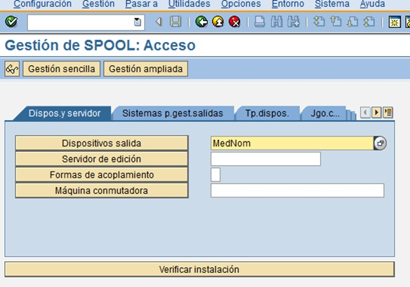
Aquí nos aparece el nombre del Tipo de dispositivo: ejemplo:
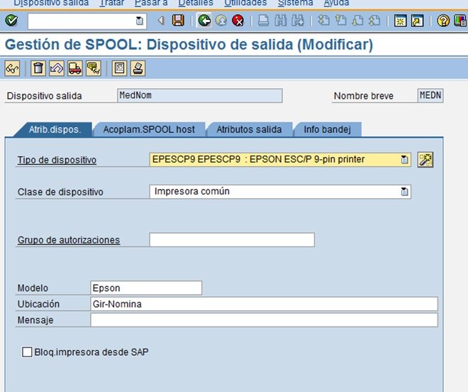
Damos click sobre la palabra Tipos de Dispositivo.
Damos Click en el icono Ediciones: , se le da el icono crear y se le da el nombre del tipo de dispositivo creado.
Comentarios: se liga el tipo de puerto al formato creado y ya. (Ojo no buscar por LP01, hay k ligarlo es la tipo no al nombre ejemplo SAPWIN)
Por SAPWIN y SWIN: doble click, en Ediciones se agregar el tipo creado, es importante mirar si tiene los comandos (aparecen en Verde).
Adicionalmente hay que insertar en configuración del SPAD en pestaña Tp.dispos. Tipos de Dispositivo en SAPWIN y SWIN lo siguiente:
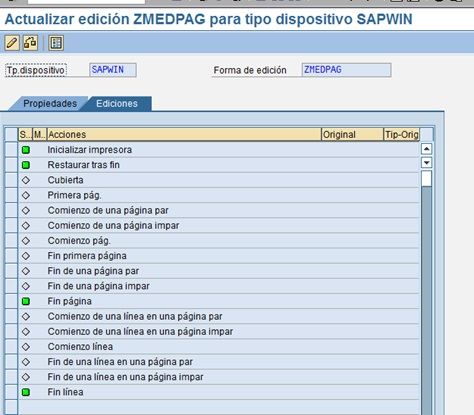
Inicializar impresora
# no action
Restaurar tras fin
# no action
Fin página
# formfeed
\f
Fin línea
# newline
\n
En la impresora del usuario se crea el mismo formato, siguiendo los siguientes pasos en WINDOWS:
Para que te salga dos empleados en una misma hoja, en SAP ya esta configurada la mitad de la hoja, solo falta crear la media pagina en tu computador, para ello debes de realizar lo siguiente en tu computador:
1. Click en Inicio
2. Click en Impresoras y faxes
3. Click derecho sobre el area en blanco
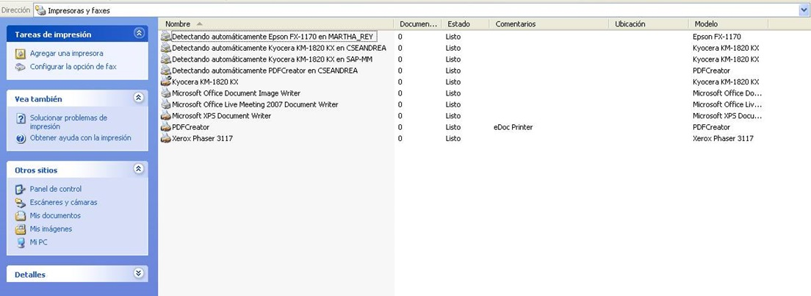
4. escoger la siguiente opcion subrayada
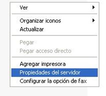
5. Marcar (click) la opcion “crear un formulario nuevo”
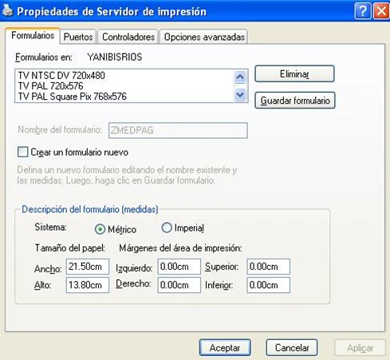
Asi debe de quedar
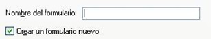
6. EL nombre del formulario es ZMEDPAG y las medidas son:
Ancho: 21.50cm
Alto: 13.80cm
7. Debe de quedar como la siguiente imagen se muestra
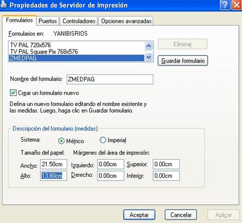
APLICAR Y ACEPTAR.
1. Estando en la lista de impresoras le das click derecho en el nombre de la impresora predeterminada para el volante. En mi caso es Kyocera KM-1820 KX
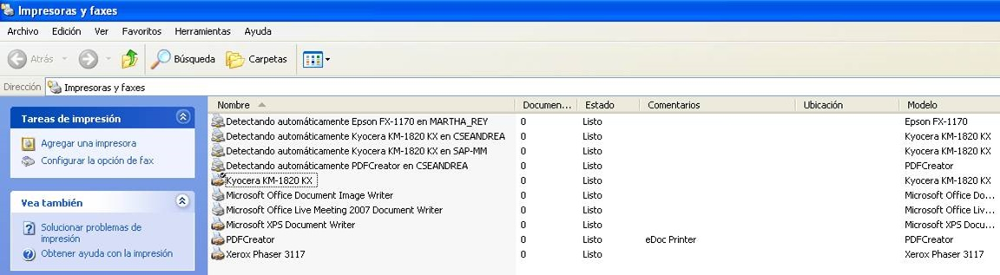
2. Escoges la opción “propiedades”
3.
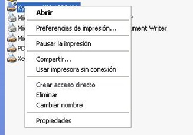
4. Te aparece la siguiente pantalla.
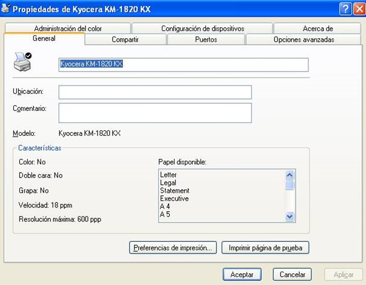
5. Hacer click en el icono Preferencias de impresión
6. Te aparece la siguiente pantalla donde escoges el formato “ZMEDPAG” y aceptar.
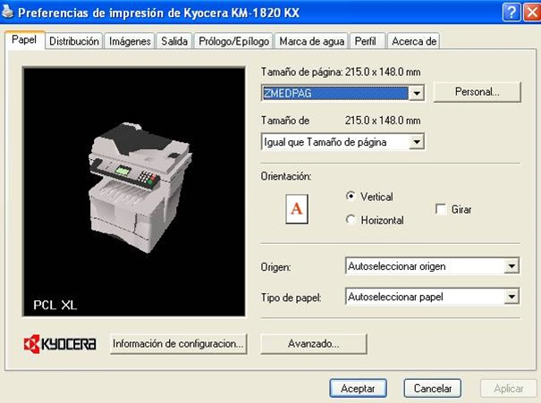
7. Por ultimo hacer pruebas para verificar que funcione.
INSTRUCCIÓN PARA COLOCAR UNA IMAGEN BMP EN SAPSCRIPT - LOGO - SO10 BITMAP 'ZBMP-CONCONCRE...
INSTRUCCIÓN PARA COLOCAR UNA IMAGEN BMP EN SAPSCRIPT - LOGO - SO10
BITMAP 'ZBMP-CONCONCRETO 600' OBJECT GRAPHICS ID BMAP TYPE BMON DPI 600
BITMAP 'ZLOGO_CNR_01' OBJECT GRAPHICS ID BMAP TYPE BCOL DPI 200
Transacciones
ACTIVAR Y DESACTIVAR ICONOS DE UN REPORTE Se abre el programa por la se38, click en el ic...
ACTIVAR Y DESACTIVAR ICONOS DE UN REPORTE
Se abre el programa por la se38, click en el icono ver visualizar lista de objetos se va a STATUS GUI
Se abren las opciones, para habilitar o deshabilitar se para sobre el nombre del icono y se hace click sobre icono Código func. (Debemos estar en modo modificar).
O por SE80 y status gui
ABAP y Codigo
PASAR EL CONTENIDO DE UNA TABLA DE DATOS A UNA TABLA INTERNA DATA: it_t52ev TYPE TABLE OF...
PASAR EL CONTENIDO DE UNA TABLA DE DATOS A UNA TABLA INTERNA
DATA: it_t52ev TYPE TABLE OF t52ev,
wa_t52ev TYPE t52ev.
SELECT * FROM t52ev INTO TABLE it_t52ev.
Transacciones
VER LA CONFIGURACIÓN DEL DYNPRO POR LA SE51 Por la se51, pero para ello primero vemos por...
VER LA CONFIGURACIÓN DEL DYNPRO POR LA SE51
Por la se51, pero para ello primero vemos por el IT respectivo los nombres del programa y el numero de la imagen.
Al ingresar muestra una pantalla similar a la siguiente:
Y en este punto le damos la opción de layout, para visualizar los campos.
Transacciones
HERRAMIENTA DE CARGUES NUEVA: LTMC
HERRAMIENTA DE CARGUES NUEVA:
LTMC
Transacciones
LSMW ADICIONAR UN REGISTRO CUANDO SE ESTA LEYENDO LA LINEA transfer_record.
LSMW ADICIONAR UN REGISTRO CUANDO SE ESTA LEYENDO LA LINEA
transfer_record. Con este adiciona una línea al BI. En el programa normal hace el otro transfer, por lo tanto grabaria 2 registros.
ABAP y Codigo
MENSAJES PARA EL USUARIO DURANTE LA EJECUCIÓN DE UN PROGRAMA ABAP CALL FUNCTION 'SAPGUI_P...
MENSAJES PARA EL USUARIO DURANTE LA EJECUCIÓN DE UN PROGRAMA ABAP
CALL FUNCTION 'SAPGUI_PROGRESS_INDICATOR'
EXPORTING
PERCENTAGE = 100
TEXT = PERNR-PERNR.
ABAP y Codigo
PARA CREAR EN UN BLOCK DE SELECTION SCREEN QUE PREGUNTE EL NOMBRE DEL ARCHIVO CON EL QUE...
PARA CREAR EN UN BLOCK DE SELECTION SCREEN QUE PREGUNTE EL NOMBRE DEL ARCHIVO CON EL QUE SE DESEA GUARDAR
Esto va en el block
PARAMETERS: p_file TYPE rlgrap-filename OBLIGATORY DEFAULT text-m02.
SELECTION-SCREEN END OF BLOCK b01.
AT SELECTION-SCREEN ON VALUE-REQUEST FOR p_file.
DATA: gs_filename TYPE string,
gs_path TYPE string,
gs_fullpath TYPE string,
gn_user_action TYPE i.
CALL METHOD cl_gui_frontend_services=>file_save_dialog
EXPORTING
window_title = 'Directorio...'
default_extension = 'XLSX'
default_file_name = 'Proyecto.XLSX'
file_filter = 'Excel (*.XLSX)|*.XLSX'
initial_directory = 'C:\\TEMP'
CHANGING
filename = gs_filename
path = gs_path
fullpath = gs_fullpath
user_action = gn_user_action
EXCEPTIONS
cntl_error = 1
error_no_gui = 2
not_supported_by_gui = 3
OTHERS = 4.
IF sy-subrc <> 0.
MESSAGE e162(alvht).
EXIT.
ENDIF.
p_file = gs_fullpath.
CALL FUNCTION 'WS_FILENAME_GET'
EXPORTING
def_filename = text-m02 "Reporte.xls
def_path = 'D:'
mask = ',all files,*.*.'
mode = 'O'
title = text-m01 "Selección de Directorio
IMPORTING
filename = p_file
EXCEPTIONS
inv_winsys = 1
no_batch = 2
selection_cancel = 3
selection_error = 4
OTHERS = 5.
Transacciones
CONOCER LOS USUARIOS ACTIVOS - LOGEADOS DENTRO DE UN SISTEMA SAP Transaccion AL08 o SM04,...
CONOCER LOS USUARIOS ACTIVOS - LOGEADOS DENTRO DE UN SISTEMA SAP
Transaccion AL08 o SM04, ademas dice que transaccion esta ejecutando.
ABAP y Codigo
GENERAR UN PUSHBUTTON EN LA SELECTION SELECTION-SCREEN PUSHBUTTON /5(70) t_push USER-COMM...
GENERAR UN PUSHBUTTON EN LA SELECTION
SELECTION-SCREEN PUSHBUTTON /5(70) t_push USER-COMMAND tecla_push MODIF ID 001.
Dos push en la misma linea:
SELECTION-SCREEN BEGIN OF BLOCK t_pushb WITH FRAME TITLE text-anz.
SELECTION-SCREEN PUSHBUTTON 1(79) t_clau USER-COMMAND t_claus
MODIF ID nur VISIBLE LENGTH 38.
SELECTION-SCREEN PUSHBUTTON 40(79) t_clauad USER-COMMAND t_clausad
MODIF ID all VISIBLE LENGTH 38.
SELECTION-SCREEN SKIP 1.
SELECTION-SCREEN END OF BLOCK t_pushb.
En la INITIALIZACION el nombre del boton: t_push = ‘Seleccione opcion’.
Luego en la
AT SELECTION-SCREEN OUTPUT.
Perform HIDDEN_PUSH. &WA_L_XEKPO-TXZ01&
Colocamos lo que queremos que lleve:
Ejemplo:
*&---------------------------------------------------------------------*
*& Form HIDDEN_PUSH
*&---------------------------------------------------------------------*
* text
*----------------------------------------------------------------------*
* --> p1 text
* <-- p2 text
* Visualiza unas opciones del menu inicial
*----------------------------------------------------------------------*
FORM hidden_push .
IF swa_fdef IS INITIAL. "Invisible
LOOP AT SCREEN.
IF screen-group1 = '001'.
screen-input = 0.
screen-output = 0.
screen-active = 0.
screen-invisible = 1.
MODIFY SCREEN.
ENDIF.
ENDLOOP.
ELSE.
LOOP AT SCREEN. "Visible
IF screen-group1 = '001'.
screen-input = 1.
screen-output = 1.
screen-active = 1.
screen-invisible = 0.
MODIFY SCREEN.
ENDIF.
ENDLOOP.
ENDIF.
ENDFORM. " HIDDEN_PUSH
AT SELECTION-SCREEN OUTPUT.
LOOP AT SCREEN.
IF screen-group1 = 'ZB2'.
IF p_pdf = abap_true.
screen-invisible = 0.
ELSE.
screen-invisible = 1.
screen-input = 0.
screen-output = 0.
screen-active = 0.
ENDIF.
MODIFY SCREEN.
ENDIF.
ENDLOOP.
SI SE QUIERE ACCION CUANDO SE DE CLICK SOBRE EL PUSHBUTTON
DATA: it_funciones LIKE tline-tdline OCCURS 0 WITH HEADER LINE,
it_funcexp LIKE tline OCCURS 0 WITH HEADER LINE.
SELECTION-SCREEN BEGIN OF BLOCK bloq_03 WITH FRAME TITLE text-002.
SELECTION-SCREEN BEGIN OF LINE.
SELECTION-SCREEN COMMENT 1(31) text-004 FOR FIELD gd_fece.
PARAMETERS: gd_fece TYPE sy-datum.
SELECTION-SCREEN END OF LINE.
PARAMETERS: p_check AS CHECKBOX,
pfile LIKE rlgrap-filename .
SELECTION-SCREEN END OF BLOCK bloq_03.
SELECTION-SCREEN BEGIN OF BLOCK t_pushb WITH FRAME TITLE text-003.
SELECTION-SCREEN SKIP 1.
SELECTION-SCREEN PUSHBUTTON 10(79) t_clau USER-COMMAND t_claus
MODIF ID nur VISIBLE LENGTH 38.
SELECTION-SCREEN PUSHBUTTON 56(79) t_func USER-COMMAND t_funcs
MODIF ID nur VISIBLE LENGTH 38.
SELECTION-SCREEN END OF BLOCK t_pushb.
AT SELECTION-SCREEN.
CASE sscrfields-ucomm.
WHEN 'T_CLAUS'.
CALL SCREEN 2000 STARTING AT 10 1.
WHEN 'T_CLAUSAD'.
CALL SCREEN 2001 STARTING AT 10 1.
WHEN 'T_FUNCS'.
CALL FUNCTION 'TERM_CONTROL_EDIT'
EXPORTING
titel = 'Funciones desempeñadas por el empleado'
langu = sy-langu
TABLES
textlines = it_funciones
EXCEPTIONS
user_cancelled = 1
OTHERS = 2.
IF sy-subrc <> 0.
ENDIF.
ENDCASE.
ABAP y Codigo
BOTON BUTTON QUE PIDE UNA CONFIRMACION DEL USUARIO PARA CONTINUAR, MESSAGE, MENSAJES, PRE...
BOTON BUTTON QUE PIDE UNA CONFIRMACION DEL USUARIO PARA CONTINUAR, MESSAGE, MENSAJES, PREGUNTA
CALL FUNCTION 'POPUP_TO_CONFIRM'
EXPORTING
titlebar = 'Borrar Versión del ECP'
* DIAGNOSE_OBJECT = ' '
text_question = lc_question
text_button_1 = 'Aceptar'
* ICON_BUTTON_1 = ' '
* text_button_2 = 'Cancelar'
* ICON_BUTTON_2 = ' '
* DEFAULT_BUTTON = '1'
display_cancel_button = ''
* USERDEFINED_F1_HELP = ' '
* START_COLUMN = 25
* START_ROW = 6
* POPUP_TYPE =
* IV_QUICKINFO_BUTTON_1 = ' '
* IV_QUICKINFO_BUTTON_2 = ' '
IMPORTING
answer = lc_answer
* TABLES
* PARAMETER =
EXCEPTIONS
text_not_found = 1
OTHERS = 2.
IF sy-subrc <> 0.
EXIT.
ENDIF.
IF lc_answer NE '1'.
EXIT.
ENDIF.
DATA: T_ANSWER TYPE C.
CALL FUNCTION 'POPUP_WITH_2_BUTTONS_TO_CHOOSE'
EXPORTING
DEFAULTOPTION = '1'
DIAGNOSETEXT1 = ' '
DIAGNOSETEXT2 = '_______________________________________________________'
TEXT_OPTION1 = 'Genera Archivo'
TEXT_OPTION2 = 'Cancelar'
TEXTLINE1 = ' Desea Generar los Archivos PDF,'
TEXTLINE2 = ' Asociados a esta Contabilizacion'
TEXTLINE3 = ' '
TITEL = 'Opcion'
IMPORTING
ANSWER = T_ANSWER.
CHECK T_ANSWER = '1'.
CALL FUNCTION 'POPUP_CONTINUE_YES_NO'
EXPORTING
defaultoption = 'Y'
textline1 = text-i04
textline2 = text-i05
titel = 'Error al Seleccionar empleados'
start_column = 25
start_row = 6
IMPORTING
answer = t_answer.
CALL FUNCTION 'POPUP_CONTINUE_YES_NO'
EXPORTING
defaultoption = 'Y'
textline1 = TEXT-i01
textline2 = TEXT-i02
titel = 'Desea salir del programa sin grabar?'
start_column = 25
start_row = 6
IMPORTING
answer = lv_answer.
IF lv_answer = 'J'. "Continuar en la pantalla actual
CLEAR: gv_ok_code_0101.
RETURN.
ENDIF.
UN SOLO BOTON
CALL FUNCTION 'POPUP_FOR_INTERACTION'
EXPORTING
headline = 'Pedido con Entradas'
text1 = 'Ya existen entradas, No se permite cambiar el precio...'
* TEXT2 = ' '
* TEXT3 = ' '
* TEXT4 = ' '
* TEXT5 = ' '
* TEXT6 = ' '
* TICON = 'I'
button_1 = 'Aceptar'.
* BUTTON_2 = ' '
* BUTTON_3 = ' '
* IMPORTING
* BUTTON_PRESSED =.
ABAP y Codigo
AYUDA DE BUSQUEDA EN EL CAMPO DE SELECCION SELECTION-SCREEN BEGIN OF BLOCK blk2 WITH FRAM...
AYUDA DE BUSQUEDA EN EL CAMPO DE SELECCION
SELECTION-SCREEN BEGIN OF BLOCK blk2 WITH FRAME TITLE text-b02.
SELECTION-SCREEN BEGIN OF LINE.
SELECTION-SCREEN COMMENT 2(30) text-b21 FOR FIELD p_posf.
PARAMETERS: p_posf TYPE hrobjid MODIF ID pos.
SELECTION-SCREEN END OF LINE.
SELECTION-SCREEN END OF BLOCK blk2.
ESTE CÓDIGO SIGUIENTE REEMPLAZA LA BÚSQUEDA DE HRBAS00OBJID
AT SELECTION-SCREEN ON VALUE-REQUEST FOR p_posf.
DATA: gv_plvar TYPE plvar VALUE '01',
gv_otype TYPE otype VALUE 'S',
f4_objec LIKE objec.
CALL FUNCTION 'RH_OBJID_REQUEST' "XMKBCEK002468
EXPORTING
plvar = gv_plvar
otype = gv_otype
dynpro_repid = sy-repid "self_repid
dynpro_dynnr = sy-dynnr "self_dynnr
dynpro_plvarfield = 'PPHDR-PLVAR'
dynpro_searkfield = 'PM0D1-SEARK'
IMPORTING
sel_object = f4_objec
EXCEPTIONS
cancelled = 1
wrong_condition = 2
nothing_found = 3
illegal_mode = 4
internal_error = 5
OTHERS = 6.
IF sy-subrc = 0.
MOVE f4_objec-realo TO p_posf.
ENDIF.
Diccionario y Datos
CONSULTA AYUDA DE BUSQUEDA DE OBJETOS CON ESTRUCTURA – UNIDAD ORGANIZATIVA – POSICION – F...
CONSULTA AYUDA DE BUSQUEDA DE OBJETOS CON ESTRUCTURA – UNIDAD ORGANIZATIVA – POSICION – FUNCION
HRBAS00OBJID
ABAP y Codigo
FUNCIONES DE MENSAJES DE CONFIRMACION AQ_INT_SHOW_MESSAGE_AS_POPUP EWB_POPUP_MESSAGE POPU...
FUNCIONES DE MENSAJES DE CONFIRMACION
AQ_INT_SHOW_MESSAGE_AS_POPUP
EWB_POPUP_MESSAGE
POPUP_TO_CONFIRM
DD_POPUP_TO_CONFIRM_CANCEL
POPUP_WITH_2_BUTTONS_TO_CHOOSE
POPUP_WITH_3_BUTTONS_TO_CHOOSE
POPUP_WITH_TABLE_DISPLAY_OK
CALL FUNCTION 'POPUP_TO_CONFIRM'
EXPORTING
titlebar = 'Aprobación de Horas Extras'
* DIAGNOSE_OBJECT = ' '
text_question = 'Proceso que desea efectuar:'
text_button_1 = 'Aprobar HE'
icon_button_1 = 'ICON_CHECKED'
text_button_2 = 'Recalculo HE'
icon_button_2 = 'ICON_CALCULATION'
default_button = '2'
* DISPLAY_CANCEL_BUTTON = 'X'
* USERDEFINED_F1_HELP = ' '
* START_COLUMN = 25
* START_ROW = 6
* POPUP_TYPE =
* IV_QUICKINFO_BUTTON_1 = ' '
* IV_QUICKINFO_BUTTON_2 = ' '
IMPORTING
answer = w_resp
* TABLES
* PARAMETER =
* EXCEPTIONS
* TEXT_NOT_FOUND = 1
* OTHERS = 2
*****
Transacciones
ESTE PARA MENÚ: DYNAMIC_MENUE, devuelve la posición de la línea que se escogio.
ESTE PARA MENÚ: DYNAMIC_MENUE, devuelve la posición de la línea que se escogio.
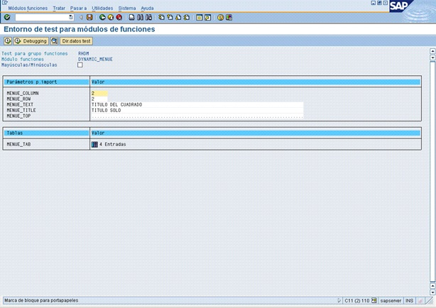
Registro 62
ABAP y Codigo
DATA: t_answer TYPE c.
DATA: t_answer TYPE c.
CALL FUNCTION 'POPUP_WITH_2_BUTTONS_TO_CHOOSE'
EXPORTING
defaultoption = '1'
diagnosetext1 = 'Se han Generado Errores al efectuar la Grabacion del Registro'
diagnosetext2 = '_______________________________________________________'
text_option1 = 'Continuar'
text_option2 = 'Continuar'
textline1 = returnstr
textline2 = ' '
textline3 = 'La Promoción no se ha podido Grabar, Verifique la Inconsistencia.'
titel = ' Error'
IMPORTING
answer = t_answer.
CHECK t_answer = '1'.
Transacciones
MENSAJES DE VISUALIZACION A USUARIOS Transacción SE91, se crea la clase de mensaje ejempl...
MENSAJES DE VISUALIZACION A USUARIOS
Transacción SE91, se crea la clase de mensaje ejemplo zhcm y se crean los mensajes necesarios. Recordar que el & es el k reemplaza el mensaje que uno envia desde el programa.
Transacciones
CREAR PAQUETE DE TRANSPORTE ZHCM – SE80
CREAR PAQUETE DE TRANSPORTE ZHCM – SE80
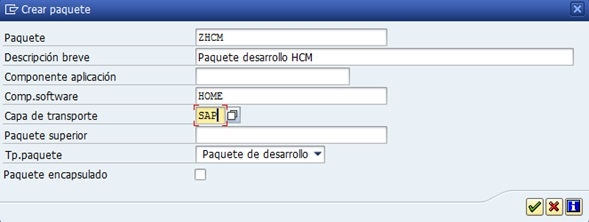
MODIFICACION DE PROPUESTA PARA EL USER-EXIT ZXPADU01 Primero se ingresa a la transacción...
MODIFICACION DE PROPUESTA PARA EL USER-EXIT ZXPADU01
Primero se ingresa a la transacción CMOD, se elije el proyecto Z* ejemplo ZHCM0001.
En asignación de ampliaciones se elige PBAS0001 PA: Gestión/contratac.personal: Valores propuesta y verif., Existen otras ampliaciones que se deben buscar según las necesidades ejemplo: PBEN0008 para beneficios, PBEN0010 creo que es para beneficios también.
Para revisar algunas ampliaciones: Vista SM30 tabla
T582C
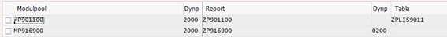
V_T582V
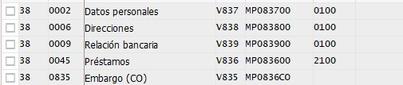
V_T521A – para que aparezca este campo
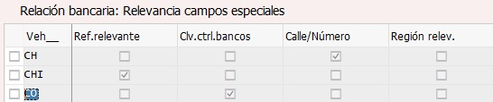
Luego visualizar o modificar y se ingresa por el boton componentes, donde se ve una pantalla similar a la siguiente:
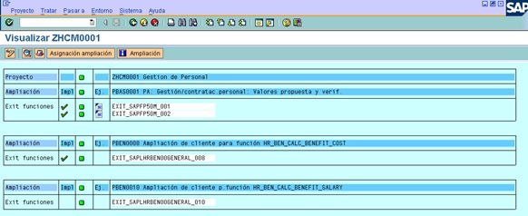
Si le damos doble click sobre el EXIT_SAPFP50M_001, nos lleva a un programa k contiene el...
Si le damos doble click sobre el EXIT_SAPFP50M_001, nos lleva a un programa k contiene el include ZXPADU01, si no existe se crea como include comun y corriente, dentro de este van las validaciones en el momento k el usuario efectua la captura.
El EXIT_SAPFP50M_001, el chulo en Impl aparecerá activado.
Un ejemplo es:
*&---------------------------------------------------------------------*
*& Include ZXPADU01
*&---------------------------------------------------------------------*
* Tablas disponibles.
* INNNN STRUCTURE PRELP
* IPSYST STRUCTURE PSYST
* I001P STRUCTURE T001P
* I503 STRUCTURE T503
** AQUI SE ESTABLECEN PROPUESTA DE DATOS CUANDO SE CREAN O COPIAN
** INFOTIPOS.
DATA: gti_p1008 TYPE STANDARD TABLE OF p1008,
gst_p1008 TYPE p1008.
CLEAR: gti_p1008, gti_p1008[].
CALL FUNCTION 'RH_READ_INFTY'
EXPORTING
plvar = planvar
otype = 'S'
objid = objec_plans
infty = '1008'
subty = ' '
begda = wa_req-fec_sol
endda = wa_req-fec_sol
TABLES
innnn = gti_p1008
EXCEPTIONS
all_infty_with_subty = 1
nothing_found = 2
no_objects = 3
wrong_condition = 4
wrong_parameters = 5
OTHERS = 6.
DATA: i0831 LIKE p0831.
DATA: i1222 LIKE p1222 OCCURS 0 WITH HEADER LINE,
it1222 LIKE hrt1222 OCCURS 0 WITH HEADER LINE.
CLEAR: i1222, it1222.
REFRESH: i1222, it1222.
CASE innnn-infty.
WHEN '0831'.
CALL METHOD cl_hr_pnnnn_type_cast=>prelp_to_pnnnn
EXPORTING
prelp = innnn
IMPORTING
pnnnn = i0831.
CASE i0831-subty.
WHEN 'ARP'.
CALL FUNCTION 'RH_INTEGRATION_CHECK'
IMPORTING
integrated_plvar = planvar
EXCEPTIONS
OTHERS = 1.
* Verificar el centro de trabajo de la posicion
* Buscar en el infotipo atributos adicionales 1222
CALL FUNCTION 'RH_READ_INFTY'
EXPORTING
plvar = planvar
otype = 'S'
objid = ipsyst-plans
infty = '1222'
subty = 'ZDET'
begda = i0831-begda
endda = i0831-begda
TABLES
innnn = i1222
EXCEPTIONS
all_infty_with_subty = 1
nothing_found = 2
no_objects = 3
wrong_condition = 4
wrong_parameters = 5
OTHERS = 6.
IF sy-subrc EQ 0.
CALL FUNCTION 'RH_READ_INFTY_TABDATA'
EXPORTING
infty = '1222'
TABLES
innnn = i1222
hrtnnnn = it1222.
IF sy-subrc EQ 0.
LOOP AT i1222 WHERE plvar EQ '01' AND
otype EQ 'S' AND
objid EQ ipsyst-plans AND
infty EQ '1222' AND
subty EQ 'ZDET' AND
begda LE i0831-begda AND
endda GE i0831-begda.
LOOP AT it1222 WHERE tabnr EQ i1222-tabnr AND
attrib = 'Z_ARPPORCE'.
MOVE it1222-low TO i0831-centr.
select single perpr into i0831-pecom from T7CO06 where bukrs = ipsyst-bukrs and
centr = i0831-centr.
ENDLOOP.
ENDLOOP.
ENDIF.
ENDIF.
WHEN OTHERS.
ENDCASE. "fin CASE i0831-subty.
CALL METHOD cl_hr_pnnnn_type_cast=>pnnnn_to_prelp
EXPORTING
pnnnn = i0831
IMPORTING
prelp = innnn.
WHEN OTHERS.
ENDCASE. "fin CASE innnn-infty.
Importante son los call method, ya k el primero pasa la información a una estructura interna para trabajar, y el segundo la retorna al programa principal.
Si queremos validar después de capturar los datos, pero antes de grabar se debe utilizar el ZXPADU02, pero activando el EXIT_SAPFP50M_002.
Transacciones
MENSAJES DE ADVERTENCIA EN EL ZXPADU01 Y ZXPADU02 Pero solo se puede en estos directament...
MENSAJES DE ADVERTENCIA EN EL ZXPADU01 Y ZXPADU02
Pero solo se puede en estos directamente no se puede sobre ZXPADF02
CONCATENATE 'Solo a Empleados Puede Cambiar el Sueldo Propuesto' '.' INTO w_mensaje
SEPARATED BY space.
MESSAGE i001(zhcm) WITH w_mensaje.
show_data_again = 'X'.
Diccionario y Datos
CREACION DEL IT 9381 – CREACION DE INFOTIPOS NUEVOS * Se deben definir k campos contiene...
CREACION DEL IT 9381 – CREACION DE INFOTIPOS NUEVOS
* Se deben definir k campos contiene el IT.
* transacción PM01 crear el infotipo, al dar el icono crear, el crea la estructura PS9381 en esta estructura definimos los campos particulares k vamos a manejar, ya que los campos clave quedan generados automáticamente en la P9381 y PA9381.
* Las caracteristicas tecnicas es mejor copiarlas de un Infotipo k maneje un enlace parecido o relacion parecida, y la imagen del dynpro de una parecida.
* Una vez creado el IT ya se puede ver por la pa30 y revisar como kedo, cuando lo veamos por aki vamos a sistema status y vemos el nombre del programa dynpro p.ejemplo MP938100 y el nro. Del dynpro p.ejemplo 2000.
*como usualmente lo que se muestra no es agradable a la vista entramos a la transacción SE51 (Screen painter) e ingresamos el nombre del programa dynpro y el nro del dynpro y empezamos a modificar lo k necesitamos.
Diccionario y Datos
MODIFICAR, INSERTAR INFOTIPOS SELECT * FROM PA0016 WHERE PERNR = PERNR-PERNR AND BEGDA =...
MODIFICAR, INSERTAR INFOTIPOS
SELECT * FROM PA0016 WHERE PERNR = PERNR-PERNR AND
BEGDA = P0006-BEGDA AND
ENDDA = P0006-ENDDA.
MOVE 'X' TO PA0016-NBTGK.
MODIFY PA0016.
WRITE: pernr-pernr no-gap.
ENDSELECT.
UPDATE pa9303
SET endda = w_fecha_finant
WHERE pernr EQ ls_9303-pernr
AND endda GT w_fechai
AND begda LT w_fechai.
INSERT pa9303 FROM ls_9303.
IF sy-subrc NE 0.
UPDATE pa9303 FROM ls_9303.
ENDIF.
CALL FUNCTION 'HR_INFOTYPE_OPERATION'
EXPORTING
infty = inf_actual_p9381-infty
number = inf_actual_p9381-pernr
subtype = inf_actual_p9381-subty
validityend = inf_actual_p9381-endda
validitybegin = inf_actual_p9381-begda
record = inf_actual_p9381
operation = 'MOD'
nocommit = 'X'
IMPORTING
return = return
key = key.
Programa SAPLHRMM, LHRMMU01 y rutina IF NO_ENQUEUE IS INITIAL.
Diccionario y Datos
PARA VALIDAR UN CAMPO DESPUES DE CAPTURARSE EN UN INFOTIPO, Y DEJAR ACTIVO EL DYNPRO if p...
PARA VALIDAR UN CAMPO DESPUES DE CAPTURARSE EN UN INFOTIPO, Y DEJAR ACTIVO EL DYNPRO
if p0830-prced is initial.
message i060(zhrmsg) with 'Defina Tipo de Procedimiento'.
clear:fcode.
endif.
Con e060(zhrmsg) tiene el problema k inactiva los campos y no los deja habilitados para trabajar..
Diccionario y Datos
TABLA PARA VALIDAR CAMPOS DE DYNPROS V_T588M
TABLA PARA VALIDAR CAMPOS DE DYNPROS
V_T588M
Transacciones
INSERTAR NODOS EN EL SPRO Transaccion s_img_extension En estructura IMG, abrimos el match...
INSERTAR NODOS EN EL SPRO
Transaccion s_img_extension
En estructura IMG, abrimos el match code y damos el nombre de un nodo que ya exista, por ejemplo: Gestión de personal
En ID Ampliación damos el nombre del Z de la ampliación, ejemplo: ZHCM_NOMINA Ampliación Actividades Cálculo de Nómina Colombia
Y luego ampliar estructura
Se busca donde insertar, mediante el icono actividad o lapiz si ya existe.
Ejemplo:
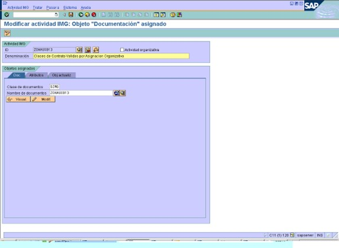
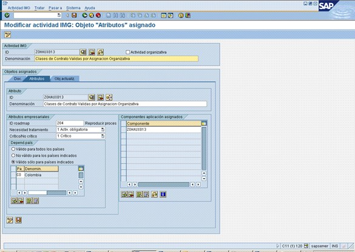
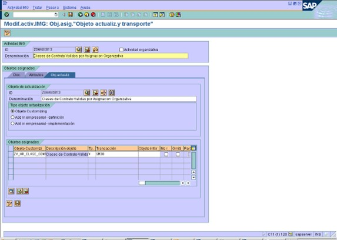
COMO SE LLAMAN LOS USER EXIT EN UN PROGRAMA ABAP Usualmente están indicados con la funció...
COMO SE LLAMAN LOS USER EXIT EN UN PROGRAMA ABAP
Usualmente están indicados con la función:
Customer_fuction
CALL FUNCTION 'HR_GET_BUSINESS_ADD_IN'
EXPORTING
exit_name = 'HRCMP00COMPA_RATIO' “ Nombre de user k varia
flt_val = molga
IMPORTING
is_implemented = l_exit_implemented
* TABLES
* ACTIVE_IMPS =
CHANGING
instance = l_compa_ratio_exit.
Diccionario y Datos
AMPLIACION INFOTIPO PA ESTÁNDAR POR PM01 Por la PM01, por la pestaña Ampliar Estructura i...
AMPLIACION INFOTIPO PA ESTÁNDAR POR PM01
Por la PM01, por la pestaña Ampliar Estructura imagen, se le da GENERAR OBJETOS, se incluyen los campos que hagan falta. Se crea y se activa todo.
Es importante Crear las estructuras del infotipo ejemplo:
CI_XX_R0006 y CI_XX_R0006: en ambas va la misma información de campos.
Para que lo tome el infotipo actual: por la pestaña Imag.Ind (Ampliar Infotipo), en el campo include imagen se coloca el numero del dynpro (XXXX) que uno quiere para que se vean los nuevos campos Z definidos. Uno puede crear uno propia para cada país, aparecerán todos los campos, pero uno elige los que quiere quitándolos por SE51.
En esta pestaña aparece el icono Asignar ampliación, se ingresa en orden: el Nombre del Modulpool estándar y el dynpro respectivo (usualmente el 2000), en el nombre del reporte se coloca el Z generado (ejemplo: ZP082900) y el dynpro creado para esa ampliación (XXXX). Si desea modificar algo del dynpro, utilice la SE51 con el nombre ZP* [Numero del IT].
Cuando no aparezca en la vista de imagen Z generado (ejemplo: ZP082900) con el numero de dynpro (XXXX), verificar en el screen painter, en la ventana de detalles del screen painter donde dice grupos revisar que puede o no manejar el mismo numero de grupo de otros objetos en la primera casilla, la segunda va vacia, la tercera va con el numero que aparecerá en la tabla de imagen, y la cuarta va vacia.
Ejemplo:
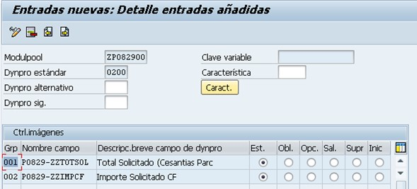
tabla de imágenes
AMPLIACION INFOTIPO OM ESTÁNDAR POR PPCM - AMPLIAR PPCJ – CREAR INFOTIPO PPCI – COPIAR IN...
AMPLIACION INFOTIPO OM ESTÁNDAR POR
PPCM - AMPLIAR
PPCJ – CREAR INFOTIPO
PPCI – COPIAR INFOTIPO
Como crear PPCJ:
• Crear la estructura HRI9001 va sin P, ejecutar Trx. PPCJ
Ejemplos:
• http://www.mundoabap.es/index.php?option=com_content&view=article&id=28:infotipopd&catid=5:hr&Itemid=31
• http://saptechnical.com/Tutorials/HRABAP/OMinfotype/Create.htm
Al ingresar indique el IT que desea ampliar y en la opción de imagen individual, genere cada opción normalmente con el icono crear. Después de terminar vera la ampliación por la transacción PO13, Si desea modificar algo del dynpro, utilice la SE51 con el nombre ZP* [Numero del IT].
Pasos que también funcionan:
• Crear la estructura HRI9001 va sin P, a veces Pide clave de objeto y con paquete Z* o SAP
• Se ejecuta la función RH_INFTY_CREATE, con el nuevo infotipo y se basa en uno similar.
• Se asocia al objeto: Gestión de personal -> Gestión de organización -> Parametrizaciones básicas -> Ampliación modelación de datos -> Actualización de infotipos
• Existen varias funciones que permiten regenerar los dynpros RH_INFTY_SCREEN_CREATE, etc: inician por RH_INFTY*
ABAP y Codigo
CUANDO SE BLOQUEA UNA AMPLIACION PARECE QUE YA UTILIZADA Se ingresa por la SE80 en los ob...
CUANDO SE BLOQUEA UNA AMPLIACION PARECE QUE YA UTILIZADA
Se ingresa por la SE80 en los objetos
Repository Mime
Browser de Repository
Transport Organizer
Debe aparecer un elemento k se llama enhancement Info System
Una vez aparezca se ingresa a la ampliación bloqueada, en modo modificar, se ingresa al icono ABAP, se graba y se activa y listo.
ABAP y Codigo
CAPTURA DE UN CAMPO EN LA SELECTION-SCREEN CON MATCH CODE – BOTON SELECCIÓN MULTIPLE (SEL...
CAPTURA DE UN CAMPO EN LA SELECTION-SCREEN CON MATCH CODE – BOTON SELECCIÓN MULTIPLE (SELECT-OPTIONS)
AYUDA DE BUSQUEDA
selection-screen begin of line.
selection-screen comment 2(30) text-b21 for field p_repre.
parameters:
p_repre like pernr-pernr modif id sel " CODIGO REPRESENTANTE CIA
matchcode object prem.
selection-screen end of line.
ejemplo enviar un parametro al MATCHCODE OBJECT:
TABLES: m_plksa.
SELECTION-SCREEN BEGIN OF BLOCK blk3 WITH FRAME TITLE text-003.
SELECTION-SCREEN BEGIN OF LINE.
SELECTION-SCREEN COMMENT 2(29) text-s31 FOR FIELD p_agrup.
PARAMETERS: p_agrup TYPE m_plksa-plnnr. "plnnr MATCHCODE OBJECT plks.
SELECTION-SCREEN END OF LINE.
INITIALIZATION.
m_plksa-plnty = 'Q'.
Ahora si queremos enviar un parametro al MATCHCODE OBJECT se debe utilizar un campo de una tabla que ya exista con la ayuda de busqueda y simplemente se mueve el valor al campo que supuestamente leyo.
En el siguiente ejemplo de ayuda de H_T556, el campo MOVER se alimenta del dato de la tabla T001P-MOVER, por lo tanto
NO SE DEBE USAR:
SELECT-OPTIONS:
t_vtart FOR p2003-vtart MATCHCODE OBJECT h_t556.
SELECTION-SCREEN END OF LINE.
SE DEBE USAR:
SELECT-OPTIONS:
t_vtart FOR p2003-vtart.
SELECTION-SCREEN END OF LINE.
La forma exacta de generarla es revisar el debug del la consulta, en el programa SAPLSHL2, include LSHL2U01 en la línea 54 al efectuar al instrucción:
* Alle F4-Hilfe Aufrufe werden hier abgehandelt
if help_infos-call = 'T' or "Alle Arten von Prüftabellen
help_infos-call = 'M' or "Matchcode-Hilfe
help_infos-call = 'V'. "Festwerte (Domäne oder VALUES)
"+ alle anderen
call function 'DD_SHLP_CALL_FROM_DYNP'
En la tabla: DYNPSELECT se llenan los campos en las tablas respectivas. Ejemplo:
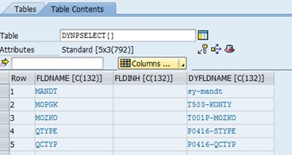
Por lo tanto en el programa se efectúa:
REPORT zrphcm027.
TABLES: pernr,
t503,
t001p.
En INITIALIZATION:
t503-konty = '1'.
t001p-mozko = '38'.
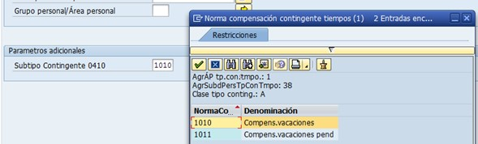
PARA VALIDAR LEER SE UTILIZA IN: LOOP AT p2002 WHERE subty IN s_presen ...
PARA VALIDAR LEER SE UTILIZA IN:
LOOP AT p2002 WHERE subty IN s_presen ...
ABAP y Codigo
PARA QUE AL HACER UNA CONSULTA SE CONOZCA EL CONTENIDO DE LOS CAMPOS DE LA DYNPRO, ASÍ NO...
PARA QUE AL HACER UNA CONSULTA SE CONOZCA EL CONTENIDO DE LOS CAMPOS DE LA DYNPRO, ASÍ NO SE LE HALLA INDICADO ENTER.
AT SELECTION-SCREEN ON VALUE-REQUEST FOR p_perio1.
PERFORM f4_dotacion USING 'P_PERIO1' 'PERIOD'.
FORM f4_dotacion USING dynprofield TYPE help_info-dynprofld
p_nomcampo TYPE fieldname.
DATA: dynpfields LIKE dynpread OCCURS 0 WITH HEADER LINE.
CALL FUNCTION 'DYNP_VALUES_READ'
EXPORTING
dyname = sy-repid
dynumb = sy-dynnr
request = 'A'
TABLES
dynpfields = dynpfields
EXCEPTIONS
OTHERS = 9.
CHECK sy-subrc EQ 0.
LOOP AT dynpfields WHERE fieldname = 'PNPBUKRS-LOW'.
MOVE dynpfields-fieldvalue TO pnpbukrs-low.
EXIT.
ENDLOOP.
ABAP y Codigo
PARA UTILIZAR SIN QUE PREGUNTE EL INTERVALO SELECT-OPTIONS: p_jefeu FOR p0001-pernr NO IN...
PARA UTILIZAR SIN QUE PREGUNTE EL INTERVALO
SELECT-OPTIONS:
p_jefeu FOR p0001-pernr NO INTERVALS.
ABAP y Codigo
CAPTURA DE UN CAMPO EN LA SELECTION-SCREEN CON RADIOBUTTON SELECTION-SCREEN BEGIN OF LINE.
CAPTURA DE UN CAMPO EN LA SELECTION-SCREEN CON RADIOBUTTON
SELECTION-SCREEN BEGIN OF LINE.
PARAMETERS:
p_ingres LIKE rptxxxxx-kr_feld1 RADIOBUTTON GROUP lis2 DEFAULT 'X'.
SELECTION-SCREEN COMMENT 2(79) text-s01 FOR FIELD p_ingres.
SELECTION-SCREEN END OF LINE.
SELECTION-SCREEN BEGIN OF LINE.
PARAMETERS:
p_trasla LIKE rptxxxxx-kr_feld1 RADIOBUTTON GROUP lis2.
SELECTION-SCREEN COMMENT 2(79) text-s02 FOR FIELD p_trasla.
SELECTION-SCREEN END OF LINE.
SELECTION-SCREEN BEGIN OF LINE.
PARAMETERS:
p_retiro LIKE rptxxxxx-kr_feld1 RADIOBUTTON GROUP lis2.
SELECTION-SCREEN COMMENT 2(79) text-s03 FOR FIELD p_retiro.
SELECTION-SCREEN END OF LINE.
ABAP y Codigo
CAPTURA DE UN CAMPO EN LA SELECTION-SCREEN QUE NO PREGUNTE EL ICONO DE SELECCIÓN MULTIPLE.
CAPTURA DE UN CAMPO EN LA SELECTION-SCREEN QUE NO PREGUNTE EL ICONO DE SELECCIÓN MULTIPLE. QUITAR ICONO.
SELECT-OPTIONS: s_date FOR sy-datum OBLIGATORY NO-EXTENSION .
ABAP y Codigo
CAPTURA DE UN CAMPO EN LA SELECTION-SCREEN CON VARIANTE DE VISUALIZACIÓN REPORTE Data: l_...
CAPTURA DE UN CAMPO EN LA SELECTION-SCREEN CON VARIANTE DE VISUALIZACIÓN REPORTE
Data: l_variant LIKE disvariant.
SELECTION-SCREEN BEGIN OF BLOCK blk3 WITH FRAME TITLE text-301.
SELECTION-SCREEN: BEGIN OF LINE.
SELECTION-SCREEN: COMMENT 1(26) text-351 FOR FIELD %alvl
MODIF ID new.
PARAMETERS: %alvl TYPE slis_vari MODIF ID new.
SELECTION-SCREEN: END OF LINE.
SELECTION-SCREEN END OF BLOCK blk3.
AT SELECTION-SCREEN.
PERFORM alvl_check USING %alvl . "Valida que existe la variante
AT SELECTION-SCREEN ON VALUE-REQUEST FOR %alvl.
PERFORM alvl_value_request USING %alvl. "Muestra las Variantes para este reporte
*----------------------------------------------------------------------*
* FORM ALVL_CHECK
*----------------------------------------------------------------------*
* Überprüfung der ALV Layoutvariante
*----------------------------------------------------------------------*
* --> P_VARIANT ALV Layoutvariante
* P_LID1 Id der ersten Teilliste
*----------------------------------------------------------------------*
FORM alvl_check USING p_variant TYPE slis_vari.
* p_lid1 type aql_lid.
DATA: l_disvariant TYPE disvariant.
IF p_variant = space.
EXIT.
ENDIF.
* Existenzcheck
l_disvariant-report = sy-cprog.
* l_disvariant-report(1) = 'A'.
l_disvariant-variant = p_variant.
* l_disvariant-log_group = p_lid1.
CALL FUNCTION 'LVC_VARIANT_EXISTENCE_CHECK'
* exporting
* i_save = 'A'
CHANGING
cs_variant = l_disvariant
EXCEPTIONS
OTHERS = 1.
IF sy-subrc <> 0.
MESSAGE 'No existe Variante de Visualización' TYPE 'I'.
CLEAR: p_variant.
ENDIF.
ENDFORM. "ALVL_CHECK
*----------------------------------------------------------------------*
* FORM ALVL_VALUE_REQUEST
*----------------------------------------------------------------------*
* F4-Hilfe für die ALV Layoutvariante
*----------------------------------------------------------------------*
* --> P_VARIANT ALV Layoutvariante
* P_LID1 Id der ersten Teilliste
*----------------------------------------------------------------------*
FORM alvl_value_request USING p_variant TYPE slis_vari.
* p_lid1 type aql_lid.
DATA: l_disvariant TYPE disvariant.
* Wertehilfe
l_disvariant-report = sy-cprog.
* l_disvariant-report(1) = 'A'.
l_disvariant-variant = p_variant.
* l_disvariant-log_group = p_lid1.
CALL FUNCTION 'LVC_VARIANT_SAVE_LOAD'
* exporting
* i_save_load = 'F'
* i_tabname = '1'
CHANGING
cs_variant = l_disvariant
EXCEPTIONS
OTHERS = 1.
IF sy-subrc = 0.
p_variant = l_disvariant-variant.
ELSE.
* MESSAGE ID sy-msgid TYPE sy-msgty NUMBER sy-msgno
* WITH sy-msgv1 sy-msgv2 sy-msgv3 sy-msgv4.
ENDIF.
ENDFORM. "ALVL_VALUE_REQUEST
Luego se mueve en la función:
MOVE sy-cprog TO l_variant-report.
MOVE %alvl TO l_variant-variant.
CALL FUNCTION 'REUSE_ALV_GRID_DISPLAY'
EXPORTING
En el exporting is_variant = l_variant
ABAP y Codigo
PROGRAMA PARA LEER DESDE UN ARCHIVO PLANO SELECCIONADO parameters: p_path like IBIPPARMS-...
PROGRAMA PARA LEER DESDE UN ARCHIVO PLANO SELECCIONADO
parameters: p_path like IBIPPARMS-PATH.
* F4 PARA SELECCION DE ARCHIVOS
AT SELECTION-SCREEN ON VALUE-REQUEST FOR p_path.
IF p_pc = 'X'.
CALL FUNCTION 'F4_FILENAME'
EXPORTING
field_name = 'P_PATH'
IMPORTING
file_name = p_path.
ELSEIF p_unix = 'X'.
CALL FUNCTION 'F4_FILENAME_SERVER' DESTINATION p_server
EXPORTING
pfad = p_path
EXCEPTIONS
no_file_on_server = 1
OTHERS = 2.
ENDIF.
*DESPUES USAS OPEN PARA LEER EL ARCHIVO
DATA REC(65000) TYPE C.
*OPEN DATASET P_PATH FOR INPUT IN TEXT MODE.
OPEN DATASET P_PATH FOR INPUT IN TEXT MODE ENCODING DEFAULT
WITH SMART LINEFEED..
IF sy-subrc = 0.
DO.
READ DATASET P_PATH INTO rec.
IF sy-subrc <> 0.
EXIT.
ELSE.
WRITE / rec.
ENDIF.
ENDDO.
ENDIF.
Diccionario y Datos
DEFINICION EN TABLA DE TEXTO LARGO EN LUGAR DE CAMPO STRING TXINT INT4 INT4 10 0 Número n...
DEFINICION EN TABLA DE TEXTO LARGO EN LUGAR DE CAMPO STRING
TXINT INT4 INT4 10 0 Número natural
TXDES TX4096_D LCHR 4096 0 Texto 4096 posiciones
Dominio: TX4096
ABAP y Codigo
PARA LEER EL DIRECTORIO *&---------------------------------------------------------------...
PARA LEER EL DIRECTORIO
*&---------------------------------------------------------------------*
*& Form RUTA_DIRECTORIO
*&---------------------------------------------------------------------*
* text
*----------------------------------------------------------------------*
* --> p1 text
* <-- p2 text
*----------------------------------------------------------------------*
FORM ruta_directorio .
DATA: l_sel_dir TYPE string.
* Browse the Directories
CALL METHOD cl_gui_frontend_services=>directory_browse
CHANGING
selected_folder = l_sel_dir
EXCEPTIONS
cntl_error = 1
error_no_gui = 2
not_supported_by_gui = 3
OTHERS = 4.
p_file = l_sel_dir.
ENDFORM. " RUTA_DIRECTORIO
Tambien se puede:
CALL FUNCTION 'TMP_GUI_BROWSE_FOR_FOLDER'
EXPORTING
window_title = 'Elija un directorio' "#EC NOTEXT
initial_folder = p_directorio
IMPORTING
selected_folder = p_directorio
EXCEPTIONS
cntl_error = 1
OTHERS = 2.
ABAP y Codigo
PARA UTILIZAR RADIOBUTTON CON USER-COMMAND SELECTION-SCREEN BEGIN OF LINE.
PARA UTILIZAR RADIOBUTTON CON USER-COMMAND
SELECTION-SCREEN BEGIN OF LINE.
PARAMETERS:
swa_ftes LIKE rptxxxxx-kr_feld1 RADIOBUTTON GROUP lis2 DEFAULT 'X' USER-COMMAND T_C_RBLIS2.
SELECTION-SCREEN COMMENT 2(79) text-rb1 FOR FIELD swa_ftes.
SELECTION-SCREEN END OF LINE.
SELECTION-SCREEN BEGIN OF LINE.
PARAMETERS:
swa_fdef LIKE rptxxxxx-kr_feld1 RADIOBUTTON GROUP lis2.
SELECTION-SCREEN COMMENT 2(79) text-rb2 FOR FIELD swa_fdef.
SELECTION-SCREEN END OF LINE.
Apenas le den click dispara el evento
AT SELECTION-SCREEN ON RADIOBUTTON GROUP LIS2.
PERFORM request_bi.
PERFORM period_valid.
Diccionario y Datos
LEER LA TABLA T511K - T511P POR FUNCION CALL FUNCTION 'HR_99S_READ_T511K' EXPORTING molga...
LEER LA TABLA T511K - T511P POR FUNCION
CALL FUNCTION 'HR_99S_READ_T511K'
EXPORTING
molga = c_molga
constant = 'ZFSOR'
date = pchobeg
IMPORTING
value = valor_abrwt
EXCEPTIONS
constant_not_found = 1
OTHERS = 2.
CALL FUNCTION 'HRPY_READ_T511P'
EXPORTING
pf_molga = gc_molga
pf_curr = 'COP'
pf_const = 'COAUX'
pf_date = gd_fecha_lect
pf_sw_dec = ''
IMPORTING
ps_t511p = gst_t511p
EXCEPTIONS
no_entry_found_t511p = 1
error_in_currency_conversion = 2
OTHERS = 3.
IF sy-subrc <> 0.
* Implement suitable error handling here
ENDIF.
Diccionario y Datos
PARAMETROS DE LA AYUDA DE BÚSQUEDA – VISTA DE AYUDA
PARAMETROS DE LA AYUDA DE BÚSQUEDA – VISTA DE AYUDA
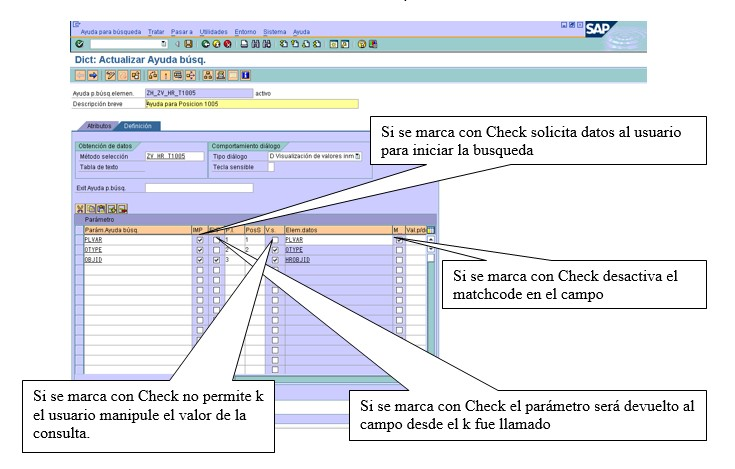
FUNCIÓN QUE EJECUTA UNA TRANSACCIÓN DESDE ABAP Este es un enter dentro del programa CALL...
FUNCIÓN QUE EJECUTA UNA TRANSACCIÓN DESDE ABAP
Este es un enter dentro del programa
CALL FUNCTION 'SAPGUI_SET_FUNCTIONCODE'
EXPORTING
functioncode = 'ENTR'
EXCEPTIONS
function_not_supported = 1
OTHERS = 2.
ABAP y Codigo
EXPORTAR PARAMETROS A MEMORIA DATA: t549b_abkrs LIKE p0001-abkrs.
EXPORTAR PARAMETROS A MEMORIA
DATA: t549b_abkrs LIKE p0001-abkrs. " Deben ser del mismo tipo
EXPORT t549b_abkrs TO MEMORY ID 't549b_abkrs'. " Pasarla a memoria
IMPORT t549b_abkrs FROM MEMORY ID 't549b_abkrs'. " recuperarla
EXPORT DE TABLAS A MEMORIA
DATA: p1_t001 TYPE t001,
p2_t001 TYPE t001,
it_t001a TYPE STANDARD TABLE OF t001,
it_t001b TYPE STANDARD TABLE OF t001.
SELECT * INTO TABLE it_t001a FROM t001 WHERE bukrs = '1001'.
EXPORT table_t001 FROM it_t001a TO MEMORY ID 'ZPROGRAM01'.
IMPORT table_t001 TO it_t001b FROM MEMORY ID 'ZPROGRAM01'.
OTRA FORMA DE EXPORT IMPORT
DATA: zgc_memory TYPE char50,
zc_gen_table TYPE char1,
gti_pos_data TYPE STANDARD TABLE OF zsps_control_presupuesto_exp,
gst_pos_data TYPE zsps_control_presupuesto_exp,
zcnom_pos_data TYPE char30.
zc_gen_table = abap_true.
CONCATENATE 'ZCONTROLP_' sy-uname INTO zgc_memory.
EXPORT zzcontrol FROM zc_gen_table TO MEMORY ID zgc_memory.
**** AMPLIACION EN EL PROGRAMA SAPLKAEP INCLUDE LKAEPFLI EN LA TRX CJI3 PROGRAMA RKPEP003
**** EN EL FORM LIST, PARA IMPORTAR LOS DATOS GENERADOS EN ESA TRANSACCION
SUBMIT rkpep003 EXPORTING LIST TO MEMORY
WITH cn_projn-low = gc_pspnr
WITH r_budat-low = gd_fecini
WITH r_budat-high = sy-datum
AND RETURN.
FREE MEMORY ID: zgc_memory.
CONCATENATE 'ZFI_COMPENSA_BSID_' sy-uname INTO zgc_memory.
IMPORT zzcontrol TO zc_gen_comp FROM MEMORY ID zgc_memory.
Tablas:
CONCATENATE 'ZCNOM_POS_DATA_' sy-uname INTO zcnom_pos_data.
IMPORT zttable TO gti_pos_data FROM MEMORY ID zcnom_pos_data.
COMO SE RECIBE EN EL OTRO PROGRAMA
DATA: zgc_memory TYPE char50,
zc_gen_table TYPE char1.
CONCATENATE 'ZCONTROLP_' sy-uname INTO zgc_memory.
IMPORT zzcontrol TO zc_gen_table FROM MEMORY ID zgc_memory.
IF zc_gen_table = abap_true.
DATA: gti_pos_data TYPE STANDARD TABLE OF zsps_control_presupuesto_exp,
gst_pos_data TYPE zsps_control_presupuesto_exp,
zcnom_pos_data TYPE char30.
IF IS NOT INITIAL.
LOOP AT ASSIGNING .
CLEAR: gst_pos_data.
MOVE-CORRESPONDING to gst_pos_data.
APPEND gst_pos_data to gti_pos_data.
ENDLOOP.
CONCATENATE 'ZCNOM_POS_DATA_' sy-uname INTO zcnom_pos_data.
EXPORT zttable FROM gti_pos_data to MEMORY ID zcnom_pos_data.
ENDIF.
ENDIF.
CONSTANTS: LC_WERKS_MEMORY TYPE CHAR50 VALUE 'WERKS_MEMORY'.
DATA: LV_WERKS_MEMORY TYPE WERKS_D.
READ TABLE TMARC INTO DATA(LWA_TMARC) INDEX 1. "DEBE VENIR CON EL CENTRO A CARGAR
IF SY-SUBRC = 0 AND
LWA_TMARC-WERKS IS NOT INITIAL.
RMMG1-WERKS = LWA_TMARC-WERKS.
WRMMG1-WERKS = LWA_TMARC-WERKS.
LV_WERKS_MEMORY = LWA_TMARC-WERKS.
EXPORT WERKS_MEMORY FROM LV_WERKS_MEMORY TO MEMORY ID LC_WERKS_MEMORY.
ENDIF.
Diccionario y Datos
AMPLIACIONES POR BADI A INFOTIPOS Para este caso tomaremos la ampliacion a la PPOME Trans...
AMPLIACIONES POR BADI A INFOTIPOS
Para este caso tomaremos la ampliacion a la PPOME
Transacción SE18, ingresamos la BADI a modificar en este caso la
HRBAS00INFTY
O HRPAD00INFTY para los de PA, que indico mas adelante
ABAP y Codigo
CUANDO UN OBJETO SE COPIA DE LA PPOME, SE PUEDE EXPORTAR LA INFORMACIÓN DEL OBJETO ORIGIN...
CUANDO UN OBJETO SE COPIA DE LA PPOME, SE PUEDE EXPORTAR LA INFORMACIÓN DEL OBJETO ORIGINAL ASÍ:
• Ampliación en el include: LRHOM_COPY_OF_OBJECTF01
ENHANCEMENT 1 ZENHHCM_PPOME. "active version
"""""""""""""""""""""""""""""""""""""""""""""""""""""""""""""""""""""""""""""""""""""""""""""$"$\SE:(3) Forma CREATE_OBJECT_COPIES, Final, Ampliación ZENHHCM_PPOME, Inicio A
* Ampliacion en el include LRHOM_COPY_OF_OBJECTF01 al final del FORM create_object_copies
IF sy-ucomm = 'CONT'.
DATA: gst_p9002_old TYPE pnnnn_exp,
gst_p9002_new TYPE objec,
gc_name_object_new TYPE char30,
gc_name_object_old TYPE char30.
gst_p9002_old = act_infty.
gst_p9002_new = new_objects.
CONCATENATE gst_p9002_new-plvar gst_p9002_new-otype gst_p9002_new-objid 'OLD' INTO gc_name_object_old.
CONCATENATE gst_p9002_new-plvar gst_p9002_new-otype gst_p9002_new-objid 'NEW' INTO gc_name_object_new.
FREE MEMORY ID: gc_name_object_old,
gc_name_object_new.
READ TABLE act_infty WITH KEY plvar = '01'
otype = 'S'
infty = '9002'.
IF sy-subrc = 0.
EXPORT gst_p9002_old TO MEMORY ID gc_name_object_old.
EXPORT gst_p9002_new TO MEMORY ID gc_name_object_new.
ENDIF.
ENDIF.
"""""""""""""""""""""""""""""""""""""""""""""""""""""""""""""""""""""""""""""""""""""""""""""$"$\SE:(4) Forma CREATE_OBJECT_COPIES, Final, Ampliación ZENHHCM_PPOME, Final A
ENDENHANCEMENT.
• El dato se recupera en el MÓDULO 2000 del Dynpro indicado ejemplo:
IF sy-tcode = 'PPOME' AND "Se esta invocando desde la PPOME
sy-pfkey = 'INSE'.
break hramirez.
* Ampliacion en el include LRHOM_COPY_OF_OBJECTF01 al final del FORM create_object_copies
CONCATENATE p9002-plvar p9002-otype p9002-objid 'OLD' INTO gc_name_object_old.
CONCATENATE p9002-plvar p9002-otype p9002-objid 'NEW' INTO gc_name_object_new.
IMPORT gst_p9002_old FROM MEMORY ID gc_name_object_old.
IMPORT gst_p9002_new FROM MEMORY ID gc_name_object_new.
ENDIF.
Transacciones
BADI CONTABLE SMOD_PCPO0001, se copia la implementación HRPAYCO_00001.
BADI CONTABLE
SMOD_PCPO0001, se copia la implementación HRPAYCO_00001.
User exit contable de la PCP0: trx. CMOD PCPO0001 include ZXPAPU02
Transacciones
BADI HRBAS00INFTY Trx.
BADI HRBAS00INFTY
Trx. SE18
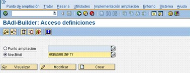
Se le da visualizar, al ingresar vemos la pantalla
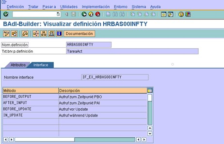
Por el menú, escojemos Implementación Resumen, y muestra las ampliaciones efectuadas, debemos elegir la de HR, si no esta se crea nueva, si esta se elije, para el ejemplo ZHRBAS00INFTY
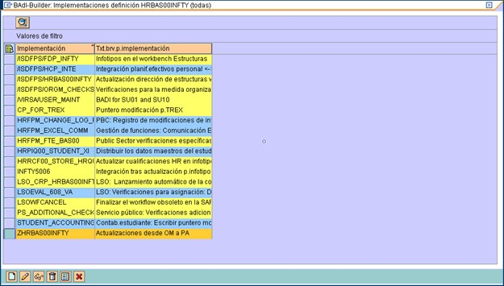
Elegimos y damos modificar, debe mostrar una pantalla similar a la siguiente, cada seccion aplica a un parte especifica del usuario, antes de salida, en salida, después de salida. Todo depende el k uno necesite, por ejemplo si se utiliza:
BEFORE_OUTPUT
AFTER_INPUT
BEFORE_UPDATE
IN_UPDATE
Cada metodo, mira el ingreso o salida segun el caso.
HRPAD00INFTY
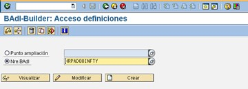
Implementación Resumen
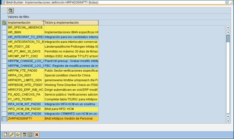
Elegimos para este caso ZHRPAD00INFTY
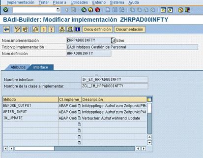
Doble click en la Rutina IN_UPDATE (Buscar en la documentación copia del CODIG fuente) método IF_EX_HRPAD00INFTY~IN_UPDATE
Pool de subrutinas ZHRPAD00INFTYF01, que es ingresar a la SE38 y crear un programa con este nombre y ahí se colocan los FORMS utilizados.
VALIDAR AUTORIZACIONES EN PROGRAMA ABAP Para saber como se llama cada objeto de autorizac...
VALIDAR AUTORIZACIONES EN PROGRAMA ABAP
Para saber como se llama cada objeto de autorizacion que tiene restringido un usuario por debug en sentencia indique: AUTHORITY-CHECK OBJECT
El sistema se detiene en la parte donde esta haciendo la lectura por ejemplo para HR
AUTHORITY-CHECK OBJECT 'P_PERNR' FOR USER uname
ID 'AUTHC' FIELD level
ID 'PSIGN' FIELD '*' " Any authority.
ID 'INFTY' DUMMY
ID 'SUBTY' DUMMY.
IF sy-subrc IS INITIAL.
is_authorized = true.
ELSE. " SY-SUBRC IS INITIAL.
Now we check for always 'E'.
AUTHORITY-CHECK OBJECT 'P_PERNR' FOR USER uname
ID 'AUTHC' FIELD level
ID 'PSIGN' FIELD 'E' " Authority to exclude authori
ID 'INFTY' FIELD '*'
ID 'SUBTY' FIELD '*'.
El elemento de datos AUTHC_D: que es el que envia el LEVEL tiene la documentación al respecto.
Ahora, para NO PONERSE A HACER TODA ESA VAINA SE LLAMA LA TRANSACCIÓN:
CALL FUNCTION 'HR_CHECK_AUTHORITY_TCODE'
EXPORTING
TCODE = SY-TCODE
LEVEL = 'R'
MIN_CHECKS = 'X'
EXCEPTIONS
NO_AUTHORIZATION = 1
OTHERS = 2.
IF SY-SUBRC <> 0.
MESSAGE e001(zhcm) WITH 'No tiene Autorización para Ejecutar este Proceso ...'.
LEAVE PROGRAM.
ENDIF.
ABAP y Codigo
ACTUALIZACIÓN DEL SCREEN POR DYNPRO PNPSTAT2-SIGN = 'I'.
ACTUALIZACIÓN DEL SCREEN POR DYNPRO
PNPSTAT2-SIGN = 'I'.
PNPSTAT2-OPTION = 'EQ'.
PNPSTAT2-LOW = '0'.
PNPSTAT2-LOW = '3'.
APPEND PNPSTAT2.
repname = sy-repid.
LOOP AT SCREEN.
IF screen-name = 'PNPWERKS-LOW'.
screen-required = 1.
MODIFY SCREEN.
ENDIF.
IF screen-name = 'PNPSTAT2-LOW' OR
screen-name = 'PNPPERSG-LOW'.
IF screen-name = 'PNPPERSG-LOW'.
ENDIF.
screen-input = 0.
screen-output = 1.
screen-active = 1.
screen-DISPLAY_3D = 1.
screen-VALUE_HELP = 1.
MODIFY SCREEN.
ENDIF.
ENDLOOP.
ABAP y Codigo
PARA QUE PERMITA GENERAR EL BOTÓN DE SELECCIONES VARIAS SELECTION-SCREEN BEGIN OF BLOCK x...
PARA QUE PERMITA GENERAR EL BOTÓN DE SELECCIONES VARIAS
SELECTION-SCREEN BEGIN OF BLOCK xedt_param1 WITH FRAME TITLE text-x99.
PARAMETERS: alv_list TYPE c DEFAULT ' ' AS CHECKBOX,
p_dev TYPE c DEFAULT ' ' AS CHECKBOX.
SELECTION-SCREEN BEGIN OF LINE.
SELECTION-SCREEN COMMENT 2(27) text-s13 FOR FIELD so_lgart.
SELECT-OPTIONS:
so_lgart FOR t512w-lgart NO INTERVALS MATCHCODE OBJECT hrpayru_t5yt1_lgart.
“En initialization SET PARAMETER ID 'MOL' FIELD cc_molga.
SELECTION-SCREEN END OF LINE.
SELECTION-SCREEN END OF BLOCK xedt_param1.
SELECTION-SCREEN END OF BLOCK frm1.
Trae en gris el campo, es decir no deja al usuario ingresar o modificar los valores
IF screen-name EQ 'PNPABKRS-LOW' .
MODIFY SCREEN.
ENDIF.
Inactiva los campos para que no se dejen modificar, cada campo cumple una función especial.
IF screen-name EQ 'PNPABKRS-LOW' OR
screen-name EQ '%_PNPABKRS_%_APP_%-TEXT' OR
screen-name EQ '%_PNPABKRS_%_APP_%-OPTI_PUSH' OR
screen-name EQ '%_PNPABKRS_%_APP_%-VALU_PUSH'.
SCREEN-INPUT = '0'.
MODIFY SCREEN.
Para tener en cuenta –VALU_PUSH es el icono que aparece al frente de cada campo de captura .
Con esta opción el campo ya no aparece, es decir screen-invisible = 1. no muestra la opción, se puede utilizar para otros campos.
IF screen-name EQ '%_PNPABKRS_%_APP_%-VALU_PUSH'.
screen-invisible = 1.
MODIFY SCREEN.
ENDIF.
En este caso, lo que el usuario vaya a digitar queda oculta bajo **
IF screen-name EQ 'PNPABKRS-LOW'.
screen-invisible = 1.
MODIFY SCREEN.
ENDIF.
ABAP y Codigo
PARA BUSCAR EN UN PROGRAMA DONDE SE UBICA UNA CARACTERISTICA PERFORM RE549D USING 'RECDM'...
PARA BUSCAR EN UN PROGRAMA DONDE SE UBICA UNA CARACTERISTICA
PERFORM RE549D USING 'RECDM' SPACE REPID T549BRC.
Transacciones
TRANSACCIÓN PARA REVISAR PROCESOS SM12 Bloqueos, desbloqueos, transacciones, procesos eje...
TRANSACCIÓN PARA REVISAR PROCESOS
SM12
Bloqueos, desbloqueos, transacciones, procesos ejecutandose
ABAP y Codigo
CREAR RANGES ranges: gr_ESTAT for tj30-ESTAT.
CREAR RANGES
ranges: gr_ESTAT for tj30-ESTAT.
gr_estat-sign = 'I'.
gr_estat-option = 'EQ'.
gr_estat-low = estat
COLLECT gr_estat INTO gr_estat.
RANGES SELECT-OPTION CON AMDP
APPLY_FILTER – WHERE DINAMICO
NEW zcl_amdp_bc_params( )->get_range(
EXPORTING
im_progname = lc_interfaz
im_range = lc_range_ktsch
im_modulo = lc_modulo_mm
IMPORTING
ex_range = DATA(lti_range_ktsch) ).
Data: lr_ktsch TYPE RANGE OF ktsch
IF lti_range_ktsch[] IS NOT INITIAL.
lr_ktsch = VALUE #(
FOR
IN lti_range_ktsch ( option = -zoptio
sign = -sign
low = -low
high = -high ) ) .
NEW zcl_amdp_bc_params( )->get_constant( EXPORTING im_progname = lc_program
im_constant = lc_constante
im_modulo = lc_modulo
IMPORTING et_constant = DATA(lti_constant) ).
IF lti_constant[] IS NOT INITIAL.
lv_value = lti_constant[ 1 ]-value.
ENDIF.
gv_interfaz = lv_value.
*** filtro por nro de contrato, sociedad y tienda
TRY.
DATA(lv_where_cond_1) = cl_shdb_seltab=>combine_seltabs(
it_named_seltabs = VALUE #(
( name = 'RECNNR' dref = REF #( gti_recn[] ) )
( name = 'BUKRS' dref = REF #( gti_bukrs[] ) )
) ).
CATCH cx_shdb_exception.
CLEAR: lv_where_cond_1.
RETURN.
ENDTRY.
Notas: APPLY FILTER hace ya la selección de la tabla en ex_ti_vicncn y se puede tomar para otros select.
im_v_where_cond es un dato tipo string que solo permite 255 caracteres
ex_ti_vicncn = APPLY_FILTER (vicncn, :im_v_where_cond);
ABAP y Codigo
RUTINA DE LEER SUELDO DIRECTA O INDIRECTAMENTE *&----------------------------------------...
RUTINA DE LEER SUELDO DIRECTA O INDIRECTAMENTE
*&---------------------------------------------------------------------*
* text
*----------------------------------------------------------------------*
* --> p1 text
* <-- p2 text
*----------------------------------------------------------------------*
FORM lee_sueldo USING p_p_pernr CHANGING p_nom_salario.
DATA: p_nom_salario LIKE p0008-bet01.
DO 20 TIMES VARYING var0008-lgart FROM inf_p0008-lga01
NEXT inf_p0008-lga02.
CHECK NOT var0008-lgart IS INITIAL.
temp = inf_p0008-bet01.
PERFORM valor_visualizacion USING temp
CHANGING temp.
p_nom_salario = temp.
IF p_nom_salario = 0.
PERFORM gesamt_p0008(rplico90) USING p_nom_salario
p_p_pernr
p_fecha_lee_pernr "siempre leer una sola Fecha, nunca dar un rango.
p_fecha_lee_pernr.
IF p_nom_salario = 0.
p_nom_salario = p0008-bet01.
ENDIF.
IF p_nom_salario NE 0.
temp = p_nom_salario.
PERFORM valor_visualizacion_0008 USING temp
CHANGING temp.
p_nom_salario = temp.
ENDIF.
ENDIF.
ENDDO.
ENDFORM. " lee_sueldo
PERFORM valor_visualizacion_moneda USING zn_salario
p0008-waers
CHANGING zn_salario.
*&---------------------------------------------------------------------*
*& Form valor_visualizacion_moneda
*&---------------------------------------------------------------------*
* text
*----------------------------------------------------------------------*
* -->P_P0008_WAERS text
* -->P_VAL text
*----------------------------------------------------------------------*
FORM valor_visualizacion_moneda USING p_val
p_p0008_waers
CHANGING p_valfinal.
* Moneda COP - CURRENCY
DATA: zn_amount_ini TYPE dec11_4,
zn_amount_dis TYPE dec11_4.
zn_amount_ini = p_val.
CALL FUNCTION 'CURRENCY_AMOUNT_SAP_TO_DISPLAY'
EXPORTING
currency = p_p0008_waers
amount_internal = zn_amount_ini
IMPORTING
amount_display = zn_amount_dis
EXCEPTIONS
internal_error = 1
OTHERS = 2.
p_valfinal = zn_amount_dis.
ENDFORM. "valor_visualizacion_moneda
ABAP y Codigo
FUNCIÓN PARA LA MONEDA QUE RESTA LOS CEROS DE LA MONEDA OPERACIÓN INVERSA A 'CURRENCY_AMO...
FUNCIÓN PARA LA MONEDA QUE RESTA LOS CEROS DE LA MONEDA OPERACIÓN INVERSA A 'CURRENCY_AMOUNT_SAP_TO_DISPLAY'
DATA: gc_betrg_amt TYPE dec11_4.
CALL FUNCTION 'CURRENCY_AMOUNT_DISPLAY_TO_SAP'
EXPORTING
currency = calc_currency
amount_display = gc_betrg_amt
IMPORTING
amount_internal = gc_betrg_amt
EXCEPTIONS
internal_error = 1
OTHERS = 2.
FUNCIÓN PARA CONVERSION DE LA MONEDA COP EN USD
FI_PSO_CURRENCY_CONVERT
DATA: GN_DMBTR TYPE VBSEG-DMBTR,
GN_WWERT TYPE VBKPF-WWERT,
GN_KURSF TYPE VBKPF-KURSF,
GN_WRBTR TYPE VBSEG-WRBTR.
gn_dmbtr = saldo_prof.
CALL FUNCTION 'FI_PSO_CURRENCY_CONVERT'
EXPORTING
i_waers = 'USD'
i_hwaer = 'COP'
i_budat = b_budat
i_typ = 'M'
CHANGING
c_dmbtr = gn_dmbtr
c_wwert = b_budat
c_kursf = gn_kursf
c_wrbtr = gn_wrbtr.
saldo_prof2 = gn_wrbtr.
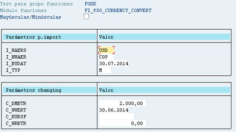
FUNCIÓN QUE LEE SI UN DIA ES FESTIVO O NO *----------------------------------------------...
FUNCIÓN QUE LEE SI UN DIA ES FESTIVO O NO
*----------------------------------------------------------------------*
* -->P_T_D_DATE_PROCESS text
* -->P_T_C_CALID text
* -->P_T_C_HOLIDAY text
* Determina si el dia es festivo o no.
*----------------------------------------------------------------------*
FORM is_day_holiday USING p_t_d_date_process
p_t_c_calid
p_t_c_holiday.
DATA: t_it_ithol LIKE thol OCCURS 1 WITH HEADER LINE.
CALL FUNCTION 'HOLIDAY_CHECK_AND_GET_INFO'
EXPORTING
date = p_t_d_date_process
holiday_calendar_id = p_t_c_calid
with_holiday_attributes = 'X'
IMPORTING
holiday_found = p_t_c_holiday
TABLES
holiday_attributes = t_it_ithol
EXCEPTIONS
calendar_buffer_not_loadable = 1
date_after_range = 2
date_before_range = 3
date_invalid = 4
holiday_calendar_id_missing = 5
holiday_calendar_not_found = 6
OTHERS = 7.
IF p_t_c_holiday = 'X'.
LOOP AT t_it_ithol.
IF t_it_ithol-klass = '1'. "1=Dia festivo, 3=Dia convencionado 4=Dia sabado santo
ELSE.
CLEAR: p_t_c_holiday.
ENDIF.
ENDLOOP.
ENDIF.
ENDFORM. " IS_DAY_HOLIDAY
PARA SABER EL DIA DE LA SEMANA – DOMINGO
*&---------------------------------------------------------------------*
*& Form ES_DIA_DOMINGO
*&---------------------------------------------------------------------*
* text
*----------------------------------------------------------------------*
* -->P_D_FECHA_CALCULO text
* -->P_P_DIA_DOMINGO text
*----------------------------------------------------------------------*
FORM es_dia_domingo USING p_d_fecha_calculo
p_p_dia_domingo.
CALL FUNCTION 'DAY_IN_WEEK'
EXPORTING
datum = p_d_fecha_calculo
IMPORTING
wotnr = p_p_dia_domingo.
ENDFORM. " ES_DIA_DOMINGO
ABAP y Codigo
PARA SABER SI UN EMPLEADO ESTA BLOQUEADO ACT_ENQK = ENK_KEY.
PARA SABER SI UN EMPLEADO ESTA BLOQUEADO
ACT_ENQK = ENK_KEY.
CALL FUNCTION 'HR_ENQUEUE_OBJECT'
EXPORTING
PLVAR = ACT_ENQK-PLVAR
OTYPE = ACT_ENQK-OTYPE
OBJID = ACT_ENQK-OBJID
ENQUEUE_ONCE = ' '
IMPORTING
LOCK_USER = ACT_USER
EXCEPTIONS
ENQUEUE_FAILED = 4
OBJID_IS_INITIAL = 0
ILLEGAL_OTYPE = 0
INTERNAL_ERROR = 12
OTHERS = 12.
ENK_SUBRC = SY-SUBRC.
si ACT_USER esta en blanco, el empleado no esta ocupado, de lo contrario devuelve el nombre del usuario k bloquea al empleado.
ABAP y Codigo
TRAER UN VALOR DE MEMORIA DE UN CAMPO O ESTRUCTURA DENTRO DE UN INCLUDE O FUNCIÓN QUE SE...
TRAER UN VALOR DE MEMORIA DE UN CAMPO O ESTRUCTURA DENTRO DE UN INCLUDE O FUNCIÓN QUE SE INVOQUE DENTRO DE UN PROGRAMA, PERO QUE UNO DENTRO DE LA FUNCIÓN NECESITE ESTA INFORMACION
Ejemplo: tengo el programa mp200000, el cual tiene la estructura PSYST, se necesita dentro de la función CALL FUNCTION 'HR_ABS_ATT_TIMES_AT_ENTRY', trabajar con dicha estructura (que no esta con información desntro de la función), para ello:
Dentro de la función 'HR_ABS_ATT_TIMES_AT_ENTRY' en el perform RE554S_CS se ingresa la instrucción así:
data: IMP_PSYST(15) TYPE C VALUE '(MP200000)PSYST',
lc_psyst LIKE psyst.
FIELD-SYMBOLS: .
ASSIGN (imp_psyst) to .
lc_psyst = .
FIELD-SYMBOLS TYPE tt_afvg_bt.
ASSIGN ('(SAPLCOBO)AFVG_BT[]') TO .
Link: http://www.dataxstream.com/2009/08/use-abap-to-access-any-data-in-memory/
Básicamente lo importante es que IMP_PSYST(15) lleve el nombre del programa donde se encuentra la estructura (15) es el tamaño de la suma de caracteres de '(MP200000)PSYST'.
Con esto ya lc_psyst esta con los campos disponibles.
ABAP y Codigo
PARA TOMAR EL NOMBRE DEL CAMPO DE LA TABLA INTERNA, TRABAJARLO EN MEMORIA Y VOLVERSELO A...
PARA TOMAR EL NOMBRE DEL CAMPO DE LA TABLA INTERNA, TRABAJARLO EN MEMORIA Y VOLVERSELO A ALA TABLA QUE SE ESTA TRABAJANDO
DATA: c_dienst_txt TYPE t77et-dienst_txt,
c_nombre_campo(11) TYPE c VALUE 'MONTH_TABLE',
c_struc(18) TYPE c,
c_month_table TYPE month_table_line-d1,
c_contador(3) TYPE c.
* C_STRUC(18) type c VALUE 'MONTH_TABLE-D1'.
FIELD-SYMBOLS: ,
.
break hramirec.
LOOP AT month_table.
**Coloca Hora Inicio y fin a las Pausas
IF show_pause = 'X'.
* ASSIGN (MONTH_TABLE-D) TO .
* MOVE month_table-D1 to .
MOVE 1 TO c_contador.
WHILE c_contador <= 123.
CONCATENATE 'MONTH_TABLE-D' c_contador INTO c_struc.
CONDENSE c_struc NO-GAPS.
ASSIGN (c_struc) TO .
c_month_table = .
PERFORM valida_turnos USING c_month_table info_buffer_break-pabeg
info_buffer_break-paend titelstr
c_dienst_txt.
= c_month_table.
ASSIGN month_table TO .
ADD 1 TO c_contador.
ENDWHILE.
MODIFY month_table.
ENDIF.
ENDLOOP.
ABAP y Codigo
TRANSACCIÓN ST05 DEBUG GRABADO EN EL SISTEMA – TRACE Objetivo: verificar que hace cuando...
TRANSACCIÓN ST05 DEBUG GRABADO EN EL SISTEMA – TRACE
Objetivo: verificar que hace cuando se le da el icono grabar en la PA30.
Ejemplo:
Se ejecuta programa PA30, para insertar un registro.
Se dan los datos del registro.
Se invoca la transacción ST05 y seleccionar los campos de acuerdo a lo que uno requiera, es mejor indicar solo el usuario de uno y click en el primer botón activar.
Después se invoca la transacción y se ejecutan los pasos a seguir, ejemplo: Por PA30 se le da GRABAR.
Por ST05 y click en el tercer botón.
Por ST05 y click en el cuarto botón.
Si se definió seguimiento por autorizaciones, los objetos a autorizar se muestran de un color diferente, y esos son los que se deben activar en el perfil de usuario.
Diccionario y Datos
ACTIVAR LOG AUDITORIA A INFOTIPOS Por el spro Gestión de personal Gestión de personal...
ACTIVAR LOG AUDITORIA A INFOTIPOS
Por el spro Gestión de personal Gestión de personal Herramientas Revisión Definir documento de modificación
Soporte y Basis
TRANSPORTE DE VARIANTES EN REPORTES Al grabar la variante de entrada debe iniciar el nomb...
TRANSPORTE DE VARIANTES EN REPORTES
Al grabar la variante de entrada debe iniciar el nombre con cus& y luego el nombre de la variante, al grabar el sistema solicita orden de transporte y ya.
La tabla donde se almacenan las variantes de visualización son las tablas VARI*
Diccionario y Datos
VARIANTES DE DISPOSICION, VARIANTES DE VISUALIZACION EN UN TRANSPORTE Se graba la variant...
VARIANTES DE DISPOSICION, VARIANTES DE VISUALIZACION
EN UN TRANSPORTE
Se graba la variante de visualización común y corriente.
Por la misma pantalla de salida se ingresa por el menú: Opciones -> Disposicion -> Gestionar
Ahí salen todas las variantes, se elige la que se necesite transportar y luego por el menú: Layout -> Transportar.
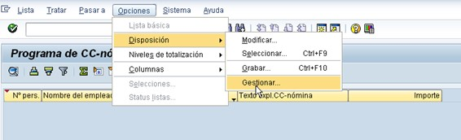
Las variantes de visualización se graban en las tablas LTDX y LTDXT, pero no tienen vista para editar.
COMPARAR PROGRAMAS – REPORTES – MODULPOOL ENTRE MANDANTES Transacción SE39
COMPARAR PROGRAMAS – REPORTES – MODULPOOL ENTRE MANDANTES
Transacción SE39
Transacciones
TRANSPORTE DE ADHOC QUERYS Y GENERACIÓN DE ADHOC QUERYS COMO REPORTES – OPCION NO RECOMEN...
TRANSPORTE DE ADHOC QUERYS Y GENERACIÓN DE ADHOC QUERYS COMO REPORTES – OPCION NO RECOMENDADA
Para crear un Quey se ingresa por la transacción: S_PH0_48000513 - Ad-hoc-Query, se ingresa por ámbito de 2 ambito global, ello para poder elegir la base de datos que mas nos sirva, para PA se eligio 21 HR: Gestión de personal (SAPQUERY/H2), para OM 43 HR: Organigrama (SAPQUERY/HO).
Se elabora el query y se graban los campos que se necesitan, y se graba.
Una vez grabado se ingresa por la SQ01 y por el menú: Query otras funciones Generar programa
Luego por el menú: Query otras funciones Visualizar nombre reporte
Con este nombre, creamos la transacción por SE93 y le ligamos el nombre del programa, hay varias formas de ligar el programa, pero lo voy a hacer común y corriente.
Una vez verificado que el programa corra, ingresamos en el mandante DEV por la SE38 y ejecutamos el reporte RSAQR3TR_OLD
Nota: Muchas veces es necesario transportar los grupos de usuarios, si no están en el ámbito estándar. (Es igual a transportar el infoset, como se detalla mas adelante), tanto en el mandante DEV como PRD.
Copiamos los infosets del ámbito global al ámbito estándar en primera instancia, en forma de test primero y luego en real.
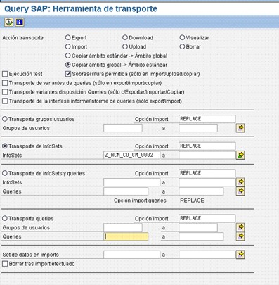
Para transportar Querys o SQ02:
En DEV:
- Entender que el Query e infoset, están creados a nivel global, Para poder hacer download, se deben pasar a nivel estándar.
- Llama la trx. SQ01 o SQ02.
o Por entorno Ambitos funcionales la primera vez esta en ámbito global
o Estando en ámbito global, de damos transportar.
o Aparece la siguiente pantalla, como ejemplo Infoset
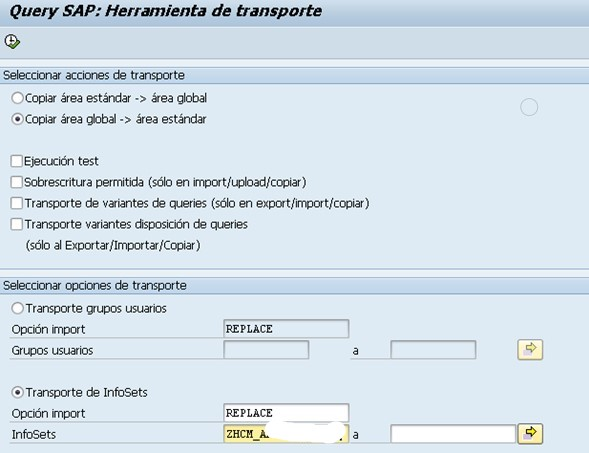
- Se pasa de área global a estandar.
o Por entorno Ambitos funcionales colocar ámbito estándar.
o Estando en ámbito estandar, de damos transportar.
o Aparece la siguiente pantalla, como ejemplo Infoset
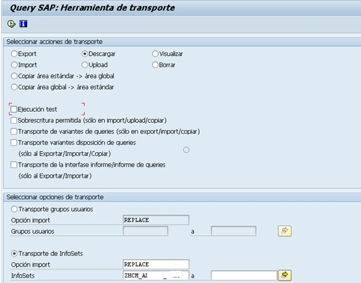
Bajamos el archivo que queda como txt.
- En PRD: trx Query o SQ02 se hace upload, teniendo en cuenta los siguiente:
o Por entorno Ambitos funcionales colocar ámbito estándar.
o Luego transportar en Ambito estándar para hacer upload, con la opción sobreescribir activa, con el nombre del Query o infoset
o Luego cambiar Por entorno Ambitos funcionales colocar ámbito global.
o Luego transportar, y pasar de ámbito estándar a global, con la opción sobreescribir activa, con el nombre del Query o infoset.
NOTA:
Es decir aki los querys se ejecutan por la opción copiar de ámbito estándar a ámbito global, aquí la cuestion es que deja solo visualizar, por lo tanto toca con debug, modificar el sy-subrc a 2 y sy-comm cuando se pida cambiarlo de GO35 a SH35, y grabar común y corriente.
Y luego se va a la transacción SQ01 y se le indica generar reporte a cada query, por el menú: Query otras funciones generar report
GUI_DOWNLOAD Y GUI_UPLOAD DATA: gs_filename TYPE string, gs_path TYPE string, gs_fullpath...
GUI_DOWNLOAD Y GUI_UPLOAD
DATA: gs_filename TYPE string,
gs_path TYPE string,
gs_fullpath TYPE string,
gn_user_action TYPE i.
CALL METHOD cl_gui_frontend_services=>file_save_dialog
EXPORTING
window_title = 'Directorio...'
default_extension = 'XLSX'
default_file_name = 'Proyecto.XLSX'
file_filter = 'Excel (*.XLSX)|*.XLSX'
initial_directory = 'C:\\TEMP'
CHANGING
filename = gs_filename
path = gs_path
fullpath = gs_fullpath
user_action = gn_user_action
EXCEPTIONS
cntl_error = 1
error_no_gui = 2
not_supported_by_gui = 3
OTHERS = 4.
IF sy-subrc <> 0.
MESSAGE e162(alvht).
EXIT.
ENDIF.
p_file = gs_fullpath.
IF sy-subrc <> 0.
MESSAGE e162(alvht).
EXIT.
ENDIF.
CALL FUNCTION 'GUI_DOWNLOAD'
EXPORTING
BIN_FILESIZE = BIN_FILESIZE
FILENAME = FILENAME
FILETYPE = FILETYPE
APPEND = APPEND
WRITE_FIELD_SEPARATOR = WRITE_FIELD_SEPARATOR
HEADER = HEADER
TRUNC_TRAILING_BLANKS = TRUNC_TRAILING_BLANKS
WRITE_LF = WRITE_LF
COL_SELECT = COL_SELECT
COL_SELECT_MASK = COL_SELECT_MASK
DAT_MODE = DAT_MODE
CONFIRM_OVERWRITE = CONFIRM_OVERWRITE
NO_AUTH_CHECK = NO_AUTH_CHECK
CODEPAGE = CODEPAGE
IGNORE_CERR = IGNORE_CERR
REPLACEMENT = REPLACEMENT
WRITE_BOM = WRITE_BOM
TRUNC_TRAILING_BLANKS_EOL = TRUNC_TRAILING_BLANKS_EOL
WK1_N_FORMAT = WK1_N_FORMAT
WK1_N_SIZE = WK1_N_SIZE
WK1_T_FORMAT = WK1_T_FORMAT
WK1_T_SIZE = WK1_T_SIZE
SHOW_TRANSFER_STATUS = SHOW_TRANSFER_STATUS
write_lf_after_last_line = write_lf_after_last_line
IMPORTING
FILELENGTH = FILELENGTH
TABLES
DATA_TAB = DATA_TAB
FIELDNAMES = FIELDNAMES
EXCEPTIONS
FILE_WRITE_ERROR = 1
NO_BATCH = 2
GUI_REFUSE_FILETRANSFER = 3
INVALID_TYPE = 4
NO_AUTHORITY = 5
UNKNOWN_ERROR = 6
HEADER_NOT_ALLOWED = 7
SEPARATOR_NOT_ALLOWED = 8
FILESIZE_NOT_ALLOWED = 9
HEADER_TOO_LONG = 10
DP_ERROR_CREATE = 11
DP_ERROR_SEND = 12
DP_ERROR_WRITE = 13
UNKNOWN_DP_ERROR = 14
ACCESS_DENIED = 15
DP_OUT_OF_MEMORY = 16
DISK_FULL = 17
DP_TIMEOUT = 18
FILE_NOT_FOUND = 19
DATAPROVIDER_EXCEPTION = 20
CONTROL_FLUSH_ERROR = 21
OTHERS = 22.
IF SY-SUBRC <> 0.
case sy-subrc.
when 1.
RAISE FILE_WRITE_ERROR.
when 2.
RAISE NO_BATCH.
when 3.
RAISE GUI_REFUSE_FILETRANSFER.
when 4.
RAISE INVALID_TYPE .
when 5.
RAISE NO_AUTHORITY.
when 6.
RAISE UNKNOWN_ERROR.
when 7.
RAISE HEADER_NOT_ALLOWED.
when 8.
RAISE SEPARATOR_NOT_ALLOWED.
when 9.
RAISE FILESIZE_NOT_ALLOWED.
when 10.
RAISE HEADER_TOO_LONG.
when 11.
RAISE DP_ERROR_CREATE.
when 12.
RAISE DP_ERROR_SEND.
when 13.
RAISE DP_ERROR_WRITE.
when 14.
RAISE UNKNOWN_DP_ERROR.
when 15.
RAISE ACCESS_DENIED.
when 16.
RAISE DP_OUT_OF_MEMORY.
when 17.
RAISE DISK_FULL.
when 18.
RAISE DP_TIMEOUT.
when 19.
RAISE FILE_NOT_FOUND.
when 20.
RAISE DATAPROVIDER_EXCEPTION.
when 21.
RAISE CONTROL_FLUSH_ERROR.
when OTHERS.
RAISE UNKNOWN_ERROR.
endcase.
ENDIF.
ABAP y Codigo
UPLOAD DE ARCHIVO EXCEL – PARA QUE NO SE REVIENTE POR WEBGUI CALL FUNCTION 'GUI_UPLOAD' E...
UPLOAD DE ARCHIVO EXCEL – PARA QUE NO SE REVIENTE POR WEBGUI
CALL FUNCTION 'GUI_UPLOAD'
EXPORTING
filename = lv_filename
filetype = 'BIN'
CALL FUNCTION 'SCMS_BINARY_TO_XSTRING'
https://www.samplecodeabap.com/how-to-upload-excel-to-sapusing-abap/
ABAP y Codigo
CREAR UNA VENTANA EN UN PROGRAMA – BOTON SELECCIÓN MULTIPLE ( FOR ) En el programa se col...
CREAR UNA VENTANA EN UN PROGRAMA – BOTON SELECCIÓN MULTIPLE ( FOR )
En el programa se coloca la instrucción en la selection screen así:
SELECTION-SCREEN BEGIN OF SCREEN 0200 AS WINDOW.
SELECTION-SCREEN BEGIN OF BLOCK xedt_param1 WITH FRAME TITLE text-x01.
PARAMETERS: alv_list TYPE c DEFAULT ' ' AS CHECKBOX,
p_dev TYPE c DEFAULT ' ' AS CHECKBOX.
SELECT-OPTIONS:
so_lgart FOR pc207-lgart.
SELECTION-SCREEN END OF BLOCK xedt_param1.
SELECTION-SCREEN BEGIN OF BLOCK blk1 WITH FRAME TITLE text-x02.
PARAMETERS:
p_vari LIKE disvariant-variant.
SELECTION-SCREEN END OF BLOCK blk1.
SELECTION-SCREEN END OF SCREEN 0200.
Cuando se llame en el programa se invoca así:
CALL SELECTION-SCREEN 0200 STARTING AT 10 10.
***** El ejemplo estandar de SAP
SELECTION-SCREEN BEGIN OF SCREEN 500 TITLE title
AS WINDOW.
PARAMETERS name TYPE sy-uname.
SELECTION-SCREEN END OF SCREEN 500.
title = 'Input name'.
CALL SELECTION-SCREEN '0500' STARTING AT 10 10.
ABAP y Codigo
TIPOS DE SELECTION-SCREEN Tipo Bloque SELECTION-SCREEN BEGIN OF BLOCK blk1 WITH FRAME TIT...
TIPOS DE SELECTION-SCREEN
Tipo Bloque
SELECTION-SCREEN BEGIN OF BLOCK blk1 WITH FRAME TITLE text-001.
SELECTION-SCREEN BEGIN OF LINE.
PARAMETERS:
p_solodi TYPE c AS CHECKBOX DEFAULT 'X'.
SELECTION-SCREEN COMMENT 2(50) text-b01 FOR FIELD p_solodi.
SELECTION-SCREEN END OF LINE.
SELECTION-SCREEN END OF BLOCK blk1.
Tipo Radio button horizontal
SELECTION-SCREEN BEGIN OF BLOCK blk3 WITH FRAME TITLE text-ss3.
SELECTION-SCREEN BEGIN OF LINE.
SELECTION-SCREEN COMMENT 1(45) text-p03 FOR FIELD rudif_o.
SELECTION-SCREEN POSITION 46.
PARAMETERS:
rudif_o(4) TYPE n DEFAULT 10.
*PARAMETERS rcurr LIKE t510f-waers MODIF ID dis.
SELECTION-SCREEN END OF LINE.
SELECTION-SCREEN BEGIN OF LINE.
SELECTION-SCREEN POSITION 33.
PARAMETERS rutyp_d LIKE rpuxxxxx-aus_knopf1 RADIOBUTTON GROUP rtp.
SELECTION-SCREEN COMMENT 35(12) text-p05 FOR FIELD rutyp_d.
SELECTION-SCREEN POSITION 48.
PARAMETERS rutyp_du LIKE rpuxxxxx-aus_knopf2 RADIOBUTTON GROUP rtp.
SELECTION-SCREEN COMMENT 50(12) text-p06 FOR FIELD rutyp_du.
SELECTION-SCREEN POSITION 63.
PARAMETERS rutyp_u LIKE rpuxxxxx-aus_knopf3 RADIOBUTTON GROUP rtp
DEFAULT 'X'.
SELECTION-SCREEN COMMENT 65(12) text-p07 FOR FIELD rutyp_u.
SELECTION-SCREEN END OF LINE.
SELECTION-SCREEN END OF BLOCK blk3.
Tipo Radio button vertical
SELECTION-SCREEN BEGIN OF BLOCK blk4 WITH FRAME TITLE text-002.
SELECTION-SCREEN BEGIN OF LINE.
PARAMETERS:
p_test LIKE rptxxxxx-kr_feld1 RADIOBUTTON GROUP lis2 DEFAULT 'X'.
SELECTION-SCREEN COMMENT 2(79) text-s01 FOR FIELD p_test.
SELECTION-SCREEN END OF LINE.
SELECTION-SCREEN BEGIN OF LINE.
PARAMETERS:
p_aplica LIKE rptxxxxx-kr_feld1 RADIOBUTTON GROUP lis2.
SELECTION-SCREEN COMMENT 2(79) text-s02 FOR FIELD p_aplica.
SELECTION-SCREEN END OF LINE.
SELECTION-SCREEN BEGIN OF LINE.
SELECTION-SCREEN COMMENT 11(79) text-s03.
SELECTION-SCREEN END OF LINE.
SELECTION-SCREEN END OF BLOCK blk4.
ABAP y Codigo
PARA EN UN LSMW PEDIR DATOS POR LA SELECTION-SCREEN EN LA SECCION GLOBAL_DATA Se genera u...
PARA EN UN LSMW PEDIR DATOS POR LA SELECTION-SCREEN EN LA SECCION GLOBAL_DATA
Se genera un código como el siguiente:
SELECTION-SCREEN BEGIN OF BLOCK blk1 WITH FRAME TITLE text-002.
PARAMETERS:
p_fecha LIKE sy-datum OBLIGATORY.
SELECTION-SCREEN END OF BLOCK blk1.
INITIALIZATION.
%_P_FECHA_%_APP_% = 'Fecha de Proceso'.
AT SELECTION-SCREEN OUTPUT.
%_sodate_%_app_%-to_text = 'XYZ'." Here I have Replaced to with XYZ
Se pasan los datos a los campos necesarios, por ejemplo aquí se pidio una fecha se pasa de la siguiente forma:
SUBSIDIO_F0015-RP50G-ENDDA = p_fecha.
SUBSIDIO_F0015-RP50G-ENDDA+0(2) = p_fecha+6.
SUBSIDIO_F0015-RP50G-ENDDA+2(2) = p_fecha+4.
SUBSIDIO_F0015-RP50G-ENDDA+4(4) = p_fecha.
Diccionario y Datos
AJUSTAR EL LSMW POR TABLAS, EN LA PARTE DE RECORDING OF PROJECT.
AJUSTAR EL LSMW POR TABLAS, EN LA PARTE DE RECORDING OF PROJECT.
SE DEBEN TOCAR ESTA TABLAS.
/SAPDMC/LSGBDC
/SAPDMC/LSGBDCA
/SAPDMC/LSGBDCS
/SAPDMC/LSGBDCT
Transacciones
BAJAR EL ASCENSOR UNA PAGINA ABAJO EN LSMW - NO SIEMPRE FUNCIONA =PNPG CODE_PAGE_DOWN CP+...
BAJAR EL ASCENSOR UNA PAGINA ABAJO EN LSMW - NO SIEMPRE FUNCIONA
=PNPG
CODE_PAGE_DOWN CP+
CODE_PAGE_LAST CP++
CODE_PAGE_UP CP-
CODE_PAGE_FIRST CP--
Formularios
EN SMARTFORMS CAMBIAR A LA SIGUIENTE HOJA Paginacion SMARTFORMS Página &SFSY-PAGE& de &SF...
EN SMARTFORMS CAMBIAR A LA SIGUIENTE HOJA
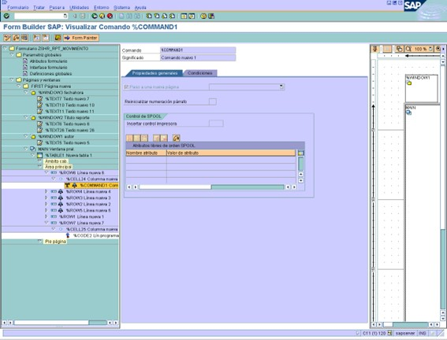
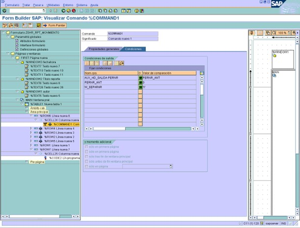
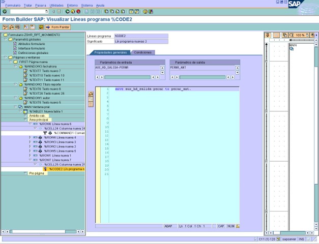
Paginacion SMARTFORMS Página &SFSY-PAGE& de &SFSY-FORMPAGES(Z3)&
PARA CREAR UN PROGRAMA ABAP CON STATUS GUI Se puede copiar el statusgui de un programa ya...
PARA CREAR UN PROGRAMA ABAP CON STATUS GUI
Se puede copiar el statusgui de un programa ya elaborado, pueden servir los reportes como SAPLKKBL del status STANDARD_FULLSCREEN. esto se hace por la transacción SE41, hay se elige el icono copiar status, hay pregunta a k programa y con que nombre se va a copiar, es imprtante darle un nombre para que de pronto no modifique el status gui del programa original.
Una vez se hace esto se puede ingresar a la se80 y ver que ya se creo una carpeta llamada status gui. Aquí se pueden modificar todos los iconos necesarios.
Ahora para llamarlos en el programa:
Para el ejemplo voy a tomar un código fuente pero puede varia de acuerdo a las necesidades.
Esta rutina se llama con una transacción mas adelante, pero básicamente se da el mismo nombre que se encuentra en la carpeta status gui por la se80, para este caso STATUS_052
*&---------------------------------------------------------------------*
*& Form set_pf_status_052
*&---------------------------------------------------------------------*
* text
*----------------------------------------------------------------------*
* -->SPS_EXCLUDING text
*----------------------------------------------------------------------*
FORM set_pf_status_052 USING sps_excluding TYPE slis_t_extab.
SET PF-STATUS 'STATUS_052' EXCLUDING sps_excluding.
SET TITLEBAR '002'. “sirve para mostrar los titulos
ENDFORM. "set_pf_status_052
Esta rutina lo que hace es que cuando se haga click en un icono definido por nosotros mismos, ejecute una accion, en este caso tenemos iconos con las acciones NAVIGATE, HRFORM, etc
*&---------------------------------------------------------------------*
*& Form user_command_052
*&---------------------------------------------------------------------*
* text
*----------------------------------------------------------------------*
* -->UC_USER_COMMAND text
* -->UC_SELFIELD text
*----------------------------------------------------------------------*
FORM user_command_052 USING uc_user_command LIKE sy-ucomm
uc_selfield TYPE slis_selfield.
CASE uc_user_command.
WHEN 'NAVIGATE'. "Pasar a resultados
PERFORM show_result.
WHEN 'HRFORM'. "Imrpimir recibo de salarios
PERFORM print_form
USING uc_user_command.
WHEN 'PC_PYRSL'. "Pasar a PC_PAYRESULT
PERFORM go_to.
WHEN 'PRENOM'. "Imprime prenómina
PERFORM print_prenom
USING uc_user_command.
WHEN 'SINGLETAB'.
PERFORM print_singletab
USING uc_user_command.
WHEN 'REFRESH'. "Refresca la lista
PERFORM refresh_list.
uc_selfield-refresh = 'X'.
WHEN OTHERS.
ENDCASE.
ENDFORM. "USER_COMMAND_052
Aquí definimos los títulos del reporte, este es un ejemplo:
*&---------------------------------------------------------------------*
*& Form top_of_page__052
*&---------------------------------------------------------------------*
* text
*----------------------------------------------------------------------*
FORM top_of_page_052.
DATA: lt_list_header TYPE slis_t_listheader,
lt_list_header_line TYPE slis_listheader.
DATA: lc_datum1(10),
lc_datum2(10),
lc_datum3(10).
* LIST HEADING LINE: TYPE H (Titel Groß)
CLEAR lt_list_header_line.
lt_list_header_line-typ = 'H'.
lt_list_header_line-info = 'Pignoración de Cesantias'.
APPEND lt_list_header_line TO lt_list_header.
* STATUS LINE: TYPE S (Normale Schrift: KEY=Fett; INFO=Normal)
CLEAR lt_list_header_line.
lt_list_header_line-typ = 'S'.
lt_list_header_line-key = 'Datos de Pignoración:'.
WRITE bondt TO lc_datum3 DD/MM/YYYY.
CONCATENATE 'Motivo:' ocrsn 'tipo:' payty 'id:' payid 'para Fecha: ' lc_datum3
INTO lt_list_header_line-info SEPARATED BY space.
APPEND lt_list_header_line TO lt_list_header.
CLEAR lt_list_header_line.
CLEAR lt_list_header_line.
lt_list_header_line-typ = 'S'.
lt_list_header_line-key = 'Selección'.
lt_list_header_line-info = 'Comprometidos de Cesantias e interes ces. en Prestamos'.
APPEND lt_list_header_line TO lt_list_header.
NOTA: Trx. OAER Crear logo que se ingresan a Reportes ALV, al inicio se indica como se debe ejecutar esta trx.
CALL FUNCTION 'REUSE_ALV_COMMENTARY_WRITE'
EXPORTING
i_logo = 'ECOPETROL' “Colocar logo en reporte ALV salida ALV
it_list_commentary = lt_list_header
* I_LOGO =
* I_END_OF_LIST_GRID =
.
ENDFORM. "top_of_page_052
FORM top_of_page_01_ent. "#EC CALLED
CALL FUNCTION 'REUSE_ALV_COMMENTARY_WRITE'
EXPORTING
i_logo = 'ENJOYSAP_LOGO'
it_list_commentary = ti_list_top_of_page_ent.
ENDFORM. "top_of_page_01_ent
Este perform permite enviar los datos para la salida ALV, en este caso:
tabi_salida_datos: es la tabla interna con los datos.
gv_guireport : es asignado así: gv_guireport = sy-repid.
'SET_PF_STATUS_052': hace un llamado al perform definido anteriormente
'USER_COMMAND_052' : hace un llamado al perform definido anteriormente
'USER_COMMAND_052' 'TOP_OF_PAGE_052': hace un llamado al perform definido anteriormente
gs_layout : esta definido como: DATA gs_layout TYPE slis_layout_alv. Estan los datos generales del reporte.
i_fieldcat : DATA: i_fieldcat TYPE slis_t_fieldcat_alv. Es donde estan los datos.
IF NOT tabi_salida_datos[] IS INITIAL.
PERFORM call_reuse_alv_funct TABLES tabi_salida_datos
USING gv_guireport 'SET_PF_STATUS_052'
'USER_COMMAND_052' 'TOP_OF_PAGE_052'
gs_layout i_fieldcat.
ENDIF.
El codigo general de este llamado ALV es:
Después del end-selection.
END-OF-SELECTION.
CLEAR: tabi_salida_datos.
PERFORM init_layout.
PERFORM formatear_datos_alv_det USING i_fieldcat[].
PERFORM build_sort.
PERFORM f_generar_lista_alv.
**********************************************************************
* FORM : init_layout
* Created : 10.04.2007 12:26:47
**********************************************************************
FORM init_layout.
* OPCIONES POSIBLES GENERALES PARA EL REPORTE
gs_layout-box_fieldname = 'SELEC'.
gs_layout-zebra = 'X'. "SE VA A MOSTRAR CON 2 COLORES INTERCALADOS.
* gs_layout-edit = 'X'. "PERMITE EDITAR LOS VALORES DE LOS CAMPOS
* GS_LAYOUT-DETAIL_INITIAL_LINES = 'X'. "NO VEO PARA QUE SIRVE
* GS_LAYOUT-DETAIL_TITLEBAR = 'DETAIL TITLE BAR'. "NO VEO PARA QUE SIRVE
* GS_LAYOUT-DETAIL_POPUP = 'X'. " "NO VEO PARA QUE SIRVE
gs_layout-colwidth_optimize = 'X'. "OPTIMIZA EL TAMAÑO DE LAS COLUMNAS
* GS_LAYOUT-BOX_FIELDNAME = 'BOX'. "NO VEO PARA QUE SIRVE
ENDFORM. "init_layout
**********************************************************************
* FORM : formatear_datos_alv_det
* Created : 10.04.2007 12:29:29
**********************************************************************
FORM formatear_datos_alv_det USING t_fieldcat TYPE slis_t_fieldcat_alv.
DATA: l_fieldcat TYPE slis_fieldcat_alv.
* CLEAR l_fieldcat.
* l_fieldcat-tabname = 'TABI_SALIDA_DATOS'.
* l_fieldcat-fieldname = 'SELEC'.
* l_fieldcat-checkbox(1) = tabi_salida_datos-selec. " AS CHECKBOX "COLOCA UN CHECKBOX
* l_fieldcat-seltext_l = 'Se Imprime'.
* l_fieldcat-col_pos = 1.
* l_fieldcat-outputlen = 10.
* l_fieldcat-edit = 'X'.
* l_fieldcat-no_out = 'X'. "PARA QUE NO MUESTRE
* APPEND l_fieldcat TO t_fieldcat.
* CLEAR l_fieldcat.
* DESCRIPCION DE LA SALIDA DE CADA COLUMNA DEL REPORTE
l_fieldcat-tabname = 'TABI_SALIDA_DATOS'.
l_fieldcat-fieldname = 'PERNR'.
l_fieldcat-seltext_l = 'Cod.Empleado'.
l_fieldcat-col_pos = 2.
l_fieldcat-outputlen = 13.
* l_fieldcat-no_out = 'X'. "PARA QUE NO MUESTRE
APPEND l_fieldcat TO t_fieldcat.
CLEAR l_fieldcat.
l_fieldcat-tabname = 'TABI_SALIDA_DATOS'.
l_fieldcat-fieldname = 'ENAME'.
l_fieldcat-seltext_l = 'Nombre'.
l_fieldcat-col_pos = 4.
l_fieldcat-outputlen = 40.
APPEND l_fieldcat TO t_fieldcat.
CLEAR l_fieldcat.
WHEN 'TIPTXT'. "Para generar una consulta sobre un campo ALV
ls_fieldc-scrtext_s = ls_fieldc-scrtext_m = ls_fieldc-scrtext_l = 'Tipo Contrato'.
ls_fieldc-reptext = 'Tipo Contrato'.
ls_fieldc-f4availabl = abap_true.
* ls_fieldc-ref_field = 'TIPTXT'.
ls_fieldc-ref_table = 'ZTPS_TIPO_CONTR'.
* ls_fieldc-txt_field = 'TIPTXT'.
ls_fieldc- checktable = 'ZTPS_TIPO_CONTR'.
IF gst_ztps_plan_procsp-status IS INITIAL.
ls_fieldc-edit = abap_true.
ENDIF.
ENDFORM. "formatear_datos_alv_det
**********************************************************************
* FORM : build_sort
* Created : 10.04.2007 12:30:50
**********************************************************************
FORM build_sort.
CLEAR gs_sort.
* SE INDICA LA COLUMNA POR LA CUAL SE VA A ORDENAR EL REPORTE
gs_sort-spos = 1.
gs_sort-fieldname = 'PERNR'.
* GS_SORT-SUBTOT = 'X'.
gs_sort-up = 'X'.
APPEND gs_sort.
CLEAR gs_sort.
ENDFORM. "build_sort
**********************************************************************
* FORM : f_generar_lista_alv
* Created : 10.04.2007 12:31:43
**********************************************************************
FORM f_generar_lista_alv.
DATA: gv_guireport LIKE sy-repid VALUE sy-repid.
gv_guireport = sy-repid.
IF NOT tabi_salida_datos[] IS INITIAL.
PERFORM call_reuse_alv_funct TABLES tabi_salida_datos
USING gv_guireport 'SET_PF_STATUS_052'
'USER_COMMAND_052' 'TOP_OF_PAGE_052'
gs_layout i_fieldcat.
ENDIF.
ENDFORM. "f_generar_lista_alv
*&---------------------------------------------------------------------*
*& Form call_reuse_alv_funct
*&---------------------------------------------------------------------*
* text
*----------------------------------------------------------------------*
* --> p1 text
* <-- p2 text
*----------------------------------------------------------------------*
FORM call_reuse_alv_funct TABLES p_datatab
USING value(p_progname)
value(p_status)
value(p_usercomm)
value(p_topofpage)
value(p_layout)
value(p_fieldcatalogue).
CALL FUNCTION 'REUSE_ALV_GRID_DISPLAY'
EXPORTING
* I_INTERFACE_CHECK = ' '
i_callback_program = p_progname
i_callback_pf_status_set = p_status
i_callback_user_command = p_usercomm
i_callback_top_of_page = p_topofpage
* i_callback_html_top_of_page = 'HTML_TOP_OF_PAGE'
* i_callback_html_end_of_list = 'HTML_END_OF_LIST'
* i_structure_name = 'ZHCM_EERGDIR'
is_layout = p_layout
it_fieldcat = p_fieldcatalogue
* it_excluding = exclude
* IT_SPECIAL_GROUPS =
* it_sort = sort_table
* IT_FILTER =
* IS_SEL_HIDE =
* I_DEFAULT = 'X'
* i_save = 'U'
* is_variant = variant
* it_events = events
* IT_EVENT_EXIT = t_event_exit
* IS_PRINT =
* IS_REPREP_ID =
* I_SCREEN_START_COLUMN = 0
* I_SCREEN_START_LINE = 0
* I_SCREEN_END_COLUMN = 0
* I_SCREEN_END_LINE = 0
* IMPORTING
* e_exit_caused_by_caller = exit_caused_by_caller
* es_exit_caused_by_user = exit_caused_by_user
TABLES
t_outtab = p_datatab
EXCEPTIONS
program_error = 1
OTHERS = 2.
ENDFORM. " call_reuse_alv_funct
ABAP y Codigo
VALIDACION CAMPO ALV - -EDIT PARA VALIDAR CUANDO LE DEN ENTER O UN ICONO, O CUANDO RETORN...
VALIDACION CAMPO ALV - -EDIT PARA VALIDAR CUANDO LE DEN ENTER O UN ICONO, O CUANDO RETORNA
Programa ZPSR_PLAN_DE_PROCURA
http://scn.sap.com/thread/3201712
FORM eventtab_build_01_hcm_pos CHANGING pgt_events TYPE slis_t_event.
*
CONSTANTS:
c_formname_top_of_page TYPE slis_formname VALUE 'TOP_OF_PAGE_01_HCM_POS',
c_formname_data TYPE slis_formname VALUE 'DATA_CHANGED',
c_formname_campo TYPE slis_formname VALUE 'CALLER_EXIT'.
DATA: ls_event TYPE slis_alv_event.
CALL FUNCTION 'REUSE_ALV_EVENTS_GET'
EXPORTING
i_list_type = 0
IMPORTING
et_events = pgt_events.
READ TABLE pgt_events WITH KEY name = slis_ev_top_of_page
INTO ls_event.
IF sy-subrc = 0.
MOVE c_formname_top_of_page TO ls_event-form.
APPEND ls_event TO pgt_events.
MOVE c_formname_campo TO ls_event-form.
MOVE c_formname_campo TO ls_event-name.
APPEND ls_event TO pgt_events.
MOVE c_formname_data TO ls_event-form.
MOVE c_formname_data TO ls_event-name.
APPEND ls_event TO pgt_events.
ENDIF.
ENDFORM. " EVENTTAB_BUILD_01_HCM_pos
FORM data_changed USING ir_data_changed TYPE REF TO cl_alv_changed_data_protocol.
DATA: ls_modi TYPE lvc_s_modi,
gst_ztps_tipo_contr TYPE ztps_tipo_contr.
LOOP AT ir_data_changed->mt_mod_cells INTO ls_modi.
CASE ls_modi-fieldname.
WHEN 'TIPTXT'.
READ TABLE gti_ztps_tipo_contr INTO gst_ztps_tipo_contr WITH KEY tiptxt = ls_modi-value.
IF sy-subrc <> 0.
CALL METHOD ir_data_changed->add_protocol_entry
EXPORTING
i_msgid = 'ZPS'
i_msgty = 'E'
i_msgno = '009'
i_msgv1 = 'Tipo de Contratación No Valida'
i_msgv2 = ''
i_msgv3 = ''
i_msgv4 = ''
i_fieldname = ls_modi-fieldname
i_row_id = ls_modi-row_id.
ENDIF.
ENDCASE.
ENDLOOP.
ENDFORM. "data_changed
*&---------------------------------------------------------------------*
*& Form caller_exit
*&---------------------------------------------------------------------*
* text
*----------------------------------------------------------------------*
* -->IS_DATA text
*----------------------------------------------------------------------*
FORM caller_exit USING is_data TYPE slis_data_caller_exit.
* Switch to OO_ALV:
DATA: lr_alv TYPE REF TO cl_gui_alv_grid.
CALL FUNCTION 'GET_GLOBALS_FROM_SLVC_FULLSCR'
IMPORTING
e_grid = lr_alv.
* Register ENTER as edit event:
CALL METHOD lr_alv->register_edit_event
EXPORTING
i_event_id = cl_gui_alv_grid=>mc_evt_enter.
ENDFORM. "caller_exit
Transacciones
STATUS GUI MANIPULADO DESDE DYNPRO En el module output (Antes de salida de datos) se ingr...
STATUS GUI MANIPULADO DESDE DYNPRO
En el module output (Antes de salida de datos) se ingreso el MODULE status_dynpro_3000
PROCESS BEFORE OUTPUT.
MODULE liste_initialisieren.
module status_dynpro_3000. “SE COLOCA JUSTO ANTES DEL LOOP
LOOP AT extract WITH CONTROL
tctrl_ztvhr_bv_asoind CURSOR nextline.
MODULE liste_show_liste.
MODULE descripcion.
ENDLOOP.
Se crea el dynpro por la SE80 para el programa de la SE51 por ejemplo SAPLZTVHR_BV_ASOIND, como no existe, se debe copiar a través de la transacción SE41 tomar como referencia el programa: SAPLSVIM, o RSSYSTDB o SAPLKKBL del status STANDARD_FULLSCREEN o cualquier otro.
MODULE status_dynpro_3000 OUTPUT.
CASE status-action.
WHEN 'U'. SET PF-STATUS 'ZTVHR_BV_ASOIND01'.
* WHEN 'S'. SET PF-STATUS 'ZTVHR_BV_ASOIND02'.
WHEN OTHERS.
ENDCASE.
ENDMODULE. " status_dynpro_3000 OUTPUT
Status-action toma el valor de lo que se esta ejecutando: por ejemplo si le doy visualizar toma el valor S, actualizar U, copier C, etc. De acuerdo a eso se programa un status gui diferente. En el ejemplo solo tuve que manipular cuando actualiza de resto no copie status gui, deje el sistema tomara los estándar, que funcionan bien.
SE51 Controlar el numero de líneas a visualizar por la table control, desde un inicio:
CONTROLS: tc_elementos TYPE TABLEVIEW USING SCREEN 2000.
Modificar CONTROL tc_elementos-lines
Antes de k se ejecute el
LOOP AT ti_elementos
INTO wa_elementos
WITH CONTROL tc_elementos
CURSOR tc_elementos-current_line.
Ejemplo tc_elementos-lines = gv_totallineas.
ABAP y Codigo
MODIFICAR DATOS EN LOGICA DE PROCESO POR LA SM30 – SE51 *--------------------------------...
MODIFICAR DATOS EN LOGICA DE PROCESO POR LA SM30 – SE51
*----------------------------------------------------------------------*
***INCLUDE LZTPS_COMBOS_ADMF01.
*----------------------------------------------------------------------*
FORM act_fec_bloqueo.
*** FORM EN EL EVENTO 01 HRP
DATA: f_indx TYPE sytabix,
gv_hora(10) TYPE c,
gv_fecha(10) TYPE c.
IF sy-ucomm = 'SAVE'.
TYPES: BEGIN OF l_total.
INCLUDE STRUCTURE ztps_combos_adm.
INCLUDE STRUCTURE vimtbflags.
TYPES END OF l_total.
DATA: ls_total TYPE l_total.
LOOP AT total INTO ls_total.
IF ls_total-vim_action = 'U'.
READ TABLE extract WITH KEY .
IF sy-subrc EQ 0.
f_indx = sy-tabix.
ELSE.
CLEAR f_indx.
ENDIF.
IF ls_total-dispo = 'B' AND
ls_total-fec_bloqueo IS INITIAL.
CONCATENATE sy-uzeit(2) ':' sy-uzeit+2(2) ':' sy-uzeit+4(2) INTO gv_hora.
CONCATENATE sy-datum+6(2) '.' sy-datum+4(2) '.' sy-datum(4) INTO gv_fecha.
CONCATENATE gv_fecha gv_hora INTO ls_total-fec_bloqueo SEPARATED BY space.
total = ls_total.
MODIFY total.
CHECK f_indx GT 0.
extract = ls_total.
MODIFY extract INDEX f_indx.
ENDIF.
IF ls_total-dispo = 'D' AND
ls_total-fec_bloqueo IS NOT INITIAL.
ls_total-mod_des_bloqueo = abap_true.
total = ls_total.
MODIFY total.
CHECK f_indx GT 0.
extract = ls_total.
MODIFY extract INDEX f_indx.
ENDIF.
ENDIF.
ENDLOOP.
ENDIF.
ENDFORM.
FORM act_vista.
*** Refresca la vista en evento 02
DATA: f_indx TYPE sytabix.
TYPES: BEGIN OF l_total.
INCLUDE STRUCTURE ztps_combos_adm.
INCLUDE STRUCTURE vimtbflags.
TYPES END OF l_total.
DATA: ls_total TYPE l_total.
IF sy-ucomm = 'SAVE'.
extract[] = total[].
ENDIF.
ENDFORM.
Por codigo fuente hacer lo siguiente:
PROCESS AFTER INPUT.
MODULE LISTE_EXIT_COMMAND AT EXIT-COMMAND.
MODULE LISTE_BEFORE_LOOP.
LOOP AT EXTRACT.
MODULE LISTE_INIT_WORKAREA.
CHAIN.
FIELD ZVHCM008-ORGEH .
FIELD ZVHCM008-CTTYP .
FIELD ZVHCM008-ENDDA .
FIELD ZVHCM008-BEGDA .
FIELD ZVHCM008-DIASPACAD .
FIELD ZVHCM008-DIASPSOC.
FIELD ZVHCM008-PERSK .
FIELD ZVHCM008-UNAME .
FIELD ZVHCM008-AEDTM .
FIELD ZVHCM008-PTEXT .
FIELD ZVHCM008-ORGTX .
FIELD ZVHCM008-CTTXT .
MODULE SET_UPDATE_FLAG ON CHAIN-REQUEST.
MODULE COMPLETE_ZVHCM008 ON CHAIN-REQUEST.
ENDCHAIN.
FIELD VIM_MARKED MODULE LISTE_MARK_CHECKBOX.
CHAIN.
FIELD ZVHCM008-ORGEH MODULE sy_ucomm.
MODULE LISTE_UPDATE_LISTE.
ENDCHAIN.
ENDLOOP.
MODULE LISTE_AFTER_LOOP.
MODULE sy_ucomm INPUT.
IF zvhcm008_extract-per_acad = zvhcm008-per_acad AND
zvhcm008_extract-orgeh = zvhcm008-orgeh AND
zvhcm008_extract-cttyp = zvhcm008-cttyp AND
zvhcm008_extract-endda = zvhcm008-endda AND
zvhcm008_extract-begda = zvhcm008-begda AND
zvhcm008_extract-diaspacad = zvhcm008-diaspacad AND
zvhcm008_extract-diaspsoc = zvhcm008-diaspsoc AND
zvhcm008_extract-persk = zvhcm008-persk AND
zvhcm008_extract-action IS INITIAL.
ELSEIF zvhcm008_extract-orgeh IS NOT INITIAL.
zvhcm008_extract-aedtm = zvhcm008-aedtm = sy-datum.
zvhcm008_extract-uname = zvhcm008-uname = sy-uname.
ELSE.
zvhcm008-aedtm = sy-datum.
zvhcm008-uname = sy-uname.
ENDIF.
ENDMODULE. " SY_UCOMM INPUT
PARA QUE AL INGRESAR AL DYNPRO CONFIGURADO POR SE51, SM30
LA VARIABLE QUE CONTROLA SI ES EL PRIMER INGRESO AL DYNPRO: INPUT_DONE
INPUT_DONE EN 0, ES LA PRIMERA VEZ
ABAP y Codigo
LLAMADO SUBMIT SUBMIT rcs13001 EXPORTING LIST TO MEMORY WITH pm_mtnrv INCL rc29l-matnr WI...
LLAMADO SUBMIT
SUBMIT rcs13001 EXPORTING LIST TO MEMORY
WITH pm_mtnrv INCL rc29l-matnr
WITH pm_werks INCL rc29l-werks
WITH pm_stlal INCL rc29l-stlal
AND RETURN.
CONSTANTS: c_tip_sepa TYPE c VALUE '|'.
TYPES: BEGIN OF ty_linea,
filler TYPE char200,
END OF ty_linea.
TYPES: BEGIN OF ty_vlist,
blanco1 TYPE c,
blanco2 TYPE c,
matnr TYPE matnr,
maktx TYPE maktx,
ovfls TYPE ovfls, " id. desbordamiento
mnglg TYPE char15, " cantidad
sumkz TYPE sumkz,
dunit TYPE dunit, "unidad
blanco3 TYPE char50,
werks TYPE werks_d,
END OF ty_vlist.
gti_list_tab TYPE STANDARD TABLE OF abaplist,
gti_linea_vlist TYPE STANDARD TABLE OF ty_linea,
gst_linea_vlist TYPE ty_linea,
gti_vlist TYPE STANDARD TABLE OF ty_vlist,
gst_vlist TYPE ty_vlist,
CLEAR: gti_list_tab[], gti_linea_vlist[], gti_vlist[].
CALL FUNCTION 'LIST_FROM_MEMORY'
TABLES
listobject = gti_list_tab
EXCEPTIONS
not_found = 1
OTHERS = 2.
CALL FUNCTION 'LIST_TO_ASCI'
EXPORTING
list_index = -1
TABLES
listasci = gti_linea_vlist
listobject = gti_list_tab
EXCEPTIONS
empty_list = 1
list_index_invalid = 2
OTHERS = 3.
LOOP AT gti_linea_vlist INTO gst_linea_vlist.
CHECK: gst_linea_vlist(1) = c_tip_sepa.
CLEAR: gst_vlist.
SPLIT gst_linea_vlist-filler AT c_tip_sepa
INTO gst_vlist-blanco1 gst_vlist-blanco2 gst_vlist-matnr gst_vlist-maktx
gst_vlist-ovfls gst_vlist-mnglg gst_vlist-sumkz
gst_vlist-dunit gst_vlist-blanco3.
IF gst_vlist-matnr NE 'Obj'.
gst_vlist-werks = p_werk.
CALL FUNCTION 'CONVERSION_EXIT_ALPHA_INPUT'
EXPORTING
input = gst_vlist-matnr
IMPORTING
output = gst_vlist-matnr.
APPEND gst_vlist TO gti_vlist.
ENDIF.
ENDLOOP.
ABAP y Codigo
LLAMADO A CON SUBMIT Y CALL TRANSACTION El problema es que solo ejecuta un empleado, para...
LLAMADO A CON SUBMIT Y CALL TRANSACTION
El problema es que solo ejecuta un empleado, para este caso
SUBMIT hcocalv0 EXPORTING LIST TO MEMORY
WITH PNPXABKR = PNPABKRS-LOW
WITH PNPTIMR9 = 'X'
WITH PNPPABRP = ' '
WITH PNPPABRJ = ' '
WITH PNPPERNR-LOW = tabi_salida_final-pernr
WITH PNPABKRS-LOW = PNPABKRS-LOW
WITH OCRSN = OCRSN
WITH PAYTY = PAYTY
WITH PAYID = PAYID
WITH BONDT = BONDT
WITH RADI_EDT = 'X'
WITH EDT_VARI = 'CUS&RECIBO'
****
Llamado con CALL Transaction, este parámetro ‘ABK’ esta dentro del programa, o si no jodidos.
SET PARAMETER ID 'ABK' FIELD PNPABKRS-LOW.
CALL TRANSACTION 'PA03' AND SKIP FIRST SCREEN.
Transacciones
CALL TRANSACTION CON PARAMETROS DATA: bdcdata_wa TYPE bdcdata, bdcdata_tab TYPE TABLE OF...
CALL TRANSACTION CON PARAMETROS
DATA: bdcdata_wa TYPE bdcdata,
bdcdata_tab TYPE TABLE OF bdcdata.
clear: bdcdata_tab. refresh: bdcdata_tab.
DATA: Z_PLVAR TYPE PPHDR-PLVAR VALUE '01',
Z_OTYPE TYPE PPHDR-OTYPE VALUE '01'.
CLEAR bdcdata_wa.
bdcdata_wa-program = 'SAPMH5A0'.
bdcdata_wa-dynpro = '5000'.
bdcdata_wa-dynbegin = 'X'.
APPEND bdcdata_wa TO bdcdata_tab.
CLEAR bdcdata_wa.
bdcdata_wa-fnam = 'PM0D1-SEARK'.
clear: bdcdata_wa-fval.
APPEND bdcdata_wa TO bdcdata_tab.
*** Recordar que ‘POP’ es el nombre de la variable ID parámetro, que encuentra uno cuando le da F1 al campo del dynpro del dato k desea enviar. NO SIEMPRE EXISTE, CUANDO NO EXISTA Id parámetro, se debe utilizar el bdcdata.
SET PARAMETER ID: 'POP' FIELD Z_PLVAR, 'POT' FIELD Z_OTYPE.
CALL TRANSACTION 'PP01' USING bdcdata_tab.
PARA CREAR UN ID parámetro, ID parametro para utilizar en SET PARAMETERS
ingresar a SM30 y editar la table TPARA
ABAP y Codigo
PARA EJECUTAR EL DRIVER DE NOMINA DESDE OTRO PROGRAMA DATA driver_co LIKE rsparams OCCURS...
PARA EJECUTAR EL DRIVER DE NOMINA DESDE OTRO PROGRAMA
DATA driver_co LIKE rsparams OCCURS 5 WITH HEADER LINE.
CLEAR: driver_co. REFRESH: driver_co.
LOOP AT tabi_salida_final.
CLEAR: driver_co.
driver_co-selname = 'PNPPERNR'.
driver_co-kind = 'S'.
driver_co-sign = 'I'.
driver_co-option = 'EQ'.
driver_co-low = tabi_salida_final-pernr.
APPEND driver_co.
ENDLOOP.
CLEAR: driver_co.
driver_co-selname = 'EDT_VARI'.
driver_co-kind = 'P'.
driver_co-low = 'CUS&RECIBO'.
APPEND driver_co.
CLEAR: driver_co.
driver_co-selname = 'PNPABKRS'.
driver_co-kind = 'S'.
driver_co-sign = 'I'.
driver_co-option = 'EQ'.
driver_co-low = pnpabkrs-low.
APPEND driver_co.
CLEAR: driver_co.
driver_co-selname = 'PNPTIMR9'.
driver_co-kind = 'P'.
driver_co-sign = ''.
driver_co-option = ''.
driver_co-low = 'X'.
APPEND driver_co.
CLEAR: driver_co.
driver_co-selname = 'PNPXABKR'.
driver_co-kind = 'P'.
driver_co-sign = ''.
driver_co-option = ''.
driver_co-low = pnpabkrs-low.
APPEND driver_co.
CLEAR: driver_co.
driver_co-selname = 'OCRSN'.
driver_co-kind = 'P'.
driver_co-sign = ''.
driver_co-option = ''.
driver_co-low = ocrsn.
APPEND driver_co.
CLEAR: driver_co.
driver_co-selname = 'PAYTY'.
driver_co-kind = 'P'.
driver_co-sign = ''.
driver_co-option = ''.
driver_co-low = payty.
APPEND driver_co.
CLEAR: driver_co.
driver_co-selname = 'PAYID'.
driver_co-kind = 'P'.
driver_co-sign = ''.
driver_co-option = ''.
driver_co-low = payid.
APPEND driver_co.
CLEAR: driver_co.
driver_co-selname = 'BONDT'.
driver_co-kind = 'P'.
driver_co-sign = ''.
driver_co-option = ''.
driver_co-low = bondt.
APPEND driver_co.
SUBMIT hcocalv0 WITH SELECTION-TABLE driver_co
EXPORTING LIST TO MEMORY
AND RETURN.
PARA recuperar la información de memoria
CALL FUNCTION 'LIST_FROM_MEMORY'
TABLES
listobject = gt_list_tab
EXCEPTIONS
not_found = 1
OTHERS = 2.
CALL FUNCTION 'LIST_TO_ASCI'
EXPORTING
list_index = -1
TABLES
listasci = gt_vlist
listobject = gt_list_tab
EXCEPTIONS
empty_list = 1
list_index_invalid = 2
OTHERS = 3.
CHECK gt_vlist[] IS NOT INITIAL.
******* *****
TYPES: BEGIN OF ty_linea,
filler TYPE char200,
END OF ty_linea.
TYPES: BEGIN OF ty_vlist,
blanco1 TYPE c,
equnr TYPE equnr,
eqktx TYPE ktx01,
swerk TYPE swerk,
stort TYPE stort,
blanco2 TYPE c,
END OF ty_vlist.
DATA: gti_list_tab TYPE STANDARD TABLE OF abaplist,
gti_linea TYPE STANDARD TABLE OF ty_linea,
gst_linea TYPE ty_linea,
gti_vlist TYPE STANDARD TABLE OF ty_vlist,
gst_vlist TYPE ty_vlist.
CONSTANTS: c_tip_sepa TYPE c VALUE '|'.
SUBMIT riequi20 EXPORTING LIST TO MEMORY
USING SELECTION-SET 'CUS&JOB_AVISO' AND
RETURN.
*PARA recuperar la información de memoria
CALL FUNCTION 'LIST_FROM_MEMORY'
TABLES
listobject = gti_list_tab
EXCEPTIONS
not_found = 1
OTHERS = 2.
CALL FUNCTION 'LIST_TO_ASCI'
EXPORTING
list_index = -1
TABLES
listasci = gti_linea
listobject = gti_list_tab
EXCEPTIONS
empty_list = 1
list_index_invalid = 2
OTHERS = 3.
LOOP AT gti_linea INTO gst_linea.
IF sy-tabix > 3. "desde aqui inician los items
CLEAR: gst_vlist.
SPLIT gst_linea AT c_tip_sepa
INTO gst_vlist-blanco1 gst_vlist-equnr gst_vlist-eqktx
gst_vlist-swerk gst_vlist-stort gst_vlist-blanco2.
APPEND gst_vlist TO gti_vlist.
ENDIF.
ENDLOOP.
ABAP y Codigo
CUANDO SE QUIERE PASAR UN PARAMETRO DE RANGE EN SUBMIT.
CUANDO SE QUIERE PASAR UN PARAMETRO DE RANGE EN SUBMIT.
SUBMIT zhcmr_promedios_sala EXPORTING LIST TO MEMORY AND RETURN
WITH pnpbegda = p_fep1
WITH pnpendda = p_fep2
WITH pnppernr = pernr-pernr
WITH s_ccin in s_ccin
WITH s_ccex = s_ccex
WITH p_pdf = ''.
Transacciones
REEMPLAZAR PALABRAS INGRESADAS CON $ Y & PARA REEMPLAZAR CON PALABRAS DE PROGRAMA Y SISTE...
REEMPLAZAR PALABRAS INGRESADAS CON $ Y & PARA REEMPLAZAR CON PALABRAS DE PROGRAMA Y SISTEMA
REPLACE ALL OCCURRENCES OF:
'$AA' IN p_file_ou WITH p_perio_info-inmns(4),
'$MM' IN p_file_ou WITH p_perio_info-inmns+4(2),
'$IR' IN p_file_ou WITH p_perio_info-indrc,
'$SO' IN p_file_ou WITH p_bukrs_info-bukrs,
'$SU' IN p_file_ou WITH p_branc_info-branc,
'$AN' IN p_file_ou WITH pnpabkrs-low,
'$IP' IN p_file_ou WITH 'A',
'&AA' IN p_file_ou WITH p_perio_info-inmns(4),
'&MM' IN p_file_ou WITH p_perio_info-inmns+4(2),
'&IR' IN p_file_ou WITH p_perio_info-indrc,
'&SO' IN p_file_ou WITH p_bukrs_info-bukrs,
'&SU' IN p_file_ou WITH p_branc_info-branc,
'&AN' IN p_file_ou WITH pnpabkrs-low,
'&IP' IN p_file_ou WITH 'A'.
CONDENSE p_file_ou NO-GAPS.
Diccionario y Datos
EJEMPLOS INSTRUCCIÓN WRITE WRITE:/1 '.'.
EJEMPLOS INSTRUCCIÓN WRITE
WRITE:/1 '.'.
WRITE:/1 '.'.
WRITE:/3 sy-uline(255),
/1 sy-vline,
12 sy-vline,
13(324) 'DETALLE POR EMPLEADO DE LOS VALORES CALCULADOS EN LA TABLA UVT' COLOR COL_HEADING INTENSIFIED ON,
337 sy-vline,
/1 sy-vline,
12 sy-vline.
* 13(324) lc_head COLOR COL_HEADING INTENSIFIED ON,
* 337 sy-vline.
WRITE:/1 sy-uline(255),
/1 sy-vline,
3 sy-vline,
4(8) text-l13 COLOR COL_HEADING INTENSIFIED ON,
12 sy-vline,
13(40) text-l14 COLOR COL_HEADING INTENSIFIED ON,
53 sy-vline,
54(10) text-l15 COLOR COL_HEADING INTENSIFIED ON,
64 sy-vline,
65(20) text-l01 COLOR COL_HEADING INTENSIFIED ON,
85 sy-vline,
86(20) text-l02 COLOR COL_HEADING INTENSIFIED ON,
106 sy-vline,
107(20) text-l03 COLOR COL_HEADING INTENSIFIED ON,
127 sy-vline,
128(20) text-l04 COLOR COL_HEADING INTENSIFIED ON,
148 sy-vline,
149(20) text-l05 COLOR COL_HEADING INTENSIFIED ON,
169 sy-vline,
170(20) text-l06 COLOR COL_HEADING INTENSIFIED ON,
190 sy-vline,
191(20) text-l07 COLOR COL_HEADING INTENSIFIED ON,
211 sy-vline,
212(20) text-l08 COLOR COL_HEADING INTENSIFIED ON,
232 sy-vline,
233(20) text-la8 COLOR COL_HEADING INTENSIFIED ON,
253 sy-vline,
254(20) text-l09 COLOR COL_HEADING INTENSIFIED ON,
274 sy-vline,
275(20) text-l10 COLOR COL_HEADING INTENSIFIED ON,
295 sy-vline,
296(20) text-l11 COLOR COL_HEADING INTENSIFIED ON,
316 sy-vline,
317(20) text-l12 COLOR COL_HEADING INTENSIFIED ON,
337 sy-vline,
/1 sy-uline(255).
LOOP AT $list_pernr.
IF intensified_on = 0.
FORMAT COLOR COL_NORMAL INTENSIFIED OFF.
intensified_on = 1.
ELSE.
FORMAT COLOR COL_NORMAL INTENSIFIED ON.
intensified_on = 0.
ENDIF.
WRITE:/1 sy-vline,
4 $list_pernr-pernr,
12 sy-vline,
13 $list_pernr-ename.
WRITE:/1 '.'.
Soporte y Basis
INSTRUCCION DELETE ADJACENT DUPLICATES FROM uvt_calc_mem.
INSTRUCCION DELETE ADJACENT DUPLICATES FROM uvt_calc_mem.
Borrar los registros repetidos. Importante saber que hay que ordenarlo por el campo que se desea borrar
Con parametros:
DELETE ADJACENT DUPLICATES FROM it_datacosso
COMPARING seqnr typen entit.
ABAP y Codigo
LA TABLA DE DATOS DONDE EL SISTEMA GUARDA LA INFORMACION DE LA ASIGNACION DE COSTOS – CEN...
LA TABLA DE DATOS DONDE EL SISTEMA GUARDA LA INFORMACION DE LA ASIGNACION DE COSTOS – CENTRO DE COSTOS – ORDEN DE SERVICIO ES:
Tabla assob_hr, en el programa FP50PF20.
Sirve para el infotipo 2003, 0014, 0015, 2010, etc.
Se definió una función así:
Data: zpt_ccosto_2002 type ASSOB-KOSTL.
CALL FUNCTION 'ZHRPT_CENTRO_COSTOS_INFTY'
EXPORTING
zpt_pernr = p2002-pernr
zpt_infty = p2002-infty
zpt_subty = p2002-subty
zpt_objps = p2002-objps
zpt_sprps = p2002-sprps
zpt_endda = p2002-endda
zpt_begda = p2002-begda
zpt_seqnr = p2002-seqnr
IMPORTING
zpt_kostl = zpt_ccosto_2002.
FUNCTION zhrpt_centro_costos_infty.
*"----------------------------------------------------------------------
*"*"Interfase local
*" IMPORTING
*" REFERENCE(ZPT_PERNR) LIKE PERNR-PERNR
*" REFERENCE(ZPT_INFTY) TYPE INFTY
*" REFERENCE(ZPT_SUBTY) TYPE SUBTY
*" REFERENCE(ZPT_OBJPS) TYPE OBJPS
*" REFERENCE(ZPT_SPRPS) TYPE SPRPS
*" REFERENCE(ZPT_ENDDA) TYPE ENDDA
*" REFERENCE(ZPT_BEGDA) TYPE BEGDA
*" REFERENCE(ZPT_SEQNR) TYPE SEQNR
*" EXPORTING
*" REFERENCE(ZPT_KOSTL) TYPE KOSTL
*"----------------------------------------------------------------------
DATA: zpt_pdsnr TYPE pdsnr_d.
CLEAR: zpt_kostl.
SELECT SINGLE pdsnr INTO zpt_pdsnr FROM asshr
WHERE pernr = zpt_pernr AND
infty = zpt_infty AND
subty = zpt_subty AND
objps = zpt_objps AND
sprps = zpt_sprps AND
endda = zpt_endda AND
begda = zpt_begda AND
seqnr = zpt_seqnr.
CHECK sy-subrc = 0.
SELECT SINGLE kostl INTO zpt_kostl FROM assob
WHERE pdsnr = zpt_pdsnr AND
pernr = zpt_pernr.
ENDFUNCTION.
Diccionario y Datos
PARA LAS ORDENES DE SERVICIO, ORDEN DE SERVICIO LA DESCRIPCIÓN ESTA EN LA TABLA AUFK.
PARA LAS ORDENES DE SERVICIO, ORDEN DE SERVICIO LA DESCRIPCIÓN ESTA EN LA TABLA AUFK.
ABAP y Codigo
PARA LEER EL KOSTL AL QUE PERTENCE EL EMPLEADO DE ACUERDO AL PLANS INCLUDE MP000140 DATA:...
PARA LEER EL KOSTL AL QUE PERTENCE EL EMPLEADO DE ACUERDO AL PLANS
INCLUDE MP000140
DATA: BEGIN OF structab OCCURS 2,
pernr LIKE p0001-pernr,
prozt LIKE p1001-prozt,
otype LIKE p1001-otype,
plste LIKE p1001-objid,
orgeh LIKE p1001-objid,
kostl LIKE p0001-kostl,
stell LIKE p1001-objid,
begda LIKE p1001-begda,
endda LIKE p1001-endda,
* kokrs like tka01-kokrs, (del) QICALRK008185
kokrs LIKE p0001-kokrs, "QICALRK008185
gsber LIKE p0001-gsber,
END OF structab.
clear: structab.
refresh: structab.
call function 'RH_READ_PERS_ORG_STRU'
exporting
begda = p0001-begda
endda = p0001-begda
imported_plvar = planvar
plste = p0001-plans
tables
stru_tab = structab
exceptions
integration_not_active = 1
parameters_missing = 2
others = 3.
structab-kostl
DESCRIPCION DEL KOSTL
rk_ktext type COCNTR_TXT
call function 'HR_READ_FOREIGN_OBJECT_TEXT'
exporting
* OTYPE = 'K' "XFYK039565
otype = ot_costcenter "XFYK039565
costcenter = p0001-kostl
controllingarea = p0001-kokrs
begda = p0001-begda
endda = p0001-endda
reference_date = p0001-begda
langu = sy-langu
importing
costcenter_name = rk_ktext
exceptions
nothing_found = 1
wrong_objecttype = 2
missing_costcenter_data = 3
missing_object_id = 4
others = 5.
Transacciones
SOLUCION AL PROBLEMA DE RETROACTIVIDAD, GENERAR PROGRAMA DE RETROACTIVIDAD La solucion al...
SOLUCION AL PROBLEMA DE RETROACTIVIDAD, GENERAR PROGRAMA DE RETROACTIVIDAD
La solucion al problema de la retroactividad se genera ejecutando el siguiente programa estandar por la transaccion SA38 HR99L00_ADDON_GENERATION.
El programa genera el codigo automaticamente para colombia "38" para los includes: HR99L00_RETROACCTG_ADDON_01 y HR99L00_RETROACCTG_ADDON_02.
Transacciones
CONVERSION DE KMS A MILLAS una milla equivale a 1,6 kilómetros y un galón a 3,78 litros
CONVERSION DE KMS A MILLAS
una milla equivale a 1,6 kilómetros y un galón a 3,78 litros
Diccionario y Datos
TABLA QUE CONTIENE EL CCNOMINA DE PROMEDIOS Aquí se encuentra el ccnomina de promedios V_...
TABLA QUE CONTIENE EL CCNOMINA DE PROMEDIOS
Aquí se encuentra el ccnomina de promedios V_T51AV_2W
Una vez se ubica se entra a la transacción pc00_m99_dlga20 y se mira por acumulacion cuales conceptos esta teniendo en cuenta.
Transacciones
INSTRUCCIÓN CLAVE PARA QUE DELIMITE CON ENDDA UNA TABLA VISTA POR SM30 - SE51 – SE11 Cuan...
INSTRUCCIÓN CLAVE PARA QUE DELIMITE CON ENDDA UNA TABLA VISTA POR SM30 - SE51 – SE11
Cuando se este trabajando la tabla vista, se le da, despues de generar la imagen.
Utilidades Generar actualiz.tab.
Luego Entorno Generar depend.temporal con eso ya se puede limitar
revisar como ejemplo la vista V_T511K mirándolo por la SE11 en imagen resumen
PROCESS AFTER INPUT.
MODULE liste_exit_command AT EXIT-COMMAND.
MODULE liste_before_loop.
LOOP AT extract.
MODULE liste_init_workarea.
CHAIN.
FIELD v_t511k-kotxt.
FIELD v_t511k-kwert.
FIELD v_t511k-begda.
FIELD v_t511k-endda.
FIELD v_t511k-konst.
MODULE set_update_flag ON CHAIN-REQUEST.
MODULE consistency. "VCX-19950103-183710
ENDCHAIN.
CHAIN.
FIELD v_t511k-begda
FIELD v_t511k-endda
MODULE temp_delimitation ON CHAIN-REQUEST.
ENDCHAIN.
FIELD vim_marked MODULE liste_mark_checkbox.
ABAP y Codigo
VALIDACIÓN DE CAMPOS EN VISTA DE TABLA – GENERAR VISTA DE TABLA POR SE51 Por se51 se da e...
VALIDACIÓN DE CAMPOS EN VISTA DE TABLA – GENERAR VISTA DE TABLA POR SE51
Por se51 se da el nombre de la vista generada SAPL* ejemplo SAPLZTVHR_BVUNIAREAI
En lógica de proceso:
PROCESS BEFORE OUTPUT.
MODULE liste_initialisieren.
LOOP AT extract WITH CONTROL
tctrl_ztvhr_bvuniareai CURSOR nextline.
MODULE liste_show_liste.
MODULE des_unidad. AQUI PARA MOSTRAR LOS CAMPOS QUE SON LEIDOS DE ALGUNA TABLA, COMO DESCRIPCIONES ETC. Y QUE SE MOSTRARAN EN LA TABLA.
ENDLOOP.
*
PROCESS AFTER INPUT.
MODULE liste_exit_command AT EXIT-COMMAND.
MODULE liste_before_loop.
LOOP AT extract.
MODULE liste_init_workarea.
CHAIN.
FIELD ztvhr_bvuniareai-orgeh MODULE valida_unidad AQUI PARA VALIDACIONES POR CADA CAMPO ES MAS RECOMENDABLE
FIELD ztvhr_bvuniareai-begda .
FIELD ztvhr_bvuniareai-endda MODULE valida_fecha_final AQUI PARA VALIDACIONES POR CADA CAMPO ES MAS RECOMENDABLE.
FIELD ztvhr_bvuniareai-zz_hrbv_codarea MODULE valida_area AQUI PARA VALIDACIONES POR CADA CAMPO ES MAS RECOMENDABLE.
MODULE set_update_flag ON CHAIN-REQUEST.
ENDCHAIN.
FIELD vim_marked MODULE liste_mark_checkbox.
CHAIN.
FIELD ztvhr_bvuniareai-orgeh .
FIELD ztvhr_bvuniareai-begda .
MODULE liste_update_liste.
ENDCHAIN.
ENDLOOP.
MODULE liste_after_loop.
Aunque al definir la tabla hay una columna que se llama “VALORES INICIALES”, allí puede colocar uno, si quiere que el campo reciba vacio o no, pero no siempre funciona.
Recodar que hay sección INPUT y OUTPUT, y cada module debe ir de acuerdo a la sección en la que fue creada.
Ejemplos de validaciónes:
*----------------------------------------------------------------------*
***INCLUDE LZTVHR_BVUNIAREAIO01 .
*----------------------------------------------------------------------*
*&---------------------------------------------------------------------*
*& Module des_unidad OUTPUT
*&---------------------------------------------------------------------*
* text
*----------------------------------------------------------------------*
module des_unidad output.
IF ztvhr_bvuniareai-orgeh IS NOT INITIAL.
SELECT SINGLE orgtx INTO t_orgtx FROM t527x
WHERE sprsl = 'S' AND
orgeh = ztvhr_bvuniareai-orgeh AND
begda LE ztvhr_bvuniareai-endda AND
endda GE ztvhr_bvuniareai-begda.
*si es para mostrar debe estar en i120(zhr) para que no se bloquee
IF sy-subrc = 4.
MESSAGE i120(zhr) WITH 'No Existe Unidad Organizativa ' ztvhr_bvuniareai-orgeh ' para esta fecha'.
ENDIF.
ENDIF.
endmodule. " des_unidad OUTPUT
*----------------------------------------------------------------------*
***INCLUDE LZTVHR_BVUNIAREAII01 .
*----------------------------------------------------------------------*
*&---------------------------------------------------------------------*
*& Module valida_unidad INPUT
*&---------------------------------------------------------------------*
* text
*----------------------------------------------------------------------*
MODULE valida_unidad INPUT.
SELECT SINGLE orgtx INTO t_orgtx FROM t527x
WHERE sprsl = 'S' AND
orgeh = ztvhr_bvuniareai-orgeh.
*si es para validar debe estar con e120(zhr)
IF sy-subrc = 4.
MESSAGE e120(zhr) WITH 'No Existe Unidad Organizativa ...'.
ENDIF.
ENDMODULE. " valida_unidad INPUT
*&---------------------------------------------------------------------*
*& Module valida_fecha_final INPUT
*&---------------------------------------------------------------------*
* text
*----------------------------------------------------------------------*
module valida_fecha_final input.
IF ztvhr_bvuniareai-endda => ztvhr_bvuniareai-begda.
ELSE.
MESSAGE e120(zhr) WITH '>> Fecha Final' ztvhr_bvuniareai-endda ' es inferior a Fecha Inicial ' ztvhr_bvuniareai-begda.
CLEAR: ztvhr_bvuniareai-endda.
ENDIF.
endmodule. " valida_fecha_final INPUT
para colocar un status gui diferente al que estándar que esta trabajando en la table control, aquí un ejemplo:
PROCESS BEFORE OUTPUT.
MODULE liste_initialisieren.
module status_dynpro_3000.
LOOP AT extract WITH CONTROL
tctrl_ztvhr_bv_asoind CURSOR nextline.
MODULE liste_show_liste.
MODULE descripcion.
ENDLOOP.
MODULE status_dynpro_3000 OUTPUT.
CASE status-action.
WHEN 'U'. SET PF-STATUS 'ZTVHR_BV_ASOIND01'. “ esta actualizando
* WHEN 'S'. SET PF-STATUS 'ZTVHR_BV_ASOIND02'.
WHEN OTHERS.
ENDCASE.
ENDMODULE. " status_dynpro_3000 OUTPUT
para validar el comando que le dan, estando trabajando en la table control, aquí un ejemplo:
module command_t_captura.
MODULE liste_after_loop.
MODULE command_t_captura INPUT.
Ejemplo de como se debe definer en el include XXXTOP
DATA BEGIN OF t_total.
INCLUDE STRUCTURE ztvhr_bv_asoind.
DATA: action,
mark.
DATA END OF t_total.
CLEAR: t_contador, llama_tabla, t_total_marcado.
****************
IF
Para Evitar modificaciones en el dynpro se hace los siguiente, se coloca un module z_description que menciono mas adelante (buscar por z_description).
IF sy-datar =
'X' OR "En este indicador queda marcado si hubo algun cambio, menos cambio de un campo en la primera pantalla
sy-ucomm = 'DELE' OR
sy-ucomm = 'NEWL' OR
sy-ucomm = 'SAVE'.
IF sy-ucomm = 'DELE'.
LOOP AT total.
CLEAR: t_total.
MOVE-CORRESPONDING total TO t_total.
IF t_total-mark = 'M'.
SELECT * FROM zthr_bv_indpp WHERE
zz_hrbv_codarea = t_total-zz_hrbv_codarea AND
zz_hrbv_periodo = t_total-zz_hrbv_periodo AND
zz_hrbv_nroper = t_total-zz_hrbv_nroper.
MESSAGE 'Esta area y periodo ya tienen Parametros (Indicadores con Valores), Primero Borre los Parametros y luego borre este registro...' TYPE 'I'.
CLEAR: t_total-mark.
MOVE-CORRESPONDING t_total TO total.
MODIFY total.
EXIT.
ENDSELECT.
ENDIF.
ENDLOOP.
LOOP AT extract.
CLEAR: t_total.
MOVE-CORRESPONDING extract TO t_total.
IF t_total-mark = 'M'.
SELECT * FROM zthr_bv_indpp WHERE
zz_hrbv_codarea = t_total-zz_hrbv_codarea AND
zz_hrbv_periodo = t_total-zz_hrbv_periodo AND
zz_hrbv_nroper = t_total-zz_hrbv_nroper.
CLEAR: t_total-mark.
MOVE-CORRESPONDING t_total TO extract.
MODIFY extract.
EXIT.
ENDSELECT.
ENDIF.
ENDLOOP.
ENDIF.
****************
CHECK sy-ucomm = 'T_CAPTURA'.
LOOP AT total.
MOVE-CORRESPONDING total TO t_total.
IF t_total-mark = 'M'.
MOVE-CORRESPONDING total TO t_total_marcado.
ADD 1 TO t_contador.
ENDIF.
IF t_contador > 1.
MESSAGE 'Marque solo un periodo ...' TYPE 'I'.
MOVE 'N' TO llama_tabla.
EXIT.
ENDIF.
IF t_total-action = 'N' OR
t_total-action = 'D'.
MESSAGE 'Registros Pendientes de Actualizar, Grabe la Tabla primero...' TYPE 'I'.
MOVE 'N' TO llama_tabla.
EXIT.
ENDIF.
ENDLOOP.
IF llama_tabla IS NOT INITIAL.
CHECK 1 = 0.
ENDIF.
IF t_contador = 0.
MESSAGE 'Marque al menos un periodo ...' TYPE 'I'.
CHECK 1 = 0.
ENDIF.
SELECT * FROM zthr_bv_asoind
WHERE zz_hrbv_codarea = t_total_marcado-zz_hrbv_codarea AND
zz_hrbv_codind = t_total_marcado-zz_hrbv_codind AND
zz_hrbv_periodo = t_total_marcado-zz_hrbv_periodo AND
zz_hrbv_nroper = t_total_marcado-zz_hrbv_nroper.
ENDSELECT.
IF sy-subrc = 0.
ELSE.
MESSAGE 'Debe Grabar este registro antes de Grabar Valores ...' TYPE 'I'.
MOVE 'MKLO' TO sy-ucomm.
MOVE 'MKLO' TO function.
MOVE 'N' TO llama_tabla.
ENDIF.
IF llama_tabla IS NOT INITIAL.
CHECK 1 = 0.
ENDIF.
* proceso grabar nueva tabla.
DATA: d_action,
d_viewname TYPE dd02v-tabname,
d_dba_sellist TYPE vimsellist.
* d_rangetab TYPE vimsellist,
* d_fu_to_excl TYPE vimexclfun.
d_action = 'U'.
d_viewname = 'ZTVHR_BV_INDPP'.
EXPORT t_total_marcado TO MEMORY ID 't_total_marcado'.
CALL FUNCTION 'VIEW_MAINTENANCE_CALL'
EXPORTING
action = d_action " U
* show_selection_popup = range_limits_input
view_name = d_viewname " ZTVHR_BV_INDPP
* variant_for_selection = variant
check_ddic_mainflag = 'X' "MF
* TABLES
* dba_sellist = d_rangetab
* excl_cua_funct = d_fu_to_excl " fu_to_excl-FUNCTION BCCH
EXCEPTIONS
foreign_lock = 2
no_tvdir_entry = 8.
ENDMODULE. " command_t_captura INPUT
MODULE z_description OUTPUT.
DATA: t_c_screen TYPE screen.
LOOP AT SCREEN.
IF screen-name = 'ZVTMCO_CORRDATA-MOLGA' .
MOVE-CORRESPONDING screen TO t_c_screen.
ENDIF.
IF screen-name = 'ZVTMCO_CORRDATA-QUANT_MANUF' .
MOVE t_c_screen-input TO screen-input.
MOVE t_c_screen-output TO screen-output.
MODIFY SCREEN.
ENDIF.
ENDLOOP.
ENDMODULE. " Z_DESCRIPTION OUTPUT
Ese MODULE z_description se incluye en:
PROCESS BEFORE OUTPUT.
MODULE liste_initialisieren.
LOOP AT extract WITH CONTROL
tctrl_zvtmco_corrdata CURSOR nextline.
MODULE liste_show_liste.
MODULE z_description.
ENDLOOP.
La idea del t_c_screen es k se comporte no se deje modificar en la primera dynpro, pero si en la segunda.
OTRO EJEMPLO
IF fcode = edit AND
status-action = 'U'.
LOOP AT SCREEN.
IF screen-name = 'ZVHCM_CONCEP_AB-TIPAJU' .
IF zvhcm_concep_ab-tipdias = '4'.
screen-input = '1'.
screen-output = '1'.
ELSE.
screen-input = '0'.
screen-output = '0'.
ENDIF.
MODIFY SCREEN.
ENDIF.
ENDLOOP.
ELSE.
LOOP AT SCREEN.
IF screen-name = 'ZVHCM_CONCEP_AB-TIPAJU' .
IF zvhcm_concep_ab-tipdias = '4'.
ELSE.
screen-output = '0'.
ENDIF.
MODIFY SCREEN.
ENDIF.
ENDLOOP.
ENDIF.
******
OTRO EJEMPLO
MODULE command_t_valid INPUT.
TABLES: zttmco_ctrl_inc.
* IF sy-ucomm = 'DELE' OR
* sy-ucomm = 'NEWL' OR
* sy-ucomm = 'SAVE'.
IF sy-datar
= 'X' . "En este indicador queda marcado si hubo algun cambio, menos cambio de un campo en la primera pantalla
CLEAR: t_d_begda, t_d_endda.
LOOP AT total.
CLEAR: t_total.
MOVE-CORRESPONDING total TO t_total.
IF t_total-mark = 'M' OR
t_total-action = 'N'.
SELECT * FROM zttmco_ctrl_inc WHERE molga = c_c_molga AND
abkrs = c_c_abkrs.
IF zttmco_ctrl_inc-begda > t_d_begda.
t_d_begda = zttmco_ctrl_inc-begda.
t_d_endda = zttmco_ctrl_inc-endda.
ENDIF.
ENDSELECT.
IF sy-subrc = 0 AND
t_total-date_manuf > t_d_endda.
ELSE.
CONCATENATE
'No se Permiten Modificar Registros de Periodos ya Pagos, El(Los) registro(s) No se Adicionara(n), Borrara(n) o Modificara(n):'
'Empleado:' t_total-pernr 'Fecha:' t_total-date_manuf 'Maquina:' t_total-code_machine INTO t_c_message SEPARATED BY space.
MESSAGE t_c_message TYPE 'I'.
CLEAR: t_total-mark, t_total-action.
MOVE-CORRESPONDING t_total TO total.
MODIFY total.
LOOP AT extract.
CLEAR: t_total.
MOVE-CORRESPONDING extract TO t_total.
IF t_total-mark = 'M' OR
t_total-action = 'N'.
IF t_total-date_manuf > t_d_endda.
ELSE.
CLEAR: t_total-mark, t_total-action.
MOVE-CORRESPONDING t_total TO extract.
MODIFY extract.
ENDIF.
ENDIF.
ENDLOOP.
ENDIF.
ENDIF.
ENDLOOP.
ENDIF.
ENDMODULE. " COMMAND_T_VALID INPUT
Transacciones
SE51 CONSULTA DESDE EL MODULE FIELD ZVHCM_CLA_CONTR-TIPO_SUELDO ON REQUEST SELECT * FROM...
SE51 CONSULTA DESDE EL MODULE
FIELD ZVHCM_CLA_CONTR-TIPO_SUELDO ON REQUEST
SELECT * FROM T512Z WHERE INFTY = '0008'
AND MOLGA = '38'
AND LGART = ZVHCM_CLA_CONTR-TIPO_SUELDO
WHENEVER NOT FOUND NO-MESSAGE.
Transacciones
CUANDO SE HA GENERADO UNA O TABLA DE TIPO CUSTOMIZING Y SE DESEA CAMBIAR A DATOS MAESTROS...
CUANDO SE HA GENERADO UNA O TABLA DE TIPO CUSTOMIZING Y SE DESEA CAMBIAR A DATOS MAESTROS O VICEVERSA SE54 - SE11- SM30
• se cambia la clase de entrega en la tabla y luego en la vista
• Luego en la vista utilidades generador act. vista la pasamos a Rutina grabación individual o ninguna (Para actualizar en cada mandante tipo A)
• por ultimo a la SE54 o SM30 en generar act.tab y se ejecuta lo siguiente:
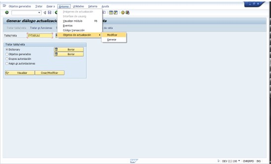
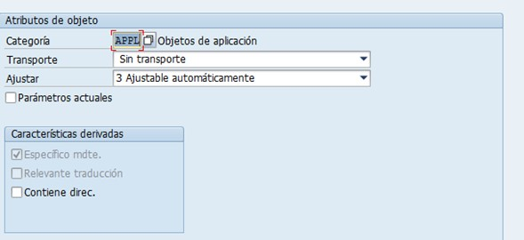
SE54 ASOCIAR TABLAS A UNA SOLA VISTA Se ingresa a la trx.
SE54 ASOCIAR TABLAS A UNA SOLA VISTA
Se ingresa a la trx. SE54 por el icono tratar cluster de vistas:
Se da un nombre y se crea:
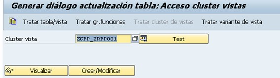
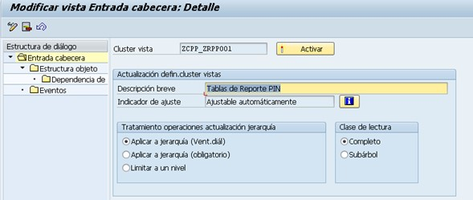
En la estructura de objeto se le indican las tablas que se van a visualizar:
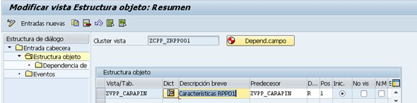
y dentro de dependencia se indica la misma tabla:
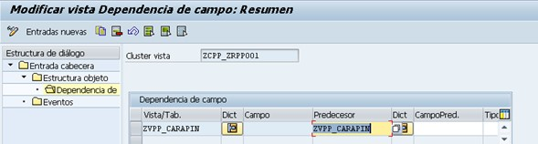
Luego se genera y se activa.
OTRO EJEMPLO INDEPENDIENTE DE LLAVE
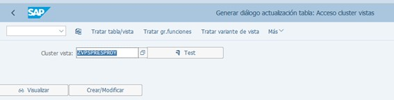
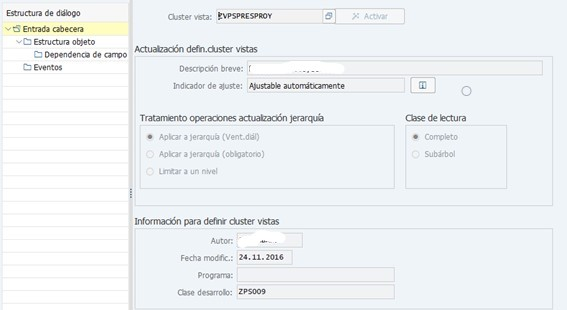
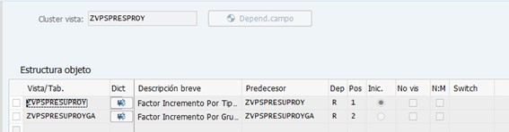
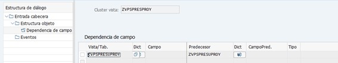
OTRO EJEMPLO DEPENDIENTE DE LLAVE
Para cada linea se da el ICONO Dependencia temporal y el sistema crea los campos llave.
Para asociarlo a una trx SE93 se le indica lo siguiente:
VCLDIR-VCLNAME
UPDATE
DELIMITAR PLANO CON TAB, SEPARAR PLANO POR TAB, TECLA TAB TABULADOR * class cl_abap_char_...
DELIMITAR PLANO CON TAB, SEPARAR PLANO POR TAB, TECLA TAB TABULADOR
* class cl_abap_char_utilities definition load.
CONSTANTS: lc_tab TYPE string
VALUE cl_abap_char_utilities=>horizontal_tab.
Separador columna:
CONSTANTS: cc_sep_campo TYPE c VALUE cl_abap_char_utilities=>horizontal_tab.
Separador enter, cambia de linea:
CONSTANTS: cc_cr_lf(5) TYPE c VALUE cl_abap_char_utilities=>cr_lf,
ABAP y Codigo
HACER LLAMADO A UN WORD PARA MERGE INTERCAMBIO DE DATOS - CORRESPONDENCIA Para utilizar c...
HACER LLAMADO A UN WORD PARA MERGE INTERCAMBIO DE DATOS - CORRESPONDENCIA
Para utilizar con la función de intercambio de correspondencia con WORD, se utiliza el siguiente código:
* class cl_abap_char_utilities definition load.
CONSTANTS: lc_tab TYPE string
VALUE cl_abap_char_utilities=>horizontal_tab.
DATA: BEGIN OF columnas OCCURS 1,
linea(30) type c,
END OF columnas.
DATA: BEGIN OF datos OCCURS 1,
cod_prov(10) TYPE c,
nom_prov(10) TYPE c,
codig(10) TYPE c,
END OF datos.
* cada titulo del campo va separado por delimitador
concatenate 'cod_prov' lc_tab 'nom_prov' lc_tab 'codig' into COLUMNAS.
APPEND COLUMNAS.
*
MOVE 'cod111' TO datos-cod_prov.
MOVE 'nom111' TO datos-nom_prov.
MOVE 'codig111' TO datos-codig.
APPEND datos.
MOVE 'cod222' TO datos-cod_prov.
MOVE 'nom222' TO datos-nom_prov.
MOVE 'codig222' TO datos-codig.
APPEND datos.
P_PATH es un archivo que se pide en el dynpro (Buscar en este archivo PROGRAMA PARA LEER DESDE UN PLANO SELECCIONADO p_path
* Path donde se encuentra el fichero word que genera las CARTAS
PATH_DESC = p_PATH.
DO 128 TIMES.
SHIFT PATH_DESC RIGHT.
IF PATH_DESC+127(1) = '\'. EXIT. ENDIF.
ENDDO.
CONDENSE PATH_DESC.
*
CALL FUNCTION 'MS_WORD_OLE_FORMLETTER'
EXPORTING
word_document = p_path
download_path = path_desc
TABLES
data_tab = datos
fieldnames = columnas
EXCEPTIONS
invalid_fieldnames = 1
user_cancelled = 2
download_problem = 3
communication_error = 4.
Diccionario y Datos
UTILIZAR EDIT MASK PARA PASAR VALORES TIPO P A CARACTER Para este ejemplo se utiliza char...
UTILIZAR EDIT MASK PARA PASAR VALORES TIPO P A CARACTER
Para este ejemplo se utiliza char 10, pero se puede acomodar.
Pasar valores numéricos a char.
DATA: valor_cm_char(10) TYPE c,
w_conta(2) TYPE n,
w_coma(2) TYPE n,
valor_cm TYPE P DECIMALS 14.
CLEAR: w_coma.
w_conta = 1.
WRITE valor_cm DECIMALS 5 TO valor_cm_char.
WHILE w_conta < 11.
IF w_coma > 0.
ADD 1 TO w_coma.
ENDIF.
IF valor_cm_char+w_conta(1) = ','.
MOVE 1 TO w_coma.
ENDIF.
MOVE valor_cm_char(w_conta) TO tabla_salida_emple-valor_cm_mask3.
IF w_coma > 3.
MOVE 11 TO w_conta.
ENDIF.
ADD 1 TO w_conta.
ENDWHILE.
Transacciones
CONOCER PARTE Y OPERACIONES CON FRACCIONES Y NEGATIVOS – DECIMAL – DIVIDIR - RESIDUO DATA...
CONOCER PARTE Y OPERACIONES CON FRACCIONES Y NEGATIVOS – DECIMAL – DIVIDIR - RESIDUO
DATA N TYPE P DECIMALS 2.
DATA M TYPE P DECIMALS 2 VALUE '-5.55'.
N = ABS( M ). WRITE: 'ABS: ', N.
N = SIGN( M ). WRITE: / 'SIGN: ', N.
N = CEIL( M ). WRITE: / 'CEIL: ', N.
N = FLOOR( M ). WRITE: / 'FLOOR:', N.
N = TRUNC( M ). WRITE: / 'TRUNC:', N.
N = FRAC( M ). WRITE: / 'FRAC: ', N.
Diccionario y Datos
CONOCER SI EN UN INFOTIPO YA SE DIGITO TEXTO DE JUSTIFICACION Se debe validar el campo in...
CONOCER SI EN UN INFOTIPO YA SE DIGITO TEXTO DE JUSTIFICACION
Se debe validar el campo innnn-itxex.
Diccionario y Datos
NOMBRE EMPLEADO, NOMBRE DEL EMPLEADO POR FUNCION CALL FUNCTION 'PTRV_GET_NAME_FOR_PERNR'...
NOMBRE EMPLEADO, NOMBRE DEL EMPLEADO POR FUNCION
CALL FUNCTION 'PTRV_GET_NAME_FOR_PERNR'
EXPORTING
personnel_number = ztvhr_bv_imanue-pernr
validity_date = sy-datum
screen_display = ' '
* START_ROW = 5
* START_COLUMN = 10
IMPORTING
name = t_ename
EXCEPTIONS
name_not_found = 1
OTHERS = 2.
.
IF sy-subrc = 1.
CLEAR: t_ename.
CONCATENATE 'No se encontro Nombre empleado: ' ztvhr_bv_imanue-pernr INTO w_mensaje SEPARATED BY space.
MESSAGE w_mensaje TYPE 'I'.
ENDIF.
NOMBRE EMPLEADO, NOMBRE DEL EMPLEADO POR FUNCIÓN POR ESTANDAR
ESTO ES EXCELENTE POR QUE CON ESTO SE CONFIGURA DE UNA VEZ EL CAMPO P0001-ENAME DEL IT0001 Y CON ELLO TODOS LOS REPORTES ESTÁNDAR DE SAP. ESO DEBE SER CONFIGURADO ASÍ DESDE EL INICIO.
$$format = 01.
lv_molga = 38
TAMBIÉN SE PUEDE A TRAVES DE UNA FUNCIÓN ESTÁNDAR Y CONFIGURANDO LA TABLA V_T522N
call function 'RP_EDIT_NAME'
exporting
format = $$format
langu = sy-langu
molga = lv_molga
pp0002 = p0002
importing
edit_name = pernr_common-ename.
Cabecera PA30: Tabla V_T522N, En este caso se refleja en informes como el PC00_M99_CWTR informe de ccnominas, programa de ccnominas
1 0002 0 1 NACHN
1 0002 0 2 NACH2
1 0002 0 3 VORNA
1 0002 0 4 NAME2
CONCATENATE p0002-vorna p0002-name2 INTO gst_report_ent-nombres
SEPARATED BY space.
CONCATENATE p0002-nachn p0002-nach2 INTO gst_report_ent-apell
SEPARATED BY space.
ABAP y Codigo
CREACIÓN DE PROGRAMA CON BATCH INPUT BI BATCH-INPUT Esta es una parte del programa, lo me...
CREACIÓN DE PROGRAMA CON BATCH INPUT BI BATCH-INPUT
Esta es una parte del programa, lo mejor es ejecutar la SM35 haciendo lo que se quiere ejecutar: crear, modificar, borrar, limitar, etc. De ahí se toman los nombres de los campos y dynpros que se requieren:
Ejemplo creando registro 0416:
*&---------------------------------------------------------------------*
*& Form create_416
*&---------------------------------------------------------------------*
* text
*----------------------------------------------------------------------*
* --> p1 text
* <-- p2 text
*----------------------------------------------------------------------*
FORM create_416 .
DATA: wl_pdate(10) TYPE c,
wl_pernr(8) TYPE c,
wl_dias(10) TYPE c,
t_p0416 TYPE p0416 OCCURS 0 WITH HEADER LINE.
LOOP AT t_pernr INTO s_pernr.
IF s_pernr-dias NE 0.
PERFORM bdc_dynpro USING 'SAPMP50A' '1000'.
PERFORM bdc_field USING 'BDC_OKCODE' '=INS'.
WRITE s_pernr-pernr TO wl_pernr.
PERFORM bdc_field USING 'RP50G-PERNR' wl_pernr.
PERFORM bdc_field USING 'BDC_SUBSCR'
'/1PAPAXX/HDR_20000A 0100SUBSCR_HEADER'.
PERFORM bdc_field USING 'BDC_SUBSCR'
'SAPMP50A 0320SUBSCR_ITMENU'.
PERFORM bdc_field USING 'BDC_SUBSCR'
'SAPMP50A 0330SUBSCR_TIME'.
PERFORM bdc_field USING 'RP50G-TIMR6' 'X'.
CONCATENATE p_fecha-high+6(2) '.' p_fecha-high+4(2) '.' p_fecha-high+0(4)
INTO wl_pdate.
PERFORM bdc_field USING 'RP50G-BEGDA' wl_pdate.
PERFORM bdc_field USING 'BDC_SUBSCR'
'SAPMP50A 0350SUBSCR_ITKEYS'.
PERFORM bdc_field USING 'BDC_CURSOR' 'RP50G-SUBTY'.
PERFORM bdc_field USING 'RP50G-CHOIC' '416'.
PERFORM bdc_field USING 'RP50G-SUBTY' p_subty.
PERFORM bdc_dynpro USING 'MP041600' '2000'.
PERFORM bdc_field USING 'BDC_CURSOR' 'P0416-NUMBR'.
PERFORM bdc_field USING 'BDC_OKCODE' '=UPD'.
PERFORM bdc_field USING 'P0416-BEGDA' wl_pdate.
wl_dias = s_pernr-dias.
REPLACE '.' WITH ',' INTO wl_dias.
CONDENSE wl_dias NO-GAPS.
PERFORM bdc_field USING 'P0416-NUMBR' wl_dias.
PERFORM bdc_field USING 'BDC_SUBSCR'
'MP041600 2100TC_SCREEN'.
PERFORM bdc_field USING 'BDC_SUBSCR'
'SAPMP50A 0090SUBSCREEN_T582C'.
CALL TRANSACTION 'PA30' USING bdcdata MODE p_dismo.
REFRESH bdcdata.
CALL FUNCTION 'HR_PSBUFFER_INITIALIZE'.
CALL FUNCTION 'HR_INITIALIZE_BUFFER'
EXPORTING
tclas = 'A'
pernr = s_pernr-pernr
EXCEPTIONS
OTHERS = 1.
CLEAR t_p0416[].
CALL FUNCTION 'HR_READ_INFOTYPE'
EXPORTING
pernr = s_pernr-pernr
infty = '0416'
TABLES
infty_tab = t_p0416
EXCEPTIONS
infty_not_found = 1
OTHERS = 2.
LOOP AT t_p0416 WHERE subty = p_subty AND
begda = p_fecha-high.
ENDLOOP.
IF sy-subrc <> 0.
s_pernr-error = 'X'.
MODIFY t_pernr FROM s_pernr.
ENDIF.
ENDIF.
ENDLOOP.
CALL METHOD grid1->set_table_for_first_display
EXPORTING " i_buffer_active = 'X'
i_save = 'A'
it_toolbar_excluding = lt_exclude
is_variant = gs_variant
i_structure_name = 'zshrpt_contin'
is_layout = gs_layout
CHANGING
it_fieldcatalog = gt_fieldcat
it_sort = gt_sort
it_outtab = t_pernr.
ENDFORM. " create_416
*&---------------------------------------------------------------------*
*& Form bdc_dynpro
*&---------------------------------------------------------------------*
* text
*----------------------------------------------------------------------*
* -->PROGRAM text
* -->DYNPRO text
*----------------------------------------------------------------------*
FORM bdc_dynpro USING program dynpro.
CLEAR bdcdata.
bdcdata-program = program.
bdcdata-dynpro = dynpro.
bdcdata-dynbegin = 'X'.
APPEND bdcdata.
ENDFORM. "BDC_DYNPRO
*----------------------------------------------------------------------*
* Insert field *
*----------------------------------------------------------------------*
FORM bdc_field USING fnam fval.
IF fval <> nodata.
CLEAR bdcdata.
bdcdata-fnam = fnam.
bdcdata-fval = fval.
APPEND bdcdata.
ENDIF.
ENDFORM. "BDC_FIELD
* Rutinas Bacth Input
Ejemplo de cómo se ve la transaccion SM35 generando los campos que se necesitan:
ABAP y Codigo
LEER HORARIO DE TRABAJO DIARIO, INFOTIPO 0007 Y/O 2003 TRAE EL TURNO REAL PARA ESE DIA.
LEER HORARIO DE TRABAJO DIARIO, INFOTIPO 0007 Y/O 2003 TRAE EL TURNO REAL PARA ESE DIA.
DATA: L_it_xpsp LIKE ptpsp OCCURS 1 WITH HEADER LINE.
CALL FUNCTION 'HR_PERSONAL_WORK_SCHEDULE'
EXPORTING
pernr = pernr-pernr
begda = g_d_date_process
endda = g_d_date_process
kug = 'CHECK_I49'
refresh = ' '
TABLES
i0000 = p0000
i0001 = p0001
i0002 = p0002
i0007 = p0007
i2001 = p2001
i2002 = p2002
i2003 = p2003
* i0049 = p0049
perws = L_it_xpsp
EXCEPTIONS
error_occured = 1
OTHERS = 2.
Transacciones
PARA CONOCER CUAL USUARIO ES LA QUE TIENE BLOQUEADA LA SCC1 Include LSENAF01 Programa SAP...
PARA CONOCER CUAL USUARIO ES LA QUE TIENE BLOQUEADA LA SCC1
Include LSENAF01
Programa SAPLSENA
CASE rc.
User tiene código del empleado que esta bloqueando.
También por:
ejecuté el módulo de función ENQUEUE_E_TABLE con los parámetros:
MODE_RSTABLE E
TABNAME RSCLICOPY
VARKEY 210
X_TABNAME
X_VARKEY
_SCOPE 2
_WAIT
_COLLECT
si la transacción ya está blokeada x alguien, en la parte de arriba le sale en mensaje con el usuario q' la tiene
si no está blokeada no le sale ningún mensaje, pero kiere decir q' ud. la acabó de blokear con esa función
en el caso de q' la haya blokeado con esa función, solo debe salirse de la función y listo
Transaccion AL08 o SM04, ademas dice que transaccion esta ejecutando un usuario.
Transacciones
ENVIAR MENSAJE A UN USUARIO DIRECTO, TRANSACCIÓN SE37 Y FUNCIÓN TH_POPUP
ENVIAR MENSAJE A UN USUARIO DIRECTO, TRANSACCIÓN SE37 Y FUNCIÓN TH_POPUP
Transacciones
PROGRAMA PARA CAMBIAR, MODIFICAR STATUS, ACTUALIZAR STATUS DEL IT 0003 RPUTRBK0 Fecha sal...
PROGRAMA PARA CAMBIAR, MODIFICAR STATUS, ACTUALIZAR STATUS DEL IT 0003
RPUTRBK0
Fecha salida en vivo, para que no haga calculo de tiempos anterior a esa fecha.
Diccionario y Datos
PARA VERIFICAR CAMBIOS EN LAS VISTA DE TABLAS (AUDITORIA EN TRANSPORTES) - AUDITORIA TABL...
PARA VERIFICAR CAMBIOS EN LAS VISTA DE TABLAS (AUDITORIA EN TRANSPORTES) - AUDITORIA TABLAS – MODIFICACION TABLAS
SE03 – (Se busca es lo que se hizo en SE10)
En: Herramientas Transport Organizer > Objetos en órdenes > Buscar objetos en órdenes/tareas
Debajo de R3TR DTEL se coloca:
Click, VDAT, y el nombre de la vista de la tabla.
Ejemplo:
En el resultado se buscan por fecha de modificación cual orden pudo afectar.
Transacciones
PARA QUE SALGA LA OPCIÓN DE PEDIR 08 Microsoft Excel (en el formato XXL anterior) Exporta...
PARA QUE SALGA LA OPCIÓN DE PEDIR 08 Microsoft Excel (en el formato XXL anterior)
Exportar a Excel
Se genera el reporte normalmente, se ingresa el icono Excel O ahí veces vista preliminar primero y si luego Excel .
Trx. SE38 Programa SALV_BS_ADMIN_MAINTAIN
F8
Se marca y se borra el usuario, con ello vuelve a preguntar el tipo de formato a exportar.
Diccionario y Datos
LECTURA DEL CENTRO DE COSTO DE LOS INFOTIPOS 2001, 2002, 2003 A los cuales se les ingrese...
LECTURA DEL CENTRO DE COSTO DE LOS INFOTIPOS 2001, 2002, 2003
A los cuales se les ingrese pago con otro centro de costos.
SINGLE kostl INTO t_it_table_report-cost_center FROM assob_hr
WHERE pernr = pernr-pernr AND
infty = p2002-infty AND
subty = p2002-subty AND
begda = p2002-begda AND
endda = p2002-endda.
ABAP y Codigo
PARA CREAR LA FUNCIÓN PROPIA DE TIEMPOS PARA CADA PAÍS, INSERTA INCLUDE CON EL NOMBRE DEL...
PARA CREAR LA FUNCIÓN PROPIA DE TIEMPOS PARA CADA PAÍS, INSERTA INCLUDE CON EL NOMBRE DEL DESARROLLO DEL PAÍS.
CREAR FUNCIÓN DE TIEMPOS. PE04. SAPFP51T.
Programa RPTMOZ00
Se visualiza como se muestra a continuación, ya dentro de cada include se colocar el FORM respectivo.
***********************************************************************
* Dieses Include ist reserviert fuer Kundespezifische Modifikationen
* Standardmaessig werden hier keine Aenderungen vorgenommen
* Der Include nimmt Modifikationen auf, die nicht die Formulargestal-
* tung betreffen.
* Modifikationen im Zusammenhang mit der Formulargestaltung werden im
* Include RPZMOD00 abgelegt.
*
***********************************************************************
*{ INSERT RD1K900903 1
* This include is only for Brasil(37) TM
include zbhr_37_rptmoz00.
* Enhancement for Validations Evaluation Time Colombia. User: C1003111 date: 06.03.2009 H.R.P.
Include ZTMFCO_OPERATIONS_TIME.
* Debe haber un form con el nombre de la operacion
* ejemplo FORM op%38co.
*
*
* Enhancement for Validations Evaluation Time US and Canada. User: C1002491 date: 08.27.2009.
INCLUDE ZTMUS_OPERATIONS_TIME.
*} INSERT
**********************
Recordar que la función se debe pegar al programa SAPFP51T.
Transacciones
CREAR OPERACION DE TIEMPOS.
CREAR OPERACION DE TIEMPOS. PE04. SAPFP51T.
Programa RPTMOZ00
Para las funciones buscar el nombre de la función creada, la cual esta en el include RPTASF00 y darle crear
Para las operaciones buscar el nombre de la operacion creada, la cual esta en el include RPTOIP00 y darle crear
Se ingresa el include respectivo ejemplo:
Include zhr_tiempos
Diccionario y Datos
EJEMPLOS DE DESARROLLOS ABAP - DEMOS - EXAMPLE - ALV Ejemplos de código ABAP.
EJEMPLOS DE DESARROLLOS ABAP - DEMOS - EXAMPLE - ALV
Ejemplos de código ABAP.
Trx. DWDM ejemplos de listas. tablas, usando clases.
Trx. BIBS otros ejemplos de manejo de objetos
Trx. SE83 otros ejemplos
Reporte ADITES26 visualizar los iconos permitidos en SAP
Reporte SHOWICON para que muestre los iconos por selección
Trx. ICON muestra los iconos
Programa SAPMSABAPDEMOS
COLORES programa SHOWCOLO
ABAP y Codigo
MOSTRAR MOTIVO EN LOS INFOTIPOS: TRATAR ACTUALIZAR TEXTO Se creo función así: Data: zpt...
MOSTRAR MOTIVO EN LOS INFOTIPOS: TRATAR ACTUALIZAR TEXTO
Se creo función así:
Data: zpt_motivo_2001 type textline.
CLEAR: zpt_motivo_2001.
IF p2001-itxex IS NOT INITIAL.
CALL FUNCTION 'ZHRPT_MOTIVO_INFTY'
EXPORTING
zpt_pernr = p2001-pernr
zpt_infty = p2001-infty
zpt_subty = p2001-subty
zpt_objps = p2001-objps
zpt_sprps = p2001-sprps
zpt_endda = p2001-endda
zpt_begda = p2001-begda
zpt_seqnr = p2001-seqnr
zpt_itxex = p2001-itxex
IMPORTING
zpt_motivo = zpt_motivo_2001.
ENDIF.
Función ZHRPT_MOTIVO_INFTY
FUNCTION zhrpt_motivo_infty.
*"----------------------------------------------------------------------
*"*"Interfase local
*" IMPORTING
*" REFERENCE(ZPT_PERNR) LIKE PERNR-PERNR
*" REFERENCE(ZPT_INFTY) TYPE INFTY
*" REFERENCE(ZPT_SUBTY) TYPE SUBTY
*" REFERENCE(ZPT_OBJPS) TYPE OBJPS
*" REFERENCE(ZPT_SPRPS) TYPE SPRPS
*" REFERENCE(ZPT_ENDDA) TYPE ENDDA
*" REFERENCE(ZPT_BEGDA) TYPE BEGDA
*" REFERENCE(ZPT_SEQNR) TYPE SEQNR
*" REFERENCE(ZPT_ITXEX) TYPE ITXEX
*" EXPORTING
*" REFERENCE(ZPT_MOTIVO)
*"----------------------------------------------------------------------
DATA: itx_key LIKE pskey.
DATA: tx-key LIKE pskey.
DATA: BEGIN OF ptext OCCURS 200.
DATA: line(78). "K11K099465
DATA: END OF ptext.
DATA: BEGIN OF text-version,
nummer TYPE x VALUE '02', "K11K099465
END OF text-version.
DATA: zhrec_line01(78) TYPE c,
zhrec_line02(78) TYPE c,
zhrec_line03(78) TYPE c,
zhrec_line04(78) TYPE c,
zhrec_line05(78) TYPE c.
REFRESH: ptext.
CLEAR: ptext, zpt_motivo, zhrec_line01, zhrec_line02,
zhrec_line03, zhrec_line04, zhrec_line05.
IF zpt_sprps IS INITIAL AND
zpt_itxex = 'X'.
MOVE zpt_pernr TO itx_key-pernr.
MOVE zpt_subty TO itx_key-subty.
MOVE zpt_objps TO itx_key-objps.
MOVE zpt_sprps TO itx_key-sprps.
MOVE zpt_infty TO itx_key-infty.
MOVE zpt_begda TO itx_key-begda.
MOVE zpt_endda TO itx_key-endda.
MOVE zpt_seqnr TO itx_key-seqnr.
MOVE itx_key TO tx-key.
rp-imp-c1-tx.
IF sy-subrc EQ 0.
LOOP AT ptext.
CASE sy-tabix.
WHEN 1. MOVE ptext-line TO zhrec_line01.
WHEN 2. MOVE ptext-line TO zhrec_line02.
WHEN 3. MOVE ptext-line TO zhrec_line03.
WHEN 4. MOVE ptext-line TO zhrec_line04.
WHEN 5. MOVE ptext-line TO zhrec_line05.
ENDCASE.
ENDLOOP.
CONCATENATE zhrec_line01 zhrec_line02 zhrec_line03
zhrec_line04 zhrec_line05 INTO
zpt_motivo SEPARATED BY space.
ENDIF.
ENDIF.
ENDFUNCTION.
Diccionario y Datos
AMPLIACIÓN ACBAPI01 PARA GESTIÓN DE VIAJES, Se debe activar el user exit: CMOD, proyecto...
AMPLIACIÓN ACBAPI01 PARA GESTIÓN DE VIAJES,
Se debe activar el user exit: CMOD, proyecto FI, ampliación ACBAPI01
Componentes: EXIT_SAPLACC4_001, ahí se encuentra el include ZXACCU15 - Ampliación ZBAPI_FI (Comfenalco)
Integración de gestión de viajes con HCM, gestión de viajes con Tiempos
Cuando ejecute la transacción PRRW - Gestionar ejecuciones de contabilización
Ruta: Gestión de viajes
Tabla PTRV_HEAD Datos marco de un viaje Liquidación de gastos de desplazamiento Operaciones periódicas Transferencia a finanzas PRRW - Gestionar ejecuciones de contabilización
DATV1 salida
DATB1 fecha fin viaje
KUNDE RKUNDE CHAR 59 0 Motivo del viaje (p.ej., cliente/autor)
PRTE transacción para visualizar los datos del CLUSTER de viajes, tener encuenta las verisones de CLUSTER.
Validar Tablas AEND y STATU, historial del estatus del viaje, para validar si se debe generar nuevamente el registro.
PARA VERIFICAR SI ESTA AUSENTE AL MOMENTO DE INGRESAR LA NOVEDAD EN GESTIÓN DE VIAJES
Para validar en el momento que le den grabar por la transacción PR05
Función USER EXIT: EXIT_SAPMP56T_002, Include ZXTRVU03
COMO PROBAR LA AMPLIACIÓN ZXACCU15
Ahí que buscar el código abap en la ruta: D:\SAP\Hernando Ramirez\ABAP\User Exit – Ampliaciones, y además unas ampliaciones para la validación de la información que se encuentra en el documento: ABAP Ampliaciones al estándar SAP - Comfenalco Antioquia.doc
- Se genera un viaje por la PR05, para esto ya debe estar configurados el módulo de gestión de viajes. Se graba y en anticipo status de viaje se coloca solicitud autorizada y a liquidar.
- Por PRFI, se crea la contabilización, teniendo presente que en datos marco se elije la clase de documentos (ejemplo: TV, TW, etc.).
- Por PRRW se buscan las ejecuciones contables, y cuando se le de click en el botón contabilizar, se crea el registro y sale el mensaje.
ABAP y Codigo
OPERACIÓN AÑO BISIESTO DATA: n_ano_bisiesto(4) TYPE n, n_decimal(5) TYPE p DECIMALS 4.
OPERACIÓN AÑO BISIESTO
DATA: n_ano_bisiesto(4) TYPE n,
n_decimal(5) TYPE p DECIMALS 4.
IF info_end_date+4(2) = '02'.
n_ano_bisiesto = info_end_date(4).
n_decimal = n_ano_bisiesto MOD 4.
IF n_decimal IS INITIAL.
CHECK info_end_date+6(2) = '29'.
ELSE.
CHECK info_end_date+6(2) = '28'.
ENDIF.
ENDIF.
ABAP y Codigo
CALCULO VACACIONES EN BASE A DIAS CALCULADOS POR ABAP En definición de absentismos, se qu...
CALCULO VACACIONES EN BASE A DIAS CALCULADOS POR ABAP
En definición de absentismos, se quita la E en inicio no laborable y quita E en final no laborable y periodo no laborable.
Ampliación en INCLUDE LHRTIM00ACTUALTIMESF01
ENHANCEMENT 2 ZPT0001. "active version
* Ampliacion en include LHRTIM00ACTUALTIMESF01 al grabar la PA30 O PA61
* Al final del FORM CALCULATE_ABS_ATT_TIMES
* Para que si el dia sabado o domingo o festivo tiene turno, no lo cuente.
* Esta rutina junto con la configuracion es la MEJOR para validar que
* el numero de dias de contingente sea igual al numero de absentismos
*break hramirec.
CONSTANTS: LC_NAME TYPE CHAR50 VALUE '(RVV50R10C)ZT_VDATU[]'.
FIELD-SYMBOLS: TYPE FIP_T_VDATU_RANGE.
*** Trae la informacion de la pantalla de seleccion
ASSIGN (LC_NAME) TO .
DATA: imp_subty(21) TYPE c VALUE '(MP200000)P2001-SUBTY',
lc_subty LIKE p2001-subty.
FIELD-SYMBOLS: .
ASSIGN (imp_subty) to .
lc_subty = .
CHECK ( lc_subty = '0100' OR
lc_subty = '9400' ) AND
( sy-pfkey = '2001INS' OR
sy-pfkey = 'INS' OR
sy-pfkey = '2001MOD' OR
sy-pfkey = 'MOD' ).
times_per_day-abwtg = 1.
DATA: c_hcalid TYPE scal-hcalid,
c_es_festivo,
p_quedia_es TYPE p.
***** Para Empleados directos
LOOP AT m0001 WHERE sprps IS INITIAL AND
begda LE times_per_day-datum AND
endda GE times_per_day-datum.
ENDLOOP.
IF sy-subrc = 0 AND
m0001-persg = '1'.
CLEAR: c_hcalid, c_es_festivo, p_quedia_es.
SELECT SINGLE mofid INTO c_hcalid FROM t001p WHERE werks EQ m0001-werks AND
btrtl EQ m0001-btrtl.
PERFORM es_dia_festivo USING times_per_day-datum c_hcalid c_es_festivo.
IF c_es_festivo = 'X'.
times_per_day-abwtg = 0.
ELSE.
PERFORM es_dia_p_quedia_es USING times_per_day-datum p_quedia_es.
IF p_quedia_es = 6 OR
p_quedia_es = 7.
times_per_day-abwtg = 0.
ENDIF.
ENDIF.
ENDIF.
***** Para Personal Externo
LOOP AT m0001 WHERE sprps IS INITIAL AND
begda LE times_per_day-datum AND
endda GE times_per_day-datum.
ENDLOOP.
IF sy-subrc = 0 AND
m0001-persg = '9'.
CLEAR: c_hcalid, c_es_festivo, p_quedia_es.
SELECT SINGLE mofid INTO c_hcalid FROM t001p WHERE werks EQ m0001-werks AND
btrtl EQ m0001-btrtl.
PERFORM es_dia_festivo USING times_per_day-datum c_hcalid c_es_festivo.
IF c_es_festivo = 'X'.
times_per_day-abwtg = 0.
ELSE.
PERFORM es_dia_p_quedia_es USING times_per_day-datum p_quedia_es.
IF p_quedia_es = 7.
times_per_day-abwtg = 0.
ENDIF.
ENDIF.
ENDIF.
ENDENHANCEMENT.
Control del dia inicial y final en ZXPADU02
CHECK i001p-molga = '38'.
CASE innnn-infty.
WHEN '2001'.
* Para IT2001 hay ampliacion en la funcion HR_PERSONAL_WORK_SCHEDULE
* para validar numero de dias de vacaciones. HRP. 08/06/2010
* En el include * en el INCLUDE LHRTIM00ACTUALTIMESF01 tambien se
* valida que solo cuente los dias de lunes a viernes para empleados
* activos.
IF ( sy-pfkey = 'INS' OR
sy-pfkey = '2001INS' OR
sy-pfkey = '2001MOD' OR
sy-pfkey = 'MOD' ) AND
( innnn-subty = '0100' OR
innnn-subty = '9400' ) AND
( ipsyst-persg = '1' OR
ipsyst-persg = '9' ).
CLEAR: c_hcalid, c_es_festivo, p_dia_domingo, c_genera_mensaje.
SELECT SINGLE mofid INTO c_hcalid FROM t001p WHERE werks EQ ipsyst-werks AND
btrtl EQ ipsyst-btrtl.
IF sy-subrc = 0. "Valida fecha inicio
PERFORM es_dia_domingo(saplzpt101) USING innnn-begda p_dia_domingo.
IF ipsyst-persg = '1'.
IF p_dia_domingo = 6 OR
p_dia_domingo = 7.
c_genera_mensaje = 'X'.
ELSE.
PERFORM es_dia_festivo(saplzpt101) USING innnn-begda c_hcalid c_es_festivo.
IF c_es_festivo = 'X'.
c_genera_mensaje = 'X'.
ENDIF.
ENDIF.
ENDIF.
IF ipsyst-persg = '9'.
IF p_dia_domingo = 7.
c_genera_mensaje = 'X'.
ELSE.
PERFORM es_dia_festivo(saplzpt101) USING innnn-begda c_hcalid c_es_festivo.
IF c_es_festivo = 'X'.
c_genera_mensaje = 'X'.
ENDIF.
ENDIF.
ENDIF.
IF c_genera_mensaje IS INITIAL. "Valida fecha fin
CLEAR: c_es_festivo, p_dia_domingo.
PERFORM es_dia_domingo(saplzpt101) USING innnn-endda p_dia_domingo.
IF ipsyst-persg = '1'.
IF p_dia_domingo = 6 OR
p_dia_domingo = 7.
c_genera_mensaje = 'X'.
ELSE.
PERFORM es_dia_festivo(saplzpt101) USING innnn-endda c_hcalid c_es_festivo.
IF c_es_festivo = 'X'.
c_genera_mensaje = 'X'.
ENDIF.
ENDIF.
ENDIF.
IF ipsyst-persg = '9'.
IF p_dia_domingo = 7.
c_genera_mensaje = 'X'.
ELSE.
PERFORM es_dia_festivo(saplzpt101) USING innnn-endda c_hcalid c_es_festivo.
IF c_es_festivo = 'X'.
c_genera_mensaje = 'X'.
ENDIF.
ENDIF.
ENDIF.
IF c_genera_mensaje = 'X'.
CONCATENATE 'La fecha final No es valida para el '
'ingreso de esta novedad ...'
INTO v_mensaje SEPARATED BY space.
MESSAGE v_mensaje TYPE 'E'.
ENDIF.
ELSE.
IF c_genera_mensaje = 'X'.
CONCATENATE 'La fecha de inicio No es valida para el '
'ingreso de esta novedad ...'
INTO v_mensaje SEPARATED BY space.
MESSAGE v_mensaje TYPE 'E'.
ENDIF.
ENDIF.
ENDIF.
ENDIF.
ABAP y Codigo
PROPUESTA DEL ESQUEMA DE TIEMPOS EN EL RPTIME00 - PT60 ENHANCEMENT 1 ZPT0005.
PROPUESTA DEL ESQUEMA DE TIEMPOS EN EL RPTIME00 - PT60
ENHANCEMENT 1 ZPT0005. "active version
* Enhancement en el RPTIME00 include RPTMH000_FILL_FORM_TAB,
* al final del FORM FORM FILL_FORM_TAB.
* Proponer esl esquema de tiempos 38 Colombia,
SCHEMA = 'ZM01'.
ENDENHANCEMENT.
PROPUESTA CONOCIENDO EL PAIS
** Enhancement en el RPTIME00 include RPTMH000_FILL_FORM_TAB,
* al final del FORM FILL_FORM_TAB.
data: gc_molga TYPE molga.
GET PARAMETER ID 'MOL' FIELD gc_molga.
case gc_molga.
WHEN 'PE'. SCHEMA = '>MPE'.
ENDCASE.
PROPUESTA CONOCIENDO EL UGR
"""""""""""""""""""""""""""""""""""""""""""""""""""""""""""""""""""""""""""""""""""""""""""""$"$\SE:(3) Forma FILL_FORM_TAB, Final, Ampliación ZHCMENH_RPTIME00_01, Inicio A
*** Enhancement en el RPTIME00 include RPTMH000_FILL_FORM_TAB,
* al final del FORM FILL_FORM_TAB.
data: gs_usr05 TYPE USR05.
select single * into gs_usr05 from usr05 where bname = sy-uname and
parid = 'UGR'.
case gs_usr05-parva.
WHEN '38'. schema = 'ZM01'.
WHEN '98'. schema = 'ZM00'.
endcase.
ABAP y Codigo
PROPUESTA DEL ESQUEMA DE NOMINA EN EL HCOCALV0 ENHANCEMENT 1 ZENHHCM_HCOCALV0.
PROPUESTA DEL ESQUEMA DE NOMINA EN EL HCOCALV0
ENHANCEMENT 1 ZENHHCM_HCOCALV0. "active version
"""""""""""""""""""""""""""""""""""""""""""""""""""""""""""""""""""""""""""""""""""""""""""""$"$\SE:(9) Forma INIT_OBJECTS_NATIO, Final, Ampliación ZENHHCM_HCOCALV0, Inicio A
* Ampliacion en el programa HCOCALV0 al final del FORM init_objects_natio.
data: gc_molga TYPE molga.
GET PARAMETER ID 'MOL' FIELD GC_MOLGA.
CASE GC_MOLGA.
WHEN '38'. SCHEMA = 'ZO00'.
ENDCASE.
"""""""""""""""""""""""""""""""""""""""""""""""""""""""""""""""""""""""""""""""""""""""""""""$"$\SE:(10) Forma INIT_OBJECTS_NATIO, Final, Ampliación ZENHHCM_HCOCALV0, Final A
ENDENHANCEMENT.
En la nomina internacional
enhancement 1 zhcmenh_rpcinix9_01. "active version
** Ampliacion en el programa RPCALCX0 INCLUDE RPCINIX9 al final del FORM INIT_PARAMS-NATIO.
data: gc_molga type molga.
get parameter id 'MOL' field gc_molga.
case gc_molga.
when '38'. schema = 'ZPA1'.
when '99'. schema = 'ZPA1'.
endcase.
endenhancement.
Otra punto para Cambiar el esquema:
INCLUDE RPCHRT09 programa HCOCALC0
PERFORM init_params.
Al final del perform, ampliar, después de PERFORM init_params-natio
ABAP y Codigo
CAMBIAR EL TIME OUT - TIMEOUT EN SAP – PARAMETROS - PARAMETERS Transacción RZ11, ahí se b...
CAMBIAR EL TIME OUT - TIMEOUT EN SAP – PARAMETROS - PARAMETERS
Transacción RZ11, ahí se busca el parámetro para ampliar “rdisp/max_wprun_time” que usualmente esta en 600, con sy-ucomm “PCHA” para modificar.
Para los fieldexit, se requiere el parámetro abap/fieldexit = YES
En el mensaje de error que aparece dentro de SAP, buscar el nombre del parámetro que se debe modificar.
ABAP y Codigo
FORMS ESTÁNDAR PARA BÚSQUEDA DE DESCRIPCIONES DE TEXTOS DE POSICIONES, FUNCIONES, UNIDAD...
FORMS ESTÁNDAR PARA BÚSQUEDA DE DESCRIPCIONES DE TEXTOS DE POSICIONES, FUNCIONES, UNIDAD ORGANIZATIVA CONSULTA PERFORM
LEER - LECTURA ESTANDAR
INCLUDE LRPINXX al X, rutinas se deben llamar siempre con el programa SAPLRPIN.
PERFORM re528t(saplrpin) USING p0001-plans pn-begda sy-langu
CHANGING gst_report_ent-text_plans sy-subrc.
Transacciones
SE51 SORT DE TABLA EXTRACT Se debe colocar después del LISTE_INITIALISIEREN PROCESS BEFOR...
SE51 SORT DE TABLA EXTRACT
Se debe colocar después del LISTE_INITIALISIEREN
PROCESS BEFORE OUTPUT.
MODULE LISTE_INITIALISIEREN.
MODULE ZSORT.
LOOP AT EXTRACT WITH CONTROL
TCTRL_ZVHCM_CLA_CONTR CURSOR NEXTLINE.
MODULE LISTE_SHOW_LISTE.
ENDLOOP.
MODULE zsort OUTPUT.
SORT zvhcm_cla_contr_extract BY contrato tipo_sueldo ztcondici id ASCENDING.
ENDMODULE. " ZSORT OUTPUT
Diccionario y Datos
PARA GENERAR REPORTES SE INFORMACIÓN DE USUARIOS, ROLES, PERFILES – USUARIO SAP – SU01 Tr...
PARA GENERAR REPORTES SE INFORMACIÓN DE USUARIOS, ROLES, PERFILES – USUARIO SAP – SU01
Transacción SUIM. En el mismo mandante donde se encuentre la información.
Tablas
USR01 a USRXX
Vista USER_ADDR: contiene la tabla USR21 para ubicar PERSNUMBER y ADDRNUMBER, con esto se va a la tabla ADRP (Nombres) y ADCP (Telefono). en ADR6 se encuentra el mail.
mail de la transaccion BP, direc.Internet resp:
Maestro de clientes (sociedad) – FLCU00 deudor KNB1
Maestro de proveedores (sociedad) - FLVN00 Acreedor LFB1
La función HR_FBN_GET_USER_EMAIL_ADDRESS trae el mail
La función SUSR_USER_ADDRESS_READ trae los datos
*** LEER USUARIO
SELECT FROM usr21 AS usr21
INNER JOIN adrp AS adrp
ON adrp~persnumber = usr21~persnumber
FIELDS bname, name_text
WHERE usr21~addrnumber <> @space
INTO TABLE @gti_usr21.
Para buscar por trx. OX09 centro – almacen y nro de línea:
Tabla TWLAD y luego la ADRC
Diccionario y Datos
CUANDO SALE ERROR DAYPR EN DRIVER DE NOMINA Verificar que el área de nomina este en la ca...
CUANDO SALE ERROR DAYPR EN DRIVER DE NOMINA
Verificar que el área de nomina este en la característica ABKRS
Verificar que estén correctos los grupos por la vista V_001P_ALL
Diccionario y Datos
CUANDO SE INICIE A CONFIGURAR MODULO PY Lo normal del spro.
CUANDO SE INICIE A CONFIGURAR MODULO PY
Lo normal del spro.
Verificar las vistas de la tabla V_503_ALL, V_001P_ALL
Diccionario y Datos
PARA GENERAR ALV RESUMIDA EN VISTA DE DISPOSICION - El alv tiene en la primera columna el...
PARA GENERAR ALV RESUMIDA EN VISTA DE DISPOSICION
- El alv tiene en la primera columna el código y en la segunda la descripción
- Se da sumatoria a la columa de cantidad.
- Se ordena ascendente la primera y segunda columna
- A las 2 columnas se da subtotalizar
- Se da click en icono “Modificar disposición” se elige la pestaña “Clasificacion” y se quita dela columna subtotal la columna del código.
Formularios
PARAMETROS DE IMPRESION DE SMARTFORMS PARA QUE SE GENERE SIN PREGUNTAR AL USUARIO LA IMPR...
PARAMETROS DE IMPRESION DE SMARTFORMS PARA QUE SE GENERE SIN PREGUNTAR AL USUARIO LA IMPRESORA.
gs_output_options-TDDATASET = 'SMART'.
gs_output_options-TDSUFFIX1 = 'LOCL'.
gs_output_options-TDSUFFIX2 = SY-UNAME.
gs_output_options-TDDEST = 'LOCL'.
gs_output_options-TDPRINTER = 'SWIN'.
gs_output_options-TDLIFETIME = '8'.
gs_output_options-TDCOPIES = 1.
gs_control_parameters-DEVICE = 'PRINTER'.
gs_control_parameters-no_dialog = 'X'.
Y si se quiere que genere en el spool:
gs_output_options-TDNEWID = 'X'.
ABAP y Codigo
COLOCAR BREAK EN SMARTFORMS En este programa se ejecutan cada uno de los pasos, programa:...
COLOCAR BREAK EN SMARTFORMS
En este programa se ejecutan cada uno de los pasos, programa: SAPLSTXBC include LSTXBCFDC, línea 249 perform (p_callprog) in program (p_callform).
FUNCION SSF_FUNCTION_MODULE_NAME PARA CONOCER EL NOMBRE DEL SMARTFORMS
Para FACTURACION BUSCAR OPEN_FORM - GENERATE_FORM por ser SAPCRIPT
Formularios
COLOCAR FORMATO (Z) EN SMARTFORMS A CAMPOS NUMERICOS &ti_encabezado-nrofac(Z10)& Donde 10...
COLOCAR FORMATO (Z) EN SMARTFORMS A CAMPOS NUMERICOS
&ti_encabezado-nrofac(Z10)&
Donde 10 debe ser el número total del campo.
Para impresion de porcentaje de en condiciones de pago.
DATA: gc_koei1 TYPE koein VALUE '3'.
gs_lbbil_it_kond-koei1 es igual a 3.
WRITE gs_lbbil_it_kond-kbetr
CURRENCY gs_lbbil_it_kond-koei1 TO gc_desctopos.
&GC_DESCTOPOS(C3.2)&%
Las condiciones están en la tabla KONP – KONV – KOND
Para compraso SD: PRCD_ELEMENTS
Transacciones
TODOS LOS EJEMPLOS DE LOS ALV: POR SE38 BCALV* TODOS LOS ALV_GRID POR SE38 BCALV_GRID*
TODOS LOS EJEMPLOS DE LOS ALV:
POR SE38 BCALV*
TODOS LOS ALV_GRID
POR SE38 BCALV_GRID*
Diccionario y Datos
MODIFICAR ORDENES DE TRANSPORTE – SE10 Las ordenes se guardan en las tablas E07* Cuando y...
MODIFICAR ORDENES DE TRANSPORTE – SE10
Las ordenes se guardan en las tablas E07*
Cuando ya se ha liberado la orden de transporte, en la tabla E070 se cambia el campo TRSTATUS de R a D
Para esto en la FUNCTION trint_read_request_header.
En la linea 24 instruccion:
IF iv_read_e070 = 'X'.
SELECT SINGLE * FROM e070 INTO ls_e070
WHERE trkorr = cs_request-trkorr.
El campo ls_e070-TRSTATUS se cambia de R a D y se modifica algo de la descripción, para que tome el cambio es mejor cambiar algun dato, por ejemplo el titular y listo.
ABAP y Codigo
FUNCIÓN PARA DESBLOQUEAR UN EMPLEADO CUANDO SE ESTE PROCESANDO LA EVALUACION DE TIEMPOS P...
FUNCIÓN PARA DESBLOQUEAR UN EMPLEADO CUANDO SE ESTE PROCESANDO LA EVALUACION DE TIEMPOS PT60
DATA: v_plvar LIKE ppenq-plvar,
v_otype LIKE ppenq-otype,
v_objid LIKE ppenq-objid,
act_user TYPE sy-uname.
v_plvar = '01'.
v_otype = 'P'.
v_objid = pernr-pernr.
CALL FUNCTION 'HR_DEQUEUE_OBJECT'
EXPORTING
plvar = v_plvar
otype = v_otype
objid = v_objid
dequeue_once = ' '
EXCEPTIONS
illegal_otype = 0
objid_is_initial = 0
internal_error = 0
OTHERS = 0.
CALL FUNCTION 'BAPI_EMPLOYEE_ENQUEUE'
EXPORTING
number = p_innnn_pernr.
CALL FUNCTION 'BAPI_EMPLOYEE_DEQUEUE'
EXPORTING
number = p_innnn_pernr.
CALL FUNCTION 'DEQUEUE_ALL'.
ABAP y Codigo
PASAR LA PRIMERA LETRA DE MAYUSCULAS O MINUSCULAS A TIPO ORACION – NOMBRES EMPLEADOS O CU...
PASAR LA PRIMERA LETRA DE MAYUSCULAS O MINUSCULAS A TIPO ORACION – NOMBRES EMPLEADOS O CUALQUIER TEXTO
translate p0105-usrid_long to lower case.
CALL FUNCTION 'HRIQNL_CONV_FIRSTCHARS_TOUPPER'
EXPORTING
input_string = gt_datosdas-ename
* SEPARATORS = ' '
first_letter_caps = 'X' " Con X pasa la primera a mayus, si no las pasa a minuscula
IMPORTING
output_string = gt_datosdas-ename.
PASAR TODAS LA PALABRAS A MAYUSCULAS: SHIFT_UP: .
ABAP y Codigo
LECTURAS CON INNER JOIN SELECT SELECT a~pernr a~pernr c~icnum d~vorna a~plans a~plans a~w...
LECTURAS CON INNER JOIN SELECT
SELECT a~pernr a~pernr c~icnum d~vorna a~plans a~plans a~werks e~cttyp e~begda
e~ctedt a~btrtl
INTO s_persn FROM pa0001 AS a
INNER JOIN pa0000 AS p
ON a~pernr = p~pernr AND
p~begda <= s_date-low AND
p~endda => s_date-high AND
p~stat2 = '3'
INNER JOIN pa0002 AS d
ON a~pernr = d~pernr
INNER JOIN pa0185 AS c
ON a~pernr = c~pernr
INNER JOIN pa0016 AS e
ON a~pernr = e~pernr AND
e~ctedt <= s_date-low AND
e~ctedt => s_date-high
WHERE
a~persk IN p_persk AND
a~werks IN p_werks AND
a~btrtl IN p_btrtl.
SELECT * "a~EKORG a~LIFNR a~LEBEW a~LEBDT a~HKRIT a~BEURT
"a~KRT01 a~KRT02 a~KRT03 a~KRT04 a~KRT05 a~KRT06 a~KRT07
INTO CORRESPONDING FIELDS OF TABLE gt_detalle
FROM ztmm_eval_provp AS a
INNER JOIN t147b AS b
ON b~spras = sy-langu AND
b~hkrit = a~hkrit
INNER JOIN lfa1 AS c
ON c~lifnr = a~lifnr
INNER JOIN adrc AS d
ON d~addrnumber = c~adrnr
INNER JOIN usr21 AS e
ON e~bname = a~lebew
INNER JOIN adrp AS f
ON f~persnumber = e~persnumber
FOR ALL ENTRIES IN gt_ztmm_eval_prov
WHERE a~ekorg = gt_ztmm_eval_prov-ekorg AND
a~lifnr = gt_ztmm_eval_prov-lifnr AND
a~lebdt = gt_ztmm_eval_prov-lebdt.
BREAK-POINT.
DATA: BEGIN OF wa_spfli.
INCLUDE STRUCTURE spfli.
DATA: carrname TYPE s_carrname.
DATA: END OF wa_spfli.
SELECT SINGLE spfli~carrid spfli~cityfrom spfli~cityto scarr~carrname INTO CORRESPONDING FIELDS OF wa_spfli
FROM spfli INNER JOIN scarr
ON spfli~carrid = scarr~carrid.
O tambien sirve
SELECT SINGLE * INTO CORRESPONDING FIELDS OF wa_spfli
FROM spfli INNER JOIN scarr
ON spfli~carrid = scarr~carrid.
OTRA FORMA DE LEER COMO INTO CORRESPONDING
INCLUDE LCOLAU04
DATA: L_TAB_FIELDS TYPE RSFS_TAB_FIELDS,
CLEAR l_tab_fields.
MOVE 'AFVC' TO l_tab_fields-tablename.
READ TABLE t_select_fields WITH KEY l_tab_fields-tablename
INTO l_tab_fields.
SELECT (l_tab_fields-fields)
FROM afvc
INTO CORRESPONDING FIELDS OF TABLE t_afvgd
FOR ALL ENTRIES IN t_aufpl_pre_tab
WHERE aufpl = t_aufpl_pre_tab-aufpl
ORDER BY PRIMARY KEY "note 1858750
%_HINTS DB6 'USE_OPTLEVEL 0'.
SELECT * FROM tc29 ORDER BY PRIMARY KEY INTO TABLE @gti_tc29.
CLEAR: gf_atflv.
SELECT SUM( atflv ) INTO gf_atflv FROM ausp WHERE objek = atts_prg_rec-matnr AND
atinn IN gr_atinn.
ADD gf_atflv TO atts_prg_rec-atflv.
SELECT interfaz, tipdoco, docorig INTO TABLE @DATA(lti_ztpologsinc)
FROM ztpologsinc
FOR ALL ENTRIES IN @gti_logsinc
WHERE interfaz = @gti_logsinc-interfaz AND
tipdoco = @gti_logsinc-tipdoco AND
docorig = @gti_logsinc-docorig.
ABAP y Codigo
LECTURAS SELECT CON CONTADOR Y SUMA * Determinar si se trata de un documento régimnen sim...
LECTURAS SELECT CON CONTADOR Y SUMA
* Determinar si se trata de un documento régimnen simplificado
wa_qbshh = w_count = 0.
SELECT COUNT( * ) SUM( wt_qbshh ) INTO (w_count,wa_qbshh)
FROM with_item
WHERE bukrs = e_bkpf-bukrs AND
belnr = e_bkpf-belnr AND
gjahr = e_bkpf-gjahr AND
witht IN ( SELECT witht FROM zfisett_irgsm ).
Transacciones
EJECUTAR EL CODE INSPECTOR Transaccion SCI o SLIN, ATRA para analisis tiempo de ejecucion.
EJECUTAR EL CODE INSPECTOR
Transaccion SCI o SLIN,
ATRA para analisis tiempo de ejecucion. Dentro de esta hay ejemplos de mejorar el rendimiento trips&tricks
- En el campo inspeccion nombre el nombre del programa (No es obligatorio colocar el mismo nombre del programa)
Icono nuevo y lo lleva a una nueva pantalla
- Se selecciona el radibutton individual.
- Se elige PROG
- Al frente de PROG, el nombre del programa
- Variante de verificación debe estar con el icono de dos usuarios, y luego el nombre de la variante, ejemplo: xxxxx
- Luego se revisa el icono de log (La hoja enrollada).
Trx. SAT
https://blogs.sap.com/2011/01/18/next-generation-abap-runtime-analysis-sat-how-to-analyze-performance/
Transacciones
SPROXY: Crear ejecuciones del PROXY para interfases con PI.
SPROXY: Crear ejecuciones del PROXY para interfases con PI.
SXI_MONITOR: log de mensajes de los procesos PROXY para PI.
Diccionario y Datos
BÚSQUEDA DE ESTRUCTURA - UNIDAD ORGANIZATIVA CLEAR it_result.
BÚSQUEDA DE ESTRUCTURA - UNIDAD ORGANIZATIVA
CLEAR it_result. REFRESH it_result.
CALL FUNCTION 'RH_STRUC_GET'
EXPORTING
act_otype = 'O'
act_objid = p_unid
act_wegid = 'CIC2'
act_plvar = '01'
act_begda = sy-datum
act_endda = sy-datum
act_tdepth = ' '
TABLES
result_objec = it_result
EXCEPTIONS
no_plvar_found = 1
no_entry_found = 2
OTHERS = 3.
CLEAR it_result2. REFRESH it_result2.
CALL FUNCTION 'RH_STRUC_GET'
EXPORTING
act_otype = 'S'
act_objid = it_result-objid
act_wegid = 'A008'
act_plvar = '01'
act_begda = sy-datum
act_endda = sy-datum
TABLES
result_objec = it_result2
EXCEPTIONS
no_plvar_found = 1
no_entry_found = 2
OTHERS = 3.
ABAP y Codigo
AYUDA DE BÚSQUEDA DENTRO DE DYNPRO EN SE51 DENTRO DEL DYNPRO: ejemplo Dynpro 2000 en el P...
AYUDA DE BÚSQUEDA DENTRO DE DYNPRO EN SE51
DENTRO DEL DYNPRO: ejemplo Dynpro 2000 en el PROCESS AFTER INPUT.
PROCESS ON VALUE-REQUEST.
* Carga la lista de tallas y materiales que se pueden usar
FIELD ztelement-matnr MODULE matnr_values.
FIELD ztelement-talla MODULE talla_values.
MODULE talla_values INPUT.
TYPES: BEGIN OF TY_849T,
BUKRS type BUKRS,
subty type ZHR_DE_SUBTY,
ardot type ZHR_DE_ARDOT,
MATNR type ZHR_DE_MATNR,
GRUPO type ZHR_DE_GRUPO,
TALLA type ZHR_DE_TALLA,
END OF TY_849T.
DATA: IT_ZPYT849T TYPE STANDARD TABLE OF TY_849T."ZPYT849T.
DATA: i_return LIKE ddshretval OCCURS 0 WITH HEADER LINE.
DATA: dynprofield TYPE help_info-dynprofld.
DATA: lc_matnr_value TYPE zhr_de_matnr.
CLEAR: lc_stepl2, lc_matnr_value.
* Se trae el numero de la posicion del registro en el dynpro
CALL FUNCTION 'DYNP_GET_STEPL'
IMPORTING
povstepl = lc_stepl2
EXCEPTIONS
OTHERS = 0.
* Se lee los datos del dynrpo
CALL FUNCTION 'DYNP_VALUES_READ'
EXPORTING
dyname = sy-repid
dynumb = sy-dynnr
request = 'A'
TABLES
dynpfields = dynpfields2
EXCEPTIONS
OTHERS = 9.
CHECK sy-subrc EQ 0.
LOOP AT dynpfields2 WHERE fieldname EQ 'ZTELEMENT-MATNR'
AND stepl EQ lc_stepl2.
MOVE dynpfields2-fieldvalue TO lc_matnr_value.
EXIT.
ENDLOOP.
SELECT * INTO CORRESPONDING FIELDS OF TABLE it_ZPYT849T FROM ZPYT849T WHERE bukrs = gl_bukrs and
subty = p9140-subty and
ardot = p9140-ardot and
matnr = lc_matnr_value.
dynprofield = 'ZTELEMENT-TALLA'.
CLEAR: dynpfields.
CALL FUNCTION 'F4IF_INT_TABLE_VALUE_REQUEST'
EXPORTING
retfield = 'TALLA'
dynpprog = sy-cprog
dynpnr = sy-dynnr
dynprofield = dynprofield
value_org = 'S'
TABLES
value_tab = it_ZPYT849T
return_tab = i_return.
*IF i_return-fieldval <> space.
* z9codid-codid = i_return-fieldval.
* SELECT SINGLE zversion FROM z9codid INTO z9codid-zversion
* WHERE codid = i_return-fieldval.
*ENDIF.
OTRO EJEMPLO
SELECTION-SCREEN BEGIN OF LINE.
SELECTION-SCREEN COMMENT 1(31) TEXT-b12 FOR FIELD p_nrooc.
PARAMETERS: p_nrooc TYPE zzed_nroordcam OBLIGATORY MODIF ID pos.
SELECTION-SCREEN END OF LINE.
AT SELECTION-SCREEN ON VALUE-REQUEST FOR p_nrooc.
DATA: gti_dynpread TYPE STANDARD TABLE OF dynpread,
gst_dynpread TYPE dynpread,
ltd_fila TYPE STANDARD TABLE OF ddshretval,
lst_fila TYPE ddshretval.
IF gti_ztpsordcam_proy[] IS INITIAL.
SELECT * INTO CORRESPONDING FIELDS OF TABLE gti_ztpsordcam_proy FROM ztpsordcam_proy.
CALL FUNCTION 'GET_DOMAIN_VALUES'
EXPORTING
domname = 'ZZDO_STATUSOC'
text = 'X'
TABLES
values_tab = gti_dom_statusoc
EXCEPTIONS
no_values_found = 1
OTHERS = 2.
CALL FUNCTION 'GET_DOMAIN_VALUES'
EXPORTING
domname = 'ZZDO_STATUSLIB01'
text = 'X'
TABLES
values_tab = gti_dom_statuslib01
EXCEPTIONS
no_values_found = 1
OTHERS = 2.
CALL FUNCTION 'GET_DOMAIN_VALUES'
EXPORTING
domname = 'ZZDO_STATUSLIB02'
text = 'X'
TABLES
values_tab = gti_dom_statuslib02
EXCEPTIONS
no_values_found = 1
OTHERS = 2.
CALL FUNCTION 'GET_DOMAIN_VALUES'
EXPORTING
domname = 'ZZDO_STATUSLIB03'
text = 'X'
TABLES
values_tab = gti_dom_statuslib03
EXCEPTIONS
no_values_found = 1
OTHERS = 2.
CLEAR: vsproj_cn-vsnmr.
LOOP AT gti_ztpsordcam_proy INTO gst_ztpsordcam_proy.
CLEAR: l_proj.
CALL FUNCTION 'CJDW_PROJ_SELECT_SINGLE'
EXPORTING
pspid = gst_ztpsordcam_proy-pspid
vsnmr = vsproj_cn-vsnmr
IMPORTING
e_proj = l_proj
EXCEPTIONS
not_found = 1.
gst_ztpsordcam_proy-post1 = l_proj-post1.
CLEAR: gst_dom_statusoc.
READ TABLE gti_dom_statusoc INTO gst_dom_statusoc
WITH KEY domvalue_l = gst_ztpsordcam_proy-statusoc.
gst_ztpsordcam_proy-statusoc_txt = gst_dom_statusoc-ddtext.
CLEAR: gst_dom_statuslib01.
READ TABLE gti_dom_statuslib01 INTO gst_dom_statuslib01
WITH KEY domvalue_l = gst_ztpsordcam_proy-statuslib01.
gst_ztpsordcam_proy-statuslib01_txt = gst_dom_statuslib01-ddtext.
CLEAR: gst_dom_statuslib02.
READ TABLE gti_dom_statuslib02 INTO gst_dom_statuslib02
WITH KEY domvalue_l = gst_ztpsordcam_proy-statuslib02.
gst_ztpsordcam_proy-statuslib02_txt = gst_dom_statuslib02-ddtext.
CLEAR: gst_dom_statuslib03.
READ TABLE gti_dom_statuslib03 INTO gst_dom_statuslib03
WITH KEY domvalue_l = gst_ztpsordcam_proy-statuslib03.
gst_ztpsordcam_proy-statuslib03_txt = gst_dom_statuslib03-ddtext.
MODIFY gti_ztpsordcam_proy FROM gst_ztpsordcam_proy.
ENDLOOP.
ENDIF.
CLEAR: gti_ztpsordcam_help.
LOOP AT gti_ztpsordcam_proy INTO gst_ztpsordcam_proy.
MOVE-CORRESPONDING gst_ztpsordcam_proy TO gst_ztpsordcam_help.
APPEND gst_ztpsordcam_help TO gti_ztpsordcam_help.
ENDLOOP.
CALL FUNCTION 'DYNP_VALUES_READ'
EXPORTING
dyname = sy-repid
dynumb = sy-dynnr
request = 'A'
TABLES
dynpfields = gti_dynpread
EXCEPTIONS
OTHERS = 9.
READ TABLE gti_dynpread INTO gst_dynpread WITH KEY fieldname = 'P_PSPID'.
p_pspid = gst_dynpread-fieldvalue.
CALL FUNCTION 'CONVERSION_EXIT_ABPSN_INPUT'
EXPORTING
input = gst_dynpread-fieldvalue
IMPORTING
output = gst_dynpread-fieldvalue.
IF p_pspid IS NOT INITIAL.
READ TABLE gti_ztpsordcam_help INTO gst_ztpsordcam_help WITH KEY pspid = gst_dynpread-fieldvalue.
IF sy-subrc = 0.
DELETE gti_ztpsordcam_help WHERE pspid NE gst_dynpread-fieldvalue.
ENDIF.
ENDIF.
CALL FUNCTION 'F4IF_INT_TABLE_VALUE_REQUEST'
EXPORTING
retfield = 'NROORDCAM'
value_org = 'S'
window_title = 'Ayuda de Búsqueda'
TABLES
value_tab = gti_ztpsordcam_help
return_tab = ltd_fila[]
EXCEPTIONS
parameter_error = 1
no_values_found = 2
OTHERS = 3.
IF sy-subrc EQ 0.
READ TABLE ltd_fila INTO lst_fila INDEX 1.
IF sy-subrc EQ 0.
MOVE lst_fila-fieldval TO p_nrooc.
IF p_pspid IS INITIAL.
READ TABLE gti_ztpsordcam_help INTO gst_ztpsordcam_help WITH KEY nroordcam = p_nrooc.
p_pspid = gst_ztpsordcam_help-pspid.
CALL FUNCTION 'DYNP_VALUES_READ'
EXPORTING
dyname = sy-repid
dynumb = sy-dynnr
request = 'A'
TABLES
dynpfields = gti_dynpread
EXCEPTIONS
invalid_abapworkarea = 1
invalid_dynprofield = 2
invalid_dynproname = 3
invalid_dynpronummer = 4
invalid_request = 5
no_fielddescription = 6
undefind_error = 7
OTHERS = 8.
IF sy-subrc <> 0.
* Implement suitable error handling here
ENDIF.
DELETE gti_dynpread WHERE fieldname NE 'P_PSPID'.
READ TABLE gti_dynpread INTO gst_dynpread WITH KEY fieldname = 'P_PSPID'.
gst_dynpread-fieldvalue = p_pspid.
CALL FUNCTION 'CONVERSION_EXIT_ABPSN_OUTPUT'
EXPORTING
input = gst_dynpread-fieldvalue
IMPORTING
output = gst_dynpread-fieldvalue.
MODIFY gti_dynpread FROM gst_dynpread INDEX sy-tabix TRANSPORTING fieldvalue.
CALL FUNCTION 'DYNP_VALUES_UPDATE'
EXPORTING
dyname = sy-repid
dynumb = sy-dynnr
TABLES
dynpfields = gti_dynpread
EXCEPTIONS
invalid_abapworkarea = 1
invalid_dynprofield = 2
invalid_dynproname = 3
invalid_dynpronummer = 4
invalid_request = 5
no_fielddescription = 6
undefind_error = 7
OTHERS = 8.
IF sy-subrc <> 0.
* Implement suitable error handling here
ENDIF.
ENDIF.
ENDIF.
ENDIF.
Diccionario y Datos
MODIFICAR AYUDA DE BUSQUEDA ESTANDAR PERNR LOOP AT %_sscr.
MODIFICAR AYUDA DE BUSQUEDA ESTANDAR PERNR
LOOP AT %_sscr. " Para que coloque la ayuda de busqueda que se necesita: Tabla PAD940_QUE y campo WERKS_X
CASE %_sscr-name.
WHEN 'PNPWERKS'.
%_sscr-dbfield = 'PAD940_QUE-WERKS_X'.
WHEN 'PNPBTRTL'.
%_sscr-dbfield = 'PAD940_QUE-BTRTL_X'.
ENDCASE.
MODIFY %_sscr.
ENDLOOP.
Transacciones
CREAR SERVICIO ENTERPRISE SERVICES – WEB SERVICES - INTERFAZ • Ingresa a la SE80 • Se eli...
CREAR SERVICIO ENTERPRISE SERVICES – WEB SERVICES - INTERFAZ
• Ingresa a la SE80
• Se eligen objetos locales y gafas
• Se da click izquierdo y crear Enterprise services
• Se elige Services consumer
• Se indica la ruta del archivo .wsdl una URL o un archivo local (Este es un archivo con un formato XML preestablecido).
• Se da el nombre de: paquete, nombre del servicio (ejemplo: ZESHCM001) y la orden de transporte.
• Se graba, se activa y puede probar.
Se vuelve a la SE80 y en objetos locales en la carpeta: Enterprise Services proxies cliente, se debe encontrar el servicio creado. También en SE80 en el menú Sistema info Repository: Enterprise Services Buscar el proxy cliente, se debe encontrar el servicio creado.
Para activar el servicio WEB se ingresa en la ventana de transacciones SOAMANAGER (NOTA: Esta hay que ejecutarla desde cada uno de los mandantes) y luego:
• Se llama el internet explorer con una ventana y una serie de pestañas, se elige: aplication and scenario comunication.
• Luego single service administration.
• Se hace el filtro de búsqueda con: en search by: consumer proxy. En field: both names, y luego click en GO.
Se demora un rato y debe aparecer el nombre del proxy creado en mi ejemplo ZESHCM001CO_APROVISIONADOR_POR en la columna: internal name.
• Se elige la fila con este nombre en el lado izquierdo y se da click en el icono: apply selection.
• En la parte de abajo aparecen varias pestañas, se elige: configurations y luego: create logical port.
• Sale una ventana donde se le indica un nombre, yo le deje el mismo de ZESHCM001CO con alguna descripción.
• Luego se debe indicar los datos del .wsdl y para ello se elige: Via HTTP Access y se indica la ruta URL.
Para mi ejemplo: me funciono bien indicando la ruta y me genero un mensaje: Client has been configured completely by the information provided by the WSDL document.
• Si no se tiene la ruta o molesta la conexión, se indica: Via file y se dejan los campos que trae el sistema, para micaso se editan los campos k indico a continuación en la pestaña: transport setting:
o URL Access Path: ejemplo: /aprv/AprovisionadorPort
o Computer name of Access URL: ejemplo: 157.253.999.999
o Port number of access URL: 7001

• Para mi caso se edito la pestaña: Messaging del campo:
o Message ID protocol: y se coloco supress ID transfer
• Por ultimo se da click en Save para tomar lós cambios.
Ruta para configurar host:
C:\Windows\System32\drivers\etc se configura el host:
ejemplo: 192.999.999.999 sapsrmprd01.intranet.xxxxx.local sapsrmprd01
para crear el webservice para que se vea en el SOAMANAGER:
Premisas: la url debe apuntar a un llamado wsdl ejemplo: http://uat.elempleo.com/colombia/WebServices/CompanyServices.asmx?wsdl
• Ingresar a SE80
• elegir paquete
• en este ejemplo ZHCM
• click derecho sobre la carpeta principal ZHCM y aparece crear enterprices services
• services consumer

• external WSDL

• URL

• URL

• Paquete, orden y prefix: ZWS es representativo, no es tomado de ningún lado especifico.

Una vez generado se ve algo similar a la siguiente:

Con eso ya se puede ver el webservice por la SOAMANAGER, falta adicionar el puerto logico, para eso ingresamos a la SOAMANAGER:
Ingresamos al web service configuration

• elegimos search by: consumer proxy: ZWSCO_COMPANY_SERVICES_SOAP, y Go

Señalamos y apply selection
• Ahora debemos crear el puerto lógico, en la pestaña Configurations elegimos Create
• Como sugerencia, damos el mismo nombre de la clase creada, para el caso: ZWSCO_COMPANY_SERVICES_SOAP

El user y clave es de SAP, pero el sistema debería preguntar cada vez el user y clave de SAP.
al final debería salir una pantalla como la siguiente:

recordar que la url al final deberia terminar el ?wsdl
Si se visualiza la url por el explorador, se observa algo como lo siguiente:
http://uat.elempleo.com/colombia/WebServices/CompanyServices.asmx?wsdl

SFP TRANSACCIÓN ADOBE FORMS - PDF - Form Builder - HRFORMS Cuando borra la historia se de...
SFP TRANSACCIÓN ADOBE FORMS - PDF - Form Builder - HRFORMS
Cuando borra la historia se debe configurar para que el separador de miles sea punto y decimal sea comma por panel de control.
Soporte y Basis
TRANSPORTE DE TEXTOS ESTANDAR SO10 Textos estándar, modificar textos, utilizado en Smartf...
TRANSPORTE DE TEXTOS ESTANDAR
SO10 Textos estándar, modificar textos, utilizado en Smartforms a veces
Transportar textos: RSTXTRAN programa para colocar un trexto estandar de la SO10 en una orden.
Con RSTXSCRP ahacer upload-download.
Con
Un estilo se crea por la transacción SE72.
Ayuda de búsqueda de STXH Consultar listado de SO10: ICL_STXH
En el campo: Nombre corrección/reparación: Nro de la TAREA dentro de la ORDEN
En el campo: Clave texto – nombre: Nombre del texto estandar
SE10
Transportar Textos: estándar, se abre la tarea de la orden de transporte y se ingresan las líneas:
R3TR TEXT TEXT,ZTHCM001,PAMA,S
R3TR TEXT TEXT,ZTHCM002,PAMA,S
Transportar Estilos Del texto estandar:
R3TR STYL ZSHCM001
R3TR STYL ZSRETIRO
Formularios
SIGNO $ EN SMARTFORMS EN UNA PALABRA SEGUIDA IF i_pernr-betrg_0014 > 0.
SIGNO $ EN SMARTFORMS EN UNA PALABRA SEGUIDA
IF i_pernr-betrg_0014 > 0.
WRITE i_pernr-betrg_0014 TO betrg_0014_c
CURRENCY i_pernr-waers_0014.
CONCATENATE '$' betrg_0014_c INTO betrg_0014_c.
CONDENSE betrg_0014_c NO-GAPS.
ENDIF.
Formularios
EN SMARTFORMS CUANDO EL CONTADOR DE HOJAS PASA DE VARIOS DIGITOS APARECE CON *, SE DEBE C...
EN SMARTFORMS CUANDO EL CONTADOR DE HOJAS PASA DE VARIOS DIGITOS APARECE CON *, SE DEBE COLOCAR LA INSTRUCCION Z4 &SFSY-FORMPAGES(Z3) o Z4 dependiendo del numero de paginas maximas&
ABAP y Codigo
PROPONER MONEDA WAERS PERFORM re500c(sapfp50m) USING psyst-land sy-datum.
PROPONER MONEDA WAERS
PERFORM re500c(sapfp50m) USING psyst-land sy-datum.
MOVE t500c-waers TO p9001-waers.
ABAP y Codigo
CREAR MODIFICAR FIELD-EXIT – FIELD EXIT Ingresar a la CMOD y luego en la ventana de trans...
CREAR MODIFICAR FIELD-EXIT – FIELD EXIT
Ingresar a la CMOD y luego en la ventana de transacciones digitar PRFB.
En el menú Exit de campo crear, pregunta por el elemento de datos, para el ejemplo STCD1.
El sistema sugiere el nombre de la función eso no se modifica, ejemplo: FIELD_EXIT_STCD1, se crea la función y se ingresa el código, ejemplo:
FUNCTION field_exit_stcd1.
*"----------------------------------------------------------------------
*"*"Interfase local
*" IMPORTING
*" REFERENCE(INPUT)
*" EXPORTING
*" REFERENCE(OUTPUT)
*"----------------------------------------------------------------------
*-----------------------------------------------------------------------
* Variables
*-----------------------------------------------------------------------
DATA: lc_kunnr TYPE kna1-kunnr,
lc_kunnr2 TYPE kna1-kunnr,
lc_lifnr TYPE lfa1-lifnr,
lc_lifnr2 TYPE lfa1-lifnr,
lc_stcd1 TYPE kna1-stcd1,
lc_ktokd TYPE kna1-ktokd.
DATA: ty_fields TYPE STANDARD TABLE OF dynpread WITH HEADER LINE.
DATA: l_value TYPE dynpread-fieldvalue.
*-----------------------------------------------------------------------
* Entrada - Número de identificación fiscal
*-----------------------------------------------------------------------
lc_stcd1 = input.
BREAK hramirezp.
PARA SAP HANA S/4 LA TABLA DONDE SE GUARDAN LOS NIT ES:
DFKKBPTAXNUM
*** Caso Creación de Acreedores - transacciones XK01 y FK01
IF sy-tcode = 'XK01' OR sy-tcode = 'FK01'.
GET PARAMETER ID 'KGK' FIELD lc_ktokd.
IF NOT lc_ktokd = 'Z010'.
SELECT SINGLE lifnr INTO lc_lifnr FROM lfa1
WHERE stcd1 = lc_stcd1.
IF sy-subrc = 0.
MESSAGE e000(zmsgfi) WITH 'NIT' lc_stcd1 'ya existe. Favor revisar.'.
ENDIF.
ELSE.
SELECT SINGLE lifnr INTO lc_lifnr FROM lfa1
WHERE stcd1 = lc_stcd1.
IF sy-subrc = 0.
MESSAGE s000(zmsgfi) WITH 'Tercero ya existente. ' ' Confirme si esta entrada es correcta'.
ENDIF.
ENDIF.
ELSEIF sy-tcode = 'XK02' OR sy-tcode = 'XK03'
OR sy-tcode = 'FK02' OR sy-tcode = 'FK03'.
*-----------------------------------------------------------------------
* Lee Número de cuenta del proveedor o acreedor
*-----------------------------------------------------------------------
* IF NOT lc_stcd1 IS INITIAL.
* CALL FUNCTION 'C14Z_DYNP_READ_FIELD'
* EXPORTING
* i_program = 'SAPMF02K'
* i_dynpro = '0120'
* i_fieldname = 'RF02K-LIFNR'
* i_flg_steploop = ''
* CHANGING
* e_value = l_value.
**
* IF NOT l_value IS INITIAL.
* lc_lifnr2 = l_value(10).
* CALL FUNCTION 'CONVERSION_EXIT_ALPHA_INPUT'
* EXPORTING
* input = lc_lifnr2
* IMPORTING
* output = lc_lifnr2.
** Valida que el número de identificación no corresponda a otro Acreedor
* SELECT SINGLE lifnr INTO lc_lifnr FROM lfa1
* WHERE stcd1 = lc_stcd1.
* IF sy-subrc = 0
* AND lc_lifnr <> lc_lifnr2.
* MESSAGE e000(zmsgfi) WITH 'NIT' lc_stcd1 'corresponde al Acreedor' lc_lifnr.
* ENDIF.
* ENDIF.
* ENDIF.
ENDIF.
*** Caso creación de deudores - transacciones XD01 y FD01
IF sy-tcode = 'XD01' OR sy-tcode = 'FD01' .
GET PARAMETER ID 'KGD' FIELD lc_ktokd.
IF NOT lc_ktokd = 'Z006'.
SELECT SINGLE kunnr FROM kna1 INTO lc_kunnr
WHERE stcd1 = lc_stcd1.
IF sy-subrc = 0.
MESSAGE e000(zmsgfi) WITH 'NIT' lc_stcd1 'ya existe. Favor revisar.'.
ENDIF.
ELSE.
SELECT SINGLE kunnr FROM kna1 INTO lc_kunnr
WHERE stcd1 = lc_stcd1.
IF sy-subrc = 0.
MESSAGE s000(zmsgfi) WITH 'Tercero ya existente. ' ' Confirme si esta entrada es correcta'.
ENDIF.
ENDIF.
ELSEIF sy-tcode = 'FD02' OR sy-tcode = 'FD03'
OR sy-tcode = 'XD02' OR sy-tcode = 'XD03'.
*-----------------------------------------------------------------------
* Lee Número de deudor
*-----------------------------------------------------------------------
* IF NOT lc_stcd1 IS INITIAL.
* CALL FUNCTION 'C14Z_DYNP_READ_FIELD'
* EXPORTING
* i_program = 'SAPMF02D'
* i_dynpro = '7001'
* i_fieldname = 'RF02D-KUNNR'
* i_flg_steploop = ''
* CHANGING
* e_value = l_value.
**
* IF NOT l_value IS INITIAL.
* lc_kunnr2 = l_value(10).
* CALL FUNCTION 'CONVERSION_EXIT_ALPHA_INPUT'
* EXPORTING
* input = lc_kunnr2
* IMPORTING
* output = lc_kunnr2.
** Valida que el número de identificación no corresponda a otro Deudor
* SELECT SINGLE kunnr FROM kna1 INTO lc_kunnr
* WHERE stcd1 = lc_stcd1.
* IF sy-subrc = 0
* AND lc_kunnr <> lc_kunnr2.
* MESSAGE e000(zmsgfi) WITH 'NIT' lc_stcd1 'corresponde al Deudor' lc_kunnr.
* ENDIF.
* ENDIF.
* ENDIF.
ENDIF.
*-----------------------------------------------------------------------
* Salida - Número de identificación fiscal
*-----------------------------------------------------------------------
output = input.
ENDFUNCTION.
Luego se retorna al menú y se debe asignar a un programa o se define global, ejemplo:

RPGEB_KK ACTIVO SAPLFKN1 0160 Importe p.gastos de plan de pago a plazos
STCD1 ACTIVO GLOBAL Número de identificación fiscal 1
XEIPH_KK ACTIVO GLOBAL Crear posición individual en libro mayor
Para ello se debe ir al menú Exit de campo Asignar proyecto – Dynpro.
Si se quiere para todos los programas, se ingresa en el nombre del programa la palabra GLOBAL.
Pero keda con Dynpro 0000 y no entra a la función de validación, para eso lo k hace es k se borra del cuadro de asignación a programa y Dynpro y con eso ya keda solo la palabra GLOBAL en amarillo, ejemplo:

A continuación se marca el check del elemento de datos y se activa.
No se permite hacer break, ni break-point ni nada. Lo que hice para revisar los valores que preguntaba es hacer una instrucción que haga dump, en este caso CALL TRANSACTION ejemplo:
IMPORTANTE: en el menú tratar activar luego Menu utilidades generación posterior
EJECUCIÓN DE PROGRAMAS ELABORADOS EN HRFORMS Transacción PC00_M99_HRF_CALL Generar PDF a...
EJECUCIÓN DE PROGRAMAS ELABORADOS EN HRFORMS
Transacción PC00_M99_HRF_CALL
Generar PDF a través de HRFORMS – Pero no se como funciona
Creo k primero se invoca HRFORMS_CALL que crea el objeto y luego si se ejecutaria el HRFORMS_CALL_PDF
HRFORMS_CALL External Calls for HR Forms
HRFORMS_CALL_CHANGE_SELDATES
HRFORMS_CALL_DISPLAY HR Forms: Display Form
HRFORMS_CALL_EXIST HR Forms: Existence Check
HRFORMS_CALL_F4 HR Forms: Input Help
HRFORMS_CALL_INIT HR Forms: Initialize Form
HRFORMS_CALL_MESSAGES HR Forms: Read Messages/Error Messages
HRFORMS_CALL_PDF HR Forms: Print Form
HRFORMS_CALL_PERNR HR Forms: Insert or Read Data
HRFORMS_CALL_PERSON
HRFORMS_CALL_PRINT HR Forms: Print Form
HRFORMS_EXPORT_TO_MEM
HRFORMS_IMPORT_FROM_MEM
Diccionario y Datos
GENERACIÓN VISTA MEMORIA INTERMEDIA – SE11 Por la opcion: opciones técnicas Grabación e...
GENERACIÓN VISTA MEMORIA INTERMEDIA – SE11
Por la opcion: opciones técnicas Grabación en memoria intermedia se deja en grabacion en MI.activ.
Y la opción grabado compl.en MI en X
RECORDAR ASIGNAR GRUPO DE AUTORIZACIONES Y LOG
Transacciones
SE11 – SM30 PARA QUE PREGUNTE UN CUADRO CON LOS CAMPOS QUE DESEA PRIMERO.
SE11 – SM30 PARA QUE PREGUNTE UN CUADRO CON LOS CAMPOS QUE DESEA PRIMERO.
Colocar S en el campo: Característica actualización para campo vista
Transacciones
GUARDAR TEXTOS EN DYNPRO DE EDICION LARGA Funcion 'TERM_CONTROL_EDIT'
GUARDAR TEXTOS EN DYNPRO DE EDICION LARGA
Funcion 'TERM_CONTROL_EDIT'
ABAP y Codigo
TITULOS ALV DESDE UN INICIO OPTIMIZADO CON EL ANCHO Y LA CABECERA ls_fieldc-tabname = 'GT...
TITULOS ALV DESDE UN INICIO OPTIMIZADO CON EL ANCHO Y LA CABECERA
ls_fieldc-tabname = 'GT_TABLE_REPORT'.
ls_fieldc-fieldname = 'PERNR'.
ls_fieldc-scrtext_l = text-z04.
ls_fieldc-coltext = text-z04.
ls_fieldc-col_pos = 4.
ls_fieldc-outputlen = 7.
ls_fieldc-fix_column = 'X'.
ls_fieldc-ref_table = 'PERNR'.
ls_fieldc-ref_field = 'PERNR'.
ls_fieldc-checktable = 'PA0003'.
APPEND ls_fieldc TO p_ls_fieldcat.
CLEAR ls_fieldc.
Transacciones
MANEJAR CON EL CAMPO MONEDA ls_fieldc-tabname = 'GT_TABLE_REPORT_9006_EMP'.
MANEJAR CON EL CAMPO MONEDA
ls_fieldc-tabname = 'GT_TABLE_REPORT_9006_EMP'.
ls_fieldc-fieldname = 'ZZ_VALOR'.
ls_fieldc-scrtext_l = text-v19.
ls_fieldc-coltext = text-v19.
ls_fieldc-col_pos = 13.
ls_fieldc-outputlen = 12.
ls_fieldc-cfieldname = 'WAERS'.
APPEND ls_fieldc TO p_ls_fieldcat.
CLEAR ls_fieldc.
ABAP y Codigo
SE11 AYUDA DE BÚSQUEDA – EXIT ZFMHCM007 FUNCTION zfmhcm007.
SE11 AYUDA DE BÚSQUEDA – EXIT
ZFMHCM007
FUNCTION zfmhcm007.
*"---------------------------------- ------------------------------------
*"*"Interfase local
*" TABLES
*" SHLP_TAB TYPE SHLP_DESCT
*" RECORD_TAB STRUCTURE SEAHLPRES
*" CHANGING
*" REFERENCE(CALLCONTROL) TYPE DDSHF4CTRL
*" REFERENCE(SHLP) TYPE SHLP_DESCR
*"----------------------------------------------------------------------
DATA:
ti_clausub TYPE TABLE OF zsthcm010,
wa_clausub TYPE zsthcm010,
wa_record TYPE seahlpres.
SELECT *
INTO CORRESPONDING FIELDS OF TABLE ti_clausub
FROM zthcm_clautxtad.
IF callcontrol-step = 'DISP'.
LOOP AT ti_clausub INTO wa_clausub.
record_tab-string+3(50) = wa_clausub.
APPEND record_tab.
ENDLOOP.
ENDIF.
sort record_tab by string+2(1).
**** OTRA FORMA DE CONSULTA
IF callcontrol-step = 'DISP'.
DATA: lti_t554t TYPE STANDARD TABLE OF t554t,
lwa_t554t TYPE REF TO t554t,
lwa_record_tab TYPE REF TO seahlpres.
SELECT * INTO TABLE lti_t554t
FROM t554t.
LOOP AT record_tab REFERENCE INTO lwa_record_tab.
READ TABLE lti_t554t REFERENCE INTO lwa_t554t
WITH KEY sprsl = sy-langu
moabw = lwa_record_tab->string+7(2)
awart = lwa_record_tab->string+11(4).
IF sy-subrc = 0.
lwa_record_tab->string+15(25) = lwa_t554t->atext.
ENDIF.
ENDLOOP.
* PERFORM AUTHORITY_CHECK TABLES RECORD_TAB SHLP_TAB
* CHANGING SHLP CALLCONTROL.
EXIT.
ENDIF.
ENDFUNCTION.
ABAP y Codigo
RECORRE CADA UNO DE LOS CAMPOS DE UN REGISTRO EN UNA TABLA CON FIELD-SYMBOLS FIELD-SYMBOL...
RECORRE CADA UNO DE LOS CAMPOS DE UN REGISTRO EN UNA TABLA CON FIELD-SYMBOLS
FIELD-SYMBOLS: TYPE STANDARD TABLE,
,
.
LOOP AT INTO .
CLEAR: wa_data.
DO.
ASSIGN COMPONENT sy-index
OF STRUCTURE TO .
IF sy-subrc <> 0.
EXIT.
ENDIF.
IF sy-index = 4 AND
IS NOT INITIAL.
wa_data-clausula = .
wa_data-pernr = pernr-pernr.
ENDIF.
IF sy-index = 6 AND
IS NOT INITIAL.
wa_data-id = .
APPEND wa_data TO ti_data.
ENDIF.
ENDDO.
ENDLOOP.
FIELD-SYMBOLS: TYPE lvc_t_modi.
DATA: ls_modi TYPE lvc_s_modi.
P_ER_EVENT_DATA TYPE {O:382*\CLASS=CL_ALV_EVENT_DATA}
ASSIGN p_er_event_data->m_data->* TO .
LOOP AT li_ret INTO le_ret.
ls_modi-row_id = pe_row_no-row_id.
ls_modi-fieldname = col.
ls_modi-value = le_ret-fieldval.
APPEND ls_modi TO .
ENDLOOP.
ABAP y Codigo
CAPTURA DE TEXTOS PARA QUE SEAN INGRESADOS POR EL USUARIO CALL FUNCTION 'TERM_CONTROL_EDI...
CAPTURA DE TEXTOS PARA QUE SEAN INGRESADOS POR EL USUARIO
CALL FUNCTION 'TERM_CONTROL_EDIT'
EXPORTING
titel = 'Funciones desempeñadas'
langu = sy-langu
TABLES
textlines = it_funciones
EXCEPTIONS
user_cancelled = 1
OTHERS = 2.
IF sy-subrc <> 0.
ENDIF.
LO MEJOR ES SACAR COPIA A ESTA FUNCION Y AJUSTARLA COMO SE NECESITA BUSCAR FUNCION: ZFMHCM009 Y AJUSTAR A 132, YA QUE TIENE 72 DE ANCHO
PARA LEER LOS TEXTOS DEL IT0019 O IT0035 - RP50M-TEXT1
TABLES: pcl1.
include rpc1tx00.
LOOP AT p0035 WHERE subty = '02' AND
begda LE pn-endda AND
endda GE pn-begda.
ENDLOOP.
IF sy-subrc = 0.
BREAK-POINT.
MOVE-CORRESPONDING p0035 TO tx-key.
IMPORT ptext FROM DATABASE pcl1(tx) ID tx-key.
LOOP AT ptext. "ptext is defined in above include
WRITE: / ptext-line.
ENDLOOP.
ENDIF.
ABAP y Codigo
UTILIZAR QUOTE – APOSTROFE PARA CONCATENAR DATA: zquote(2) TYPE C VALUE ''''.
UTILIZAR QUOTE – APOSTROFE PARA CONCATENAR
DATA: zquote(2) TYPE C VALUE ''''.
CONCATENATE 'TIPO_CLA NE ' zquote INTO l_field_name SEPARATED BY space.
CONCATENATE l_field_name 'A' zquote INTO l_field_name.
ABAP y Codigo
TABLA CON LOS SPOOL GENERADOS POR EL USUARIO DATA: IT_TSP01 TYPE STANDARD TABLE OF TSP01.
TABLA CON LOS SPOOL GENERADOS POR EL USUARIO
DATA: IT_TSP01 TYPE STANDARD TABLE OF TSP01.
SELECT * INTO TABLE IT_TSP01 FROM TSP01
WHERE RQOWNER EQ SY-UNAME AND
RQCLIENT EQ SY-MANDT.
ABAP y Codigo
UTILIZAR GS01 – GS02 – GS03 SET DE DATOS – SE UTILIZA PARA FIJAR VALORES QUE SERAN RECUPE...
UTILIZAR GS01 – GS02 – GS03 SET DE DATOS – SE UTILIZA PARA FIJAR VALORES QUE SERAN RECUPERADOS COM UMA FUNCION POSTERIOR
TRANSACCION GS01 – GS02
Set básico ZSET_HCM_CERT Impresión de certificados (absentismos)
Tabla P2001
Nombre campo AWART
001 0300 (03) Licencia No Remunerada
002 0410 (04) Licencia Remunerada
003 0330 (05) Licencia por Luto
004 0400 (05) Permiso Remunerado
005 0420 (05) Calamidad Doméstica
006 0430 (05) Compen. por Jur Votación
007 0440 (05) Permiso por Matrimonio
008 0100 (06) Vacaciones (L - V)
009 0110 (06) Vacaciones (L - S)
PROGRAMA
DATA: gv_setid TYPE setid,
gt_value TYPE TABLE OF setvalues,
gw_value TYPE setvalues.
Data: c_set_ab TYPE setnamenew VALUE 'ZSET_HCM_CERT'.
CLEAR gv_setid.
CALL FUNCTION 'G_SET_GET_ID_FROM_NAME'
EXPORTING
shortname = c_set_ab
IMPORTING
new_setid = gv_setid
EXCEPTIONS
no_set_found = 1
no_set_picked_from_popup = 2
wrong_class = 3
wrong_subclass = 4
table_field_not_found = 5
fields_dont_match = 6
set_is_empty = 7
formula_in_set = 8
set_is_dynamic = 9
OTHERS = 10.
IF sy-subrc EQ 0.
CLEAR: gt_value[].
CALL FUNCTION 'G_SET_TREE_IMPORT'
EXPORTING
setid = gv_setid
TABLES
set_values = gt_value
EXCEPTIONS
set_not_found = 1
illegal_field_replacement = 2
illegal_table_replacement = 3
set_is_damaged = 4
OTHERS = 5.
ENDIF.
LOOP AT gt_value INTO gw_value.
CHECK gw_value-descript+1(2) EQ '03'.
rp_provide_from_last p2001 gw_value-from p_date_0001 p_date_0001.
IF pnp-sw-found EQ 1.
PERFORM process_abs USING p2001 CHANGING ls_pernrdata.
EXIT.
ENDIF.
ENDLOOP.
Otra lectura
READ TABLE gt_value INTO gs_value WITH KEY from = lc_blart.
IF sy-subrc = 0.
lst_aux-desfactura = gs_value-descript.
ENDIF.
Formularios
PARA GENERAR DOCUMENTOS PDF, VISUALIZANDO DESDE SMARFORMS • Se visualiza el smartforms.
PARA GENERAR DOCUMENTOS PDF, VISUALIZANDO DESDE SMARFORMS
• Se visualiza el smartforms.
• Estando ahí se digita pdf!
Y se abre automáticamente el PDF, no funciona para todo.
Diccionario y Datos
PARA CONOCER LOS NOMBRES DE DOCUMENTOS A IMPRIMIR DESDE EL MODULO SD Ingresar a al SE16N...
PARA CONOCER LOS NOMBRES DE DOCUMENTOS A IMPRIMIR DESDE EL MODULO SD
Ingresar a al SE16N y visualizar la tabla TNAPR en el campo: KSCHL Clase mensaje se busca el tipo de mensaje (Usualemente inicia con Z), sobre el campo SFORM se encuentra el nombre del smartforms.
Formularios
TABLA DONDE SE ENCUENTRAN LOS NOMBRES DE LOS FORMULARIOS EN SD V_TNAPR: se indica la apli...
TABLA DONDE SE ENCUENTRAN LOS NOMBRES DE LOS FORMULARIOS EN SD
V_TNAPR: se indica la aplicación: ejemplo V1 para pedido y por dentro se busca la clave de mensaje y a cual formulario esta asociado.
Cuando se modifica un formulario estándar de SD por sapscript, en la tabla V_TVKO se encuentran los textos que se imprimirán.
ABAP y Codigo
CONVERTIR CEDULA CON COMAS DATA: ZC_ICNUM_C TYPE DEC15.
CONVERTIR CEDULA CON COMAS
DATA: ZC_ICNUM_C TYPE DEC15.
MOVE gs_pernrdata-icnum TO zc_icnum_c.
ABAP y Codigo
Transacción GUIT Para revisar las opciones que genera SAP en ABAP,ejemplos de código ABAP.
Transacción GUIT
Para revisar las opciones que genera SAP en ABAP,ejemplos de código ABAP.
ABAP y Codigo
CREAR ARCHIVOS EN DIRECTORIO SAP TEMPORAL - TMP REFRESH: gt_ole_servers.
CREAR ARCHIVOS EN DIRECTORIO SAP TEMPORAL - TMP
REFRESH: gt_ole_servers.
gs_sole_servers = 'Excel'.
APPEND gs_sole_servers TO gt_ole_servers.
CALL FUNCTION 'OLE_SERVER_CHECK' "#EC *
IMPORTING
down_load_path = gc_path
TABLES
ole_server_app = gt_ole_servers
EXCEPTIONS
unsupported_os = 01
unsupported_server = 02
no_ole_server_found = 03.
IF sy-subrc NE 0.
MESSAGE 'Error al lee el directorio SAP' TYPE 'E'.
ENDIF.
ABAP y Codigo
POSICIONAR CURSOR EN UNA TABLE CONTROL DENTRO DE UN BATCH INPUT BI Lo pude deducir despué...
POSICIONAR CURSOR EN UNA TABLE CONTROL DENTRO DE UN BATCH INPUT BI
Lo pude deducir después de dar 2 veces debug, cuando le di el ascensor – scroll.
PERFORM bdc_dynpro USING 'SAPLIPW1' '0300'.
PERFORM bdc_field USING 'BDC_CURSOR' 'RIPW0-SERNR(01)'.
PERFORM bdc_field USING 'BDC_OKCODE' 'PNPG'.
**********
zn_menge_bi = s_objpd-menge_bi.
CLEAR: cont, zn_nro_seriales.
LOOP AT t_objpd_serial INTO s_objpd_serial WHERE matnr = s_objpd-matnr.
ADD 1 TO cont.
ADD 1 TO zn_nro_seriales.
IF cont > 20.
PERFORM bdc_dynpro USING 'SAPLIPW1' '0300'.
PERFORM bdc_field USING 'BDC_CURSOR' 'RIPW0-SERNR(01)'.
PERFORM bdc_field USING 'BDC_OKCODE' 'PNPG'.
MOVE 1 TO cont.
ENDIF.
CLEAR: val.
CONCATENATE 'RIPW0-SERNR(' cont ')' INTO val.
CONDENSE val.
PERFORM bdc_field USING val s_objpd_serial-sernr.
IF zn_menge_bi = zn_nro_seriales.
PERFORM bdc_field USING 'BDC_OKCODE' '=RWS'.
ENDIF.
ENDLOOP.
ABAP y Codigo
TABLAS PARA LOS VALORES Y LOS TEXTOS DE LOS DOMINIOS – DE LOS ELEMENTOS DE DATOS TABLA te...
TABLAS PARA LOS VALORES Y LOS TEXTOS DE LOS DOMINIOS – DE LOS ELEMENTOS DE DATOS
TABLA textos DD07T: y se ingresa el nombre del dominio.
Ejemplo:
DATA: gti_dd07t_partic TYPE STANDARD TABLE OF dd07t,
gst_dd07t_partic TYPE dd07t.
CLEAR: gti_dd07t_partic, gti_dd07t_partic[].
CALL FUNCTION 'J_3G_GET_DOMAENE_TEXT_ALL'
EXPORTING
domname = 'ZPSD_FORM_PART' "Forma de participación
TABLES
domvalue = gti_dd07t_partic
EXCEPTIONS
no_active_version = 1
no_entry_found = 2
OTHERS = 3.
CLEAR: gst_dd07t_partic.
READ TABLE gti_dd07t_partic INTO gst_dd07t_partic WITH KEY domvalue_l = gst_ztps_cert_exp-form_partic.
wa_datos-sttrg_txt = gst_dd07t_partic-ddtext.
ABAP y Codigo
DATA: dom_val TYPE dd07v-domvalue_l, dom_tetx TYPE dd07v-ddtext.
DATA: dom_val TYPE dd07v-domvalue_l,
dom_tetx TYPE dd07v-ddtext.
CALL FUNCTION 'DOMAIN_VALUE_GET'
EXPORTING
i_domname = 'Z_IDCONCON'
i_domvalue = dom_val
IMPORTING
e_ddtext = dom_tetx
EXCEPTIONS
not_exist = 1
OTHERS = 2.
DATA: gti_values_tab TYPE STANDARD TABLE OF dd07v,
gst_values_tab TYPE dd07v.
CALL FUNCTION 'GET_DOMAIN_VALUES'
EXPORTING
domname = 'ZBEN'
text = 'X'
TABLES
values_tab = gti_values_tab
EXCEPTIONS
no_values_found = 1
OTHERS = 2.
CLEAR: gst_values_tab.
READ TABLE gti_values_tab INTO gst_values_tab
WITH KEY domvalue_l = gst_ztwm_bloqueo_mat-tipo_error
ddlanguage = sy-langu.
Diccionario y Datos
TEXTOS PARA TABLAS QUE NO TIENEN ELEMENTO DE DATOS NI DOMINIO – SE11 TABLA DD03T
TEXTOS PARA TABLAS QUE NO TIENEN ELEMENTO DE DATOS NI DOMINIO – SE11
TABLA DD03T
Diccionario y Datos
PARA ASOCIAR CONSULTA DE DOMINIOS A UNA TABLA Z VISTA POR LA SM30 Se crea la tabla normal...
PARA ASOCIAR CONSULTA DE DOMINIOS A UNA TABLA Z VISTA POR LA SM30
Se crea la tabla normalmente, para el ejemplo el campo ZZTIPO_RECURSO
Se crea una ayuda de busqueda Z o estandar si existe: ejemplo:
De nuevo en la tabla Z se asocia el ZZTIPO_RECURSO en la ayuda de busqueda, con la ZPSATIPORECURSO así:
Se crea la vista normalmente, y al consultar por la SM30 se observa así:
ABAP y Codigo
DECIMALES DEL USUARIO - USER - CANTIDAD DECIMALES - FORMATO DECIMAL - LEER O CARGAR ARCHI...
DECIMALES DEL USUARIO - USER - CANTIDAD DECIMALES - FORMATO DECIMAL - LEER O CARGAR ARCHIVO EXCEL – COMA - PUNTO
OBSERVACION:
• Si el usuario tiene configurada la , como decimal, los campos en el EXCEL de cantidad y valores, el decimal debe ser ,
• Si el usuario tiene configurado el . como decimal, los campos en el EXCEL de cantidad y valores, el decimal debe ser .
SELECT SINGLE dcpfm INTO gc_dcpfm FROM usr01 WHERE bname = sy-uname.
CASE gc_dcpfm.
WHEN 'X'. gc_miles = ','.
WHEN ' '. gc_miles = '.'.
WHEN OTHERS.
p_file = pa_cabe.
CALL FUNCTION 'TEXT_CONVERT_XLS_TO_SAP'
EXPORTING
i_tab_raw_data = it_raw
i_filename = p_file
TABLES
i_tab_converted_data = gti_objpd[]
EXCEPTIONS
conversion_failed = 1
OTHERS = 2.
IF sy-subrc NE 0.
CALL FUNCTION 'POPUP_TO_INFORM'
EXPORTING
titel = 'Archivo Fuente Invalido'
txt1 = 'No se ha tomado ningun registro para cargar'
txt2 = 'Por favor verifique si el formato esta en XLS'
txt3 = 'o el archivo de Excel este cerrado.'.
ELSE.
LOOP AT gti_objpd INTO gst_objpd.
IF gst_objpd-stcd1 CO ' 0123456789' AND
gst_objpd-stcd1 IS NOT INITIAL.
REPLACE ALL OCCURRENCES OF: '/' IN gst_objpd-bldat WITH space.
REPLACE ALL OCCURRENCES OF: gc_miles IN gst_objpd-wrbtr WITH space.
CONDENSE gst_objpd-wrbtr NO-GAPS.
MOVE-CORRESPONDING gst_objpd TO gwa_data.
APPEND gwa_data TO gt_data.
ELSE.
DELETE gti_objpd.
ENDIF.
ENDLOOP.
ENDIF.
ABAP y Codigo
LECTURA DE NOMBRE DE LA SOCIEDAD GL – NOMBRE LARGO DATA: gn_adrnr TYPE adrnr, gc_name1 TY...
LECTURA DE NOMBRE DE LA SOCIEDAD GL – NOMBRE LARGO
DATA: gn_adrnr TYPE adrnr,
gc_name1 TYPE ad_name1,
gc_name2 TYPE ad_name2,
gc_paval TYPE paval.
SELECT SINGLE butxt waers adrnr
INTO (p_butxt,w_waers, gn_adrnr)
FROM t001
WHERE bukrs = p_bukrs.
SELECT paval INTO gc_paval FROM t001z UP TO 1 ROWS WHERE bukrs
= p_bukrs.
ENDSELECT.
SELECT SINGLE name1 name2 INTO (gc_name1, gc_name2) FROM adrc
WHERE addrnumber EQ gn_adrnr AND
date_from <= sy-datum AND
date_to => sy-datum.
CONCATENATE gc_name1 gc_name2 INTO p_butxt.
DATA: gs_t001z_nit TYPE t001z.
SELECT SINGLE * INTO gs_t001z_nit FROM t001z WHERE bukrs = p_bukrs AND
party = 'CO_NIT'.
ls_bancolombia_2-referencia = gs_t001z_nit-paval.
CONSTANTS: cc_molga TYPE molga VALUE '38',
cc_clase_11 TYPE aklax VALUE '11'.
DATA: gc_v_clase_11 TYPE auspa,
gc_subrc TYPE sysubrc,
Diccionario y Datos
TABLA PARA LEER LOS DATOS DEL INTERLOCUTOR DE PEDIDOS - ADRC Para VA01, VA02, la tabla VA...
TABLA PARA LEER LOS DATOS DEL INTERLOCUTOR DE PEDIDOS - ADRC
Para VA01, VA02, la tabla VAKPA, funciona para almacenar los codigos de interlocutores
Y la columna direccion es la que se consulta en la ADRC
Diccionario y Datos
TABLA ESTÁNDAR PARA DEFINIR LOGOS – ENCABEZADOS – PIE DE PAGINA POR SOCIEDAD EN CADA REPO...
TABLA ESTÁNDAR PARA DEFINIR LOGOS – ENCABEZADOS – PIE DE PAGINA POR SOCIEDAD EN CADA REPORTE SI ES NECESARIO
V_T001G
V_T001F Para configurar los Formularios en FI
Transacciones
AJUSTAR EL TAMAÑO DEL DYNPRO DE LA IW31 – IW32 – PROGRAMA SAPLCOIH Se debe ajustar el Dyn...
AJUSTAR EL TAMAÑO DEL DYNPRO DE LA IW31 – IW32 – PROGRAMA SAPLCOIH
Se debe ajustar el Dynpro 1100 en el área subscreen: SUB_AUFTRAG – Ventana atributos en el campo Mín.lineas. se debe ampliar a 50 o mas.
ABAP y Codigo
CONFIGURAR SUSTITUCIONES POR LA OBBH – Utilizando EXIT - FI Se efectúa una copia del Modu...
CONFIGURAR SUSTITUCIONES POR LA OBBH – Utilizando EXIT - FI
Se efectúa una copia del Modulpool RGGBS000 como ZRGGBS000, copiando incluso el código que esta por enhancement.
Se ingresa a la Trx. GCX2 y se modifica el área funcional GBLR o GBLS para que quede con el nombre del programa: ZRGGBS000.
Luego al programa ZRGGBS000 se le crea un FORM, ejemplo:
FORM UFP00 USING e_rmvct TYPE bseg-hkont.
SELECT SINGLE hkont_des INTO bseg-hkont FROM ztfi_sustitucion WHERE bukrs = bseg-bukrs AND hkont = bseg-hkont.
ENDFORM. "UFP00
Y se define una copia del FORM get_exit_titles TABLES etab.
Ejemplo:
Se recomienda utilizar un código que ya exista como: UFP00
exits-name = 'UFP00'.
exits-param = c_exit_param_field.
exits-title = text-901. "Cons. transaction type
APPEND exits.
Se ingreso a la trx OBBH, se elige una sociedad y de da doble click, a continuación se ingresa a contabilidad financiera -> posición documento.
SUSTITUCIÓN POR CONTROLING
Trx. OKC9 Y GGB1 PARA TODAS LAS SUSTITUCIONES
Hay se crea una sustitución, luego un paso pero indicando que es un Exit pero indicando el nombre de la tabla y campo de la tabla sobre el cual se va a hacer la sustitución.
En caso que no se encuentre la tabla y el campo, se debe ir a la vista: VWTYGB01 y se le quita el check de excluir, ejemplo:
, con esto ya aparece en la lista para elegir en los exit.
Queda algo similar a los siguiente:
Para posición y cabecera se ve así:
En Trx obbh debe quedar de la siguiente forma:
IMPORTANTE: Por ultimo se ejecuta el reporte RGUGBR00, marcando * en los check, marcar las ociones: regenerar programa de control, generar sustitución y alguna otra que se necesite.
• Otra forma es ingresar a la SE80, darle el nombre del programa, sobre el nombre del programa darle click izquierdo -> Otras funciones -> Regenerar objetos
Programa dinámico que contiene todos los includes: GBTFUFI0 BUSCAR PRIMERO AQUI
Para FI el programa que hace llamado a las sustituciones es GBTC2FI0 include GBTC2FIB
Para CO el programa que hace llamado a las sustituciones es GBTC2CO0
La tabla Z creada aquí fue:
Cuando no se puede por sustitucion final, efectué una ampliacion en la funcion SAMPLE_PROCESS_00001430, para modificar la tabla T_BSEGSUB y modificar el campo XREF1.
http://saptricks.wordpress.com/2012/10/14/truco-28-sustituciones-en-controllingco-finanzas-fi-proyectosps/
Al utilizar la GGB0 se maneja lo mismo anterior, si se desea hacer seguimiento se ingresa al Programa: GBTAUCO0 Include: GBTAUCOD form VAL_ZCO001, el nombre del FORM varia según se creo.
Transacciones
SUSTITUCIÓN OPSN PARA PS (PROYECTOS) UTILIZA EL MISMO PROGRAMA RGGBS000 PARA HACER SUSTIT...
SUSTITUCIÓN OPSN PARA PS (PROYECTOS) UTILIZA EL MISMO PROGRAMA RGGBS000 PARA HACER SUSTITUCIONES
Diccionario y Datos
CORREGIR VALOR EN LETRAS – MONEDA CALL FUNCTION 'SPELL_AMOUNT' Vista: V_T015Z para arregl...
CORREGIR VALOR EN LETRAS – MONEDA
CALL FUNCTION 'SPELL_AMOUNT'
Vista: V_T015Z para arregla el 100 a CIENTO y CUATROCIENTOS con ESPACIO
ABAP y Codigo
VALOR EN LETRAS - TOTAL EN PERFORM valor_en_letras USING wa_pernr-salario wa_pernr-waers...
VALOR EN LETRAS - TOTAL EN
PERFORM valor_en_letras USING wa_pernr-salario
wa_pernr-waers
CHANGING wa_pernr-salario.
*&---------------------------------------------------------------------*
*& Form VALOR_EN_LETRAS
*&---------------------------------------------------------------------*
* text
*----------------------------------------------------------------------*
* -->P_WA_PERNR_SALARIO text
* -->P_WA_PERNR_WAERS text
* <--P_WA_PERNR_SALARIO text
*----------------------------------------------------------------------*
FORM valor_en_letras USING p_wa_pernr_salario
p_wa_pernr_waers
CHANGING p_wa_pernr_salario_let.
DATA: wa_result TYPE spell.
CLEAR: wa_result.
CALL FUNCTION 'SPELL_AMOUNT'
EXPORTING
amount = p_wa_pernr_salario
currency = p_wa_pernr_waers
filler = ' MIL'
language = sy-langu
IMPORTING
in_words = wa_result
EXCEPTIONS
not_found = 1
too_large = 2
OTHERS = 3.
CHECK sy-subrc = 0.
TRANSLATE wa_result-word TO LOWER CASE.
TRANSLATE wa_result-word(1) TO UPPER CASE.
TRANSLATE wa_result-decword TO LOWER CASE.
MOVE wa_result-word TO p_wa_pernr_salario_let.
IF wa_result-decimal IS INITIAL.
CONCATENATE p_wa_pernr_salario_let 'Balboas con 00'
INTO p_wa_pernr_salario_let SEPARATED BY space.
ELSE.
CONCATENATE p_wa_pernr_salario_let 'Balboas con' wa_result-decword
INTO p_wa_pernr_salario_let SEPARATED BY space.
ENDIF.
ENDFORM.
Diccionario y Datos
CREAR RANGOS DE NUMEROS Trx.
CREAR RANGOS DE NUMEROS
Trx. SNRO o SNUM, se da el nombre del OBJETOS y si se quiere por sociedad se ingresa en el campo Elem.datos obj.inferior BUKRS.
En Dominio longitud número: NUM10 aqui se indica el dominio con el cual se quiere manejar la longitud del intervalo, para el ejemplo 10 caracteres.
Luego se indican los intervalos, 01 es rango interno.
Las tablas son TNRO NRIV
FUNCIÓN: NUMBER_GET_NEXT
Formularios
GENERAR TRANSFERENCIA BANCARIA (ARCHIVOS PLANOS) PARA PAGOS DE TESORERIA Programa.
GENERAR TRANSFERENCIA BANCARIA (ARCHIVOS PLANOS) PARA PAGOS DE TESORERIA
Programa. RFFOM100 o a través de una Trx. PC00_M32_FFOT, etc.
Cuando se genera un pago por F110 el cual tenga asociado el programa RFFOM100, se puede revisar por la Trx FDTA, el el cal aparecen todas las propuestas de pago, se elige el registro y se exporta.
Para transferencia bancaria:
F110 para CHEQUES es el ZRFFOUS_C
En la Trx. FBZP se parametriza en via de pago en el pais. y FBZ5 para reimprimir un cheque únicamente.
En la Tabla PAYR se encuentran los documentos que se pueden reimprimir sobre la columna Nº doc.pago VBLNR
Ejemplo: 1500001690
Trx. FBZ5
Gafas para ver informacion o Impresora para imprimir y CHEQUE ANTIGUO
Así se guardaria en spool, O se puede dar impresión inmediata para que pregunte la impresora
ABAP y Codigo
PARA HACER DEBUG EN LA F110 - DEBUG JOB https://wiki.scn.sap.com/wiki/display/ERPFI/Debug...
PARA HACER DEBUG EN LA F110 - DEBUG JOB
https://wiki.scn.sap.com/wiki/display/ERPFI/Debug+program+used+in+background
Cuando se inicia a dar debug, lo importante es darle F5 hasta que llegue al programa SAPF110S al start-of-selection
PARA CONFIGURAR IMPRESORAS DE MATRIZ DE PUNTO – EPSON - CUANDO SE GENERA DESDE SAPSCRIPT
1. Medir en mm el largo de la hoja del cheque. Ej. 177mm
2. La medida en mm debe ser convertida a inches. Usar la siguiente página para convertir: http://www.convertidordemedidas.com/ Ej. 7 inches
3. Para obtener la cantidad líneas requeridas se debe multiplicar las inches por el factor de 6 PLI (Lines per inches). Ej 7 inches * 6 PLI = 42 líneas.
4. Convertir a Hexadecimal usando el siguiente programa: http://www.disfrutalasmatematicas.com/numeros/binario-decimal-hexadecimal-conversor.html. Ej: Hexadecimal: 2A
5. Remplazar la línea: (Colocar en Inicializar impresora)
# set page length 86 lines
Ejemplo: \e\0x43\0x2A
ABAP y Codigo
CREAR CONDICIONES DINAMICAS Ver FUNCIÓN: FUNCTION FAGL_GET_BKPF_SEL.
CREAR CONDICIONES DINAMICAS
Ver FUNCIÓN: FUNCTION FAGL_GET_BKPF_SEL.
Transacciones
PARA GENERAR CLAVES DE OBJETOS ESTANDAR ingresa al market place – o con el enlace de nota...
PARA GENERAR CLAVES DE OBJETOS ESTANDAR
ingresa al market place – o con el enlace de notas sap. El problema es que se requiere clave basis
Y se envía el numero
Transacciones
AJUSTE DE ELEMENTOS DE TEXTOS DE DE A ES (AJUSTAR IDIOMA DE COPIA DE PROGRAMA ESTANDAR) -...
AJUSTE DE ELEMENTOS DE TEXTOS DE DE A ES (AJUSTAR IDIOMA DE COPIA DE PROGRAMA ESTANDAR)
- Primero se ingresa a elementos de datos.
- Modificar idioma maestro. Pasar de Idioma DE a ES.
- Luego el icono: tratamiento secuencial
- Tratar tomar texto fuente Líneas (Todas). No interesa que aparezca en Aleman, el al final parece que las reconoce bien.
- Cuando se traducen los elemento de texto de un idioma a otro se digita este icono:
- Por ultimo grabar.
- En ocaciones pasa a una pantalla donde por ultimo se debe activar.
Formularios
ALGUNOS MANEJOS DE CAMPOS EN SFP ADOBE FORMS
ALGUNOS MANEJOS DE CAMPOS EN SFP ADOBE FORMS
Transacciones
VER LAS DB EXISTENTES EN EL SISTEMA, CON SUS CARACTERÍSTICAS.
VER LAS DB EXISTENTES EN EL SISTEMA, CON SUS CARACTERÍSTICAS.
Trx. SE36 se puede optimizar las consultas.
Por SE11 se da el nombre de la tabla y se busca en Referencia de utilización: base datos lógica.
Con ello se define en atributos el nodo y es mas fácil la búsqueda.
Soporte y Basis
STMS – PASOS CUANDO UNA ORDEN YA FUE TRANSPORTADA Y SE DEBE VOLVER A TRANSPORTAR Buenas T...
STMS – PASOS CUANDO UNA ORDEN YA FUE TRANSPORTADA Y SE DEBE VOLVER A TRANSPORTAR
Buenas Tardes
Para corregir esta situación se debe proceder de la siguiente manera
Todas las ordenes que aparecen con el icono de aceptación (chulo) a su derecha como se muestra en la gráfica deben eliminarse de la lista de transportes
Se selecciona la orden que ya aparece completamente transportada, y se da click derecho
Se elimina del listado de transportes, para poderla adicionar nuevamente y transportar según se requiera.
En la misma pantalla se va a extras y se adiciona nuevamente la orden
Cuando se ha adicionado la orden aparece al final de la lista
Se transporta teniendo en cuenta las opciones recomendadas
Así se debe proceder con todas las ordenes que transportaron sin la opción de dejar la orden disponible para volver a importar.
ABAP y Codigo
EVITAR OR EN SELECT, UTILIZAR IN SELECT LPARA FROM T001I INTO TABLE gt_T001I WHERE LPARA...
EVITAR OR EN SELECT, UTILIZAR IN
SELECT LPARA FROM T001I INTO TABLE gt_T001I WHERE LPARA IN ('CH', 'PT').
Diccionario y Datos
Tabla función de interlocutores Tabla TPAUM
Tabla función de interlocutores
Tabla TPAUM
Transacciones
FUNCIÓN QUE LEE TEXTOS SO10 O ESTÁNDAR INIT_TEXT - READ_TEXT - READ_TEXT_INLINE FUNCIÓN P...
FUNCIÓN QUE LEE TEXTOS SO10 O ESTÁNDAR
INIT_TEXT - READ_TEXT - READ_TEXT_INLINE
FUNCIÓN PARA GRABAR TEXTOS CON WORD
TEXT_FOR_OPERATION
Transacciones
CUANDO SE SOBREPASA EN SD LOS 999 REGISTROS AL CONTABILIZAR Se ejecuta la Trx.
CUANDO SE SOBREPASA EN SD LOS 999 REGISTROS AL CONTABILIZAR
Se ejecuta la Trx. OBCY con la operacion VBRK (Factura) y los siguientes campos:
BSEG MATNR
BSEG MEINS
BSEG MENGE
BSEG PAOBJNR
BSEG POSN2
BSEG VBEL2
BSEG WERKS
Con esto se agrupa el documento FI y no saca el error que supero las posiciones, yo creo que esto mismo sirve para varios modulos.
ABAP y Codigo
CAMBIO DE LA SCREEN EN LA FB02 PARA QUE UN CAMPO INVISIBLE SE VUELVA VISIBLE INCLUDE MF05...
CAMBIO DE LA SCREEN EN LA FB02 PARA QUE UN CAMPO INVISIBLE SE VUELVA VISIBLE
INCLUDE MF05LFB0 al inicio del FORM button_display
if sy-tcode = 'FB02'.
CASE screen-name.
*----------- ITEM_TEXT kommt in der Screen-Tabelle nach BSEG-SGTXT -----
WHEN 'BSEG-SKFBT'.
screen-input = 1.
deco_modify_screen.
WHEN OTHERS.
ENDCASE.
ENDIF.
ABAP y Codigo
CONVERSION DE VARIABLES CARÁCTER A NUMERICO De carácter a numérico CALL FUNCTION 'CONVERS...
CONVERSION DE VARIABLES CARÁCTER A NUMERICO
De carácter a numérico
CALL FUNCTION 'CONVERSION_EXIT_ALPHA_INPUT'
EXPORTING
input = gst_plano-ranl
IMPORTING
output = gst_plano-ranl.
e_data-header_seg-supnum = | { i_likp-kunnr ALPHA = IN }|.
ABAP y Codigo
QUITA ZEROS O CEROS O ESPACIOS DE LA IZQUIERDA De numérico a caracter CALL FUNCTION 'CONV...
QUITA ZEROS O CEROS O ESPACIOS DE LA IZQUIERDA
De numérico a caracter
CALL FUNCTION 'CONVERSION_EXIT_ALPHA_OUTPUT'
EXPORTING
input = gcc_lfimg_tot
IMPORTING
output = gcc_lfimg_tot.
e_data-header_seg-supnum = |{ i_likp-kunnr ALPHA = OUT }|.
ABAP y Codigo
BUSCAR LOG DE LAS ORDENES DE PM - IW31 - IW32 *** Los datos de Log se encuentran en la fu...
BUSCAR LOG DE LAS ORDENES DE PM - IW31 - IW32
*** Los datos de Log se encuentran en la funcion SHOW_CHANGE_DOC_NOTIFICATIONS
** Log status fecha de cambio de status
** No esta grabado en este momento, por lo que no se puede buscar, se toma la fecha del dia.
* CLEAR: gti_jsto, gti_jsto[],
* gti_tj30t, gti_tj30t[],
* gti_jcds, gti_jcds[].
* SELECT * INTO TABLE gti_jsto
* FROM jsto
* WHERE objnr = caufvd_imp-objnr.
*
* IF gti_jsto[] IS NOT INITIAL.
* SELECT * INTO TABLE gti_tj30t
* FROM tj30t
* FOR ALL ENTRIES IN gti_jsto
* WHERE stsma = gti_jsto-stsma AND
* txt04 = 'EDEO'. "Unicamente Eq Disponible en Obra
*
* IF gti_tj30t[] IS NOT INITIAL.
* SELECT * INTO TABLE gti_jcds
* FROM jcds
* FOR ALL ENTRIES IN gti_tj30t
* WHERE stat EQ gti_tj30t-estat AND
* objnr EQ caufvd_imp-objnr AND
* inact EQ ''.
*
* LOOP AT gti_tj30t INTO gst_tj30t.
** READ TABLE gti_jcds INTO gst_jcds WITH KEY stat = gst_tj30t-estat.
* LOOP AT gti_jcds INTO gst_jcds WHERE stat = gst_tj30t-estat.
* gd_feciniobra = gst_jcds-udate.
* ENDLOOP.
* IF sy-subrc <> 0.
* gd_feciniobra = sy-datum.
* ENDIF.
* ENDLOOP.
* ENDIF.
* ENDIF.
ABAP y Codigo
ADJUNTAR LOGO EN MAIL SAP - SBWP Esto cuando se utiliza la función: CALL FUNCTION 'SO_NEW...
ADJUNTAR LOGO EN MAIL SAP - SBWP
Esto cuando se utiliza la función: CALL FUNCTION 'SO_NEW_DOCUMENT_ATT_SEND_API1'
Esto solo sirve si se envía el correo en HTML, se incluye el logo al final del archivo generado en HTML.
ABAP y Codigo
TABLA DE DATOS DE IMÁGENES DE LA SE78: STXBITMAPS - Se genera la imagen cargada en la SE7...
TABLA DE DATOS DE IMÁGENES DE LA SE78: STXBITMAPS
- Se genera la imagen cargada en la SE78 en XSTRING, luego a BASE64:
DATA: l_object TYPE tdobjectgr,
l_name TYPE tdobname,
l_graphic_xstr TYPE xstring,
lv_pic_string TYPE string,
l_length TYPE i,
lv_string_base64 TYPE string,
ls_base64_data TYPE /isdfps/s_ale_char1000,
et_base64_data TYPE STANDARD TABLE OF /isdfps/s_ale_char1000,
gti_new TYPE STANDARD TABLE OF ty_line,
gst_new TYPE ty_line.
l_object = 'GRAPHICS'.
l_name = '1002.BMP'.
CALL METHOD cl_ssf_xsf_utilities=>get_bds_graphic_as_bmp
EXPORTING
p_object = l_object
p_name = l_name
p_id = 'BMAP'
p_btype = 'BCOL'
RECEIVING
p_bmp = l_graphic_xstr
EXCEPTIONS
not_found = 1
OTHERS = 2.
l_length = xstrlen( l_graphic_xstr ).
CALL FUNCTION 'SSFC_BASE64_ENCODE'
EXPORTING
bindata = l_graphic_xstr
* BINLENG = l_length
IMPORTING
b64data = lv_pic_string.
- Se particiona para que quepa en las líneas del HTML:
CLEAR: et_base64_data, et_base64_data[].
WHILE strlen( lv_pic_string ) > 0.
ls_base64_data = lv_pic_string.
APPEND ls_base64_data TO et_base64_data.
SHIFT lv_pic_string BY strlen( ls_base64_data ) PLACES.
ENDWHILE.
CLEAR: gti_new, gti_new[].
LOOP AT et_base64_data INTO ls_base64_data.
gst_new-line = ls_base64_data-part1.
APPEND gst_new TO gti_new.
gst_new-line = ls_base64_data-part2.
APPEND gst_new TO gti_new.
gst_new-line = ls_base64_data-part3.
APPEND gst_new TO gti_new.
gst_new-line = ls_base64_data-part4.
APPEND gst_new TO gti_new.
ENDLOOP.
Dentro de la rutina PERFORM genera_html antes del ENDFORM se coloca:
*** INICIO PEGAR IMAGEN
MOVE '<img alt="" src="data:image/png;base64,' TO gst_html_text.
APPEND gst_html_text TO gti_html_text.
LOOP AT gti_new INTO gst_new.
MOVE gst_new-line TO gst_html_text.
APPEND gst_html_text TO gti_html_text.
ENDLOOP.
MOVE '" />' TO gst_html_text.
APPEND gst_html_text TO gti_html_text.
*** FIN PEGAR IMAGEN
LOOP AT gti_html_text INTO gst_html_text.
MOVE gst_html_text TO gst_scont_txt.
APPEND gst_scont_txt TO gti_cont_txt.
ENDLOOP.
ICONO SERVICIOS DEL OBJETO - GOS - GENERIC OBJECT SERVICES - ANEXOS ** DATOS DEL SW01 - O...
ICONO SERVICIOS DEL OBJETO - GOS - GENERIC OBJECT SERVICES - ANEXOS
** DATOS DEL SW01 - OBJETO GOS - COPIADO DEL TIPO DE OBJETO BUS2012
** TIPO DE OBJETO: ZPS_PROJPR
** PROGRAMA: ZPSR_ZPS_PROJPR
** OBJETO: Project_procura
* ESTA INSTRUCCIÓN SE COLOCA DESPUÉS DEL END-OF-SELECTION
*
gst_borident-objtype = 'BUS2001'. La de definición de proyectos
gst_borident-objkey = p_pspnrm.
CREATE OBJECT gref_gos_manager
EXPORTING
is_object = gst_borident
ip_no_commit = ' '
EXCEPTIONS
object_invalid = 1.
Trx. modificar objetos GOS SWO1 Business Object Builder
Diccionario y Datos
EXPORTAR TABLA EN MEMORIA *-- Exportar la tabla MAN_QSTRMAIN para construcción de Archivo...
EXPORTAR TABLA EN MEMORIA
*-- Exportar la tabla MAN_QSTRMAIN para construcción de Archivo Plano ACHB Ago-2013
DATA: ls_indx TYPE indx,
l_key_indx TYPE indx_srtfd.
l_key_indx = 'MAN_QSTRMAIN'.
ls_indx-aedat = sy-datum.
ls_indx-usera = sy-uname.
ls_indx-pgmid = sy-repid.
IF MAN_QSTRMAIN[] IS NOT INITIAL.
EXPORT MAN_QSTRMAIN = MAN_QSTRMAIN
TO DATABASE indx(xy)
FROM ls_indx
ID l_key_indx.
IF SY-SUBRC ne 0.
WRITE:/01 'Hubo error en el EXPORT'.
ENDIF.
ENDIF.
DATA oref TYPE REF TO cx_root.
DATA text TYPE string.
DATA: ls_indx TYPE indx,
l_key_indx TYPE indx_srtfd.
* lc_actualizar.
** Extrayendo de memoria los componentes con los datos de la tabla
TRY.
l_key_indx = 'MAN_QSTRMAIN'.
IMPORT man_qstrmain = man_qstrmain
FROM DATABASE indx(xy)
TO ls_indx
ID l_key_indx.
CATCH cx_sy_compression_error INTO oref.
text = oref->get_text( ).
CATCH cx_sy_import_mismatch_error INTO oref.
text = oref->get_text( ).
ENDTRY.
IF sy-subrc NE 0.
WRITE:/01 'Error grave en el IMPORT'.
ENDIF.
ABAP y Codigo
AJUSTES TABLE CONTROL PARA QUE FUNCIONE MEJOR Para que el Mathcode funcione automatico, c...
AJUSTES TABLE CONTROL PARA QUE FUNCIONE MEJOR
Para que el Mathcode funcione automatico, con el campo previo, se efectúa la deficion de la estructura en una tabla con llaves, ya que si se hace por estructura no se heredan las propiedades y el match code no funciona alimentado de los datos previos.
En el FORM
FORM fcode_insert_row
USING p_tc_name TYPE dynfnam
p_table_name
agregar la instrucción ADD 1 TO l_selline.
FORM fcode_insert_row
USING p_tc_name TYPE dynfnam
p_table_name.
*&SPWIZARD: BEGIN OF LOCAL DATA----------------------------------------*
DATA l_lines_name LIKE feld-name.
DATA l_selline LIKE sy-stepl.
DATA l_lastline TYPE i.
DATA l_line TYPE i.
DATA l_table_name LIKE feld-name.
DATA: sy_tfill TYPE sytfill.
FIELD-SYMBOLS
TYPE cxtab_control.
FIELD-SYMBOLS TYPE STANDARD TABLE.
FIELD-SYMBOLS TYPE i.
*&SPWIZARD: END OF LOCAL DATA------------------------------------------*
ASSIGN (p_tc_name) TO .
*&SPWIZARD: get the table, which belongs to the tc *
CONCATENATE p_table_name '[]' INTO l_table_name. "table body
ASSIGN (l_table_name) TO . "not headerline
****
****
*&SPWIZARD: get looplines of TableControl *
CONCATENATE 'G_' p_tc_name '_LINES' INTO l_lines_name.
ASSIGN (l_lines_name) TO .
*&SPWIZARD: get current line *
GET CURSOR LINE l_selline.
IF sy_tfill > 0.
ADD 1 TO l_selline.
ENDIF.
Blanquear la SY-UCOMM y l OKCODE en el Dynpro controlador en el MODULE user_command_0100, es decir en el user_command de la pestaña general al final se blanquea:
PROCESS AFTER INPUT.
*&SPWIZARD: PAI FLOW LOGIC FOR TABSTRIP 'FICHA'
CALL SUBSCREEN ficha_sca.
MODULE ficha_active_tab_get.
MODULE user_command_0100.
SET SCREEN 0.
LEAVE SCREEN.
ENDIF.
MODULE user_command_0100 INPUT.
IF okcode = 'CBAC' OR
okcode = 'CEND' OR
okcode = 'CCAN' OR
okcode = 'SPOS'.
CLEAR: sy-ucomm, okcode.
ENDMODULE. " USER_COMMAND_0100 INPUT
Grabar la información de la table control, al momento de ingresar la información
En la seccion PROCESS AFTER INPUT Después del ENDCHAIN
PROCESS AFTER INPUT.
*&SPWIZARD: PAI FLOW LOGIC FOR TABLECONTROL 'GARACONTR'
LOOP AT gti_report_garac.
CHAIN.
FIELD gst_report_garac-tipdoc.
FIELD gst_report_garac-nrodoc.
FIELD gst_report_garac-entemi.
FIELD gst_report_garac-tipamp MODULE tipamp.
FIELD gst_report_garac-desamp MODULE desamp.
FIELD gst_report_garac-valase.
FIELD gst_report_garac-fec_exp.
FIELD gst_report_garac-fec_ini.
FIELD gst_report_garac-fec_fin.
FIELD gst_report_garac-waers.
MODULE garacontr_modify ON CHAIN-REQUEST.
ENDCHAIN.
MODULE modify_garac.
MODULE modify_garac INPUT.
CHECK gst_report_garac-tipdoc IS NOT INITIAL.
gst_report_garac-waers = gst_ztps_cert_exp-mon_contrato.
MODIFY gti_report_garac FROM gst_report_garac
INDEX garacontr-current_line.
IF sy-subrc <> 0.
APPEND gst_report_garac TO gti_report_garac.
ENDIF.
ENDMODULE. " MODIFY_GARAC INPUT
Transacciones
VALIDACIÓN PARA QUE NO ADMITA EN LA MISMA TABLE CONTROL UN CAMPO REPETIDO SM30 SE51 SE11...
VALIDACIÓN PARA QUE NO ADMITA EN LA MISMA TABLE CONTROL UN CAMPO REPETIDO SM30 SE51 SE11
LOOP AT it_beneficios_new.
CHAIN.
FIELD st_beneficios_new-idben MODULE texto_beneficios_new.
MODULE t_benef_new_modify ON CHAIN-REQUEST.
ENDCHAIN.
MODULE modify_benef_new.
FIELD st_beneficios_new-mark
MODULE t_benef_new_mark ON REQUEST.
ENDLOOP.
MODULE del_duplicates_beneficios_new.
MODULE del_duplicates_beneficios_new INPUT.
* No se puede colocar porque no deja insertar varias lineas
IF sy-ucomm = 'T_BENEF_NEW_INSR' OR
sy-ucomm = 'T_BENEF_NEW_DELE' OR
sy-ucomm = 'T_BENEF_NEW_P--' OR
sy-ucomm = 'T_BENEF_NEW_P-' OR
sy-ucomm = 'T_BENEF_NEW_P+' OR
sy-ucomm = 'T_BENEF_NEW_P++' OR
sy-ucomm = 'T_BENEF_NEW_MARK' OR
sy-ucomm = 'T_BENEF_NEW_DMRK'.
ELSE.
SORT it_beneficios_new BY idben ASCENDING.
DELETE ADJACENT DUPLICATES FROM it_beneficios_new COMPARING idben.
IF it_beneficios_new[] IS NOT INITIAL.
LOOP AT it_beneficios_new INTO st_beneficios_new.
IF st_beneficios_new-idben IS INITIAL.
DELETE it_beneficios_new.
ELSE.
EXIT.
ENDIF.
ENDLOOP.
ENDIF.
ENDIF.
ENDMODULE. " DEL_DUPLICATES_BENEFICIOS_NEW INPUT
ABAP y Codigo
PARA QUE GRABE LOS DATOS DE LA TABLE CONTROL AL INFOTIPO MODULE exit AT EXIT-COMMAND.
PARA QUE GRABE LOS DATOS DE LA TABLE CONTROL AL INFOTIPO
MODULE exit AT EXIT-COMMAND.
MODULE actualiza_9000.
MODULE actualiza_9000 INPUT.
IF sy-ucomm = 'UPD' OR
ok-code = 'UPD'.
PERFORM actualiza_9000.
ENDIF.
ENDMODULE. " ACTUALIZA_9000 INPUT
FORM actualiza_9000 .
FIELD-SYMBOLS: .
CONSTANTS cn_benef(2) TYPE n VALUE 30.
DATA: id(15) TYPE c,
idx(2) TYPE c,
idx_int TYPE syindex.
DO cn_benef TIMES.
idx = sy-index.
idx_int = sy-index.
CONCATENATE 'P9000-BEN0' idx INTO id.
ASSIGN (id) TO .
READ TABLE it_beneficios_new INTO st_beneficios_new INDEX idx_int.
IF sy-subrc = 0.
= st_beneficios_new-idben.
ELSE.
CLEAR: .
ENDIF.
ENDDO.
ENDFORM. " ACTUALIZA_9000
ABAP y Codigo
PARA QUE CARGUE LOS DATOS DEL INFOTIPO A LA TABLE CONTROL EN EL MODULE PROCESS BEFORE OUT...
PARA QUE CARGUE LOS DATOS DEL INFOTIPO A LA TABLE CONTROL EN EL MODULE PROCESS BEFORE OUTPUT - SE51
MODULE carga_datos. debe ir antes del loop
*&SPWIZARD: PBO FLOW LOGIC FOR TABLECONTROL 'T_BENEF_NEW'
MODULE t_benef_new_change_tc_attr.
*&SPWIZARD: MODULE T_BENEF_NEW_CHANGE_COL_ATTR.
LOOP AT it_beneficios_new
INTO st_beneficios_new
WITH CONTROL t_benef_new
CURSOR t_benef_new-current_line.
MODULE t_benef_new_get_lines.
*&SPWIZARD: MODULE T_BENEF_NEW_CHANGE_FIELD_ATTR
ENDLOOP. DATA: gc_first_time TYPE c.
MODULE carga_datos OUTPUT.
CHECK: gv_first_time IS INITIAL OR
sy-ucomm = 'NXT' OR
sy-ucomm = 'PRV' OR
sy-ucomm = 'SEL'.
DATA: id(15) TYPE c,
idx(2) TYPE c,
idx_int TYPE syindex.
DO cn_benef TIMES.
idx = sy-index.
CONCATENATE 'P9000-BEN0' idx INTO id.
ASSIGN (id) TO .
CLEAR: st_beneficios_new.
MOVE TO st_beneficios_new-idben.
READ TABLE it_beneficios_pos WITH KEY idben = st_beneficios_new-idben.
IF sy-subrc = 0.
st_beneficios_new-txben = it_beneficios_pos-txben.
APPEND st_beneficios_new TO it_beneficios_new.
ENDIF.
ENDDO.
ENDMODULE. " CARGA_DATOS OUTPUT
tambien se debe afectar el DYNPRO 3000, colocando lo siguiente MODULE reinicia_first en el siguiente orden:
MODULE BEFORE_OUTPUT.
CALL SUBSCREEN subscreen_empl INCLUDING empl_prog empl_dynnr.
MODULE ASSIGN_TC3000.
MODULE VARIATION_TC.
MODULE reinicia_first.
y en el INPUT
CALL SUBSCREEN subscreen_empl.
CHAIN.
FIELD RP50M-BEGDA.
FIELD RP50M-ENDDA.
FIELD RP50M-SUBTY.
MODULE SELECT_FOR_LIST ON CHAIN-REQUEST.
ENDCHAIN.
MODULE reinicia_first.
*&---------------------------------------------------------------------*
*& Module REINICIA_FIRST INPUT
*&---------------------------------------------------------------------*
* text
*----------------------------------------------------------------------*
MODULE reinicia_first INPUT.
CLEAR: gv_first_time.
ENDMODULE.
Diccionario y Datos
PARA QUE EN EL CAMPO DE LA TABLE CONTROL TRAIGA EL MATHCODE Y EL PARAMETRO INGRESADO SIRV...
PARA QUE EN EL CAMPO DE LA TABLE CONTROL TRAIGA EL MATHCODE Y EL PARAMETRO INGRESADO SIRVA PARA CONSULTA D ELOS MISMOS CAMPOS
- Se debe crear el campo en la estructura o tabla (SE11) y adicionarle la tabla llave (si se quiere validar) con las restricciones necesarias y la ayuda de búsqueda indicada.
- al crea el campo en la table control: se le da el nombre de la estructura o tabla con el campo, el sistema pregunta que si se quiere asociar al diccionario, YES.
Los parámetros SET / GET se debe revisar cuando colocarlos
ABAP y Codigo
EJEMPLO MÓDULOS ESTÁNDAR TABLE CONTROL QUE SE DEBEN COLOCAR PARA QUE CARGUE BIEN LA PBO y...
EJEMPLO MÓDULOS ESTÁNDAR TABLE CONTROL QUE SE DEBEN COLOCAR PARA QUE CARGUE BIEN LA PBO y la PAI
PROCESS BEFORE OUTPUT.
MODULE carga_p9020.
*&SPWIZARD: PBO FLOW LOGIC FOR TABLECONTROL 'T_DOTACION_DOS'
MODULE t_dotacion_dos_change_tc_attr.
*&SPWIZARD: MODULE T_DOTACION_DOS_CHANGE_COL_ATTR.
LOOP AT gti_zelemdot
INTO zelemdot_struc
WITH CONTROL t_dotacion_dos
CURSOR t_dotacion_dos-current_line.
MODULE t_dotacion_dos_get_lines.
*&SPWIZARD: MODULE T_DOTACION_DOS_CHANGE_FIELD_ATTR
ENDLOOP.
MODULE init.
MODULE screen_p9020.
*
PROCESS AFTER INPUT.
*&SPWIZARD: PAI FLOW LOGIC FOR TABLECONTROL 'T_DOTACION_DOS'
LOOP AT gti_zelemdot.
CHAIN.
FIELD zelemdot_struc-subty.
FIELD zelemdot_struc-bukrs.
FIELD zelemdot_struc-ardot.
FIELD zelemdot_struc-unifor.
FIELD zelemdot_struc-period.
FIELD zelemdot_struc-oblig.
FIELD zelemdot_struc-matnr.
FIELD zelemdot_struc-mattx.
FIELD zelemdot_struc-meins.
FIELD zelemdot_struc-menge.
FIELD zelemdot_struc-sexod.
MODULE t_dotacion_dos_modify ON CHAIN-REQUEST.
ENDCHAIN.
MODULE modify_zelemdot_struc.
FIELD zelemdot_struc-mark
MODULE t_dotacion_dos_mark ON REQUEST.
ENDLOOP.
MODULE t_dotacion_dos_user_command.
MODULE exit AT EXIT-COMMAND.
MODULE actualiza_9020.
MODULE ok-code.
MODULE leave.
PROCESS ON VALUE-REQUEST.
FIELD: zelemdot_struc-ardot MODULE ardot_request,
zelemdot_struc-unifor MODULE unifor_request.
Diccionario y Datos
PARA QUE EL TABLE CONTROL FUNCIONE CON LÍNEA MARCADA LA ESTRUCTURA DEBE TENER EL CAMPO MA...
PARA QUE EL TABLE CONTROL FUNCIONE CON LÍNEA MARCADA
LA ESTRUCTURA DEBE TENER EL CAMPO MARK, de tipo XFELD en la primera linea:
Ejemplo:


Si al ejecutar el dynpro el campo de mark no funciona, se debe habilitar el campo MARK en el PBO
LOOP AT gti_zshcm_p9001_cpto
INTO gst_zshcm_p9001_cpto
WITH CONTROL tc_ubica_cpto
CURSOR tc_ubica_cpto-current_line.
MODULE tc_ubica_cpto_get_lines.
MODULE invisible_9001.
**&SPWIZARD: MODULE TC_UBICA_CPTO_CHANGE_FIELD_ATTR
ENDLOOP.
MODULE invisible_9001 OUTPUT.
IF psyst-ioper = copy OR
psyst-ioper = insert OR
psyst-ioper = modify.
LOOP AT SCREEN.
IF screen-name = 'GST_ZSHCM_P9001_CPTO-MARK'.
screen-input = 1.
screen-output = 0.
ENDIF.
MODIFY SCREEN.
ENDLOOP.
ELSE.
LOOP AT SCREEN.
IF screen-group1 = '006' OR
screen-name = 'GST_ZSHCM_P9001_CPTO-MARK'.
screen-input = 0.
screen-output = 1.
ENDIF.
MODIFY SCREEN.
ENDLOOP.
ENDIF.
ENDMODULE. " INVISIBLE_9001 OUTPUT
VALIDACIÓN TABLE CONTROL PARA CUANDO SE TIENE UNA TABLA Y NO SE DESEA PERMITIR UN DATO IN...
VALIDACIÓN TABLE CONTROL PARA CUANDO SE TIENE UNA TABLA Y NO SE DESEA PERMITIR UN DATO INGRESADO REPETIDO:
CHECK first_time_init = abap_true." SIRVE PARA CARGAR LA PRIMERA VEZ LOS DATOS EN LA TABLE CONTROL
PROCESS AFTER INPUT.
*&SPWIZARD: PAI FLOW LOGIC FOR TABLECONTROL 'T_USO_MATERIAL'
MODULE copy_uso_mat.
LOOP AT gti_uso_mat.
CHAIN.
FIELD gst_uso_mat-zzcodmp MODULE valida_zzcodmp.
FIELD gst_uso_mat-zzdesmp MODULE zzdesmp.
MODULE t_uso_material_modify ON CHAIN-REQUEST.
ENDCHAIN.
MODULE modify_uso_mat.
* FIELD gst_uso_mat-mark HRP
* MODULE t_uso_material_mark ON REQUEST. HRP
ENDLOOP.
MODULE copy_uso_mat INPUT.
gti_uso_mat_cop[] = gti_uso_mat[].
ENDMODULE. " COPY_USO_MAT INPUT
MODULE valida_zzcodmp INPUT.
CHECK gst_uso_mat-zzcodmp IS NOT INITIAL AND
gst_uso_mat-zzdesmp IS INITIAL.
READ TABLE gti_uso_mat_cop INTO gst_uso_mat_cop WITH KEY zzcodmp = gst_uso_mat-zzcodmp.
CHECK sy-subrc = 0.
CLEAR: gst_uso_mat-zzcodmp.
MESSAGE 'Codigo de Uso de Material ya habia sido Ingresado...' TYPE 'S'.
ENDMODULE. " VALIDA_ZZCODMP INPUT
MODULE exit AT EXIT-COMMAND.
MODULE del_duplicates_gti_uso_mat.
MODULE leave.
MODULE del_duplicates_gti_uso_mat INPUT.
IF sy-ucomm = 'T_USO_MATERIAL_INSR' OR
sy-ucomm = 'T_USO_MATERIAL_DELE' OR
sy-ucomm = 'T_USO_MATERIAL_P--' OR
sy-ucomm = 'T_USO_MATERIAL_P-' OR
sy-ucomm = 'T_USO_MATERIAL_P+' OR
sy-ucomm = 'T_USO_MATERIAL_P++' OR
sy-ucomm = 'T_USO_MATERIAL_MARK' OR
sy-ucomm = 'T_USO_MATERIAL_DMRK'.
ELSE.
SORT gti_uso_mat BY zzcodmp ASCENDING.
DELETE ADJACENT DUPLICATES FROM gti_uso_mat COMPARING zzcodmp.
IF gti_uso_mat[] IS NOT INITIAL.
LOOP AT gti_uso_mat INTO gst_uso_mat.
IF gst_uso_mat-zzcodmp IS INITIAL.
DELETE gti_uso_mat.
ELSE.
EXIT.
ENDIF.
ENDLOOP.
ENDIF.
ENDMODULE. " DEL_DUPLICATES INPUT
Transacciones
CONOCER SI SE MODIFICO ALGÚN DATO DEL DYNPRO Se valida la variable SY-DATAR, si esta en X...
CONOCER SI SE MODIFICO ALGÚN DATO DEL DYNPRO
Se valida la variable SY-DATAR, si esta en X indica que algún dato se modifico en esa dynpro.
Solo sirve para esa pantalla, si se cambia de dynpro SY-DATAR se inicializa.
Transacciones
MODIFICAR DESCRIPCIÓN DEL ELEMENTO DE DATOS Ingresar a trx.
MODIFICAR DESCRIPCIÓN DEL ELEMENTO DE DATOS
Ingresar a trx. CMOD, en la ventana de transacciones ingresar SWRD, ahí se solicita el codigo del elemento de datos y se actualiza la descripcion.
ABAP y Codigo
MATCHCODE EN UN ALV Para que se coloque un match code en un ALV, lo k se debe hacer es cr...
MATCHCODE EN UN ALV
Para que se coloque un match code en un ALV, lo k se debe hacer es crear una estructura que se pase en el fieldcat.
Y en la estructura se coloca en el icono de ayuda de búsqueda, el nombre del la ayuda de búsqueda.
Al dar la salida al ALV, la consulta se muestra con el matchcode.
MOVE 'ZSHCM_ENTREGA_DOTACION' TO tabname.
CALL FUNCTION 'LVC_FIELDCATALOG_MERGE'
EXPORTING
* I_BUFFER_ACTIVE =
i_structure_name = tabname
* I_CLIENT_NEVER_DISPLAY = 'X'
* I_BYPASSING_BUFFER =
CHANGING
ct_fieldcat = p_ls_fieldcat
EXCEPTIONS
inconsistent_interface = 0
program_error = 0
OTHERS = 0.
ESTRUCTURA ZSHCM_ENTREGA_DOTACION
ademas en el archivo p_ls_fieldcat deben estar los siguientes campos así:
wa_fieldc-F4AVAILABL = abap_true.
wa_fieldc-REF_FIELD = wa_fieldc-FIELDNAME. nombre del campo que se esta visualizando
wa_fieldc-REF_TABLE = 'ZSHCM_ENTREGA_DOTACION'. nombre de la estructura
wa_fieldc-checktable = 'ZT_ENTREGA. Valida la tabla
ABAP y Codigo
FUNCIÓN PARA REDONDEAR VALORES AL MULTIPLO SIGUIENTE DATA: gn_nrohombres TYPE dec_16_02_s.
FUNCIÓN PARA REDONDEAR VALORES AL MULTIPLO SIGUIENTE
DATA: gn_nrohombres TYPE dec_16_02_s.
TYPE DEC31_14 tiene mas enteros.
CALL FUNCTION 'ROUND'
EXPORTING
decimals = 0
input = gn_nrohombres
sign = '+'
IMPORTING
output = gn_nrohombres
EXCEPTIONS
input_invalid = 1
overflow = 2
type_invalid = 3
OTHERS = 4.
ABAP y Codigo
MANEJO DE DYNPROS PARA LEER - GRABAR - ACTUALIZAR PARA ENVIAR UN VALOR A UN CAMPO DATA dy...
MANEJO DE DYNPROS PARA LEER - GRABAR - ACTUALIZAR
PARA ENVIAR UN VALOR A UN CAMPO
DATA dynpfields LIKE dynpread OCCURS 0 WITH HEADER LINE.
dynpfields-fieldname = 'NOMBRE_AREA'.
dynpfields-fieldvalue = it_match-fieldval.
dynpfields-fieldinp = 'X'.
APPEND dynpfields.
*colocamos el valor del texto de la posicion en la pantalla.
CALL FUNCTION 'DYNP_VALUES_UPDATE'
EXPORTING
dyname = sy-repid
dynumb = sy-dynnr
TABLES
dynpfields = dynpfields
EXCEPTIONS
OTHERS = 8.
ABAP y Codigo
PARA LEER EL CONTENIDO DE LOS CAMPOS DEL DYNPRO ASÍ NO SE HAYA DADO ENTER * Se lee los da...
PARA LEER EL CONTENIDO DE LOS CAMPOS DEL DYNPRO ASÍ NO SE HAYA DADO ENTER
* Se lee los datos del dynrpo
DATA: dynpfields LIKE dynpread OCCURS 0 WITH HEADER LINE.
CLEAR dynpfields. REFRESH dynpfields.
MOVE 'WA_REQ-DIVP_POS' TO dynpfields-fieldname. "SRON1039375
APPEND dynpfields.
CALL FUNCTION 'DYNP_VALUES_READ'
EXPORTING
dyname = sy-repid
dynumb = sy-dynnr
request = 'A'
TABLES
dynpfields = dynpfields
EXCEPTIONS
OTHERS = 9.
CHECK sy-subrc EQ 0.
ABAP y Codigo
PARA CONOCER EL NUMERO DE LA LÍNEA DONDE ESTA UBICADO EL CURSOR, ESTO SOLO FUNCIONA CUAND...
PARA CONOCER EL NUMERO DE LA LÍNEA DONDE ESTA UBICADO EL CURSOR, ESTO SOLO FUNCIONA CUANDO ES EL MATHCODE DE LA CONSULTA, EFECTUADA EN LA SECCION: PROCESS ON VALUE-REQUEST
PROCESS ON VALUE-REQUEST.
FIELD: zelemdot_struc-unifor MODULE unifor_request.
MODULE unifor_request INPUT.
DATA: lc_stepl LIKE sy-stepl.
* Se trae el numero de la posicion del registro en el dynpro
CALL FUNCTION 'DYNP_GET_STEPL'
IMPORTING
povstepl = lc_stepl
EXCEPTIONS
OTHERS = 0.
ENDMODULE. " UNIFOR_REQUEST INPUT
ABAP y Codigo
DESARROLLO PARA JUSTIFICAR LOS TEXTOS CAPTURADOS EN UN CONTAINER cl_gui_textedit - Simila...
DESARROLLO PARA JUSTIFICAR LOS TEXTOS CAPTURADOS EN UN CONTAINER cl_gui_textedit - Similar a como se maneja la SO10
Ver desarrollo Z_REQUSICION_PERSONAL
• Definir el container en el dynpro: TEXT_LIMITA
• definir la DATA
DATA: gcl_cont_objetivo_pos TYPE REF TO cl_gui_custom_container,
gcl_editor_objetivo_pos TYPE REF TO cl_gui_textedit,
t_texto_objetivo_pos TYPE text132 OCCURS 0,
st_texto_objetivo_pos TYPE text132,
it_lines TYPE STANDARD TABLE OF tline WITH HEADER LINE,
line_length TYPE i VALUE 132,
wa_header TYPE thead,
it_text_limi TYPE STANDARD TABLE OF ty_line,
wa_text TYPE ty_line.
• crear el objeto:
FORM texto_empresa_lim.
IF gcl_cont_limi IS INITIAL.
CREATE OBJECT gcl_cont_limi
EXPORTING
container_name = 'TEXT_LIMITA'
EXCEPTIONS
cntl_error = 1
cntl_system_error = 2
create_error = 3
lifetime_error = 4
lifetime_dynpro_dynpro_link = 5
OTHERS = 6.
IF sy-subrc NE 0.
MESSAGE ID sy-msgid TYPE sy-msgty NUMBER sy-msgno WITH sy-msgv1 sy-msgv2 sy-msgv3 sy-msgv4.
ENDIF.
* Intancio el editor de texto con el contenedor como 'parent'
CREATE OBJECT gcl_editor_limi
EXPORTING
parent = gcl_cont_limi
wordwrap_mode = cl_gui_textedit=>wordwrap_at_fixed_position
wordwrap_position = line_length
wordwrap_to_linebreak_mode = cl_gui_textedit=>true.
IF sy-subrc NE 0.
MESSAGE ID sy-msgid TYPE sy-msgty NUMBER sy-msgno WITH sy-msgv1 sy-msgv2 sy-msgv3 sy-msgv4.
ENDIF.
ENDIF.
flag = 1.
ENDFORM. "texto_empresa_lim
• Evento especial, para que solo sea pemitido leer y no modificar
CALL METHOD gcl_editor_limi->set_readonly_mode
EXPORTING
readonly_mode = '1'.
• Para grabar textos:
FORM graba_textos USING p_wa_req_id_sol TYPE zsolid.
*** inicio empresa limitante
DATA: gn_word TYPE sytabix,
gc_lineasig TYPE c.
CLEAR: t_texto_limi, t_texto_limi[].
CALL METHOD gcl_editor_limi->get_text_as_r3table
IMPORTING
table = t_texto_limi.
CLEAR: it_lines, it_lines[], gc_lineasig.
LOOP AT t_texto_limi INTO st_texto_limi.
it_lines-tdformat = ' '.
AT FIRST.
it_lines-tdformat = 'B'.
ENDAT.
IF gc_lineasig = abap_true.
it_lines-tdformat = 'B'.
IF st_texto_limi IS NOT INITIAL.
CLEAR: gc_lineasig.
ENDIF.
ELSE.
IF it_lines-tdformat = 'B'.
ELSE.
IF st_texto_limi IS INITIAL.
it_lines-tdformat = 'B'.
ELSE.
ENDIF.
ENDIF.
ENDIF.
gn_word = 1.
WHILE gn_word < 117.
ADD 1 TO gn_word.
IF st_texto_limi+gn_word(5) = '. ' OR
st_texto_limi+gn_word(5) = ': ' OR
st_texto_limi+gn_word(15) = ' '.
gc_lineasig = abap_true.
EXIT.
ENDIF.
ENDWHILE.
it_lines-tdline = st_texto_limi.
APPEND it_lines.
ENDLOOP.
wa_header-tdobject = 'TEXT'.
CONCATENATE 'ZREQPER_' p_wa_req_id_sol '_EMPRE_LIMI' INTO wa_header-tdname.
wa_header-tdid = 'ST'.
wa_header-tdspras = sy-langu.
wa_header-tdform = 'SYSTEM'.
wa_header-tdlinesize = 132.
CALL FUNCTION 'SAVE_TEXT'
EXPORTING
header = wa_header
TABLES
lines = it_lines
EXCEPTIONS
id = 1
language = 2
name = 3
object = 4
OTHERS = 5.
IF sy-subrc <> 0.
* Implement suitable error handling here
ENDIF.
*** fin empresa limitante
ENDFORM. " GRABA_TEXTOS
• Para leer el texto Grabado y enviarlo al container:
FORM lee_texto_empre_limi .
***Texto empre_limi
wa_header-tdobject = 'TEXT'.
CONCATENATE 'ZREQPER_' wa_req-id_sol '_EMPRE_LIMI' INTO wa_header-tdname.
wa_header-tdid = 'ST'.
wa_header-tdspras = sy-langu.
wa_header-tdform = 'SYSTEM'.
wa_header-tdlinesize = 132.
REFRESH: it_lines.
CALL FUNCTION 'READ_TEXT'
EXPORTING
id = wa_header-tdid
language = wa_header-tdspras
name = wa_header-tdname
object = wa_header-tdobject
IMPORTING
header = wa_header
TABLES
lines = it_lines
EXCEPTIONS
id = 1
language = 2
name = 3
not_found = 4
object = 5
reference_check = 6
wrong_access_to_archive = 7
OTHERS = 8.
IF sy-subrc <> 0.
* Implement suitable error handling here
ENDIF.
REFRESH: it_text_limi.
LOOP AT it_lines.
wa_text-tdline = it_lines-tdline.
APPEND wa_text TO it_text_limi.
ENDLOOP.
CALL METHOD gcl_editor_limi->set_text_as_r3table
EXPORTING
table = it_text_limi
EXCEPTIONS
error_dp = 1
error_dp_create = 2
OTHERS = 3.
IF sy-subrc <> 0.
MESSAGE ID sy-msgid TYPE sy-msgty NUMBER sy-msgno
WITH sy-msgv1 sy-msgv2 sy-msgv3 sy-msgv4.
ENDIF.
ENDFORM. " LEE_TEXTO_EMPRE_LIMI
ABAP y Codigo
CONOCER EL KORKS SOCIEDAD CO CALL FUNCTION 'HRCA_CONTROLLINGAREA_FIND' EXPORTING companyc...
CONOCER EL KORKS SOCIEDAD CO
CALL FUNCTION 'HRCA_CONTROLLINGAREA_FIND'
EXPORTING
companycode = gst_p1008-bukrs
businessarea = gst_p1008-gsber
IMPORTING
contrlarea = gst_p1008-kokrs
EXCEPTIONS
not_found = 1
OTHERS = 2.
Transacciones
ACTUALIZAR GRUPO DE AUTORIZACIÓN por SM30 V_TPGP PARA DEFINIR GRUPO DE AUTORIZACION DE LA...
ACTUALIZAR GRUPO DE AUTORIZACIÓN
por SM30 V_TPGP
PARA DEFINIR GRUPO DE AUTORIZACION DE LA VISTA
V_TBRG - S_TABU_DIS
Transacciones
CREAR OBJETOS DE AUTORIZACIÓN - OBJETO AUTORIZACION SU21 AUTHORITY-CHECK OBJECT 'ZPS_002'...
CREAR OBJETOS DE AUTORIZACIÓN - OBJETO AUTORIZACION
SU21
AUTHORITY-CHECK OBJECT 'ZPS_002'
ID 'TCODE' FIELD sy-tcode
ID 'ACTVT' FIELD '43'.
IF sy-subrc NE 0.
CONCATENATE 'Falta Autorización para Liberar en Trx. ' sy-tcode INTO gc_message.
MESSAGE s001(00) WITH gc_message.
CHECK 1 = 0.
CLEAR: sy-ucomm.
ENDIF.
Transacciones
ACTUALIZAR EL CÓDIGO HTML DE LAS LECTORAS, UNA VEZ ES MODIFICADO EL CÓDIGO ABAP.
ACTUALIZAR EL CÓDIGO HTML DE LAS LECTORAS, UNA VEZ ES MODIFICADO EL CÓDIGO ABAP. ESO SE UTILIZO PARA WM EN SEMP....
Trx. SE80 -> Servicio de internet, objeto: ZLM00 -> Tema 99
ahí aparecen los programa a regenerar, para el ejemplo SAPLLMOB
Click sobre el programa a regenerar y se le da:
O TAMBIEN:
Si se han generado DYNPROS:
Se da click derecho en las dynpro desarrolladas: otras funciones -> crear modelos HTML
Y publicar modelo
Transacciones
GENERAR GL_SWCO FUNCION COEVS es donde se generan los GL_SWCO
GENERAR GL_SWCO
FUNCION COEVS es donde se generan los GL_SWCO
Transacciones
CUANDO SE REQUIERE QUE SE CONTABILICE CON CENTRO DE BENEFICIO EN LA CUENTA DE BALANCE
CUANDO SE REQUIERE QUE SE CONTABILICE CON CENTRO DE BENEFICIO EN LA CUENTA DE BALANCE
Transacciones
PROGRAMA PARA COMPARAR 2 ARCHIVOS TEXTO EN LÍNEA https://www.diffchecker.com
PROGRAMA PARA COMPARAR 2 ARCHIVOS TEXTO EN LÍNEA
https://www.diffchecker.com
Transacciones
TRANSPORTE DE COPIAS - STMS - SE10 Para no liberar la orden original.
TRANSPORTE DE COPIAS - STMS - SE10
Para no liberar la orden original.
Crear la orden de copia, es importante colocar en el nombre que es copia, para que despues no se revuelva con la que si va a PRD.
Luego se veria así:
Ubicado sobre la orden de copia, seleccionamos incluir objetos… y se debe adicionar las tareas y la orden, con eso ya queda listo para transportar.
Luego se libera la orden de copia, genera un mensaje, pero sele da SI.
ABAP y Codigo
MODIFICAR READ TABLE DATA: gn_sytabix TYPE sytabix.
MODIFICAR READ TABLE
DATA: gn_sytabix TYPE sytabix.
READ TABLE gti_tmp_rea INTO gst_tmp_rea WITH KEY matnr = gst_mbew-matnr.
gn_sytabix = sy-tabix.
IF sy-subrc = 0.
gst_tmp_rea-costprom = gst_mbew-verpr.
gst_tmp_rea-costprom = gst_mbew-waers.
MODIFY gti_tmp_rea FROM gst_tmp_rea INDEX gn_sytabix TRANSPORTING costprom.
ENDIF.
Transacciones
TEXTO TRATAR TRADUCCION Tratar -> Tomar texto fuente Icono para aplicar las traducción, p...
TEXTO TRATAR TRADUCCION
Tratar -> Tomar texto fuente
Icono para aplicar las traducción, para todas las opciones siguientes se hace lo mismo.
Al final pregunta traducir al idioma español, aunque todas las palabras aparezcan en ingles.
ABAP y Codigo
CORREGIR ERROR abap Nº mensaje: "00119" Lengüetas ctrl.fichas protegidas no soportadas Es...
CORREGIR ERROR abap Nº mensaje: "00119"
Lengüetas ctrl.fichas protegidas no soportadas
Este error se presenta cuando se crean pestañas, y el campo SCREEN-INPUT esta en 0 en el nombre de cada pestaña.
La solución es colocar un numero al numero de grupo 3 y luego hacer un MODULE loop para llenar ese campo. Ver infotipo 9005 en IDAAN
MODULE zloop.
MODULE zloop OUTPUT.
LOOP AT SCREEN.
IF screen-group3 = '009'.
screen-input = 1.
MODIFY SCREEN.
ENDIF.
ENDLOOP.
ENDMODULE.
ABAP y Codigo
CONVERTIR EN ARCHIVO CSV Ver programa ZHCMI_SSF en lasante gti_salida_ud TYPE STANDARD TA...
CONVERTIR EN ARCHIVO CSV
Ver programa ZHCMI_SSF en lasante
gti_salida_ud TYPE STANDARD TABLE OF zshcm_ssf_ud WITH KEY userid WITH HEADER LINE,
gst_salida_ud TYPE zshcm_ssf_ud,
gti_data TYPE truxs_t_text_data,
gst_data(4096) TYPE c.
CLEAR: gti_data[].
CALL FUNCTION 'SAP_CONVERT_TO_CSV_FORMAT'
EXPORTING
i_field_seperator = ';'
TABLES
i_tab_sap_data = gti_salida_ud
CHANGING
i_tab_converted_data = gti_data
EXCEPTIONS
conversion_failed = 1
OTHERS = 2.
Soporte y Basis
PARA GENERAR LAS DEVOLUCIONES DE FACTURACION Trx.
PARA GENERAR LAS DEVOLUCIONES DE FACTURACION
Trx. Para revisar Stock: MMBE
Se busca una factura que se vaya a devolver.
Se ingresa a VA01 y se crea con referencia a factura, solo se copia una posicion para la prueba.
Si se necesita liberar se ingresa a la VKM3 para liberarla.
Se graba el documento, o se le dice suministrar.
- Cuando dice: Sin posiciones relevantes para entrega en pedido 3000204307 clase de pedido ZPKB,
Revisar que si las cantidades ya hayan sido aplicadas trx. VL02N, si no es k no hay stock o no se a embalado o no se ah generado OT.
- Si dice bloqueo, en la pestaña gestion de la cabecera se desbloquea.
Se ingresa a la VL02N y se le dice contabilizar EM, si sale error de bloqueo, en la cabecera en la pestaña gestion se busca el campo Bloqueo entrega y se coloca en blanco, luego se graba o contabiliza EM.
En vl02n, por detalles nro serie se ingresa
LX02 Para leer el serial
LT22 sobre el icono rojo
Vt01 Crea transporte y entrega
VT02N modifica transporte
A continuacion se entra por la VF01 y debe aparecer.
VA01 VA02 VA03 Para implementar la pestaña de datos adicionales B, se utiliza el programa SAPMV45A con dynpro 8309 - Sales Document Header User Exit Header y veo que tambien el 8310
Diccionario y Datos
INSTRUCCIÓN FIND Data: gn_moff TYPE i, “Posicion gn_mlen TYPE i, “Longitud FIND 'U/K' IN...
INSTRUCCIÓN FIND
Data: gn_moff TYPE i, “Posicion
gn_mlen TYPE i, “Longitud
FIND 'U/K' IN gst_char_of_batch-atwtb
MATCH OFFSET gn_moff
MATCH LENGTH gn_mlen.
CLEAR: gst_char_of_batch-atwtb+gn_moff.
FIND '-' IN -referencia_interna
MATCH OFFSET DATA(lv_moff).
-campo13 = -referencia_interna(lv_moff).
Genera tabla con los resultados
FIND ALL OCCURRENCES OF 'R' IN -color(15) RESULTS DATA(lti_result).
Transacciones
REPORT PAINTER FI GRR2 REPORT PAINTER PS CJE3 cje6
REPORT PAINTER FI
GRR2
REPORT PAINTER PS
CJE3 cje6
ABAP y Codigo
PARA QUE EN UN ALV ESTANDAR ACTUALICE LA DATA LA MISMA INSTRUCCIÓN DE &DATA_SAVE – ALV GR...
PARA QUE EN UN ALV ESTANDAR ACTUALICE LA DATA
LA MISMA INSTRUCCIÓN DE &DATA_SAVE –
ALV GRID – UPDATE ALV
DATA: e_grid TYPE REF TO cl_gui_alv_grid.
CALL FUNCTION 'GET_GLOBALS_FROM_SLVC_FULLSCR'
IMPORTING
e_grid = e_grid.
CALL METHOD e_grid->check_changed_data.
"update_alv_tab
CALL METHOD e_grid->refresh_table_display.
En este caso, al volver a revisar la tabla gti_salida ya se ve actualizada.
ABAP y Codigo
COLUMNAS LIMITES PARA ALV GRID Cuando se tienen muchas columnas a generar, y no las impri...
COLUMNAS LIMITES PARA ALV GRID
Cuando se tienen muchas columnas a generar, y no las imprime (Mas o menos mas de 40 columnas aunque depende del reporte), lo importante es saber que la estructura tiene un limite de campos (Se impriman o no), y a partir de ese limite de campos no se imprime en la primera pantalla.
Que se debe hacer, aquellos campos que no se impriman (los que tengan: wa_fieldc-no_out = abap_true.) pasarlos al final de la estructura. Con eso el sistema ya imprimirá aquellos campos que antes no salían.
Máximo de caracteres por columna 128 caracteres
ABAP y Codigo
ALV GRID TOMAR FILTROS DE UN PRIMER ALV, PARA UN SEGUNDO ALV COMO POR EJEMPLO RESUMEN Pro...
ALV GRID TOMAR FILTROS DE UN PRIMER ALV, PARA UN SEGUNDO ALV COMO POR EJEMPLO RESUMEN
Programa ZMMR_COMPARA_LISTAS en Triada
DATA: it_filter TYPE slis_t_filter_alv,
st_filter TYPE slis_filter_alv.
CALL FUNCTION 'REUSE_ALV_GRID_LAYOUT_INFO_GET'
IMPORTING
* ES_LAYOUT =
* ET_FIELDCAT =
* ET_SORT =
et_filter = it_filter
* ES_GRID_SCROLL =
* ES_VARIANT =
* ET_MARKED_COLUMNS =
* et_filtered_entries = it_filtered_entries
* ET_FIELDCAT_BACKEND =
* ES_PRINT =
EXCEPTIONS
no_infos = 1
program_error = 2
OTHERS = 3.
IF sy-subrc <> 0.
* Implement suitable error handling here
ENDIF.
CLEAR: gti_filter_lvc_0200[].
LOOP AT it_filter INTO st_filter.
READ TABLE ti_fieldcat_0200 INTO st_fieldcat_0200 WITH KEY fieldname = st_filter-fieldname.
IF sy-subrc = 0.
MOVE-CORRESPONDING st_filter TO gst_filter_lvc_0200.
gst_filter_lvc_0200-sign = st_filter-sign0.
gst_filter_lvc_0200-option = st_filter-optio.
gst_filter_lvc_0200-low = st_filter-valuf_int.
gst_filter_lvc_0200-high = st_filter-valut_int.
APPEND gst_filter_lvc_0200 TO gti_filter_lvc_0200.
ENDIF.
ENDLOOP.
IF sy-ucomm = '&TOTAL'.
PERFORM f_lista_alv_0200.
ENDIF.
FORM f_lista_alv_0200.
PERFORM eventtab_0200 CHANGING ti_events_0200.
MOVE 'PF_STATUS_0200' TO gv_status_0200.
gv_save = 'A'.
IF NOT [] IS INITIAL.
CALL FUNCTION 'REUSE_ALV_GRID_DISPLAY_LVC'
EXPORTING
i_callback_program = sy-cprog
* i_default = 'X'
it_fieldcat_lvc = ti_fieldcat_0200
i_callback_pf_status_set = gv_status_0200
* i_callback_user_command = gv_user_command_0200
is_layout_lvc = wa_layout_0200
i_save = gv_save
it_events = ti_events_0200[]
i_grid_title = gv_titulo_0200
it_sort_lvc = ti_sort_0200[]
it_filter_lvc = gti_filter_lvc_0200
* i_grid_settings = wa_grid_setting
TABLES
t_outtab =
EXCEPTIONS
program_error = 1
OTHERS = 2.
ENDIF.
IF sy-subrc NE 0.
EXIT.
ENDIF.
ENDFORM.
ABAP y Codigo
ALV GRID: CONOCER LAS LINEAS MARCADAS POR EL USUARIO (ROWS), PARA UTILIZAR LA FUNCIONALID...
ALV GRID: CONOCER LAS LINEAS MARCADAS POR EL USUARIO (ROWS), PARA UTILIZAR LA FUNCIONALIDAD DE MARCAR O DESMARCAR SOLO EL RANGO SELECCIONADO POR EL USUARIO.
En la estructura crear el CAMPO:
BOX 1 Type FLAG
EN FORM init_layout
wa_layout_0200-box_fname = 'BOX'.
wa_layout_0200-cwidth_opt = 'X'.
EN el FORM user_command
WHEN '&MARCA'.
LOOP AT gti_salida INTO gst_salida WHERE box = abap_true.
IF gst_salida-field_style[] IS INITIAL.
gst_salida-selec = abap_true.
MODIFY gti_salida FROM gst_salida.
ENDIF.
ENDLOOP.
ABAP y Codigo
ALV GRID PARA QUE ACTUALICE LOS VALORES ACTUALIZADOS POR CADA CAMPO Y / O ACCION DE DATA_...
ALV GRID PARA QUE ACTUALICE LOS VALORES ACTUALIZADOS POR CADA CAMPO Y / O ACCION DE DATA_SAVE.
Programa: ZPSR_
INCLUDE CLS
*---------------------------------------------------------------------*
* CLASS lcl_event_receiver DEFINITION
*---------------------------------------------------------------------*
* ........ *
*---------------------------------------------------------------------*
CLASS lcl_event_receiver DEFINITION.
PUBLIC SECTION.
METHODS:
handle_data_changed
FOR EVENT data_changed OF cl_gui_alv_grid
IMPORTING er_data_changed.
ENDCLASS.
CLASS lcl_event_receiver IMPLEMENTATION.
METHOD handle_data_changed.
CALL FUNCTION 'SAPGUI_PROGRESS_INDICATOR'
EXPORTING
percentage = 50
text = 'Actualizando Información ...'.
CLEAR: gc_change.
LOOP AT er_data_changed->mt_mod_cells INTO gst_mod_cells.
CLEAR: gst_salida_idapu.
CASE gst_mod_cells-fieldname.
WHEN 'RENDIMIENTO'.
READ TABLE gti_salida INTO gst_salida_idapu INDEX gst_mod_cells-row_id.
IF sy-subrc = 0.
REPLACE ALL OCCURRENCES OF '.' IN gst_mod_cells-value WITH ''.
REPLACE ALL OCCURRENCES OF ',' IN gst_mod_cells-value WITH '.'.
gst_salida_idapu-rendimiento = gst_mod_cells-value.
MODIFY gti_salida FROM gst_salida_idapu INDEX gst_mod_cells-row_id
TRANSPORTING rendimiento.
PERFORM copy_idapu CHANGING gst_salida_idapu.
gc_change = abap_true.
ENDIF.
WHEN 'PORDESPERDICIO'.
READ TABLE gti_salida INTO gst_salida_idapu INDEX gst_mod_cells-row_id.
IF sy-subrc = 0.
REPLACE ALL OCCURRENCES OF '.' IN gst_mod_cells-value WITH ''.
REPLACE ALL OCCURRENCES OF ',' IN gst_mod_cells-value WITH '.'.
gst_salida_idapu-pordesperdicio = gst_mod_cells-value.
MODIFY gti_salida FROM gst_salida_idapu INDEX gst_mod_cells-row_id
TRANSPORTING pordesperdicio.
PERFORM copy_idapu CHANGING gst_salida_idapu.
gc_change = abap_true.
ENDIF.
WHEN 'OPREIS'.
READ TABLE gti_salida INTO gst_salida_idapu INDEX gst_mod_cells-row_id.
IF sy-subrc = 0.
REPLACE ALL OCCURRENCES OF '.' IN gst_mod_cells-value WITH ''.
gst_salida_idapu-opreis = gst_mod_cells-value.
gst_salida_idapu-opreis = gst_salida_idapu-opreis / 100.
MODIFY gti_salida FROM gst_salida_idapu INDEX gst_mod_cells-row_id
TRANSPORTING opreis.
PERFORM copy_idapu CHANGING gst_salida_idapu.
gc_change = abap_true.
ENDIF.
WHEN 'ARBEI'.
READ TABLE gti_salida INTO gst_salida_idapu INDEX gst_mod_cells-row_id.
IF sy-subrc = 0.
gst_salida_idapu-arbei = gst_mod_cells-value.
MODIFY gti_salida FROM gst_salida_idapu INDEX gst_mod_cells-row_id
TRANSPORTING arbei.
PERFORM copy_arbei CHANGING gst_salida_idapu.
gc_change = abap_true.
ENDIF.
WHEN OTHERS.
ENDCASE.
ENDLOOP.
CHECK gc_change = abap_true.
gc_change_global = abap_true.
ls_stable-row = 'X'.
ls_stable-col = 'X'.
CALL METHOD ref1->refresh_table_display
EXPORTING
is_stable = ls_stable
EXCEPTIONS
finished = 1
OTHERS = 2.
IF sy-subrc = 0. ENDIF.
CALL METHOD cl_gui_cfw=>flush.
ENDMETHOD.
ENDCLASS.
INCLUDE TOP
CLASS lcl_event_receiver DEFINITION DEFERRED.
DATA: g_event_receiver TYPE REF TO lcl_event_receiver.
INCLUDE F01
*---------------------------------------------------------------------*
* FORM TOP_OF_PAGE_01 *
*---------------------------------------------------------------------*
FORM top_of_page_0100. "#EC CALLED
LOOP AT ti_top_of_page_0100 INTO wa_line WHERE key = TEXT-t25.
WRITE gn_total_presu TO wa_line-info CURRENCY 'COP'.
MODIFY ti_top_of_page_0100 FROM wa_line.
ENDLOOP.
CALL FUNCTION 'REUSE_ALV_COMMENTARY_WRITE'
EXPORTING
it_list_commentary = ti_top_of_page_0100.
DATA: l_valid TYPE char01.
IF ref1 IS INITIAL.
CALL FUNCTION 'GET_GLOBALS_FROM_SLVC_FULLSCR'
IMPORTING
e_grid = ref1.
CALL METHOD ref1->register_edit_event
EXPORTING
i_event_id = cl_gui_alv_grid=>mc_evt_enter.
CREATE OBJECT g_event_receiver.
SET HANDLER g_event_receiver->handle_data_changed FOR ref1.
CALL METHOD cl_gui_cfw=>dispatch.
CALL METHOD ref1->check_changed_data
IMPORTING
e_valid = l_valid.
ENDIF.
ENDFORM. "TOP_OF_PAGE_0100
*&---------------------------------------------------------------------*
*& Form user_command_0100
*&---------------------------------------------------------------------*
* text
*----------------------------------------------------------------------*
* -->UC_USER_COMMAND_FIRST text
* -->UC_SELFIELD text
*----------------------------------------------------------------------*
FORM user_command_0100 USING uc_user_command_first LIKE sy-ucomm
uc_selfield TYPE slis_selfield.
uc_selfield-refresh = abap_true.
uc_selfield-row_stable = abap_true. "Para que el cursor permanezca en el mismo sitio
uc_selfield-col_stable = abap_true.
IF uc_selfield-fieldname = 'BORRAITEM'.
CLEAR: gst_salida.
READ TABLE gti_salida INTO gst_salida INDEX uc_selfield-tabindex.
IF sy-subrc = 0 AND
gst_salida-matnr IS NOT INITIAL.
IF gst_salida-codstatusact = 'EJEC' OR
gst_salida-codstatusact = 'PPTL'.
MESSAGE 'Status no permite Borrar el item...' TYPE 'S'.
ELSE.
IF gst_salida-delitem = abap_true.
CLEAR: gst_salida-delitem, gst_salida-cellcolors.
gst_salida-borraitem = 'Borra Item'.
MODIFY gti_salida FROM gst_salida INDEX uc_selfield-tabindex
TRANSPORTING delitem borraitem cellcolors.
CLEAR: gti_change[], gst_change.
MOVE-CORRESPONDING gst_salida TO gst_change.
gst_change-wrtfw_kpf_new = gst_salida-wrtfw_kpf.
gst_change-wrtfw_kpf_old = 0.
COLLECT gst_change INTO gti_change.
ELSE.
gst_salida-delitem = 'X'.
gst_salida-borraitem = 'Restaura Item'.
gst_colorrow-fname = 'BORRAITEM'.
gst_colo-col = '6'. "Rojo
gst_colo-int = '1'.
gst_colorrow-color = gst_colo.
APPEND gst_colorrow TO gst_salida-cellcolors.
MODIFY gti_salida FROM gst_salida INDEX uc_selfield-tabindex
TRANSPORTING delitem borraitem cellcolors.
CLEAR: gti_change[].
CLEAR: gst_change.
MOVE-CORRESPONDING gst_salida TO gst_change.
gst_change-wrtfw_kpf_old = 0.
gst_change-wrtfw_kpf_new = gst_salida-wrtfw_kpf * -1.
COLLECT gst_change INTO gti_change.
ENDIF.
PERFORM recalculo_tmp.
ENDIF.
ENDIF.
CLEAR: uc_selfield-fieldname.
ENDIF.
CASE sy-ucomm.
WHEN '&BACK'.
IF gc_change_global IS INITIAL.
SET SCREEN 0.
LEAVE SCREEN.
ELSE.
CALL FUNCTION 'POPUP_TO_CONFIRM'
EXPORTING
titlebar = 'Salir '
* DIAGNOSE_OBJECT = ' '
text_question = TEXT-i05
text_button_1 = 'Grabar'
* ICON_BUTTON_1 = ' '
text_button_2 = 'No Grabar'
* ICON_BUTTON_2 = ' '
* DEFAULT_BUTTON = '1'
* DISPLAY_CANCEL_BUTTON = 'X'
* USERDEFINED_F1_HELP = ' '
* START_COLUMN = 25
* START_ROW = 6
* POPUP_TYPE =
* IV_QUICKINFO_BUTTON_1 = ' '
* IV_QUICKINFO_BUTTON_2 = ' '
IMPORTING
answer = t_answer
* TABLES
* PARAMETER =
EXCEPTIONS
text_not_found = 1
OTHERS = 2.
IF sy-subrc <> 0.
SET SCREEN 0.
LEAVE SCREEN.
ENDIF.
IF t_answer = '1'.
CALL FUNCTION 'SAPGUI_PROGRESS_INDICATOR'
EXPORTING
percentage = 30
text = 'Grabando Información...'.
PERFORM grabar_proy.
CALL FUNCTION 'SAPGUI_PROGRESS_INDICATOR'
EXPORTING
percentage = 60
text = 'Recalculando ...'.
SUBMIT zpsi_recalculo WITH p_pspid INCL gst_proj-pspid
WITH p_vers INCL p_versn AND RETURN.
SET SCREEN 0.
LEAVE SCREEN.
ENDIF.
IF t_answer = '2'.
SET SCREEN 0.
LEAVE SCREEN.
ENDIF.
ENDIF.
WHEN '&DATA_SAVE'.
CALL FUNCTION 'SAPGUI_PROGRESS_INDICATOR'
EXPORTING
percentage = 30
text = 'Grabando Información...'.
PERFORM grabar_proy.
CALL FUNCTION 'SAPGUI_PROGRESS_INDICATOR'
EXPORTING
percentage = 60
text = 'Recalculando ...'.
SUBMIT zpsi_recalculo WITH p_pspid INCL gst_proj-pspid
WITH p_vers INCL p_versn AND RETURN.
CALL FUNCTION 'SAPGUI_PROGRESS_INDICATOR'
EXPORTING
percentage = 90
text = 'Actualizando Información...'.
CLEAR: gob_recalculo, gti_salida[], gti_resumen_oper, gn_total_presu.
CREATE OBJECT gob_recalculo TYPE lcl_prg_rec.
CALL METHOD gob_recalculo->clear_var.
CALL METHOD gob_recalculo->get_data.
CLEAR: gc_change_global.
CALL FUNCTION 'SAPGUI_PROGRESS_INDICATOR'
EXPORTING
percentage = 99
text = 'Termino Proceso ...'.
WHEN '&TOTAL_CAP'.
PERFORM f_lista_alv_0200.
WHEN OTHERS.
ENDCASE.
ENDFORM. " USER_COMMAND_0100 INPUT
ABAP y Codigo
PE03 PROGRAMA QUE DEVUELVE EL VALOR A LA CARACTERISTICA Estandar RPCADD00 ZHCMI_CARACT_DT...
PE03 PROGRAMA QUE DEVUELVE EL VALOR A LA CARACTERISTICA
Estandar RPCADD00
ZHCMI_CARACT_DTAKT
En la caracteristica solo se llama el programa y el nombre del FORM no se puede cambiar
ABAP y Codigo
PERMITE VISUALIZAR EL LOG EN PROCESO EN JOB Unicamente se coloca esta instrucción después...
PERMITE VISUALIZAR EL LOG EN PROCESO EN JOB
Unicamente se coloca esta instrucción después del START-OF-SELECTION
DATA: str1(60).
DATA: str2(60).
DATA: str3(60).
DATA: str4(60).
DATA: extuser TYPE txmilograw-extuser.
extuser = sy-uname.
CALL FUNCTION 'SXMI_LOGMSG_ENTER_INT'
EXPORTING
extuser = extuser
interface = 'XBP'
msgid = 'XM'
msgno = '300'
msgarg1 = str1
msgarg2 = str2
msgarg3 = str3
msgarg4 = str4
auditlevel = 0
EXCEPTIONS
OTHERS = 99 ##FM_SUBRC_OK.
ABAP y Codigo
AJUSTES WEB DYNPRO Se ingresar por la SE80 por webdynpro y se da el nombre de la dynpro e...
AJUSTES WEB DYNPRO
Se ingresar por la SE80 por webdynpro y se da el nombre de la dynpro
en la carpeta vistas, se encuentran las pantallas, dentro de cada pantalla en la pestaña Methods, se encuentra el código ABAP a modificar:

CREAR SERVICIOS PARA OBJETOS GOS bo_gos_manager TYPE REF TO cl_gos_manager, gst_borident...
CREAR SERVICIOS PARA OBJETOS GOS
bo_gos_manager TYPE REF TO cl_gos_manager,
gst_borident TYPE borident.
Con esta instruccion se crea el icono en la parte superior.
gst_borident-objtype = 'BUS2081'.
CONCATENATE 'ZRCO_LOTE_' p_aufnr INTO gst_borident-objkey.
CREATE OBJECT bo_gos_manager
EXPORTING
is_object = gst_borident
ip_no_commit = ''
EXCEPTIONS
object_invalid = 1.
CLEAR: gc_display.
CALL SCREEN '0100'.
FREE bo_gos_manager.
Para borralo del menu.
CALL METHOD bo_gos_manager->unpublish( ).
FREE bo_gos_manager.
Diccionario y Datos
BUSQUEDA INTELIGENTE La idea es asociar el campo, a la Ayuda de búsqueda, en la ayuda de...
BUSQUEDA INTELIGENTE
La idea es asociar el campo, a la Ayuda de búsqueda, en la ayuda de búsqueda se activan estos campos:
Aparentemente funciona sobre las tablas de datos, y algunas veces si funciona sobre las estructuras estándar, pero no me funciono sobre las Z.
https://blogs.sap.com/2015/03/10/spotlight-on-the-enhanced-search-f4-help/
Web y Fiori
TRANSACCIÓN PARA LLAMAR MENU WEB WEBGUI
TRANSACCIÓN PARA LLAMAR MENU WEB
WEBGUI
ABAP y Codigo
GESTIONAR DISPOSICION - LAYOUT Para que permita gestionar layout: DATA variant TYPE disva...
GESTIONAR DISPOSICION - LAYOUT
Para que permita gestionar layout:
DATA variant TYPE disvariant.
variant-report = sy-cprog.
CALL METHOD g_alv_grid_ref->set_table_for_first_display
EXPORTING
is_layout = wa_layout
i_save = 'A'
is_variant = variant
CHANGING
it_outtab =
it_fieldcatalog = gt_fieldcat
it_sort = it_sort_aux
EXCEPTIONS
invalid_parameter_combination = 1
program_error = 2
too_many_lines = 3
OTHERS = 4.
ABAP y Codigo
PARA CONOCER LA VARIANTE DEL PROGRAMA QUE TRAE call function 'LT_FC_LOAD'
PARA CONOCER LA VARIANTE DEL PROGRAMA QUE TRAE
call function 'LT_FC_LOAD'
ABAP y Codigo
CONOCER SI UN PEDIDO ESTA LIBERADO O NO TRX.
CONOCER SI UN PEDIDO ESTA LIBERADO O NO TRX. ME29N ME28
CALL FUNCTION 'C14Z_DYNP_READ_FIELD'
EXPORTING
i_program = 'SAPLMERELVI'
i_dynpro = '1100'
i_fieldname = 'MEPO_REL_GENERAL-FRGKX'
i_flg_steploop = 'X'
CHANGING
e_value = w_eval.
CONDENSE w_eval NO-GAPS.
IF w_eval = '1' OR ( lv_frgrl EQ space AND lv_frgrl2 EQ 'X' ).
Si esta liberado
ENDIF.
ABAP y Codigo
COMO BUSCAR BADI BADIS EN UNA TRANSACCIÓN The following steps will give u the easy steps...
COMO BUSCAR BADI BADIS EN UNA TRANSACCIÓN
The following steps will give u the easy steps to find BADI in all transactions,
1. Go to the TCode SE24 and enter CL_EXITHANDLER as object type.
2. In 'Display' mode, go to 'Methods' tab.
3. Double click the method 'Get Instance' to display it source code.
4. Set a breakpoint on
CALL METHOD cl_exithandler=>get_class_name_by_interface.
5. Then run your transaction.
6. The screen will stop at this method.
7. Check the value of parameter 'EXIT_NAME'. It will show you the BADI for that transaction.
Transacciones
TRANSACCIONES MM ME51N Solicitud de pedido SOLPED ME21N Pedido – ME22N – ME23N ME28 o ME2...
TRANSACCIONES MM
ME51N Solicitud de pedido SOLPED
ME21N Pedido – ME22N – ME23N
ME28 o ME29N para liberar
MIGO – Tabla MSEG
Tablas en funcion ZPS_MF_SOLPED_CONTRATADO en Jaramillo Mora
User exit en la MIRO para cuando este contabilizado: por SE19 MB_MIGO_BADI - IF_EX_MB_MIGO_BADI~POST_DOCUMENT
TRX. SEGW
Para generar los odata
https://sapyard.com/odata-and-sap-netweaver-gateway-part-ii-create-your-first-odata-service/
Web y Fiori
PARA QUE PERMITA EXPORTAR EXCEL CON WEBGUI Mas -> acciones y parametrizaciones de GUI ->...
PARA QUE PERMITA EXPORTAR EXCEL CON WEBGUI
Mas -> acciones y parametrizaciones de GUI -> parametrizaciones
En descarga de archivo dejar: descargar sistema de archivos virtual
Formularios
SFP ADOBE FORMS Buscar Word con nombre SFP adobe forms, eso fue para proyecto grupo uribe.
SFP ADOBE FORMS
Buscar Word con nombre SFP adobe forms, eso fue para proyecto grupo uribe.
Algunos trucos en SFP
https://blogs.sap.com/2019/07/22/common-errors-and-difficulties-faced-in-adobe-forms-beginners/
Formularios
SFP CREAR TRADUCCION SE63 Trx.
SFP CREAR TRADUCCION SE63
Trx. SE63, para este ejemplo ya se creo el adobe en ES
Utilidades -> Opciones de usuario, para colocar el texo origen y texto destino:
Luego se busca en otros textos -> Q5 -> PDFB Formlarios basados en PDF
Nombre de objeto: ZMM_RECHAZO_PETICION_OF_PDF
Tratar
Solo hay que colocar el texto a traducir, para la propuesta automática, se da el icono: copiar texto fuente
Se graba y se activa:
Al momento de llamar el adobe, en este parámetro: lwa_docparams-langu, se le indica el idioma:
Con eso el formulario toma los datos en español o ingles, según sea el caso
NOTA: importante tener en cuenta que en el menu -> pasar a -> traduccion, todos los textos deben estar en verde:
Tambien logearse en ingles, y entrar al menos una vez al formato con SFP y activar, después se puede seguir trabajando en idioma ES, pero ya toma los cambios.
Formularios
CREAR ADOBE FORMS SFP – SMARTFORMS A PARTIR DE LA CONFIGURACION DE LA Trx.
CREAR ADOBE FORMS SFP – SMARTFORMS A PARTIR DE LA CONFIGURACION DE LA Trx. NACE
Siempre se parte del código ya existe en el programa SAPFM06P
Para smartforms: FORM ENTRY_XXXX
Para adobe SFP: FORM ADOBE_ENTRY_XXX
La idea es copiar todo, excepto hasta el momento en que se invoca el formulario, ya que se debe preveer el envió por varios medios.
Revisar programa grupo uribe: ZMM_RECHAZO_PETICION_OF
TABLAS PARA TRX. BP - INTERLOCUTOR
Esta es la llave BUT000
Aqui es el BUT021_FS – ADDRNUMBER
Para envio de correo revisar que este llena la tabla ADRU con parámetro INT
ABAP y Codigo
FUNCION PARA BUSCAR BTE PC_FUNCTIONS_READ
FUNCION PARA BUSCAR BTE
PC_FUNCTIONS_READ
Soporte y Basis
INSTRUCCIONES STRING - TOMADO DE LA DOCUMENTACION DE SAP Concatenate, find, replace, shif...
INSTRUCCIONES STRING - TOMADO DE LA DOCUMENTACION DE SAP
Concatenate, find, replace, shift, split, condense, overlay, translate, strlen, numofchar, find_any_of, count_any_of, shift_left, shift_right, condense, replace, insert, substring, cmax, cmin, concat_lines_of, escape, match, repeat, reverse, to_lower, to_mixed
Imprime dejando espacios DATA(lv_message) = | { gv_msgv1 } { gv_msgv2 }|
-rcpt_asn_seg-lodnum = |{ lwa_vekp-exidv ALPHA = OUT }|.
Para unir 2 lineas con | dejar abierto el corchete {
DATA(ZLV_MENSAJE) = |{ TEXT-Z02 } {
TEXT-Z03 }| . "El flujo logístico de este componente se ha completado
ABAP y Codigo
NUEVAS INSTRUCCIONES 7.5 TRY.
NUEVAS INSTRUCCIONES 7.5
TRY.
DATA(lv_bapi_detail_classnum) = lti_zbctb_constants[ id_constant = lc_bapi_detail_classnum ]-value.
CATCH cx_sy_itab_line_not_found.
CLEAR: lv_bapi_detail_classnum.
ENDTRY.
IF line_exists( ex_range_zsales_orgm[ low = vbak-vkorg ] ) AND
line_exists( ex_range_zdistr_chan[ low = vbak-vtweg ] ) AND
line_exists( ex_range_zfmdoc_type[ low = vbak-vbtyp ] ).
Endif.
DATA(lwa_ranges) = gti_rangos[ zlow = -warehouse_id ].
Lectura con WHERE y RANGE
TYPES: gty_tts_params_range TYPE SORTED TABLE OF zbctb_params WITH UNIQUE KEY id_modulo id_report id_range zlow.
TYPES: lty_proxy_mensajes_tab TYPE gty_tts_params_range.
DATA: gti_params_range TYPE gty_tts_params_range,
gr_vornr TYPE RANGE OF vornr,
DATA(lti_range_vornr) =
VALUE lty_proxy_mensajes_tab(
FOR lwa_proxy_mensajes_tab IN gti_params_range WHERE ( id_range = gc_vornr_op_corte )
( CORRESPONDING #( lwa_proxy_mensajes_tab ) ) ).
gr_vornr = VALUE #(
FOR
IN gti_params_range ( option = -zoption
sign = -zsign
low = -zlow
high = -zhigh ) ) .
*********
TYPES: gty_tts_params_range TYPE STANDARD TABLE OF zbctb_params WITH EMPTY KEY.
TYPES: lty_proxy_mensajes_tab TYPE gty_tts_params_range.
lr_lfart = VALUE lty_proxy_mensajes_tab(
FOR lwa_proxy_mensajes_tab IN lti_clase_entrega_salida
WHERE ( id_range = lc_clase_entrega_salida )
( CORRESPONDING #( lwa_proxy_mensajes_tab ) ) ) .
CLASE zcl_pp_creacion_necesidad_xom
gr_clave_mod_reserva_fi TYPE RANGE OF ktsch,
DATA(lti_clave_mod_reserva_fi) =
VALUE lty_range(
FOR lwa_range IN gti_params_range WHERE ( id_range = gc_clave_mod_reserva_fi )
( CORRESPONDING #( lwa_range ) ) ).
gr_clave_mod_reserva_fi = VALUE #(
FOR
IN lti_ktsch_despacho_tela ( option = -zoption
sign = -zsign
low = -zlow
high = -zhigh ) ) .
DATA: lr_vbeln TYPE zcl_sd_dia_sin_iva=>gty_ttr_vbeln,
lr_vkorg TYPE zcl_sd_dia_sin_iva=>gty_ttr_vkorg,
lr_vtweg TYPE zcl_sd_dia_sin_iva=>gty_ttr_vtweg,
lr_fkart TYPE zcl_sd_dia_sin_iva=>gty_ttr_fkart,
lr_taxm1 TYPE zcl_sd_dia_sin_iva=>gty_ttr_taxm1.
lr_vbeln = VALUE #(
FOR
IN so_vbeln ( option = -option
sign = -sign
low = -low
high = -high ) ) .
*******
* READ WITH REF STATEMENT
PARAMETERS: p_carrid TYPE sflight-carrid,
p_connid TYPE sflight-connid,
p_fldate TYPE sflight-fldate.
DATA sflight_tab TYPE SORTED TABLE OF sflight
WITH UNIQUE KEY carrid connid fldate.
SELECT *
FROM sflight
WHERE carrid = @p_carrid AND
connid = @p_connid
INTO TABLE @sflight_tab.
IF sy-subrc = 0.
TRY.
DATA(sflight_ref) =
REF #( sflight_tab[ KEY primary_key
COMPONENTS carrid = p_carrid
connid = p_connid
fldate = p_fldate ] ).
sflight_ref->price = sflight_ref->price * '0.9'.
CATCH cx_sy_itab_line_not_found.
...
ENDTRY.
ENDIF.
SELECT FROM SBOOK
FIELDS CARRID, CONNID, FLDATE
WHERE CUSTOMID = @LV_CUSTOM
INTO TABLE @LT_BOOK UP TO 10.
SELECT carrid, connid, fldate,
CASE smoker
WHEN ‘X’ THEN
FLOOR( loccuram * @LC_PORCE_ONE )
ELSE CEIL( loccuram * @LC_PORCE_TWO )
END AS adjust_amount,
CAST( locuram AS FLTP ) /
CAST( 2 AS FLTP ) AS half,
FROM SBOOK
INTO TABLE @LT_BOOK UP TO 10
WHERE CUSTOMID = @LV_CUSTOM.
lwa_p0002_key = VALUE #( pernr = ch_wa_cert_laboral-pernr ).
READ TABLE im_ti_p0002_tab FROM lwa_p0002_key ASSIGNING FIELD-SYMBOL().
IF sy-subrc = 0.
ENDIF.
*ASIGNATIONS FORMS
CLASS class DEFINITION.
PUBLIC SECTION.
CLASS-METHODS meth IMPORTING p1 TYPE i OPTIONAL
p2 TYPE string OPTIONAL
p3 TYPE c OPTIONAL.
ENDCLASS.
CLASS class IMPLEMENTATION.
METHOD meth.
ENDMETHOD.
ENDCLASS.
TYPES text TYPE c LENGTH 1000.
DATA itab TYPE TABLE OF i.
DATA jtab TYPE TABLE OF string.
DATA ktab TYPE TABLE OF text.
FIELD-SYMBOLS TYPE INDEX TABLE.
START-OF-SELECTION.
itab = VALUE #( ( 1 ) ).
jtab = VALUE #( ( CONV string( sy-abcde ) ) ).
ktab = VALUE #( ( sy-abcde ) ).
DATA(number) = itab[ 1 ].
DATA(text) = VALUE #( jtab[ 1 ] ).
TRY.
DATA(lv_kunnr) = lti_likp[ 1 ]-kunnr.
CATCH cx_sy_itab_line_not_found.
ENDTRY.
class=>meth( p1 = itab[ 1 ] ) ##operator.
class=>meth( p2 = VALUE #( jtab[ 1 ] ) ) ##operator.
class=>meth( p3 = VALUE #( ktab[ 1 ] ) ) ##operator.
ASSIGN itab TO .
class=>meth( p1 = [ 1 ] ).
Funciones que se pueden utilizar en el SELECT SQL de ABAP
https://help.sap.com/viewer/4fe29514fd584807ac9f2a04f6754767/2.0.04/en-US/e4887a42a3eb4d5d88bf84da66c07668.html
*&---------------------------------------------------------------------*
*& Report Y_TEST_1
*&---------------------------------------------------------------------*
*&
*&---------------------------------------------------------------------*
REPORT y_test_1.
CLASS demo DEFINITION.
PUBLIC SECTION.
CLASS-METHODS: main,
class_constructor.
PRIVATE SECTION.
CLASS-DATA: langu TYPE sy-langu,
index TYPE cl_abap_docu=>abap_index_tab.
ENDCLASS.
CLASS demo IMPLEMENTATION.
METHOD main.
DATA(out) = cl_demo_output=>new( ).
"Read a column of a nested table with table statements
out->begin_section( `Table Statements` ).
READ TABLE index WITH KEY key1 = 'ASSIGNING'
ASSIGNING FIELD-SYMBOL().
READ TABLE -docu_objects WITH KEY key2 = 'READ TABLE itab'
ASSIGNING FIELD-SYMBOL().
IF sy-subrc = 0.
DATA(title1) =
cl_abap_docu=>get_title(
langu = langu
object = -docu_name ).
out->write_data( title1 ).
ELSE.
out->write_text( `Nothing found` ).
ENDIF.
"Read a column of a nested table with chained table expressions
out->next_section( `Table Expressions` ).
TRY.
DATA(title2) =
cl_abap_docu=>get_title(
langu = langu
object = index[ key1 = 'ASSIGNING'
]-docu_objects[ key2 = 'READ TABLE itab'
]-docu_name ).
out->write_data( title2 ).
CATCH cx_sy_itab_line_not_found ##no_handler.
out->write_text( `Nothing found` ).
ENDTRY.
out->display( ).
ENDMETHOD.
METHOD class_constructor.
langu = sy-langu.
IF langu <> 'D'.
langu = 'E'.
ENDIF.
DATA(index) = cl_abap_docu=>get_abap_index( langu = langu ).
demo=>index = index->*.
ENDMETHOD.
ENDCLASS.
START-OF-SELECTION.
demo=>main( ).
*READ WHIT FIELD SYMBOL IN LINE DECLARATION
PARAMETERS: p_carrid TYPE sflight-carrid,
p_connid TYPE sflight-connid,
p_fldate TYPE sflight-fldate.
DATA sflight_tab TYPE SORTED TABLE OF sflight
WITH UNIQUE KEY carrid connid fldate.
SELECT *
FROM sflight
WHERE carrid = @p_carrid AND
connid = @p_connid
INTO TABLE @sflight_tab.
IF sy-subrc = 0.
READ TABLE sflight_tab
WITH TABLE KEY carrid = p_carrid
connid = p_connid
fldate = p_fldate
ASSIGNING FIELD-SYMBOL().
IF sy-subrc = 0.
-price = -price * '0.9'.
ENDIF.
ENDIF.
* READ TABLE STATEMENT WHIT WA IN LINE DECLARATION
PARAMETERS: p_carrid TYPE sflight-carrid,
p_connid TYPE sflight-connid,
p_fldate TYPE sflight-fldate.
DATA sflight_tab TYPE SORTED TABLE OF sflight
WITH UNIQUE KEY carrid connid fldate.
SELECT *
FROM sflight
WHERE carrid = @p_carrid AND
connid = @p_connid
INTO TABLE @sflight_tab.
IF sy-subrc = 0.
READ TABLE sflight_tab
WITH TABLE KEY carrid = p_carrid
connid = p_connid
fldate = p_fldate
INTO DATA(sflight_wa). "<-- INLINE DECLARATION"
IF sy-subrc = 0.
sflight_wa-price = sflight_wa-price * '0.9'.
MODIFY sflight_tab FROM sflight_wa INDEX sy-tabix.
ENDIF.
ENDIF.
LLENADO SE ESTRUCTURA:
La estructura l_t_n_ukmbp_cms_sgm se le asigna el contenido de cada uno de los campos
l_t_n_ukmbp_cms_sgm = VALUE #( ( client = sy-mandt
* partner = i_bp-stcd1
partner = l_partner
credit_sgmnt = i_bp-credit_sgmnt
credit_limit = l_credit_limit
limit_valid_date = l_limit_date
limit_chg_date = sy-datum
cust_group = i_bp-cust_group
change_id = 'I' ) ).
APPEND A TABLA
Se agrega un registro a la tabla gtd_bp_return, indicando el contenido de cada campo:
APPEND VALUE #( run_id = i_bp-stcd1 object_key = i_bp-stcd1
type = c_s id = c_id number = 3 message = TEXT-005 ) TO gtd_bp_return.
Diccionario y Datos
LECTURA AMDP Un solo registro, siempre enviar una tabla SELECT DISTINCT AUFNR INTO GV_AUF...
LECTURA AMDP
Un solo registro, siempre enviar una tabla
SELECT DISTINCT AUFNR
INTO GV_AUFNR
DEFAULT NULL
FROM :gt_ltap
WHERE
tanum = :im_tanum;
Inicio Especial para cuando las llaves son diferentes
la extraccion parte de la tabla LTAP con el dato NLPLA(entegra) este dato es de tipo CHAR de 10 posiciones y el filtro lo realizo en RESB AUFNR(entrega) este dato es de tipo CHAR de 12, en la LTAP el dato llega 001000080 y en RESB se debe filtrar 000001800080
para formatear el parametro desde la seleccion use la siguiente sentencia
gt_ltap = SELECT LGNUM, TANUM, TAPOS, CAST( LPAD( NLPLA, 12 , '0') AS
FROM ltap
WHERE
mandt = session_context('CLIENT')
AND
tanum = :im_tanum
AND
matnr = :im_matnr;
donde CAST le da formato AUFNR y LPAD completa con 0 hasta completar los espacios requeridos del parametron
si en cambio en vez de agregar 0 deben quitarlos es LTRIM( NLPLA, '00')
fin Especial para cuando las llaves son diferentes
DOS TABLAS
ex_ti_mara = SELECT mara.matnr, mara.brand_id, mean.ean11
FROM mara as mara
INNER JOIN :im_ti_ekpo as im
ON mara.matnr = im.matnr
INNER JOIN mean as mean
ON mara.matnr = mean.matnr
WHERE MARA.mandt = :im_v_mandt;
LECTURA con SUM o SUM(
ex_ti_arun_bdbs = select ar.arunid,
ar.plant,
ar.material,
ar.batch,
ar.storage_location,
ar.stk_segment,
ar.stock_source,
SUM ( ar.alloc_qty ) AS alloc_qty
from arun_bdbs as ar
inner join :im_ti_mat_base as im
on ar.material = im.matnr and
ar.plant = im.werks and
( ar.stock_source = 'C' or
ar.stock_source = 'S' )
where ar.mandt = :im_v_mandt
GROUP BY
ar.arunid,
ar.plant,
ar.material,
ar.batch,
ar.storage_location,
ar.stk_segment,
ar.stock_source;
Diccionario y Datos
MODIFY EN UNA TABLA INTERNA, PARA LLENARLO CON UN CAMPO CON EL MISMO VALOR lwa_ztpomensaj...
MODIFY EN UNA TABLA INTERNA, PARA LLENARLO CON UN CAMPO CON EL MISMO VALOR
lwa_ztpomensaje_new-interfaz = gv_constants_interfaz.
MODIFY lti_mensaje_new FROM lwa_ztpomensaje_new TRANSPORTING interfaz WHERE interfaz IS NOT INITIAL.
Soporte y Basis
BORRAR VARIANTES DE SELECCION programa RSVARENT
BORRAR VARIANTES DE SELECCION
programa RSVARENT
Transacciones
CREAR VARIANTES DE FUNCION, DESDE EL DEBUG SE37
CREAR VARIANTES DE FUNCION, DESDE EL DEBUG SE37
Diccionario y Datos
INSERT TABLE – APPEND TABLE Insertar lineas de una table en otra INSERT LINES OF LTI_MAT_...
INSERT TABLE – APPEND TABLE
Insertar lineas de una table en otra
INSERT LINES OF LTI_MAT_SOLICITAR INTO LTI_MAT_SOLICITAR_FINAL.
INSERT LINES OF LTI_MAT_SOLICITAR INTO TABLE LTI_MAT_SOLICITAR_FINAL.
INSERTAR EN LA TABLA DE BASE DE DATOS: modify table
MODIFY ztpp_trans_log FROM TABLE lti_trans_log.
MODIFY ztpp_int_sym_fh FROM lwa_int_sym_fh.
ABAP y Codigo
DEFINIR ICONOS EN LA SELECTION SCREEN 1000 DEL ESTANDAR Revisar programa ZFI010_DOC_EQUIV...
DEFINIR ICONOS EN LA SELECTION SCREEN 1000 DEL ESTANDAR
Revisar programa ZFI010_DOC_EQUIV_NEW/ en grupo uribe
TYPE-POOLS icon.
TABLES: sscrfields.
Se define cuales usar, maximo 5
SELECTION-SCREEN: FUNCTION KEY 1.
SELECTION-SCREEN: FUNCTION KEY 2.
SELECTION-SCREEN: FUNCTION KEY 3.
SELECTION-SCREEN BEGIN OF BLOCK a1 WITH FRAME TITLE text-001.
EN INITIALIZATION
PERFORM agregar_boton USING: icon_select_detail TEXT-b01 "TEXT-015
CHANGING sscrfields-functxt_01.
PERFORM agregar_boton USING: icon_public_files TEXT-b02 "TEXT-015
CHANGING sscrfields-functxt_02.
PERFORM agregar_boton USING: icon_annotation TEXT-b03 "Rango Numeracion
CHANGING sscrfields-functxt_03.
FORM agregar_boton USING p_icon TYPE icon_d
p_info TYPE gui_info
"p_text TYPE gui_ictext
CHANGING p_r TYPE rsfunc_txt.
DATA functxt TYPE smp_dyntxt.
functxt-icon_id = p_icon.
functxt-icon_text = p_info.
functxt-quickinfo = p_info.
p_r = functxt.
ENDFORM. "agregar_boton
El comando se captura en
AT SELECTION-SCREEN.
PERFORM selec_screen.
CASE sscrfields-ucomm.
WHEN 'FC01'.
CALL TRANSACTION 'ZFI_DOCEQP'.
WHEN 'FC02'.
CALL TRANSACTION 'ZSO10'.
agregar_boton(
EXPORTING
im_v_icon = icon_select_detail
im_v_text = TEXT-s01
CHANGING
ch_v_functxt = sscrfields-functxt_01 ).
agregar_boton
IMPORTING VALUE(im_v_icon) TYPE icon_d
VALUE(im_v_text) TYPE gui_info
CHANGING VALUE(ch_v_functxt) TYPE rsfunc_txt.
METHOD agregar_boton.
DATA: lwa_functxt TYPE smp_dyntxt.
lwa_functxt-icon_id = im_v_icon.
lwa_functxt-icon_text = im_v_text.
lwa_functxt-quickinfo = im_v_text.
ch_v_functxt = lwa_functxt.
ENDMETHOD.
Formularios
OPCIONES DE DOWNLOAD DE ARCHIVOS A SERVIDOR SI es un FTP se aplican modulos de funciones.
OPCIONES DE DOWNLOAD DE ARCHIVOS A SERVIDOR
SI es un FTP se aplican modulos de funciones.
SI es un SFTP las funciones de SAP no son compatibles, el basis hace un mapeo a SFTP, a una ruta como si la vieramos en SAP en AL11 y se guarda como su fuera AL11
Si es un servidor de archivos debe haber VPN, gui_DOWNLOAD
DOWNLOAD PDF desde adobe forms, en PC y en servidor SAP
Transacciones
AMPLIACIÓN ESTRUCTURA EN LA FBL5N a.
AMPLIACIÓN ESTRUCTURA EN LA FBL5N
a. Add the news fields in structure RFPOS and RFPOSX by APPEND structure
b. Run the report RFPOSXEXTEND in order to update the structure RFPOSXEXT from RFPOSX
(this report has to be run in every enviroment, dev, test and prod)
c. Active the BTE 00001650 in order to create a fm as copy of SAMPLE_INTERFACE_00001650:
d. here insert the code you need to fill your new field.
e. Use trx FIBF to active the BTE, trx SE37 to create the new fm
Transacciones
TRANSPORTAR EL CONTENIDO DE LA TABLA, DE UNA TABLA NO TRANSPORTABLE POR SE10 Crear orden...
TRANSPORTAR EL CONTENIDO DE LA TABLA, DE UNA TABLA NO TRANSPORTABLE POR SE10
Crear orden WB
Contenido de tabla R3TR TABU ZTPOCPASOS ZTPODMESCEN ZTPOESCENARIO
Click en la llave y se le ingresa *
Para incluir solo un paso
ABAP y Codigo
CUANDO ESTA DESACTIVADA LA OPCION DE IMPRESIÓN EN ADOBE FORMS FM06PE04 Al final de este f...
CUANDO ESTA DESACTIVADA LA OPCION DE IMPRESIÓN EN ADOBE FORMS
FM06PE04
Al final de este form:
FORM fill_control_structure USING value(is_nast) TYPE nast
value(if_preview) TYPE c
CHANGING es_outparms TYPE sfpoutputparams.
ENHANCEMENT 1 ZCA_ENH_001. "active version
es_outparms-noprint = abap_false.
ENDENHANCEMENT.
*$*$-End: (1)---------------------------------------------------------------------------------$*$*
ENDFORM. " fill_control_structure
Diccionario y Datos
FLUJO DE DOCUMENTOS Tabla VBFA
FLUJO DE DOCUMENTOS
Tabla VBFA
ABAP y Codigo
AJUSTAR EL CAMPO DE SALIDA DE UN ALV Se necesita que un campo de 5 caracteres tipo CHAR,...
AJUSTAR EL CAMPO DE SALIDA DE UN ALV
Se necesita que un campo de 5 caracteres tipo CHAR, muestre los ceros a la izquierda cuando el campo tenga un valor como 5011 debe quedar 05011
Se debe crear una funcion como la siguiente:
CONVERSION_EXIT_ZCH05_OUTPUT
FUNCTION CONVERSION_EXIT_ZCH05_OUTPUT.
*"----------------------------------------------------------------------
*"*"Interfase local
*" IMPORTING
*" VALUE(INPUT) TYPE CHAR05
*" EXPORTING
*" VALUE(OUTPUT)
*"----------------------------------------------------------------------
CALL 'CONVERSION_EXIT_ALPHA_INPUT' ID 'INPUT' FIELD input
ID 'OUTPUT' FIELD output.
output = output+123.
ENDFUNCTION.
En el ALV se le da lo siguiente:
WHEN 'CITY_CODE'.
-reptext = TEXT-f21.
-coltext = -scrtext_l = TEXT-f21.
-scrtext_m = TEXT-f21.
-scrtext_s = TEXT-f21.
-convexit = 'ZCH05'.
Formularios
CAMBIAR EL NOMBRE DEL ARCHIVO PDF ADJUNTO EN ME21N ME22N ME23N – ADOBE FORMS El titulo de...
CAMBIAR EL NOMBRE DEL ARCHIVO PDF ADJUNTO EN ME21N ME22N ME23N – ADOBE FORMS
El titulo del mensaje y archivo se configura en la NACE -> EF Pedido de compras -> Clases de mensajes ->
NEU -> Titulos y textos de mail
En la cabecera se coloca el titulo, el cual saldra en el asunto y dara nombre al adjunto, para el ejemplo se requiere el nro del documento entonces se coloco: &EKKO-EBELN&
En la SM30 tabla VN_T685B, aplicación EF -> NEU
En la seccion Sustitucion de los simbolos de texto, se indica un programa Z, ejemplo: ZMM_ME21N_TEXT_SYMBOL_REPLACE y el FORM TEXT_SYMBOL_REPLACE
Se crea un programa con el FORM indicado con el siguiente código de ejemplo:
*---------------------------------------------------------------------*
* Textvariablenersetzung *
*---------------------------------------------------------------------*
FORM text_symbol_replace TABLES xtlines STRUCTURE tline
USING xthead STRUCTURE thead
snast STRUCTURE nast.
LOOP AT xtlines ASSIGNING FIELD-SYMBOL().
REPLACE ALL OCCURRENCES OF '&EKKO-EBELN&' IN -tdline WITH snast-objky.
ENDLOOP.
ENDFORM.
Luego en la trx. ME21N o ME22N, se crea una nueva linea de mensaje.
El mensaje se envía con medio 5
Al grabar trae automaticamente el texto portada:
El FORM TEXT_SYMBOL_REPLACE debe reemplazar los textos indicados.
ABAP y Codigo
CAMBIAR MAIL DESTINATARIO ME21N-ME22N-ME23N BADI BADI_MM_PO_OC_EMAIL Para probar se da br...
CAMBIAR MAIL DESTINATARIO ME21N-ME22N-ME23N
BADI BADI_MM_PO_OC_EMAIL
Para probar se da break en el programa SAPFM06P FORM ADOBE_ENTRY_NEU
Se da visualizar mensaje, cuando pare hay, validar que NAST-NACHA = 5
Al continuar en debug, se para en SAPFM06P FM06PE04
FORM ADOBE_PRINT_OUTPUT
*sending Document out via mail or FAX
IF if_preview IS INITIAL "In case of preview message should be displayed only
Se cambia if_preview a initial, y se prueba la BADI
Buscar el nombre GET BADI lo_badi_mm_po_oc_email. y ponerle break en esa linea
METHOD if_badi_mm_po_oc_email~change_recipients.
*** Cuando se envia por mail, se debe buscar el consecutivo 3 o anterior del la ADR6 HRAMIREZP 23.06.2021
*** Dejar el primero que exista
IF im_nast_entry-kschl = 'NEU' AND
( sy-tcode = 'ME21N' OR
sy-tcode = 'ME22N' OR
sy-tcode = 'ME23N' ).
SELECT FROM lfa1 AS lf
INNER JOIN adr6 AS a6
ON a6~addrnumber = lf~adrnr
FIELDS consnumber, smtp_addr
WHERE lf~lifnr = @im_nast_entry-parnr
INTO TABLE @DATA(lti_adr6).
IF sy-subrc = 0.
DELETE lti_adr6 WHERE consnumber > 3.
SORT lti_adr6 DESCENDING BY consnumber.
LOOP AT lti_adr6 ASSIGNING FIELD-SYMBOL().
READ TABLE cht_to_recipient_list ASSIGNING FIELD-SYMBOL() INDEX 1.
IF sy-subrc = 0.
-recipient = -smtp_addr.
ENDIF.
EXIT.
ENDLOOP.
ENDIF.
ENDIF.
ENDMETHOD.
Formularios
SFP – ADOBE FORMS – PARA QUE FUNCIONEN LOS SUBTOTALES Utilidades: https://blogs.sap.com/2...
SFP – ADOBE FORMS – PARA QUE FUNCIONEN LOS SUBTOTALES
Utilidades:
https://blogs.sap.com/2019/07/22/common-errors-and-difficulties-faced-in-adobe-forms-beginners/
El archivo temporal debe iniciar por el campo de rompimiento que se requiere subtotalizar, y ademas debe ir ordenado(sort)
En la pestaña contexto, en la tabla en la opcion Niveles de grupo se debe colocar el campo de rompimiento
En atributos de la tabla se debe colocar el check Clasificación ya disponible
Ya adentro del programa, se incluye la tabla en un subformulario flotante.
Luego ingresamos el layout
Se creo un subformulario y dentro se copio la tabla GTI_MHDN
Se copia de la pestaña vista de datos y se ve así:
Se dejan solo los campos que se requieren
Al imprimir ya se puede observar que agrupa por TEXT_E, pero como no se quere ver, se reduce a 0,01 y se quitaron los bordos, y ademas de coloco inviseble, con ello se ve como si no existiera, pero si agrupa
Se creo una fila de pie de pagina, para generar subtotales.
Todas la formulas, siempre por FORMCALC,
ALGUNAS INSTRUCCIONES SOLO FUNCIONAN POR JAVASCRIPT
Sobre el campo texto_sub se creo en calculate:
data.Página1.SubDetalle.sub_gti.GTI_MHND.DATA.GROUP.Subtot.Texto_sub::calculate - (FormCalc, client)
var str1 = "SALDO TOTAL EN MORA ";
var str2 = xfa.resolveNode("data.Página1.SubDetalle.sub_gti.GTI_MHND.DATA.TEXT_E" ).rawValue;
data.Página1.SubDetalle.sub_gti.GTI_MHND.DATA.GROUP.Subtot.Texto_sub = Concat(str1, str2);
Sobre el campo sub_moneda se creo en calculate:
data.Página1.SubDetalle.sub_gti.GTI_MHND.DATA.GROUP.Subtot.Sub_Moneda::calculate - (FormCalc, client)
var str1 = "";
var str2 = xfa.resolveNode("data.Página1.SubDetalle.sub_gti.GTI_MHND.DATA.GROUP.DATA.WAERS" ).rawValue;
data.Página1.SubDetalle.sub_gti.GTI_MHND.DATA.GROUP.Subtot.Sub_Moneda = Concat(str1, str2);
Sobre el campo subtotal se creo en calculate:
data.Página1.SubDetalle.sub_gti.GTI_MHND.DATA.GROUP.Subtot.Subtotal::calculate - (FormCalc, client)
sum(GTI_MHND.DATA.GROUP.DATA[*].DMSHB)
para que haga correctamente el corte de información se coloca:
Diccionario y Datos
SFP PARA QUE FUNCIONE EL SALTO DE PAGINA FP_JOB_OPEN Siempre el subform principal debe se...
SFP PARA QUE FUNCIONE EL SALTO DE PAGINA
FP_JOB_OPEN
Siempre el subform principal debe ser variable, en todos los objetos, incluyendo el main (pagina 1)
Si se quiere repetir la cabecera total (no solo los titulos de las columnas), se coloca en el subform de la tabla variable, en el campo: encabezado de desbordamiento: sub_cabecera (para que repita los titulos):
Para que quede con el titulo siempre en todas las paginas:
Entonces el Main, es siempre lo que va en Área de contenido
El problema es que para la segunda pagina, no trae valores:
Entonces en el script calculate se coloco FORMCALC:
data.Main.sub_cabecera.FSH_MPROD_ORD::calculate - (FormCalc, client)
var FSH_MPROD_ORD = xfa.resolveNode("data.Main.sub_cabecera.FSH_MPROD_ORD" ).rawValue;
data.Main.sub_cabecera.FSH_MPROD_ORD = FSH_MPROD_ORD;
Formularios
SFP Para que tome los titulos de la segunda pagina Crear el formato con 2 paginas: ver fo...
SFP Para que tome los titulos de la segunda pagina
Crear el formato con 2 paginas: ver formato: ZQM_RECLAMO en Grupo Uribe
El subform_pag1 a veces con colocado a veces con variable en contenido, al igual el Subformulario_posiciones
Como los titulos eran dinamicos se crearon como se muestra:
Web y Fiori
CDS https://blogs.sap.com/2019/04/01/s4-hana-consume-cds-view-in-query-browser/ https://b...
CDS
https://blogs.sap.com/2019/04/01/s4-hana-consume-cds-view-in-query-browser/
https://blogs.sap.com/2019/06/06/embedded-cds-view-exposure-to-fiori/
https://blogs.sap.com/2017/09/08/how-to-create-simplest-fiori-application-locally-step-by-step-from-cds-view-to-fiori-launchpad.-part-1./
http://www.sapspot.com/developing-app-with-sap-fiori-elements-list-report-page-object-page-using-cds-view-and-annotations-abap-programming-model-on-sap-s-4-hana/
Web y Fiori
SERVICIOS SICF PARA KPI https://help.sap.com/viewer/6b356c79dea443c4bbeeaf0865e04207/1909...
SERVICIOS SICF PARA KPI
https://help.sap.com/viewer/6b356c79dea443c4bbeeaf0865e04207/1909.latest/en-US/c00cbf7fe8464663aee830fb6e7eec13.html?source=productlink-webassistant
Transacciones
COMO SE INTERPRETA LA COLUMNA CONTRAPARTIDA EN LA FAGLL03 Al contabilizar en una cuenta 1...
COMO SE INTERPRETA LA COLUMNA CONTRAPARTIDA EN LA FAGLL03
Al contabilizar en una cuenta 1415250105 CREDITOS PARA EDUCACION
No se visualiza contrapartida en el documento de la PCP0
Esto ocurre porque el sistema no tiene una cuenta para llevar la contrapartida. Entonces el sistema entiende que los debitos no son exactamente iguales a los creditos
Transacciones
NUEVAS TRANSACCIONES SAP Descripción general de los códigos de transacción y las listas d...
NUEVAS TRANSACCIONES SAP
Descripción general de los códigos de transacción y las listas de tareas
Proceso / Tareas Transacción antigua Nueva transacción Lista de tareas Lanzado con
Copia de cliente local SCCL SCCLN SAP_CLIENT_COPY_LOCAL SAP_BASIS 754 SP00
Copia de cliente remoto SCC9 SCC9N SAP_CLIENT_COPY_REMOTE SAP_BASIS 754 SP01
Eliminación de clientes SCC5 SCC5N SAP_CLIENT_DELETION SAP_BASIS 754 SP00
Exportación de clientes SCC8 SCC8N SAP_CLIENT_EXPORT SAP_BASIS 754 SP02
Importación de clientes SCC7 SCC7N SAP_CLIENT_IMPORT_POSTPROCESSING SAP_BASIS 754 SP02
Registro de copia del cliente SCC3 SCC3 n / A SAP_BASIS 754 SP01
Copia del cliente - Selección especial SCC1 SCC1N SAP_CLIENT_COPY_BY_TRANSPORT SAP_BASIS 755 SP01
Herramienta de comparación N / A SCC_COMPARE SAP_CLIENT_COMPARISON SAP_BASIS 754 SP03
Determinación del tamaño del cliente N / A SCC_CLIENT_SIZE -
Web y Fiori
PASOS PARA AMPLIAR LOS CAMPOS DEL CDS EN UNA ANALITICA Ubicar la analitica, buscar el nom...
PASOS PARA AMPLIAR LOS CAMPOS DEL CDS EN UNA ANALITICA
Ubicar la analitica, buscar el nombre en fiori library (en ingles), dependiendo de la opcion aparece el CDS, cuando no, lo busque por el Application Component,
En FIORI frontend se invoca la trx.
Transacciones
QUITAR ICONOS ESTANDAR EN SM30 Por Entorno -> modificacion -> eventos En el evento 19 CON...
QUITAR ICONOS ESTANDAR EN SM30
Por Entorno -> modificacion -> eventos
En el evento 19 CONTROL_DELETE
FORM control_delete.
APPEND: 'DELE' TO excl_cua_funct.
ENDFORM.
ABAP y Codigo
PARALELISMO – HILOS – MULTIPLES EJECUCIONES Trx.
PARALELISMO – HILOS – MULTIPLES EJECUCIONES
Trx. ARUN_DROP_REQ buscar la clase CL_ARUN_REQUIREMENT_REJECTION=>EXECUTE_REJ_BACKGROUND
CL_ARUN_REQUIREMENT_REJECTION=> CALL_AREJ_RFC_SO
Buscar CALL FUNCTION 'SPBT_GET_CURR_RESOURCE_INFO' o
STARTING NEW TASK
Programa RPCIP_DOCUMENT_ANALYSE
RPCIP_DOCUMENT_ANALYSE_F01 clase CALL METHOD gr_cl_document_analyse->analyse_document_parallel
ABAP y Codigo
RELACIÓN DE DOCUMENTOS DEL CL_GOS_MANAGER GOS PA30 Ejecutar la función BDS_GOS_CONNECTION...
RELACIÓN DE DOCUMENTOS DEL CL_GOS_MANAGER GOS PA30
Ejecutar la función BDS_GOS_CONNECTIONS_GET
Para el ejemplo:
LOGICAL_SYSTEM
CLASSNAME BUS1065
OBJKEY 10000560 (código empleado)
CLIENT 300
Formularios
FIRMAR DIGITALMENTE UN PDF FIRMAR ELECTRONICAMENTE • Se abre el PDF, se da click en herra...
FIRMAR DIGITALMENTE UN PDF FIRMAR ELECTRONICAMENTE
• Se abre el PDF, se da click en herramientas -> Certificados
• Cuando no existe, aparece crear firma digital o configurar ID digital nuevo -> Utilizar un ID digital de un archivo ->
• Crear un ID digital nuevo -> Guardar: en archivo o en windows según se quiera, para el ejemplo fue esta ultima
• Se llena la información pedida de nombre, organización y mail
• No pide firma ni contraseña, pero ya se puede usar para firmar electronicamente.
Diccionario y Datos
DEFINIR UNA TABLA DENTRO DE UNA ESTRUCTURA TIPO TYPES TYPES: BEGIN OF lty_infolist, major...
DEFINIR UNA TABLA DENTRO DE UNA ESTRUCTURA TIPO TYPES
TYPES: BEGIN OF lty_infolist,
major TYPE string,
minor TYPE string,
time TYPE string,
cardtype TYPE string,
name TYPE string,
cardreaderno TYPE string,
doorno TYPE string,
employeenostring TYPE string,
type TYPE string,
serialno TYPE string,
usertype TYPE string,
currentverifymode TYPE string,
attendancestatus TYPE string,
label TYPE string,
mask TYPE string,
pictureurl TYPE string,
END OF lty_infolist,
lty_tti_infolist TYPE STANDARD TABLE OF lty_infolist WITH NON-UNIQUE DEFAULT KEY,
BEGIN OF lty_acsevent,
searchid TYPE string,
totalmatches TYPE string,
responsestatusstrg TYPE string,
numofmatches TYPE string,
infolist TYPE lty_tti_infolist,
END OF lty_acsevent.
DATA: lwa_acseventcond TYPE lty_acseventcond,
lwa_acsevent TYPE lty_acsevent.
ABAP y Codigo
MANEJO DEL CAMPO EDITABLE DE UN ALV EN LA CLASE CL_GUI_ALV_GRID *** Cuando ya existe el o...
MANEJO DEL CAMPO EDITABLE DE UN ALV EN LA CLASE CL_GUI_ALV_GRID
*** Cuando ya existe el objeto, se actualiza unicamente el catalogo
IF gcl_grid1_0201 IS NOT INITIAL.
CALL METHOD gcl_grid1_0201->get_backend_fieldcatalog
IMPORTING
et_fieldcatalog = lti_fieldcat_0201.
READ TABLE lti_fieldcat_0201 REFERENCE INTO DATA(lwa_fieldcat)
WITH KEY fieldname = 'COD_FABRICANTE'.
IF sy-subrc = 0.
IF gv_modify_display = 'M'.
lwa_fieldcat->edit = abap_true.
lwa_fieldcat->f4availabl = abap_true.
ELSE.
CLEAR: lwa_fieldcat->edit.
lwa_fieldcat->f4availabl = abap_true.
ENDIF.
ENDIF.
CALL METHOD gcl_grid1_0201->set_frontend_fieldcatalog
EXPORTING
it_fieldcatalog = lti_fieldcat_0201.
ENDIF.
IF gcl_grid1_0201 IS NOT BOUND.
CLEAR: lcl_cont_alv_0201.
ENDIF.
Transacciones
OBJETO DE BLOQUEO – SE11 Ejemplo 1 Ejemplo2 Click en modulo de bloqueo: IF gv_modify_disp...
OBJETO DE BLOQUEO – SE11
Ejemplo 1
Ejemplo2
Click en modulo de bloqueo:
IF gv_modify_display = 'M'.
CALL FUNCTION 'ENQUEUE_EZMM_REG_SAN'
EXPORTING
mode_ztmm_reg_sanita = 'E'
mandt = sy-mandt
nro_rs = gv_nro_rs
x_nro_rs = ' '
_scope = '2'
_wait = ' '
_collect = ' '
EXCEPTIONS
foreign_lock = 1
system_failure = 2
OTHERS = 3.
IF sy-subrc <> 0.
sy-msgv2 = |{ TEXT-m21 } { gv_nro_rs }|. "Reg.San.
MESSAGE ID sy-msgid TYPE 'S' NUMBER sy-msgno WITH sy-msgv1 sy-msgv2 sy-msgv3 sy-msgv4.
SET SCREEN 0.
LEAVE SCREEN.
ENDIF.
ENDIF.
CALL FUNCTION 'DEQUEUE_EZMM_REG_SAN'
EXPORTING
mode_ztmm_reg_sanita = 'E'
mandt = sy-mandt
nro_rs = gv_nro_rs
x_nro_rs = ' '
_scope = '3'
_synchron = ' '
_collect = ' '.
SET SCREEN 0.
LEAVE SCREEN.